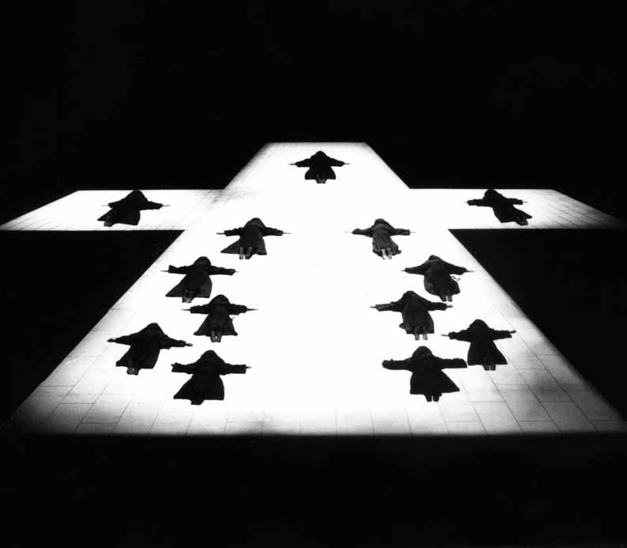
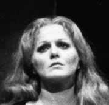
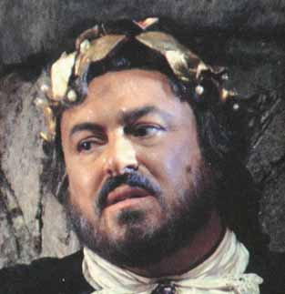

| Search Results |
[Met Performance] CID:224090
Aida {780}
Metropolitan Opera House; 01/1/1971
|
[Met Performance] CID:224100
Fidelio {105}
Metropolitan Opera House; 01/2/1971
Broadcast |
[Met Performance] CID:224110
Madama Butterfly {508}
Metropolitan Opera House; 01/2/1971
|
[Met Performance] CID:224120
Aida {781}
Metropolitan Opera House; 01/4/1971
|
[Met Performance] CID:224130
Andrea Chénier {136}
Metropolitan Opera House; 01/5/1971
|
[Met Performance] CID:224140
La Périchole {44}
Metropolitan Opera House; 01/6/1971
|
[Met Performance] CID:224150
Aida {782}
Metropolitan Opera House; 01/7/1971
Debuts: James Morris, Jacques Cesbron |
[Met Performance] CID:224160
Ernani {47}
Metropolitan Opera House; 01/8/1971
|
[Met Performance] CID:224170
Opera News
Orfeo ed Euridice {77}
Metropolitan Opera House; 01/9/1971
Broadcast |
[Met Performance] CID:224180
Fidelio {106}
Metropolitan Opera House; 01/9/1971
|
[Met Performance] CID:224190
Lucia di Lammermoor {394}
Metropolitan Opera House; 01/11/1971
Debut: Matteo Manuguerra |
[Met Performance] CID:224200
La Périchole {45}
Metropolitan Opera House; 01/12/1971
|
[Met Performance] CID:224210
Aida {783}
Metropolitan Opera House; 01/13/1971
|
[Met Performance] CID:224220
Andrea Chénier {137}
Metropolitan Opera House; 01/14/1971
|
[Met Performance] CID:224230
Lucia di Lammermoor {395}
Metropolitan Opera House; 01/15/1971
|
[Met Performance] CID:224240
Opera News
Die Frau ohne Schatten {15}
Metropolitan Opera House; 01/16/1971
Broadcast |
[Met Performance] CID:224250
Ernani {48}
Metropolitan Opera House; 01/16/1971
|
[Met Performance] CID:224260
La Périchole {46}
Metropolitan Opera House; 01/18/1971
|
[Met Performance] CID:224270
Ernani {49}
Metropolitan Opera House; 01/19/1971
|
[Met Performance] CID:224280
Die Frau ohne Schatten {16}
Metropolitan Opera House; 01/20/1971
|
[Met Performance] CID:224290
Lucia di Lammermoor {396}
Metropolitan Opera House; 01/21/1971
|
[Met Performance] CID:224300
Fidelio {107}
Metropolitan Opera House; 01/22/1971
|
[Met Performance] CID:224310
La Périchole {47}
Metropolitan Opera House; 01/23/1971
Broadcast |
[Met Performance] CID:224320
Il Barbiere di Siviglia {335}
Metropolitan Opera House; 01/23/1971
|
[Met Performance] CID:224330
Die Frau ohne Schatten {17}
Metropolitan Opera House; 01/25/1971
|
[Met Performance] CID:224340
Carmen {659}
Metropolitan Opera House; 01/26/1971
|
[Met Performance] CID:224350
Fidelio {108}
Metropolitan Opera House; 01/27/1971
|
[Met Performance] CID:224360
Il Barbiere di Siviglia {336}
Metropolitan Opera House; 01/28/1971
|
[Met Performance] CID:224370
Die Frau ohne Schatten {18}
Metropolitan Opera House; 01/29/1971
Review |
[Met Performance] CID:224380
Opera News
Un Ballo in Maschera {123}
Metropolitan Opera House; 01/30/1971
Broadcast |
[Met Performance] CID:224390
La Périchole {48}
Metropolitan Opera House; 01/30/1971
|
[Met Performance] CID:224400
Lucia di Lammermoor {397}
Metropolitan Opera House; 02/1/1971
|
[Met Performance] CID:224410
Die Frau ohne Schatten {19}
Metropolitan Opera House; 02/2/1971
|
[Met Performance] CID:224420
Fidelio {109}
Metropolitan Opera House; 02/3/1971
Debut: Klara Barlow |
[Met Performance] CID:224430
Un Ballo in Maschera {124}
Metropolitan Opera House; 02/4/1971
|
[Met Performance] CID:224440
Cavalleria Rusticana {464}
Pagliacci {508}
Metropolitan Opera House; 02/5/1971
Debut: Josef Gabriels |
[Met Performance] CID:224450
Carmen {660}
Metropolitan Opera House; 02/6/1971
Broadcast |
[Met Performance] CID:224460
Die Frau ohne Schatten {20}
Metropolitan Opera House; 02/6/1971
|
[Met Performance] CID:224470
Fidelio {110}
Metropolitan Opera House; 02/8/1971
|
[Met Performance] CID:224480
Cavalleria Rusticana {465}
Pagliacci {509}
Metropolitan Opera House; 02/9/1971
|
[Met Performance] CID:224490
Carmen {661}
Metropolitan Opera House; 02/10/1971
|
[Met Performance] CID:224500
Die Frau ohne Schatten {21}
Metropolitan Opera House; 02/11/1971
|
[Met Performance] CID:224510
Il Barbiere di Siviglia {337}
Metropolitan Opera House; 02/12/1971
|
[Met Performance] CID:224520
Cavalleria Rusticana {466}
Pagliacci {510}
Metropolitan Opera House; 02/13/1971
Broadcast |
[Met Performance] CID:224530
Carmen {662}
Metropolitan Opera House; 02/13/1971
|
[Met Performance] CID:224540
Fidelio {111}
Metropolitan Opera House; 02/15/1971
|
[Met Performance] CID:224550
Il Barbiere di Siviglia {338}
Metropolitan Opera House; 02/16/1971
|
[Met Performance] CID:224560
Die Frau ohne Schatten {22}
Metropolitan Opera House; 02/17/1971
|
[Met Performance] CID:224570
Elektra {43}
Metropolitan Opera House; 02/18/1971
Debut: Patricia Clarke |
[Met Performance] CID:224580
New Production
Werther {11}
Metropolitan Opera House; 02/19/1971
Debut: Norma Taubert
Franco Corelli cancellation |
[Met Performance] CID:224590
Il Barbiere di Siviglia {339}
Metropolitan Opera House; 02/20/1971
Broadcast |
[Met Performance] CID:224600
Cavalleria Rusticana {467}
Pagliacci {511}
Metropolitan Opera House; 02/20/1971
|
[Met Performance] CID:224610
Die Frau ohne Schatten {23}
Metropolitan Opera House; 02/22/1971
|
[Met Performance] CID:224620
Fidelio {112}
Metropolitan Opera House; 02/23/1971
|
[Met Performance] CID:224630
Il Barbiere di Siviglia {340}
Metropolitan Opera House; 02/24/1971
Debut: Franco Bonisolli |
[Met Performance] CID:224640
Fidelio {113}
Metropolitan Opera House; 02/25/1971
Debut: Caterina Ligendza |
[Met Performance] CID:224650
Carmen {663}
Metropolitan Opera House; 02/26/1971
|
[Met Performance] CID:224660
 Opera News
Opera News
Elektra {44}
Metropolitan Opera House; 02/27/1971
Broadcast |
[Met Performance] CID:224670
Werther {12}
Metropolitan Opera House; 02/27/1971
|
[Met Performance] CID:224680
Carmen {664}
Metropolitan Opera House; 03/1/1971
|
[Met Performance] CID:224690
Lucia di Lammermoor {398}
Metropolitan Opera House; 03/2/1971
Debut: Nadja Witkowska |
[Met Performance] CID:224700
Il Trovatore {392}
Metropolitan Opera House; 03/2/1971
|
[Met Performance] CID:224710
La Bohème {710}
Metropolitan Opera House; 03/3/1971
|
[Met Performance] CID:224720
Werther {13}
Metropolitan Opera House; 03/4/1971
|
[Met Performance] CID:224730
Il Trovatore {393}
Metropolitan Opera House; 03/5/1971
|
[Met Performance] CID:224740
La Bohème {711}
Metropolitan Opera House; 03/6/1971
Dorothy Kirsten's 25th Anniversary
Broadcast |
[Met Performance] CID:224750
Carmen {665}
Metropolitan Opera House; 03/6/1971
|
[Met Performance] CID:224760
Il Trovatore {394}
Metropolitan Opera House; 03/8/1971
|
[Met Performance] CID:224770
Lucia di Lammermoor {399}
Metropolitan Opera House; 03/9/1971
|
[Met Performance] CID:224780
Werther {14}
Metropolitan Opera House; 03/9/1971
|
[Met Performance] CID:224790
La Bohème {712}
Metropolitan Opera House; 03/10/1971
|
[Met Performance] CID:224800
Carmen {666}
Metropolitan Opera House; 03/11/1971
|
[Met Performance] CID:224810
Werther {15}
Metropolitan Opera House; 03/12/1971
|
[Met Performance] CID:224820
Opera News
Il Trovatore {395}
Metropolitan Opera House; 03/13/1971
Broadcast |
[Met Performance] CID:224830
La Bohème {713}
Metropolitan Opera House; 03/13/1971
|
[Met Performance] CID:224840
Carmen {667}
Metropolitan Opera House; 03/15/1971
|
[Met Performance] CID:224850
La Bohème {714}
Metropolitan Opera House; 03/16/1971
|
[Met Performance] CID:224860
Il Trovatore {396}
Metropolitan Opera House; 03/17/1971
|
[Met Performance] CID:224870
Lucia di Lammermoor {400}
Metropolitan Opera House; 03/18/1971
|
[Met Performance] CID:224880
Werther {16}
Metropolitan Opera House; 03/18/1971
Debut: Lorraine Keane |
[Met Performance] CID:224890
La Bohème {715}
Metropolitan Opera House; 03/19/1971
Debut: Adriana Maliponte
Review |
[Met Performance] CID:224900
Don Giovanni {283}
Metropolitan Opera House; 03/20/1971
Broadcast |
[Met Performance] CID:224910
Il Trovatore {397}
Metropolitan Opera House; 03/20/1971
|
[Met Performance] CID:224920
Werther {17}
Metropolitan Opera House; 03/22/1971
|
[Met Performance] CID:224930
Don Giovanni {284}
Metropolitan Opera House; 03/23/1971
|
[Met Performance] CID:224940
Lucia di Lammermoor {401}
Metropolitan Opera House; 03/24/1971
|
[Met Performance] CID:224950
La Bohème {716}
Metropolitan Opera House; 03/24/1971
|
[Met Performance] CID:224960
Les Contes d'Hoffmann {117}
Metropolitan Opera House; 03/25/1971
|
[Met Performance] CID:224970
Don Giovanni {285}
Metropolitan Opera House; 03/26/1971
|
[Met Performance] CID:224980
Werther {18}
Metropolitan Opera House; 03/27/1971
Broadcast
Review |
[Met Performance] CID:224990
Carmen {668}
Metropolitan Opera House; 03/27/1971
|
[Met Performance] CID:225000
Don Giovanni {286}
Metropolitan Opera House; 03/29/1971
|
[Met Performance] CID:225010
Lucia di Lammermoor {402}
Metropolitan Opera House; 03/30/1971
|
[Met Performance] CID:225020
Il Barbiere di Siviglia {341}
Metropolitan Opera House; 03/30/1971
|
[Met Performance] CID:225030
Werther {19}
Metropolitan Opera House; 03/31/1971
|
[Met Performance] CID:225040
Carmen {669}
Metropolitan Opera House; 04/1/1971
|
[Met Performance] CID:225050
Les Contes d'Hoffmann {118}
Metropolitan Opera House; 04/2/1971
|
[Met Performance] CID:225060
Parsifal {218}
Metropolitan Opera House; 04/3/1971
Broadcast |
[Met Performance] CID:225070
La Bohème {717}
Metropolitan Opera House; 04/3/1971
|
[Met Concert/Gala] CID:351167
National Council Concert
Metropolitan Opera House; 04/04/1971
|
[Met Performance] CID:225080
Lucia di Lammermoor {403}
Metropolitan Opera House; 04/5/1971
|
[Met Performance] CID:225090
Il Barbiere di Siviglia {342}
Metropolitan Opera House; 04/5/1971
|
[Met Performance] CID:225100
Parsifal {219}
Metropolitan Opera House; 04/6/1971
|
[Met Performance] CID:225110
Werther {20}
Metropolitan Opera House; 04/7/1971
|
[Met Performance] CID:225120
Don Giovanni {287}
Metropolitan Opera House; 04/8/1971
|
[Met Performance] CID:225130
Parsifal {220}
Metropolitan Opera House; 04/9/1971
|
[Met Performance] CID:225140
Opera News
Les Contes d'Hoffmann {119}
Metropolitan Opera House; 04/10/1971
Broadcast |
[Met Performance] CID:225150
Madama Butterfly {509}
Metropolitan Opera House; 04/10/1971
Debut: Fawayne Murphy |
[Met Performance] CID:225160
Werther {21}
Metropolitan Opera House; 04/12/1971
|
[Met Performance] CID:225170
Don Giovanni {288}
Metropolitan Opera House; 04/13/1971
Debut: Stuart Burrows |
[Met Performance] CID:225180
Lucia di Lammermoor {404}
Metropolitan Opera House; 04/14/1971
|
[Met Performance] CID:225190
Madama Butterfly {510}
Metropolitan Opera House; 04/14/1971
|
[Met Performance] CID:225200
La Bohème {718}
Metropolitan Opera House; 04/15/1971
|
[Met Performance] CID:225210
Don Giovanni {289}
Metropolitan Opera House; 04/16/1971
|
[Met Performance] CID:225220
Madama Butterfly {511}
Metropolitan Opera House; 04/17/1971
Broadcast |
[Met Performance] CID:225230
Les Contes d'Hoffmann {120}
Metropolitan Opera House; 04/17/1971
|
[Met Performance] CID:225240
Aida {784}
Hynes Civic Auditorium, Boston, Massachusetts; 04/19/1971
|
[Met Performance] CID:225250
La Périchole {49}
Hynes Civic Auditorium, Boston, Massachusetts; 04/20/1971
|
[Met Performance] CID:225260
Madama Butterfly {512}
Hynes Civic Auditorium, Boston, Massachusetts; 04/21/1971
|
[Met Performance] CID:225270
Carmen {670}
Hynes Civic Auditorium, Boston, Massachusetts; 04/22/1971
|
[Met Performance] CID:225280
Werther {22}
Hynes Civic Auditorium, Boston, Massachusetts; 04/23/1971
Review |
[Met Performance] CID:225290
Rigoletto {481}
Hynes Civic Auditorium, Boston, Massachusetts; 04/24/1971
|
[Met Performance] CID:225300
Don Giovanni {290}
Hynes Civic Auditorium, Boston, Massachusetts; 04/24/1971
Review |
[Met Performance] CID:225310
Carmen {671}
Cleveland Public Auditorium, Cleveland, Ohio; 04/26/1971
|
[Met Performance] CID:225320
Werther {23}
Cleveland Public Auditorium, Cleveland, Ohio; 04/27/1971
|
[Met Performance] CID:225330
La Périchole {50}
Cleveland Public Auditorium, Cleveland, Ohio; 04/28/1971
|
[Met Performance] CID:225340
Rigoletto {482}
Cleveland Public Auditorium, Cleveland, Ohio; 04/29/1971
|
[Met Performance] CID:225350
Aida {785}
Cleveland Public Auditorium, Cleveland, Ohio; 04/30/1971
|
[Met Performance] CID:225360
Madama Butterfly {513}
Cleveland Public Auditorium, Cleveland, Ohio; 05/1/1971
|
[Met Performance] CID:225370
Don Giovanni {291}
Cleveland Public Auditorium, Cleveland, Ohio; 05/1/1971
|
[Met Performance] CID:225380
Aida {786}
Atlanta Civic Center, Atlanta, Georgia; 05/3/1971
|
[Met Performance] CID:225390
La Périchole {51}
Atlanta Civic Center, Atlanta, Georgia; 05/4/1971
|
[Met Performance] CID:225400
Rigoletto {483}
Atlanta Civic Center, Atlanta, Georgia; 05/5/1971
|
[Met Performance] CID:225410
Werther {24}
Atlanta Civic Center, Atlanta, Georgia; 05/6/1971
|
[Met Performance] CID:225420
Carmen {672}
Atlanta Civic Center, Atlanta, Georgia; 05/7/1971
|
[Met Performance] CID:225430
Madama Butterfly {514}
Atlanta Civic Center, Atlanta, Georgia; 05/8/1971
|
[Met Performance] CID:225440
Don Giovanni {292}
Atlanta Civic Center, Atlanta, Georgia; 05/8/1971
|
[Met Performance] CID:225450
Rigoletto {484}
Memphis, Tennessee; 05/10/1971
|
[Met Performance] CID:225460
Werther {25}
Memphis, Tennessee; 05/11/1971
|
[Met Performance] CID:225470
Aida {787}
Memphis, Tennessee; 05/12/1971
|
[Met Performance] CID:225480
Carmen {673}
State Fair Music Hall, Dallas, Texas; 05/13/1971
|
[Met Performance] CID:225490
La Périchole {52}
State Fair Music Hall, Dallas, Texas; 05/14/1971
|
[Met Performance] CID:225500
Don Giovanni {293}
State Fair Music Hall, Dallas, Texas; 05/15/1971
|
[Met Performance] CID:225510
Aida {788}
State Fair Music Hall, Dallas, Texas; 05/15/1971
|
[Met Performance] CID:225520
Don Giovanni {294}
Northrup Memorial Auditorium, Minneapolis, Minnesota; 05/17/1971
|
[Met Performance] CID:225530
Aida {789}
Northrup Memorial Auditorium, Minneapolis, Minnesota; 05/18/1971
|
[Met Performance] CID:225540
Carmen {674}
Northrup Memorial Auditorium, Minneapolis, Minnesota; 05/19/1971
|
[Met Performance] CID:225550
Madama Butterfly {515}
Northrup Memorial Auditorium, Minneapolis, Minnesota; 05/20/1971
|
[Met Performance] CID:225560
Werther {26}
Northrup Memorial Auditorium, Minneapolis, Minnesota; 05/21/1971
|
[Met Performance] CID:225570
La Périchole {53}
Northrup Memorial Auditorium, Minneapolis, Minnesota; 05/22/1971
|
[Met Performance] CID:225580
Rigoletto {485}
Northrup Memorial Auditorium, Minneapolis, Minnesota; 05/22/1971
Debut: Joyce Olson
Review |
[Met Performance] CID:225590
Werther {27}
Masonic Temple Auditorium, Detroit, Michigan; 05/24/1971
|
[Met Performance] CID:225600
Don Giovanni {295}
Masonic Temple Auditorium, Detroit, Michigan; 05/25/1971
|
[Met Performance] CID:225610
Carmen {675}
Masonic Temple Auditorium, Detroit, Michigan; 05/26/1971
Review |
[Met Performance] CID:225620
La Périchole {54}
Masonic Temple Auditorium, Detroit, Michigan; 05/27/1971
Review |
[Met Performance] CID:225630
Aida {790}
Masonic Temple Auditorium, Detroit, Michigan; 05/28/1971
Review |
[Met Performance] CID:225640
Madama Butterfly {516}
Masonic Temple Auditorium, Detroit, Michigan; 05/29/1971
|
[Met Performance] CID:225650
Rigoletto {486}
Masonic Temple Auditorium, Detroit, Michigan; 05/29/1971
Review |
[Met Performance] CID:225660
Aida {791}
Metropolitan Opera House; 05/31/1971
|
[Met Performance] CID:225670
Rigoletto {487}
Metropolitan Opera House; 06/1/1971
|
[Met Performance] CID:225680
Madama Butterfly {517}
Metropolitan Opera House; 06/2/1971
|
[Met Performance] CID:225690
Il Trovatore {398}
Metropolitan Opera House; 06/3/1971
Debut: Ludovic Spiess |
[Met Performance] CID:225700
La Bohème {719}
Metropolitan Opera House; 06/4/1971
|
[Met Performance] CID:225710
Tosca {539}
Metropolitan Opera House; 06/05/1971
Debuts: Peter Glossop, James Levine
Review |
[Met Performance] CID:225720
Don Giovanni {296}
Metropolitan Opera House; 06/5/1971
|
[Met Performance] CID:225730
Madama Butterfly {518}
Metropolitan Opera House; 06/7/1971
|
[Met Performance] CID:225740
Aida {792}
Metropolitan Opera House; 06/8/1971
|
[Met Performance] CID:225750
La Bohème {720}
Metropolitan Opera House; 06/9/1971
|
[Met Performance] CID:225760
Il Trovatore {399}
Metropolitan Opera House; 06/10/1971
|
[Met Performance] CID:225770
Don Giovanni {297}
Metropolitan Opera House; 06/11/1971
|
[Met Performance] CID:225780
Rigoletto {488}
Metropolitan Opera House; 06/12/1971
|
[Met Performance] CID:225790
Tosca {540}
Metropolitan Opera House; 06/12/1971
|
[Met Performance] CID:225800
Faust {633}
New York, Brooklyn, Prospect Park; 06/16/1971
|
[Met Performance] CID:225810
Concert
Cavalleria Rusticana {468}
New York, Manhattan, Central Park; 06/17/1971
|
[Met Performance] CID:225820
Concert
Cavalleria Rusticana {469}
New York, Bronx, Botanical Garden; 06/18/1971
|
[Met Performance] CID:225830
Faust {634}
New York, Queens, Crocheron Park; 06/19/1971
|
[Met Performance] CID:225840
Fidelio {114}
New York, Queens, Crocheron Park; 06/22/1971
|
[Met Performance] CID:225850
Faust {635}
New York, Staten Island, Clove Lakes Park; 06/23/1971
|
[Met Performance] CID:225860
Concert
Cavalleria Rusticana {470}
New York, Staten Island, Clove Lakes Park; 06/25/1971
|
[Met Performance] CID:225870
Fidelio {115}
New York, Manhattan, Central Park; 06/26/1971
|
[Met Performance] CID:225880
Faust {636}
New York, Manhattan, Central Park; 06/29/1971
|
[Met Performance] CID:225890
Concert
Cavalleria Rusticana {471}
New York, Queens, Crocheron Park; 06/30/1971
|
[Met Performance] CID:225900
Fidelio {116}
New York, Brooklyn, Prospect Park; 07/2/1971
|
[Met Performance] CID:226000
In Concert
Faust {637}
New York, Bronx, Botanical Garden; 7/3/1971
|
[Met Performance] CID:227000
Don Carlo {86}
Metropolitan Opera House; 09/20/1971
Opening Night {87}
Rudolf Bing, General Manager |
[Met Performance] CID:227010
Rigoletto {489}
Metropolitan Opera House; 09/21/1971
|
[Met Performance] CID:227020
Faust {638}
Metropolitan Opera House; 09/22/1971
|
[Met Performance] CID:227030
L'Elisir d'Amore {113}
Metropolitan Opera House; 09/23/1971
|
[Met Performance] CID:227040
Cavalleria Rusticana {472}
Pagliacci {512}
Metropolitan Opera House; 09/24/1971
Debuts: Christopher Keene, Frank Coffey |
[Met Performance] CID:227050
Rigoletto {490}
Metropolitan Opera House; 09/25/1971
|
[Met Performance] CID:227060
Don Carlo {87}
Metropolitan Opera House; 09/25/1971
Debut: Jeannine Altmeyer |
[Met Performance] CID:227070
Cavalleria Rusticana {473}
Pagliacci {513}
Metropolitan Opera House; 09/27/1971
|
[Met Performance] CID:227080
New Production
Der Freischütz {22}
Metropolitan Opera House; 09/28/1971
Debuts: Gerd Feldhoff, Elyssa Lindner, Rudolf Heinrich, Michael Ebert
Review |
[Met Performance] CID:227090
Rigoletto {491}
Metropolitan Opera House; 09/29/1971
|
[Met Performance] CID:227100
Faust {639}
Metropolitan Opera House; 09/30/1971
|
[Met Performance] CID:227110
Cavalleria Rusticana {474}
Pagliacci {514}
Metropolitan Opera House; 10/1/1971
|
[Met Performance] CID:227120
Don Carlo {88}
Metropolitan Opera House; 10/2/1971
|
[Met Performance] CID:227130
L'Elisir d'Amore {114}
Metropolitan Opera House; 10/2/1971
|
[Met Performance] CID:227140
Faust {640}
Metropolitan Opera House; 10/4/1971
|
[Met Performance] CID:227150
Der Freischütz {23}
Metropolitan Opera House; 10/5/1971
|
[Met Performance] CID:227160
L'Elisir d'Amore {115}
Metropolitan Opera House; 10/6/1971
|
[Met Performance] CID:227170
Fidelio {117}
Metropolitan Opera House; 10/7/1971
Debut: Hans Wallat |
[Met Performance] CID:227180
Don Carlo {89}
Metropolitan Opera House; 10/8/1971
|
[Met Performance] CID:227190
Cavalleria Rusticana {475}
Pagliacci {515}
Metropolitan Opera House; 10/9/1971
|
[Met Performance] CID:227200
Rigoletto {492}
Metropolitan Opera House; 10/9/1971
|
[Met Performance] CID:227210
Don Carlo {90}
Metropolitan Opera House; 10/11/1971
|
[Met Performance] CID:227220
Fidelio {118}
Metropolitan Opera House; 10/12/1971
|
[Met Performance] CID:227230
Der Freischütz {24}
Metropolitan Opera House; 10/13/1971
|
[Met Performance] CID:227240
Faust {641}
Metropolitan Opera House; 10/14/1971
|
[Met Performance] CID:227250
Luisa Miller {24}
Metropolitan Opera House; 10/15/1971
|
[Met Performance] CID:227260
Fidelio {119}
Metropolitan Opera House; 10/16/1971
|
[Met Performance] CID:227270
Cavalleria Rusticana {476}
Pagliacci {516}
Metropolitan Opera House; 10/16/1971
|
[Met Performance] CID:227280
Der Freischütz {25}
Metropolitan Opera House; 10/18/1971
|
[Met Performance] CID:227290
Fidelio {120}
Metropolitan Opera House; 10/19/1971
|
[Met Performance] CID:227300
Luisa Miller {25}
Metropolitan Opera House; 10/20/1971
|
[Met Performance] CID:227310
L'Elisir d'Amore {116}
Metropolitan Opera House; 10/21/1971
|
[Met Performance] CID:227320
Der Freischütz {26}
Metropolitan Opera House; 10/22/1971
|
[Met Performance] CID:227330
Cavalleria Rusticana {477}
Pagliacci {517}
Metropolitan Opera House; 10/23/1971
Debut: Maria Bieshu |
[Met Performance] CID:227340
Faust {642}
Metropolitan Opera House; 10/23/1971
|
[Met Performance] CID:227350
Così Fan Tutte {61}
Metropolitan Opera House; 10/25/1971
Debut: Pietro Bottazzo |
[Met Performance] CID:227360
L'Elisir d'Amore {117}
Metropolitan Opera House; 10/26/1971
|
[Met Performance] CID:227370
Carmen {676}
Metropolitan Opera House; 10/27/1971
Debut: Gabor Ötvös |
[Met Performance] CID:227380
L'Elisir d'Amore {118}
Metropolitan Opera House; 10/28/1971
|
[Met Performance] CID:227390
Der Freischütz {27}
Metropolitan Opera House; 10/28/1971
|
[Met Performance] CID:227400
Faust {643}
Metropolitan Opera House; 10/29/1971
|
[Met Performance] CID:227410
Luisa Miller {26}
Metropolitan Opera House; 10/30/1971
|
[Met Performance] CID:227420
Carmen {677}
Metropolitan Opera House; 10/30/1971
|
[Met Performance] CID:227430
Rigoletto {493}
Metropolitan Opera House; 11/1/1971
|
[Met Performance] CID:227440
Tosca {541}
Metropolitan Opera House; 11/2/1971
|
[Met Performance] CID:227450
Così Fan Tutte {62}
Metropolitan Opera House; 11/3/1971
|
[Met Performance] CID:227460
Luisa Miller {27}
Metropolitan Opera House; 11/4/1971
Review |
[Met Performance] CID:227470
Carmen {678}
Metropolitan Opera House; 11/5/1971
Debut: Viorica Cortez |
[Met Performance] CID:227480
Faust {644}
Metropolitan Opera House; 11/6/1971
|
[Met Performance] CID:227490
Tosca {542}
Metropolitan Opera House; 11/6/1971
|
[Met Performance] CID:227500
L'Elisir d'Amore {119}
Metropolitan Opera House; 11/8/1971
|
[Met Performance] CID:227510
Luisa Miller {28}
Metropolitan Opera House; 11/9/1971
|
[Met Performance] CID:227520
Rigoletto {494}
Metropolitan Opera House; 11/10/1971
Debut: Michelangelo Veltri |
[Met Performance] CID:227530
Carmen {679}
Metropolitan Opera House; 11/11/1971
|
[Met Performance] CID:227540
Così Fan Tutte {63}
Metropolitan Opera House; 11/12/1971
|
[Met Performance] CID:227550
Tosca {543}
Metropolitan Opera House; 11/13/1971
|
[Met Performance] CID:227560
Rigoletto {495}
Metropolitan Opera House; 11/13/1971
|
[Met Performance] CID:227570
Faust {645}
Metropolitan Opera House; 11/15/1971
|
[Met Performance] CID:227580
Rigoletto {496}
Metropolitan Opera House; 11/16/1971
|
[Met Performance] CID:227590
Tosca {544}
Metropolitan Opera House; 11/17/1971
|
[Met Performance] CID:227600
New Production
Tristan und Isolde {396}
Metropolitan Opera House; 11/18/1971
Debuts: August Everding
Review |
[Met Performance] CID:227610
Carmen {680}
Metropolitan Opera House; 11/19/1971
|
[Met Performance] CID:227620
Così Fan Tutte {64}
Metropolitan Opera House; 11/20/1971
|
[Met Performance] CID:227630
Luisa Miller {29}
Metropolitan Opera House; 11/20/1971
|
[Met Performance] CID:227640
Tristan und Isolde {397}
Metropolitan Opera House; 11/22/1971
|
[Met Performance] CID:227650
Così Fan Tutte {65}
Metropolitan Opera House; 11/23/1971
|
[Met Performance] CID:227660
La Forza del Destino {143}
Metropolitan Opera House; 11/24/1971
Review |
[Met Performance] CID:227670
Rigoletto {497}
Metropolitan Opera House; 11/25/1971
|
[Met Performance] CID:227680
Tristan und Isolde {398}
Metropolitan Opera House; 11/26/1971
|
[Met Performance] CID:227690
Tosca {545}
Metropolitan Opera House; 11/27/1971
|
[Met Performance] CID:227700
La Forza del Destino {144}
Metropolitan Opera House; 11/27/1971
|
[Met Performance] CID:227710
Luisa Miller {30}
Metropolitan Opera House; 11/29/1971
|
[Met Performance] CID:227720
Tristan und Isolde {399}
Metropolitan Opera House; 11/30/1971
|
[Met Performance] CID:227730
Carmen {681}
Metropolitan Opera House; 12/1/1971
|
[Met Performance] CID:227740
La Forza del Destino {145}
Metropolitan Opera House; 12/2/1971
|
[Met Performance] CID:227750
Rigoletto {498}
Metropolitan Opera House; 12/3/1971
|
[Met Performance] CID:227760
Carmen {682}
Metropolitan Opera House; 12/4/1971
|
[Met Performance] CID:227770
Tristan und Isolde {400}
Metropolitan Opera House; 12/4/1971
|
[Met Performance] CID:227780
Luisa Miller {31}
Metropolitan Opera House; 12/6/1971
|
[Met Performance] CID:227790
La Forza del Destino {146}
Metropolitan Opera House; 12/7/1971
|
[Met Performance] CID:227800
Faust {646}
Metropolitan Opera House; 12/8/1971
|
[Met Performance] CID:227810
Tristan und Isolde {401}
Metropolitan Opera House; 12/9/1971
|
[Met Performance] CID:227820
Samson et Dalila {132}
Metropolitan Opera House; 12/10/1971
|
[Met Performance] CID:227830
Opera News
Luisa Miller {32}
Metropolitan Opera House; 12/11/1971
Broadcast |
[Met Performance] CID:227840
Tosca {546}
Metropolitan Opera House; 12/11/1971
|
[Met Performance] CID:227850
Carmen {683}
Metropolitan Opera House; 12/13/1971
|
[Met Performance] CID:227860
Tristan und Isolde {402}
Metropolitan Opera House; 12/14/1971
|
[Met Performance] CID:227870
Samson et Dalila {133}
Metropolitan Opera House; 12/15/1971
Review |
[Met Performance] CID:227880
Cavalleria Rusticana {478}
Pagliacci {518}
Metropolitan Opera House; 12/16/1971
|
[Met Performance] CID:227890
Tosca {547}
Metropolitan Opera House; 12/17/1971
Debut: Joseph Andreacchi |
[Met Performance] CID:227900
Opera News
Tristan und Isolde {403}
Metropolitan Opera House; 12/18/1971
Broadcast |
[Met Performance] CID:227910
Samson et Dalila {134}
Metropolitan Opera House; 12/18/1971
|
[Met Performance] CID:227920
Cavalleria Rusticana {479}
Pagliacci {519}
Metropolitan Opera House; 12/20/1971
|
[Met Performance] CID:227930
Samson et Dalila {135}
Metropolitan Opera House; 12/21/1971
|
[Met Performance] CID:227940
Hänsel und Gretel {162}
Metropolitan Opera House; 12/22/1971
|
[Met Performance] CID:227950
Cavalleria Rusticana {480}
Pagliacci {520}
Metropolitan Opera House; 12/23/1971
|
[Met Performance] CID:227960
La Forza del Destino {147}
Metropolitan Opera House; 12/24/1971
|
[Met Performance] CID:227970
Hänsel und Gretel {163}
Metropolitan Opera House; 12/25/1971
Broadcast |
[Met Performance] CID:227980
Samson et Dalila {136}
Metropolitan Opera House; 12/25/1971
|
[Met Performance] CID:227990
Die Meistersinger von Nürnberg {344}
Metropolitan Opera House; 12/27/1971
Debut: Benno Kusche
Review |
[Met Performance] CID:228000
Così Fan Tutte {66}
Metropolitan Opera House; 12/28/1971
|
[Met Performance] CID:228010
Samson et Dalila {137}
Metropolitan Opera House; 12/29/1971
|
[Met Performance] CID:228020
Hänsel und Gretel {164}
Metropolitan Opera House; 12/30/1971
|
[Met Performance] CID:228030
Cavalleria Rusticana {481}
Pagliacci {521}
Metropolitan Opera House; 12/31/1971
|
[Met Performance] CID:228040
Samson et Dalila {138}
Metropolitan Opera House; 01/1/1972
|
[Met Performance] CID:228050
Carmen {684}
Metropolitan Opera House; 01/1/1972
Broadcast |
[Met Performance] CID:228060
Die Meistersinger von Nürnberg {345}
Metropolitan Opera House; 01/3/1972
|
[Met Performance] CID:228070
Carmen {685}
Metropolitan Opera House; 01/4/1972
|
[Met Performance] CID:228080
Cavalleria Rusticana {482}
Pagliacci {522}
Metropolitan Opera House; 01/5/1972
|
[Met Performance] CID:228090
Samson et Dalila {139}
Metropolitan Opera House; 01/6/1972
|
[Met Performance] CID:228100
Hänsel und Gretel {165}
Metropolitan Opera House; 01/7/1972
|
[Met Performance] CID:228110
Opera News
Samson et Dalila {140}
Metropolitan Opera House; 01/8/1972
Broadcast |
[Met Performance] CID:228120
Così Fan Tutte {67}
Metropolitan Opera House; 01/8/1972
|
[Met Performance] CID:228130
Die Meistersinger von Nürnberg {346}
Metropolitan Opera House; 01/10/1972
|
[Met Performance] CID:228140
Hänsel und Gretel {166}
Metropolitan Opera House; 01/11/1972
|
[Met Performance] CID:228150
Cavalleria Rusticana {483}
Pagliacci {523}
Metropolitan Opera House; 01/12/1972
|
[Met Performance] CID:228160
Samson et Dalila {141}
Metropolitan Opera House; 01/13/1972
|
[Met Performance] CID:228170
Così Fan Tutte {68}
Metropolitan Opera House; 01/14/1972
|
[Met Performance] CID:228180
Opera News
Die Meistersinger von Nürnberg {347}
Metropolitan Opera House; 01/15/1972
Broadcast |
[Met Performance] CID:228190
Cavalleria Rusticana {484}
Pagliacci {524}
Metropolitan Opera House; 01/15/1972
|
[Met Performance] CID:228200
Samson et Dalila {142}
Metropolitan Opera House; 01/17/1972
|
[Met Performance] CID:228210
Cavalleria Rusticana {485}
Pagliacci {525}
Metropolitan Opera House; 01/18/1972
|
[Met Performance] CID:228220
New Production
Pelléas et Mélisande {65}
Metropolitan Opera House; 01/19/1972
Debuts: Barry McDaniel, Adam Klein
Review |
[Met Performance] CID:228230
Rigoletto {499}
Metropolitan Opera House; 01/20/1972
|
[Met Performance] CID:228240
La Forza del Destino {148}
Metropolitan Opera House; 01/21/1972
|
[Met Performance] CID:228250
Opera News
Così Fan Tutte {69}
Metropolitan Opera House; 01/22/1972
Broadcast |
[Met Performance] CID:228260
Die Meistersinger von Nürnberg {348}
Metropolitan Opera House; 01/22/1972
|
[Met Performance] CID:228270
Pelléas et Mélisande {66}
Metropolitan Opera House; 01/24/1972
|
[Met Performance] CID:228280
Die Meistersinger von Nürnberg {349}
Metropolitan Opera House; 01/25/1972
|
[Met Performance] CID:228290
Così Fan Tutte {70}
Metropolitan Opera House; 01/26/1972
|
[Met Performance] CID:228300
Le Nozze di Figaro {236}
Metropolitan Opera House; 01/27/1972
Debut: Betsy Norden |
[Met Performance] CID:228310
Rigoletto {500}
Metropolitan Opera House; 01/28/1972
|
[Met Performance] CID:228320
Pelléas et Mélisande {67}
Metropolitan Opera House; 01/29/1972
Broadcast |
[Met Performance] CID:228330
La Forza del Destino {149}
Metropolitan Opera House; 01/29/1972
|
[Met Performance] CID:228340
Le Nozze di Figaro {237}
Metropolitan Opera House; 01/31/1972
|
[Met Performance] CID:228350
Werther {28}
Metropolitan Opera House; 02/1/1972
Review |
[Met Performance] CID:228360
Pelléas et Mélisande {68}
Metropolitan Opera House; 02/2/1972
|
[Met Performance] CID:228370
Die Meistersinger von Nürnberg {350}
Metropolitan Opera House; 02/3/1972
|
[Met Performance] CID:228380
Le Nozze di Figaro {238}
Metropolitan Opera House; 02/4/1972
|
[Met Performance] CID:228390
Rigoletto {501}
Metropolitan Opera House; 02/5/1972
Broadcast |
[Met Performance] CID:228400
L'Elisir d'Amore {120}
Metropolitan Opera House; 02/5/1972
|
[Met Performance] CID:228410
La Forza del Destino {150}
Metropolitan Opera House; 02/7/1972
|
[Met Performance] CID:228420
L'Elisir d'Amore {121}
Metropolitan Opera House; 02/8/1972
|
[Met Performance] CID:228430
Die Meistersinger von Nürnberg {351}
Metropolitan Opera House; 02/9/1972
|
[Met Performance] CID:228440
Pelléas et Mélisande {69}
Metropolitan Opera House; 02/10/1972
Debut: Louis Quilico |
[Met Performance] CID:228450
Werther {29}
Metropolitan Opera House; 02/11/1972
|
[Met Performance] CID:228460
Opera News 1
Opera News 2
La Forza del Destino {151}
Metropolitan Opera House; 02/12/1972
Broadcast |
[Met Performance] CID:228470
Le Nozze di Figaro {239}
Metropolitan Opera House; 02/12/1972
|
[Met Performance] CID:228480
Werther {30}
Metropolitan Opera House; 02/14/1972
|
[Met Performance] CID:228490
Le Nozze di Figaro {240}
Metropolitan Opera House; 02/15/1972
|
[Met Performance] CID:228500
L'Elisir d'Amore {122}
Metropolitan Opera House; 02/16/1972
|
[Met Performance] CID:228510
New Production
La Fille du Régiment {42}
Metropolitan Opera House; 02/17/1972
Debuts: Sandro Sequi, Anna Anni, Marcel Escoffier
Review |
[Met Performance] CID:228520
Pelléas et Mélisande {70}
Metropolitan Opera House; 02/18/1972
|
[Met Performance] CID:228530
Opera News
L'Elisir d'Amore {123}
Metropolitan Opera House; 02/19/1972
Broadcast |
[Met Performance] CID:228540
Werther {31}
Metropolitan Opera House; 02/19/1972
|
[Met Performance] CID:228550
Le Nozze di Figaro {241}
Metropolitan Opera House; 02/21/1972
|
[Met Performance] CID:228560
Pelléas et Mélisande {71}
Metropolitan Opera House; 02/22/1972
|
[Met Performance] CID:228570
La Fille du Régiment {43}
Metropolitan Opera House; 02/23/1972
|
[Met Performance] CID:228580
Werther {32}
Metropolitan Opera House; 02/24/1972
Debut: Edna Lind |
[Met Performance] CID:228590
Falstaff {108}
Metropolitan Opera House; 02/25/1972
Debut: Christoph Von Dohnányi |
[Met Performance] CID:228600
Opera News 1
Opera News 2
Faust {647}
Metropolitan Opera House; 02/26/1972
Broadcast |
[Met Performance] CID:228610
Fidelio {121}
Metropolitan Opera House; 02/26/1972
Debut: Anja Silja |
[Met Performance] CID:228620
La Fille du Régiment {44}
Metropolitan Opera House; 02/28/1972
|
[Met Performance] CID:228630
La Forza del Destino {152}
Metropolitan Opera House; 02/29/1972
|
[Met Performance] CID:228640
Le Nozze di Figaro {242}
Metropolitan Opera House; 03/1/1972
|
[Met Performance] CID:228650
Falstaff {109}
Metropolitan Opera House; 03/2/1972
|
[Met Performance] CID:228660
Fidelio {122}
Metropolitan Opera House; 03/3/1972
|
[Met Performance] CID:228670
Opera News
Werther {33}
Metropolitan Opera House; 03/4/1972
Broadcast |
[Met Performance] CID:228680
La Fille du Régiment {45}
Metropolitan Opera House; 03/4/1972
|
[Met Performance] CID:228690
Salome {75}
Metropolitan Opera House; 03/6/1972
|
[Met Performance] CID:228700
Falstaff {110}
Metropolitan Opera House; 03/7/1972
|
[Met Performance] CID:228710
La Forza del Destino {153}
Metropolitan Opera House; 03/8/1972
|
[Met Performance] CID:228720
La Fille du Régiment {46}
Metropolitan Opera House; 03/9/1972
|
[Met Performance] CID:228730
Salome {76}
Metropolitan Opera House; 03/10/1972
|
[Met Performance] CID:228740
Fidelio {123}
Metropolitan Opera House; 03/11/1972
Broadcast |
[Met Performance] CID:228750
Le Nozze di Figaro {243}
Metropolitan Opera House; 03/11/1972
|
[Met Performance] CID:228760
Werther {34}
Metropolitan Opera House; 03/13/1972
|
[Met Performance] CID:228770
La Fille du Régiment {47}
Metropolitan Opera House; 03/14/1972
Debut: Monica Sinclair |
[Met Performance] CID:228780
Falstaff {111}
Metropolitan Opera House; 03/15/1972
|
[Met Performance] CID:228790
Fidelio {124}
Metropolitan Opera House; 03/16/1972
|
[Met Performance] CID:228800
Faust {648}
Metropolitan Opera House; 03/17/1972
|
[Met Performance] CID:228810
Salome {77}
Metropolitan Opera House; 03/18/1972
Broadcast |
[Met Performance] CID:228820
Falstaff {112}
Metropolitan Opera House; 03/18/1972
|
[Met Performance] CID:228830
Fidelio {125}
Metropolitan Opera House; 03/20/1972
|
[Met Performance] CID:228840
Faust {649}
Metropolitan Opera House; 03/21/1972
|
[Met Performance] CID:228850
La Fille du Régiment {48}
Metropolitan Opera House; 03/22/1972
|
[Met Performance] CID:228860
Salome {78}
Metropolitan Opera House; 03/23/1972
|
[Met Performance] CID:228870
Fidelio {126}
Metropolitan Opera House; 03/24/1972
|
[Met Performance] CID:228880
Opera News 1
Opera News 2
La Fille du Régiment {49}
Metropolitan Opera House; 03/25/1972
Broadcast |
[Met Performance] CID:228890
New Production
Otello {184}
Metropolitan Opera House; 03/25/1972
Debut: Peter J. Hall
Review |
[Met Performance] CID:228900
Falstaff {113}
Metropolitan Opera House; 03/27/1972
|
[Met Performance] CID:228910
Salome {79}
Metropolitan Opera House; 03/28/1972
|
[Met Performance] CID:228920
Otello {185}
Metropolitan Opera House; 03/29/1972
|
[Met Performance] CID:228930
La Bohème {721}
Metropolitan Opera House; 03/30/1972
|
[Met Performance] CID:228940
La Fille du Régiment {50}
Metropolitan Opera House; 03/30/1972
|
[Met Performance] CID:228950
Parsifal {221}
Metropolitan Opera House; 03/31/1972
|
[Met Performance] CID:228960
Opera News
Falstaff {114}
Metropolitan Opera House; 04/1/1972
Broadcast |
[Met Performance] CID:228970
Salome {80}
Metropolitan Opera House; 04/1/1972
|
[Met Performance] CID:228980
Otello {186}
Metropolitan Opera House; 04/3/1972
|
[Met Performance] CID:228990
Don Carlo {91}
Metropolitan Opera House; 04/4/1972
|
[Met Performance] CID:229000
Salome {81}
Metropolitan Opera House; 04/5/1972
|
[Met Performance] CID:229010
Parsifal {222}
Metropolitan Opera House; 04/6/1972
|
[Met Performance] CID:229020
La Bohème {722}
Metropolitan Opera House; 04/7/1972
|
[Met Performance] CID:229030
La Fille du Régiment {51}
Metropolitan Opera House; 04/7/1972
|
[Met Performance] CID:229040
Opera News
Otello {187}
Metropolitan Opera House; 04/8/1972
Broadcast |
[Met Performance] CID:229050
Der Freischütz {28}
Metropolitan Opera House; 04/8/1972
|
[Met Concert/Gala] CID:351169
National Council Concert
Metropolitan Opera House; 04/09/1972
First appearance: Samuel Ramey, Christine Weidinger |
[Met Performance] CID:229060
La Bohème {723}
Metropolitan Opera House; 04/10/1972
|
[Met Performance] CID:229070
Salome {82}
Metropolitan Opera House; 04/10/1972
|
[Met Performance] CID:229080
Parsifal {223}
Metropolitan Opera House; 04/11/1972
|
[Met Performance] CID:229090
Don Carlo {92}
Metropolitan Opera House; 04/12/1972
|
[Met Performance] CID:229100
Otello {188}
Metropolitan Opera House; 04/13/1972
|
[Met Performance] CID:229110
Salome {83}
Metropolitan Opera House; 04/14/1972
|
[Met Performance] CID:229120
Opera News
Der Freischütz {29}
Metropolitan Opera House; 04/15/1972
Broadcast |
[Met Performance] CID:229130
La Fille du Régiment {52}
Metropolitan Opera House; 04/15/1972
|
[Met Performance] CID:229140
Otello {189}
Metropolitan Opera House; 04/17/1972
|
[Met Performance] CID:229150
La Fille du Régiment {53}
Metropolitan Opera House; 04/18/1972
|
[Met Performance] CID:229160
La Traviata {579}
Metropolitan Opera House; 04/19/1972
|
[Met Performance] CID:229170
Der Freischütz {30}
Metropolitan Opera House; 04/19/1972
|
[Met Performance] CID:229180
Parsifal {224}
Metropolitan Opera House; 04/20/1972
|
[Met Performance] CID:229190
Otello {190}
Metropolitan Opera House; 04/21/1972
|
[Met Performance] CID:229200
Don Carlo {93}
Metropolitan Opera House; 04/22/1972
Broadcast |
[Met Concert/Gala] CID:229210
Review
Gala Performance Honoring Sir Rudolf Bing
Metropolitan Opera House; 04/22/1972
Telecast
Review |
[Met Performance] CID:229220
La Fille du Régiment {54}
Hynes Civic Auditorium, Boston, Massachusetts; 04/24/1972
Review |
[Met Performance] CID:229230
La Traviata {580}
Hynes Civic Auditorium, Boston, Massachusetts; 04/25/1972
Review |
[Met Performance] CID:229240
Otello {191}
Hynes Civic Auditorium, Boston, Massachusetts; 04/26/1972
Review |
[Met Performance] CID:229250
Faust {650}
Hynes Civic Auditorium, Boston, Massachusetts; 04/27/1972
|
[Met Performance] CID:229260
Fidelio {127}
Hynes Civic Auditorium, Boston, Massachusetts; 04/28/1972
Review |
[Met Performance] CID:229270
La Bohème {724}
Hynes Civic Auditorium, Boston, Massachusetts; 04/29/1972
Review |
[Met Performance] CID:229280
Le Nozze di Figaro {244}
Hynes Civic Auditorium, Boston, Massachusetts; 04/29/1972
|
[Met Performance] CID:229290
La Traviata {581}
Cleveland Public Auditorium, Cleveland, Ohio; 05/1/1972
|
[Met Performance] CID:229300
La Fille du Régiment {55}
Cleveland Public Auditorium, Cleveland, Ohio; 05/2/1972
|
[Met Performance] CID:229310
Fidelio {128}
Cleveland Public Auditorium, Cleveland, Ohio; 05/3/1972
|
[Met Performance] CID:229320
Faust {651}
Cleveland Public Auditorium, Cleveland, Ohio; 05/4/1972
Review |
[Met Performance] CID:229330
Otello {192}
Cleveland Public Auditorium, Cleveland, Ohio; 05/5/1972
|
[Met Performance] CID:229340
La Bohème {725}
Cleveland Public Auditorium, Cleveland, Ohio; 05/6/1972
|
[Met Performance] CID:229350
Le Nozze di Figaro {245}
Cleveland Public Auditorium, Cleveland, Ohio; 05/6/1972
|
[Met Performance] CID:229360
Otello {193}
Atlanta Civic Center, Atlanta, Georgia; 05/8/1972
|
[Met Performance] CID:229370
Faust {652}
Atlanta Civic Center, Atlanta, Georgia; 05/9/1972
|
[Met Performance] CID:229380
La Traviata {582}
Atlanta Civic Center, Atlanta, Georgia; 05/10/1972
|
[Met Performance] CID:229390
La Fille du Régiment {56}
Atlanta Civic Center, Atlanta, Georgia; 05/11/1972
|
[Met Performance] CID:229400
Fidelio {129}
Atlanta Civic Center, Atlanta, Georgia; 05/12/1972
|
[Met Performance] CID:229410
Le Nozze di Figaro {246}
Atlanta Civic Center, Atlanta, Georgia; 05/13/1972
|
[Met Performance] CID:229420
La Bohème {726}
Atlanta Civic Center, Atlanta, Georgia; 05/13/1972
|
[Met Performance] CID:229430
Otello {194}
Memphis, Tennessee; 05/15/1972
|
[Met Performance] CID:229440
La Bohème {727}
Memphis, Tennessee; 05/16/1972
|
[Met Performance] CID:229450
La Fille du Régiment {57}
Memphis, Tennessee; 05/17/1972
|
[Met Performance] CID:229460
Otello {195}
Municipal Auditorium, New Orleans, Louisiana; 05/18/1972
|
[Met Performance] CID:229470
Faust {653}
Municipal Auditorium, New Orleans, Louisiana; 05/19/1972
|
[Met Performance] CID:229480
La Traviata {583}
Municipal Auditorium, New Orleans, Louisiana; 05/20/1972
|
[Met Performance] CID:229490
La Fille du Régiment {58}
Municipal Auditorium, New Orleans, Louisiana; 05/20/1972
|
[Met Performance] CID:229500
Otello {196}
Minneapolis, Minnesota; 05/22/1972
|
[Met Performance] CID:229510
La Fille du Régiment {59}
Minneapolis, Minnesota; 05/23/1972
|
[Met Performance] CID:229520
La Traviata {584}
Minneapolis, Minnesota; 05/24/1972
|
[Met Performance] CID:229530
Faust {654}
Minneapolis, Minnesota; 05/25/1972
|
[Met Performance] CID:229540
Fidelio {130}
Minneapolis, Minnesota; 05/26/1972
Review |
[Met Performance] CID:229550
La Bohème {728}
Minneapolis, Minnesota; 05/27/1972
|
[Met Performance] CID:229560
Le Nozze di Figaro {247}
Minneapolis, Minnesota; 05/27/1972
|
[Met Performance] CID:229570
Otello {197}
Masonic Temple Auditorium, Detroit, Michigan; 05/29/1972
|
[Met Performance] CID:229580
Le Nozze di Figaro {248}
Masonic Temple Auditorium, Detroit, Michigan; 05/30/1972
|
[Met Performance] CID:229590
Faust {655}
Masonic Temple Auditorium, Detroit, Michigan; 05/31/1972
|
[Met Performance] CID:229600
Fidelio {131}
Masonic Temple Auditorium, Detroit, Michigan; 06/1/1972
|
[Met Performance] CID:229610
La Traviata {585}
Masonic Temple Auditorium, Detroit, Michigan; 06/2/1972
|
[Met Performance] CID:229620
La Bohème {729}
Masonic Temple Auditorium, Detroit, Michigan; 06/3/1972
|
[Met Performance] CID:229630
La Fille du Régiment {60}
Masonic Temple Auditorium, Detroit, Michigan; 06/3/1972
|
[Met Performance] CID:229640
Otello {198}
Metropolitan Opera House; 06/5/1972
|
[Met Performance] CID:229650
Don Carlo {94}
Metropolitan Opera House; 06/6/1972
|
[Met Performance] CID:229660
La Traviata {586}
Metropolitan Opera House; 06/7/1972
|
[Met Performance] CID:229670
Falstaff {115}
Metropolitan Opera House; 06/8/1972
|
[Met Performance] CID:229680
La Forza del Destino {154}
Metropolitan Opera House; 06/9/1972
|
[Met Performance] CID:229690
Rigoletto {502}
Metropolitan Opera House; 06/10/1972
|
[Met Performance] CID:229700
Otello {199}
Metropolitan Opera House; 06/10/1972
|
[Met Performance] CID:229710
Aida {793}
Metropolitan Opera House; 06/12/1972
|
[Met Performance] CID:229720
Falstaff {116}
Metropolitan Opera House; 06/13/1972
|
[Met Performance] CID:229730
Rigoletto {503}
Metropolitan Opera House; 06/14/1972
|
[Met Performance] CID:229740
Don Carlo {95}
Metropolitan Opera House; 06/15/1972
|
[Met Performance] CID:229750
Otello {200}
Metropolitan Opera House; 06/16/1972
|
[Met Performance] CID:229760
Aida {794}
Metropolitan Opera House; 06/17/1972
|
[Met Performance] CID:229770
La Traviata {587}
Metropolitan Opera House; 06/17/1972
|
[Met Performance] CID:229780
Rigoletto {504}
Metropolitan Opera House; 06/19/1972
|
[Met Performance] CID:229790
Aida {795}
Metropolitan Opera House; 06/20/1972
|
[Met Performance] CID:229800
Don Carlo {96}
Metropolitan Opera House; 06/21/1972
|
[Met Performance] CID:229810
Rigoletto {505}
Metropolitan Opera House; 06/22/1972
|
[Met Performance] CID:229820
La Forza del Destino {155}
Metropolitan Opera House; 06/23/1972
|
[Met Performance] CID:229830
La Traviata {588}
Metropolitan Opera House; 06/24/1972
|
[Met Performance] CID:229840
Aida {796}
Metropolitan Opera House; 06/24/1972
|
[Met Performance] CID:229850
Tosca {548}
New York, Manhattan, Central Park; 06/27/1972
|
[Met Performance] CID:229860
Tosca {549}
New York, Queens, Crocheron Park; 06/28/1972
|
[Met Performance] CID:229870
Don Giovanni {298}
New York, Queens, Crocheron Park; 06/30/1972
|
[Met Performance] CID:229880
Tosca {550}
New York, Staten Island, Clove Lakes Park; 07/1/1972
|
[Met Performance] CID:229890
Tosca {551}
New York, Brooklyn, Prospect Park; 07/4/1972
|
[Met Performance] CID:229900
Don Giovanni {299}
New York, Manhattan, Central Park; 07/6/1972
|
[Met Performance] CID:229910
Don Giovanni: Act I
New York, Bronx, Botanical Garden; 07/7/1972
|
[Met Performance] CID:229920
In Concert
Tosca {552}
New York, Bronx, Van Cortlandt Park; 7/9/1972
|
[Met Performance] CID:231000
New Production
Carmen {686}
Metropolitan Opera House; 09/19/1972
Opening Night {88}
Schuyler G. Chapin, General Manager
Debuts: Göran Gentele, Josef Svoboda, David Walker
Reviews |
[Met Performance] CID:231010
Madama Butterfly {519}
Metropolitan Opera House; 09/20/1972
|
[Met Performance] CID:231020
Roméo et Juliette {229}
Metropolitan Opera House; 09/21/1972
|
[Met Performance] CID:231030
Un Ballo in Maschera {125}
Metropolitan Opera House; 09/22/1972
Debut: Peter Herman Adler |
[Met Performance] CID:231040
Madama Butterfly {520}
Metropolitan Opera House; 09/23/1972
|
[Met Performance] CID:231050
Don Giovanni {300}
Metropolitan Opera House; 09/23/1972
Debuts: Elizabeth Vaughan, Peter Maag |
[Met Performance] CID:231060
Carmen {687}
Metropolitan Opera House; 09/25/1972
|
[Met Performance] CID:231070
Don Giovanni {301}
Metropolitan Opera House; 09/26/1972
|
[Met Performance] CID:231080
Roméo et Juliette {230}
Metropolitan Opera House; 09/27/1972
|
[Met Performance] CID:231090
Un Ballo in Maschera {126}
Metropolitan Opera House; 09/28/1972
|
[Met Performance] CID:231100
Madama Butterfly {521}
Metropolitan Opera House; 09/29/1972
|
[Met Performance] CID:231110
Carmen {688}
Metropolitan Opera House; 09/30/1972
|
[Met Performance] CID:231120
La Traviata {589}
Metropolitan Opera House; 09/30/1972
|
[Met Performance] CID:231130
Un Ballo in Maschera {127}
Metropolitan Opera House; 10/2/1972
|
[Met Performance] CID:231140
Lucia di Lammermoor {405}
Metropolitan Opera House; 10/3/1972
|
[Met Performance] CID:231150
Don Giovanni {302}
Metropolitan Opera House; 10/4/1972
|
[Met Performance] CID:231160
La Traviata {590}
Metropolitan Opera House; 10/5/1972
|
[Met Performance] CID:231170
Aida {797}
Metropolitan Opera House; 10/6/1972
|
[Met Performance] CID:231180
Lucia di Lammermoor {406}
Metropolitan Opera House; 10/7/1972
|
[Met Performance] CID:231190
Carmen {689}
Metropolitan Opera House; 10/7/1972
|
[Met Performance] CID:231200
Roméo et Juliette {231}
Metropolitan Opera House; 10/9/1972
|
[Met Performance] CID:231210
Lucia di Lammermoor {407}
Metropolitan Opera House; 10/10/1972
|
[Met Performance] CID:231220
La Traviata {591}
Metropolitan Opera House; 10/11/1972
|
[Met Performance] CID:231230
Carmen {690}
Metropolitan Opera House; 10/12/1972
|
[Met Performance] CID:231240
Don Giovanni {303}
Metropolitan Opera House; 10/13/1972
|
[Met Performance] CID:231250
Aida {798}
Metropolitan Opera House; 10/14/1972
|
[Met Performance] CID:231260
Un Ballo in Maschera {128}
Metropolitan Opera House; 10/14/1972
|
[Met Performance] CID:231270
La Bohème {730}
Metropolitan Opera House; 10/16/1972
Debut: Henry Lewis |
[Met Performance] CID:231280
La Sonnambula {59}
Metropolitan Opera House; 10/17/1972
Debuts: Carlo Felice Cillario |
[Met Performance] CID:231290
Un Ballo in Maschera {129}
Metropolitan Opera House; 10/18/1972
|
[Met Performance] CID:231300
Roméo et Juliette {232}
Metropolitan Opera House; 10/19/1972
|
[Met Performance] CID:231310
Carmen {691}
Metropolitan Opera House; 10/20/1972
|
[Met Performance] CID:231320
Don Giovanni {304}
Metropolitan Opera House; 10/21/1972
|
[Met Performance] CID:231330
Lucia di Lammermoor {408}
Metropolitan Opera House; 10/21/1972
|
[Met Performance] CID:231340
Aida {799}
Metropolitan Opera House; 10/23/1972
|
[Met Performance] CID:231350
La Sonnambula {60}
Metropolitan Opera House; 10/24/1972
|
[Met Performance] CID:231360
Don Giovanni {305}
Metropolitan Opera House; 10/25/1972
|
[Met Performance] CID:231370
Die Zauberflöte {189}
Metropolitan Opera House; 10/26/1972
Debuts: Hans Sotin, Steven Schachtel |
[Met Performance] CID:231380
Lucia di Lammermoor {409}
Metropolitan Opera House; 10/27/1972
|
[Met Performance] CID:231390
La Bohème {731}
Metropolitan Opera House; 10/28/1972
|
[Met Performance] CID:231400
La Sonnambula {61}
Metropolitan Opera House; 10/28/1972
|
[Met Performance] CID:231410
Lucia di Lammermoor {410}
Metropolitan Opera House; 10/30/1972
|
[Met Performance] CID:231420
Orfeo ed Euridice {78}
Metropolitan Opera House; 10/31/1972
Debuts: William Badolato, Vincent Figlia, Alastair Munro, Charles Mackerras |
[Met Performance] CID:231430
Aida {800}
Metropolitan Opera House; 11/1/1972
|
[Met Performance] CID:231440
Die Zauberflöte {190}
Metropolitan Opera House; 11/2/1972
Debut: William Newman, Baron Fitz-Gerald, Robert Fitz-Gerald |
[Met Performance] CID:231450
La Traviata {592}
Metropolitan Opera House; 11/3/1972
|
[Met Performance] CID:231460
La Sonnambula {62}
Metropolitan Opera House; 11/4/1972
|
[Met Performance] CID:231470
Roméo et Juliette {233}
Metropolitan Opera House; 11/4/1972
|
[Met Performance] CID:231480
La Bohème {732}
Metropolitan Opera House; 11/6/1972
|
[Met Performance] CID:231490
Aida {801}
Metropolitan Opera House; 11/7/1972
|
[Met Performance] CID:231500
Lucia di Lammermoor {411}
Metropolitan Opera House; 11/8/1972
|
[Met Performance] CID:231510
Orfeo ed Euridice {79}
Metropolitan Opera House; 11/9/1972
|
[Met Performance] CID:231520
La Sonnambula {63}
Metropolitan Opera House; 11/10/1972
|
[Met Performance] CID:231530
Die Zauberflöte {191}
Metropolitan Opera House; 11/11/1972
|
[Met Performance] CID:231540
Roméo et Juliette {234}
Metropolitan Opera House; 11/11/1972
|
[Met Performance] CID:231550
Aida {802}
Metropolitan Opera House; 11/13/1972
|
[Met Performance] CID:231560
Die Zauberflöte {192}
Metropolitan Opera House; 11/14/1972
|
[Met Performance] CID:231570
La Sonnambula {64}
Metropolitan Opera House; 11/15/1972
|
[Met Performance] CID:231580
Don Giovanni {306}
Metropolitan Opera House; 11/16/1972
Debut: Roger Soyer |
[Met Performance] CID:231590
New Production
Siegfried {222}
Metropolitan Opera House; 11/17/1972
Debuts: Gustav Neidlinger, Wolfgang Weber
Review |
[Met Performance] CID:231600
Orfeo ed Euridice {80}
Metropolitan Opera House; 11/18/1972
|
[Met Performance] CID:231610
Aida {803}
Metropolitan Opera House; 11/18/1972
|
[Met Performance] CID:231620
Don Giovanni {307}
Metropolitan Opera House; 11/20/1972
|
[Met Performance] CID:231630
Orfeo ed Euridice {81}
Metropolitan Opera House; 11/21/1972
|
[Met Performance] CID:231640
La Bohème {733}
Metropolitan Opera House; 11/22/1972
|
[Met Performance] CID:231650
Lucia di Lammermoor {412}
Metropolitan Opera House; 11/23/1972
|
[Met Performance] CID:231660
Die Walküre {414}
Metropolitan Opera House; 11/24/1972
Debuts: Gwyneth Jones, Christine Weidinger, Doris Hollenbach |
[Met Performance] CID:231670
La Sonnambula {65}
Metropolitan Opera House; 11/25/1972
|
[Met Performance] CID:231680
Die Zauberflöte {193}
Metropolitan Opera House; 11/25/1972
|
[Met Performance] CID:231690
Orfeo ed Euridice {82}
Metropolitan Opera House; 11/27/1972
|
[Met Performance] CID:231700
Siegfried {223}
Metropolitan Opera House; 11/28/1972
|
[Met Performance] CID:231710
Die Zauberflöte {194}
Metropolitan Opera House; 11/29/1972
|
[Met Performance] CID:231720
Aida {804}
Metropolitan Opera House; 11/30/1972
|
[Met Performance] CID:231730
La Bohème {734}
Metropolitan Opera House; 12/1/1972
|
[Met Performance] CID:231740
Die Walküre {415}
Metropolitan Opera House; 12/2/1972
|
[Met Performance] CID:231750
Lucia di Lammermoor {413}
Metropolitan Opera House; 12/2/1972
|
[Met Performance] CID:231760
Siegfried {224}
Metropolitan Opera House; 12/4/1972
|
[Met Performance] CID:231770
Otello {201}
Metropolitan Opera House; 12/5/1972
Review |
[Met Performance] CID:231780
Lucia di Lammermoor {414}
Metropolitan Opera House; 12/6/1972
|
[Met Performance] CID:231790
Die Walküre {416}
Metropolitan Opera House; 12/7/1972
Review |
[Met Performance] CID:231800
La Bohème {735}
Metropolitan Opera House; 12/8/1972
|
[Met Performance] CID:231810
Opera News 1
Opera News 2
Otello {202}
Metropolitan Opera House; 12/9/1972
Broadcast |
[Met Performance] CID:231820
Die Zauberflöte {195}
Metropolitan Opera House; 12/9/1972
|
[Met Performance] CID:231830
Faust {656}
Metropolitan Opera House; 12/11/1972
Debut: Roberto Benzi |
[Met Performance] CID:231840
Siegfried {225}
Metropolitan Opera House; 12/12/1972
Debut: Ragnar Ulfung |
[Met Performance] CID:231850
Otello {203}
Metropolitan Opera House; 12/13/1972
|
[Met Performance] CID:231860
Don Giovanni {308}
Metropolitan Opera House; 12/14/1972
|
[Met Performance] CID:231870
Die Zauberflöte {196}
Metropolitan Opera House; 12/15/1972
|
[Met Performance] CID:231880
Die Walküre {417}
Metropolitan Opera House; 12/16/1972
Broadcast |
[Met Performance] CID:231890
La Bohème {736}
Metropolitan Opera House; 12/16/1972
|
[Met Performance] CID:231900
La Bohème {737}
Metropolitan Opera House; 12/18/1972
|
[Met Performance] CID:231910
Die Walküre {418}
Metropolitan Opera House; 12/19/1972
Debut: Rita Hunter |
[Met Performance] CID:231920
Otello {204}
Metropolitan Opera House; 12/20/1972
|
[Met Performance] CID:231930
Faust {657}
Metropolitan Opera House; 12/21/1972
|
[Met Performance] CID:231940
Siegfried {226}
Metropolitan Opera House; 12/22/1972
|
[Met Performance] CID:231950
Die Zauberflöte {197}
Metropolitan Opera House; 12/23/1972
Broadcast |
[Met Performance] CID:231960
Otello {205}
Metropolitan Opera House; 12/23/1972
|
[Met Performance] CID:231970
Faust {658}
Metropolitan Opera House; 12/25/1972
|
[Met Performance] CID:231980
Madama Butterfly {522}
Metropolitan Opera House; 12/26/1972
|
[Met Performance] CID:231990
The Queen of Spades {27}
Metropolitan Opera House; 12/27/1972
Debut: Kazimierz Kord
Review
First performance of a Russian opera in Russian |
[Met Performance] CID:232000
La Bohème {738}
Metropolitan Opera House; 12/28/1972
|
[Met Performance] CID:232010
Otello {206}
Metropolitan Opera House; 12/29/1972
|
[Met Performance] CID:232020
Faust {659}
Metropolitan Opera House; 12/30/1972
Broadcast |
[Met Performance] CID:232030
Madama Butterfly {523}
Metropolitan Opera House; 12/30/1972
Debut: Atsuko Azuma |
[Met Performance] CID:232040
La Fille du Régiment {61}
Metropolitan Opera House; 12/31/1972
|
[Met Performance] CID:232050
La Traviata {593}
Metropolitan Opera House; 01/1/1973
|
[Met Performance] CID:232060
Otello {207}
Metropolitan Opera House; 01/2/1973
|
[Met Performance] CID:232070
The Queen of Spades {28}
Metropolitan Opera House; 01/3/1973
|
[Met Performance] CID:232080
Look-In
Metropolitan Opera House; 01/4/1973
|
[Met Performance] CID:232090
Un Ballo in Maschera {130}
Metropolitan Opera House; 01/4/1973
|
[Met Performance] CID:232100
Look-In
Metropolitan Opera House; 01/5/1973
|
[Met Performance] CID:232110
Otello {208}
Metropolitan Opera House; 01/5/1973
|
[Met Performance] CID:232120
Opera News 1
Opera News 2
La Fille du Régiment {62}
Metropolitan Opera House; 01/6/1973
Broadcast |
[Met Performance] CID:232130
Madama Butterfly {524}
Metropolitan Opera House; 01/6/1973
|
[Met Performance] CID:232140
Otello {209}
Metropolitan Opera House; 01/8/1973
|
[Met Performance] CID:232150
La Traviata {594}
Metropolitan Opera House; 01/9/1973
|
[Met Performance] CID:232160
La Bohème {739}
Metropolitan Opera House; 01/10/1973
|
[Met Performance] CID:232170
La Fille du Régiment {63}
Metropolitan Opera House; 01/11/1973
|
[Met Performance] CID:232180
The Queen of Spades {29}
Metropolitan Opera House; 01/12/1973
|
[Met Performance] CID:232190
La Traviata {595}
Metropolitan Opera House; 01/13/1973
Broadcast |
[Met Performance] CID:232200
Un Ballo in Maschera {131}
Metropolitan Opera House; 01/13/1973
|
[Met Performance] CID:232210
La Fille du Régiment {64}
Metropolitan Opera House; 01/15/1973
|
[Met Performance] CID:232220
La Bohème {740}
Metropolitan Opera House; 01/16/1973
|
[Met Performance] CID:232230
Faust {660}
Metropolitan Opera House; 01/17/1973
|
[Met Performance] CID:232240
The Queen of Spades {30}
Metropolitan Opera House; 01/18/1973
Debut: Teresa Kubiak |
[Met Performance] CID:232250
La Fille du Régiment {65}
Metropolitan Opera House; 01/19/1973
|
[Met Performance] CID:232260
La Bohème {741}
Metropolitan Opera House; 01/20/1973
Broadcast |
[Met Performance] CID:232270
Aida {805}
Metropolitan Opera House; 01/20/1973
Debut: Richard Cassilly |
[Met Performance] CID:232280
La Fille du Régiment {66}
Metropolitan Opera House; 01/22/1973
|
[Met Performance] CID:232290
Un Ballo in Maschera {132}
Metropolitan Opera House; 01/23/1973
|
[Met Performance] CID:232300
La Traviata {596}
Metropolitan Opera House; 01/24/1973
|
[Met Performance] CID:232310
Macbeth {26}
Metropolitan Opera House; 01/25/1973
Debuts: Glenn Bater, Linore Aronson, Neil Peter Jampolis |
[Met Performance] CID:232320
The Queen of Spades {31}
Metropolitan Opera House; 01/26/1973
|
[Met Performance] CID:232330
Un Ballo in Maschera {133}
Metropolitan Opera House; 01/27/1973
Broadcast |
[Met Performance] CID:232340
La Bohème {742}
Metropolitan Opera House; 01/27/1973
|
[Met Performance] CID:232350
Rigoletto {506}
Metropolitan Opera House; 01/29/1973
Debuts: Ingvar Wixell, Domenico Simeone
Review |
[Met Performance] CID:232360
Aida {806}
Metropolitan Opera House; 01/30/1973
|
[Met Performance] CID:232370
Macbeth {27}
Metropolitan Opera House; 01/31/1973
|
[Met Performance] CID:232380
La Bohème {743}
Metropolitan Opera House; 02/1/1973
|
[Met Performance] CID:232390
Un Ballo in Maschera {134}
Metropolitan Opera House; 02/2/1973
|
[Met Performance] CID:232400
Opera News 1
Opera News 2
Macbeth {28}
Metropolitan Opera House; 02/3/1973
Broadcast |
[Met Performance] CID:232410
Faust {661}
Metropolitan Opera House; 02/3/1973
|
[Met Performance] CID:232420
Un Ballo in Maschera {135}
Metropolitan Opera House; 02/5/1973
|
[Met Performance] CID:232430
Rigoletto {507}
Metropolitan Opera House; 02/6/1973
|
[Met Performance] CID:232440
Macbeth {29}
Metropolitan Opera House; 02/7/1973
|
[Met Performance] CID:232450
Madama Butterfly {525}
Metropolitan Opera House; 02/8/1973
|
[Met Performance] CID:232460
Aida {807}
Metropolitan Opera House; 02/9/1973
|
[Met Performance] CID:232470
Opera News
Rigoletto {508}
Metropolitan Opera House; 02/10/1973
Broadcast |
[Met Concert/Gala] CID:232480
Gala Performance
Metropolitan Opera House; 02/10/1973
|
[Met Performance] CID:232490
Norma {91}
Metropolitan Opera House; 02/12/1973
Review |
[Met Performance] CID:232500
Macbeth {30}
Metropolitan Opera House; 02/13/1973
|
[Met Performance] CID:232510
Aida {808}
Metropolitan Opera House; 02/14/1973
|
[Met Performance] CID:232520
Salome {84}
Metropolitan Opera House; 02/15/1973
|
[Met Performance] CID:232530
Rigoletto {509}
Metropolitan Opera House; 02/16/1973
|
[Met Performance] CID:232540
Opera News 1
Opera News 2
Norma {92}
Metropolitan Opera House; 02/17/1973
Debut: Carlo Cossutta
Broadcast |
[Met Performance] CID:232560
United States Premiere (Syllabaire pour Phèdre)
Metropolitan Opera Premiere (Dido and Aeneas)
Syllabaire pour Phèdre {1}
Dido and Aeneas {1}
Vivian Beaumont Theater, Forum, New York; 02/17/1973
Debuts: Cynthia Barnett, Richard Dufallo, Ming Cho Lee, Jane Greenwood, Shirley Prendergast, Susan Belling, Elaine Bonazzi, Barbara Hoffman, Barbara Martin, Margery Ryan, David Britton, Gary Burgess, Phillip Otto, Richard Tanner |
[Met Performance] CID:232550
Macbeth {31}
Metropolitan Opera House; 02/17/1973
|
[Met Performance] CID:232570
Don Giovanni {309}
Metropolitan Opera House; 02/19/1973
|
[Met Performance] CID:232580
Syllabaire pour Phèdre {2}
Dido and Aeneas {2}
Vivian Beaumont Theater, Forum, New York; 02/19/1973
|
[Met Performance] CID:232600
Metropolitan Opera Premiere
Four Saints in Three Acts {1}
Vivian Beaumont Theater, Forum, New York; 02/20/1973
Debuts: Barbara Hendricks, Walter Richardson, Nancy Szabo, Betty Allen, Benjamin Matthews, Clamma Dale, .Hilda Harris, Arthur Thompson, Henry Price, Connie Barnett, Carolyn Val-Schmidt, Melvin Lowery, Arthur Warren, Stephen Rowland, Roland Gagnon
Review |
[Met Performance] CID:232590
Salome {85}
Metropolitan Opera House; 02/20/1973
|
[Met Performance] CID:232610
Four Saints in Three Acts {2}
Vivian Beaumont Theater, Forum, New York; 02/21/1973
|
[Met Performance] CID:232620
Norma {93}
Metropolitan Opera House; 02/21/1973
|
[Met Performance] CID:232630
Syllabaire pour Phèdre {3}
Dido and Aeneas {3}
Vivian Beaumont Theater, Forum, New York; 02/21/1973
|
[Met Performance] CID:232640
Rigoletto {510}
Metropolitan Opera House; 02/22/1973
|
[Met Performance] CID:232650
Four Saints in Three Acts {3}
Vivian Beaumont Theater, Forum, New York; 02/22/1973
|
[Met Performance] CID:232660
Macbeth {32}
Metropolitan Opera House; 02/23/1973
|
[Met Performance] CID:232670
Syllabaire pour Phèdre {4}
Dido and Aeneas {4}
Vivian Beaumont Theater, Forum, New York; 02/23/1973
Debut: Lenus Carlson |
[Met Performance] CID:232680
Aida {809}
Metropolitan Opera House; 02/24/1973
Broadcast |
[Met Performance] CID:232690
Syllabaire pour Phèdre {5}
Dido and Aeneas {5}
Vivian Beaumont Theater, Forum, New York; 02/24/1973
Debut: Richard Woitach |
[Met Performance] CID:232700
Salome {86}
Metropolitan Opera House; 02/24/1973
|
[Met Performance] CID:232710
Four Saints in Three Acts {4}
Vivian Beaumont Theater, Forum, New York; 02/24/1973
Debuts: Carolyn Stanford |
[Met Performance] CID:232720
Peter Grimes {26}
Metropolitan Opera House; 02/26/1973
Debut: Sixten Ehrling
Review |
[Met Performance] CID:232730
Four Saints in Three Acts {5}
Vivian Beaumont Theater, Forum, New York; 02/26/1973
|
[Met Performance] CID:232740
Salome {87}
Metropolitan Opera House; 02/27/1973
|
[Met Performance] CID:232750
Four Saints in Three Acts {6}
Vivian Beaumont Theater, Forum, New York; 02/27/1973
|
[Met Performance] CID:232760
Syllabaire pour Phèdre {6}
Dido and Aeneas {6}
Vivian Beaumont Theater, Forum, New York; 02/28/1973
Debuts: Matthew Murray, Carol Weiss |
[Met Performance] CID:232770
Rigoletto {511}
Metropolitan Opera House; 02/28/1973
|
[Met Performance] CID:232780
Syllabaire pour Phèdre {7}
Dido and Aeneas {7}
Vivian Beaumont Theater, Forum, New York; 02/28/1973
|
[Met Performance] CID:232790
Aida {810}
Metropolitan Opera House; 03/1/1973
|
[Met Performance] CID:232800
Four Saints in Three Acts {7}
Vivian Beaumont, Forum, New York; 03/1/1973
|
[Met Performance] CID:232810
Il Trovatore {400}
Metropolitan Opera House; 03/2/1973
|
[Met Performance] CID:232820
Four Saints in Three Acts {8}
Vivian Beaumont Theater, Forum, Manhattan; 03/2/1973
|
[Met Performance] CID:232830
Opera News 1
Opera News
Don Giovanni {310}
Metropolitan Opera House; 03/3/1973
Broadcast |
[Met Performance] CID:232840
Syllabaire pour Phèdre {8}
Dido and Aeneas {8}
Vivian Beaumont Theater, Forum, New York; 03/3/1973
|
[Met Performance] CID:232850
Macbeth {33}
Metropolitan Opera House; 03/3/1973
|
[Met Performance] CID:232860
Syllabaire pour Phèdre {9}
Dido and Aeneas {9}
Vivian Beaumont Theater, Forum, New York; 03/3/1973
|
[Met Performance] CID:232870
Il Trovatore {401}
Metropolitan Opera House; 03/5/1973
|
[Met Performance] CID:232880
Syllabaire pour Phèdre {10}
Dido and Aeneas {10}
Vivian Beaumont Theater, Forum, New York; 03/5/1973
|
[Met Performance] CID:232890
Carmen {692}
Metropolitan Opera House; 03/6/1973
|
[Met Performance] CID:232900
Syllabaire pour Phèdre {11}
Dido and Aeneas {11}
Vivian Beaumont Theater, Forum, New York; 03/6/1973
|
[Met Performance] CID:232910
Four Saints in Three Acts {9}
Vivian Beaumont Theater, Forum, New York; 03/7/1973
Debut: Jonathan Dudley |
[Met Performance] CID:232920
Salome {88}
Metropolitan Opera House; 03/7/1973
|
[Met Performance] CID:232930
Four Saints in Three Acts {10}
Vivian Beaumont Theater, Forum, New York; 03/7/1973
|
[Met Performance] CID:232940
Salome {89}
Metropolitan Opera House; 03/8/1973
|
[Met Performance] CID:232950
Peter Grimes {27}
Metropolitan Opera House; 03/8/1973
|
[Met Performance] CID:232960
Syllabaire pour Phèdre {12}
Dido and Aeneas {12}
Vivian Beaumont Theater, Forum, New York; 03/8/1973
Debut: Bonnie Hamilton |
[Met Performance] CID:232970
Norma {94}
Metropolitan Opera House; 03/9/1973
|
[Met Performance] CID:232980
Syllabaire pour Phèdre {13}
Dido and Aeneas {13}
Vivian Beaumont Theater, Forum, New York; 03/9/1973
|
[Met Performance] CID:232990
Opera News 1
Opera News 2
Carmen {693}
Metropolitan Opera House; 03/10/1973
Broadcast |
[Met Performance] CID:233000
Four Saints in Three Acts {11}
Vivian Beaumont Theater, Forum, New York; 03/10/1973
|
[Met Performance] CID:233010
Don Giovanni {311}
Metropolitan Opera House; 03/10/1973
|
[Met Performance] CID:233020
Four Saints in Three Acts {12}
Vivian Beaumont Theater, Forum, New York; 03/10/1973
|
[Met Performance] CID:233030
Macbeth {34}
Metropolitan Opera House; 03/12/1973
|
[Met Performance] CID:233040
Norma {95}
Metropolitan Opera House; 03/13/1973
|
[Met Performance] CID:233050
Peter Grimes {28}
Metropolitan Opera House; 03/14/1973
|
[Met Performance] CID:233060
Carmen {694}
Metropolitan Opera House; 03/15/1973
|
[Met Performance] CID:233070
Der Rosenkavalier {229}
Metropolitan Opera House; 03/16/1973
Debuts: Yvonne Minton, Michael McClain, Elvira Green, Cecil Baker, Richard Firmin
Review |
[Met Performance] CID:233080
Il Trovatore {402}
Metropolitan Opera House; 03/17/1973
Broadcast |
[Met Performance] CID:233090
The Queen of Spades {32}
Metropolitan Opera House; 03/17/1973
Debut: Laura Young |
[Met Performance] CID:233100
Rigoletto {512}
Metropolitan Opera House; 03/19/1973
|
[Met Performance] CID:233110
Peter Grimes {29}
Metropolitan Opera House; 03/20/1973
|
[Met Performance] CID:233120
Don Giovanni {312}
Metropolitan Opera House; 03/21/1973
Debut: John Stewart |
[Met Performance] CID:233130
Norma {96}
Metropolitan Opera House; 03/21/1973
|
[Met Performance] CID:233140
Der Rosenkavalier {230}
Metropolitan Opera House; 03/22/1973
|
[Met Performance] CID:233150
Carmen {695}
Metropolitan Opera House; 03/23/1973
|
[Met Performance] CID:233160
Opera News 1
Opera News 2
Peter Grimes {30}
Metropolitan Opera House; 03/24/1973
Broadcast |
[Met Performance] CID:233170
Il Trovatore {403}
Metropolitan Opera House; 03/24/1973
|
[Met Concert/Gala] CID:350543
National Council Concert
Metropolitan Opera House; 03/25/1973
First Appearance: Antonio Barasorda, Cynthia Munzer, Kathryn (Bouleyn) Day, Douglas Ahlstedt |
[Met Performance] CID:233180
Don Giovanni {313}
Metropolitan Opera House; 03/26/1973
|
[Met Performance] CID:233190
Rigoletto {513}
Metropolitan Opera House; 03/26/1973
|
[Met Performance] CID:233200
The Queen of Spades {33}
Metropolitan Opera House; 03/27/1973
|
[Met Performance] CID:233210
Der Rosenkavalier {231}
Metropolitan Opera House; 03/28/1973
|
[Met Performance] CID:233220
Il Trovatore {404}
Metropolitan Opera House; 03/29/1973
|
[Met Performance] CID:233230
Peter Grimes {31}
Metropolitan Opera House; 03/30/1973
|
[Met Performance] CID:233240
Opera News
Roméo et Juliette {235}
Metropolitan Opera House; 03/31/1973
Broadcast |
[Met Performance] CID:233250
Carmen {696}
Metropolitan Opera House; 03/31/1973
|
[Met Performance] CID:233260
Il Barbiere di Siviglia {343}
Metropolitan Opera House; 04/2/1973
|
[Met Performance] CID:233270
The Queen of Spades {34}
Metropolitan Opera House; 04/3/1973
|
[Met Performance] CID:233280
Don Giovanni {314}
Metropolitan Opera House; 04/4/1973
|
[Met Performance] CID:233290
Roméo et Juliette {236}
Metropolitan Opera House; 04/4/1973
|
[Met Performance] CID:233300
Der Rosenkavalier {232}
Metropolitan Opera House; 04/5/1973
|
[Met Performance] CID:233310
Lucia di Lammermoor {415}
Metropolitan Opera House; 04/6/1973
|
[Met Performance] CID:233320
Opera News 1
Opera News 2
Il Barbiere di Siviglia {344}
Metropolitan Opera House; 04/7/1973
Broadcast |
[Met Performance] CID:233330
Tosca {553}
Metropolitan Opera House; 04/7/1973
Debut: Paul Offenkrantz |
[Met Performance] CID:233340
Der Rosenkavalier {233}
Metropolitan Opera House; 04/9/1973
Debut: Rhonda Liss |
[Met Performance] CID:233350
Roméo et Juliette {237}
Metropolitan Opera House; 04/10/1973
|
[Met Performance] CID:233360
Il Trovatore {405}
Metropolitan Opera House; 04/11/1973
|
[Met Performance] CID:233370
Don Giovanni {315}
Metropolitan Opera House; 04/12/1973
|
[Met Performance] CID:233380
Lucia di Lammermoor {416}
Metropolitan Opera House; 04/12/1973
|
[Met Performance] CID:233390
Il Barbiere di Siviglia {345}
Metropolitan Opera House; 04/13/1973
|
[Met Performance] CID:233400
Der Rosenkavalier {234}
Metropolitan Opera House; 04/14/1973
Broadcast
Debut: Mark McClain |
[Met Performance] CID:233410
Tosca {554}
Metropolitan Opera House; 04/14/1973
|
[Met Performance] CID:233420
Roméo et Juliette {238}
Metropolitan Opera House; 04/16/1973
|
[Met Performance] CID:233430
Il Trovatore {406}
Metropolitan Opera House; 04/17/1973
|
[Met Performance] CID:233440
Der Rosenkavalier {235}
Metropolitan Opera House; 04/18/1973
|
[Met Performance] CID:233450
Don Giovanni {316}
Metropolitan Opera House; 04/19/1973
|
[Met Performance] CID:233460
Il Barbiere di Siviglia {346}
Metropolitan Opera House; 04/19/1973
|
[Met Performance] CID:233470
Tosca {555}
Metropolitan Opera House; 04/20/1973
|
[Met Performance] CID:233480
Opera News 1
Opera News 2
Lucia di Lammermoor {417}
Metropolitan Opera House; 04/21/1973
Broadcast |
[Met Performance] CID:233490
Il Trovatore {407}
Metropolitan Opera House; 04/21/1973
|
[Met Performance] CID:233500
Carmen {697}
Hynes Civic Auditorium, Boston, Massachusetts; 04/23/1973
|
[Met Performance] CID:233510
Tosca {556}
Hynes Civic Auditorium, Boston, Massachusetts; 04/24/1973
|
[Met Performance] CID:233520
Il Trovatore {408}
Hynes Civic Auditorium, Boston, Massachusetts; 04/25/1973
|
[Met Performance] CID:233530
Lucia di Lammermoor {418}
Hynes Civic Auditorium, Boston, Massachusetts; 04/26/1973
|
[Met Performance] CID:233540
Macbeth {35}
Hynes Civic Auditorium, Boston, Massachusetts; 04/27/1973
|
[Met Performance] CID:233550
Aida {811}
Hynes Civic Auditorium, Boston, Massachusetts; 04/28/1973
|
[Met Performance] CID:233560
Il Barbiere di Siviglia {347}
Hynes Civic Auditorium, Boston, Massachusetts; 04/28/1973
|
[Met Performance] CID:233570
Tosca {557}
Cleveland Public Auditorium, Cleveland, Ohio; 04/30/1973
|
[Met Performance] CID:233580
Lucia di Lammermoor {419}
Cleveland Public Auditorium, Cleveland, Ohio; 05/1/1973
|
[Met Performance] CID:233590
Il Trovatore {409}
Cleveland Public Auditorium, Cleveland, Ohio; 05/2/1973
|
[Met Performance] CID:233600
Carmen {698}
Cleveland Public Auditorium, Cleveland, Ohio; 05/3/1973
|
[Met Performance] CID:233610
Macbeth {36}
Cleveland Public Auditorium, Cleveland, Ohio; 05/4/1973
|
[Met Performance] CID:233620
Aida {812}
Cleveland Public Auditorium, Cleveland, Ohio; 05/5/1973
Debut: Guillermo Sarabia |
[Met Performance] CID:233630
Il Barbiere di Siviglia {348}
Cleveland Public Auditorium, Cleveland, Ohio; 05/5/1973
|
[Met Performance] CID:233640
Carmen {699}
Atlanta Civic Center, Atlanta, Georgia; 05/7/1973
|
[Met Performance] CID:233650
Aida {813}
Atlanta Civic Center, Atlanta, Georgia; 05/8/1973
|
[Met Performance] CID:233660
Lucia di Lammermoor {420}
Atlanta Civic Center, Atlanta, Georgia; 05/9/1973
|
[Met Performance] CID:233670
Il Trovatore {410}
Atlanta Civic Center, Atlanta, Georgia; 05/10/1973
|
[Met Performance] CID:233680
Macbeth {37}
Atlanta Civic Center, Atlanta, Georgia; 05/11/1973
|
[Met Performance] CID:233690
Il Barbiere di Siviglia {349}
Atlanta Civic Center, Atlanta, Georgia; 05/12/1973
|
[Met Performance] CID:233700
Tosca {558}
Atlanta Civic Center, Atlanta, Georgia; 05/12/1973
|
[Met Performance] CID:233710
Carmen {700}
Memphis, Tennessee; 05/14/1973
|
[Met Performance] CID:233720
Macbeth {38}
Memphis, Tennessee; 05/15/1973
|
[Met Performance] CID:233730
Il Barbiere di Siviglia {350}
Memphis, Tennessee; 05/16/1973
|
[Met Performance] CID:233740
Carmen {701}
State Fair Music Hall, Dallas, Texas; 05/17/1973
|
[Met Performance] CID:233750
Macbeth {39}
State Fair Music Hall, Dallas, Texas; 05/18/1973
|
[Met Performance] CID:233760
Tosca {559}
State Fair Music Hall, Dallas, Texas; 05/19/1973
|
[Met Performance] CID:233770
Il Trovatore {411}
State Fair Music Hall, Dallas, Texas; 05/19/1973
|
[Met Performance] CID:233780
Macbeth {40}
Minneapolis, Minnesota; 05/21/1973
|
[Met Performance] CID:233790
Carmen {702}
Minneapolis, Minnesota; 05/22/1973
|
[Met Performance] CID:233800
Aida {814}
Minneapolis, Minnesota; 05/23/1973
|
[Met Performance] CID:233810
Tosca {560}
Minneapolis, Minnesota; 05/24/1973
|
[Met Performance] CID:233820
Il Trovatore {412}
Minneapolis, Minnesota; 05/25/1973
|
[Met Performance] CID:233830
Il Barbiere di Siviglia {351}
Minneapolis, Minnesota; 05/26/1973
|
[Met Performance] CID:233840
Lucia di Lammermoor {421}
Minneapolis, Minnesota; 05/26/1973
|
[Met Performance] CID:233850
Tosca {561}
Detroit, Michigan; 05/28/1973
|
[Met Performance] CID:233860
Carmen {703}
Detroit, Michigan; 05/29/1973
|
[Met Performance] CID:233870
Il Trovatore {413}
Detroit, Michigan; 05/30/1973
|
[Met Performance] CID:233880
Macbeth {41}
Detroit, Michigan; 05/31/1973
|
[Met Performance] CID:233890
Aida {815}
Detroit, Michigan; 06/1/1973
|
[Met Performance] CID:233900
Il Barbiere di Siviglia {352}
Detroit, Michigan; 06/2/1973
|
[Met Performance] CID:233910
Lucia di Lammermoor {422}
Detroit, Michigan; 06/2/1973
|
[Met Performance] CID:233920
Macbeth {42}
Metropolitan Opera House; 06/4/1973
|
[Met Performance] CID:233930
Aida {816}
Metropolitan Opera House; 06/5/1973
|
[Met Performance] CID:233940
Carmen {704}
Metropolitan Opera House; 06/6/1973
|
[Met Performance] CID:233950
Tosca {562}
Metropolitan Opera House; 06/7/1973
|
[Met Performance] CID:233960
Otello {210}
Metropolitan Opera House; 06/8/1973
|
[Met Performance] CID:233970
Faust {662}
Metropolitan Opera House; 06/9/1973
|
[Met Performance] CID:233980
Cavalleria Rusticana {486}
Pagliacci {526}
Metropolitan Opera House; 06/9/1973
|
[Met Performance] CID:233990
Aida {817}
Metropolitan Opera House; 06/11/1973
Dmitri Shostakovich was in the audience for this performance. During the second intermission, he was serenaded from the pit with the trumpet duet from his 5th Symphony. |
[Met Performance] CID:234000
Tosca {563}
Metropolitan Opera House; 06/12/1973
|
[Met Performance] CID:234010
Cavalleria Rusticana {487}
Pagliacci {527}
Metropolitan Opera House; 06/13/1973
|
[Met Performance] CID:234020
La Bohème {744}
Metropolitan Opera House; 06/14/1973
|
[Met Performance] CID:234030
Faust {663}
Metropolitan Opera House; 06/15/1973
|
[Met Performance] CID:234040
Carmen {705}
Metropolitan Opera House; 06/16/1973
|
[Met Performance] CID:234050
Otello {211}
Metropolitan Opera House; 06/16/1973
|
[Met Performance] CID:234060
Cavalleria Rusticana {488}
Pagliacci {528}
Metropolitan Opera House; 06/18/1973
|
[Met Performance] CID:234070
Faust {664}
Metropolitan Opera House; 06/19/1973
|
[Met Performance] CID:234080
Otello {212}
Metropolitan Opera House; 06/20/1973
|
[Met Performance] CID:234090
Carmen {706}
Metropolitan Opera House; 06/21/1973
|
[Met Performance] CID:234100
Tosca {564}
Metropolitan Opera House; 06/22/1973
|
[Met Performance] CID:234110
Aida {818}
Metropolitan Opera House; 06/23/1973
|
[Met Performance] CID:234120
La Bohème {745}
Metropolitan Opera House; 06/23/1973
|
[Met Performance] CID:234130
Die Fledermaus {115}
New York, Manhattan, Central Park; 06/26/1973
Broadcast |
[Met Performance] CID:234140
Tosca {565}
New York, Staten Island, Clove Lakes Park; 06/27/1973
|
[Met Performance] CID:234150
Tosca {566}
New York, Queens,Crocheron Park; 06/30/1973
|
[Met Performance] CID:234160
Die Fledermaus {116}
New York, Brooklyn, Prospect Park; 07/1/1973
|
[Met Performance] CID:234170
Tosca {567}
New York, Manhattan, Central Park; 07/3/1973
Broadcast |
[Met Performance] CID:234180
Die Fledermaus {117}
New York, Bronx, Loew's Paradise; 07/5/1973
|
[Met Performance] CID:234190
Tosca {568}
New York, Bronx, Loew's Paradise; 07/6/1973
|
[Met Performance] CID:234200
Die Fledermaus {118}
New York, Queens, Cunningham Park; 7/7/1973
|
[Met Performance] CID:235000
Il Trovatore {414}
Metropolitan Opera House; 09/17/1973
Opening Night {89}
Schuyler G. Chapin, General Manager |
[Met Performance] CID:235010
Carmen {707}
Metropolitan Opera House; 09/18/1973
|
[Met Performance] CID:235020
Salome {90}
Metropolitan Opera House; 09/19/1973
Debuts: Romayne Grigorova, Arthur Mitchell
Review |
[Met Performance] CID:235030
L'Elisir d'Amore {124}
Metropolitan Opera House; 09/20/1973
|
[Met Performance] CID:235040
Carmen {708}
Metropolitan Opera House; 09/21/1973
|
[Met Performance] CID:235050
Die Zauberflöte {198}
Metropolitan Opera House; 09/22/1973
Debuts: Benita Valente, Rita Shane, Cynthia Munzer |
[Met Performance] CID:235060
Il Trovatore {415}
Metropolitan Opera House; 09/22/1973
|
[Met Performance] CID:235070
Madama Butterfly {526}
Metropolitan Opera House; 09/24/1973
Debut: Gina Puleo |
[Met Performance] CID:235080
Rigoletto {514}
Metropolitan Opera House; 09/25/1973
Debuts: Mady Mesplé, Douglas Ahlstedt |
[Met Performance] CID:235100
Il Trovatore {416}
Metropolitan Opera House; 09/27/1973
|
[Met Performance] CID:235110
Salome {91}
Metropolitan Opera House; 09/28/1973
|
[Met Performance] CID:235120
L'Elisir d'Amore {125}
Metropolitan Opera House; 09/29/1973
|
[Met Performance] CID:235130
Die Zauberflöte {199}
Metropolitan Opera House; 09/29/1973
|
[Met Performance] CID:235140
Rigoletto {515}
Metropolitan Opera House; 10/1/1973
|
[Met Performance] CID:235150
La Traviata {597}
Metropolitan Opera House; 10/2/1973
|
[Met Performance] CID:235160
Die Zauberflöte {200}
Metropolitan Opera House; 10/3/1973
|
[Met Performance] CID:235170
Salome {92}
Metropolitan Opera House; 10/4/1973
|
[Met Performance] CID:235180
Il Trovatore {417}
Metropolitan Opera House; 10/5/1973
|
[Met Performance] CID:235190
Carmen {710}
Metropolitan Opera House; 10/6/1973
|
[Met Performance] CID:235200
Madama Butterfly {527}
Metropolitan Opera House; 10/6/1973
|
[Met Performance] CID:235210
Il Trovatore {418}
Metropolitan Opera House; 10/8/1973
|
[Met Performance] CID:235220
Die Zauberflöte {201}
Metropolitan Opera House; 10/9/1973
|
[Met Performance] CID:235230
Salome {93}
Metropolitan Opera House; 10/10/1973
Review |
[Met Performance] CID:235240
Carmen {711}
Metropolitan Opera House; 10/11/1973
|
[Met Performance] CID:235250
Rigoletto {516}
Metropolitan Opera House; 10/12/1973
|
[Met Performance] CID:235260
La Traviata {598}
Metropolitan Opera House; 10/13/1973
|
[Met Performance] CID:235270
L'Elisir d'Amore {126}
Metropolitan Opera House; 10/13/1973
|
[Met Performance] CID:235280
Il Trovatore {419}
Metropolitan Opera House; 10/15/1973
|
[Met Performance] CID:235290
Madama Butterfly {528}
Metropolitan Opera House; 10/16/1973
Debuts: Marina Krilovici, David Holloway |
[Met Performance] CID:235300
La Traviata {599}
Metropolitan Opera House; 10/17/1973
|
[Met Performance] CID:235310
Rigoletto {517}
Metropolitan Opera House; 10/18/1973
|
[Met Performance] CID:235320
L'Elisir d'Amore {127}
Metropolitan Opera House; 10/19/1973
|
[Met Performance] CID:235330
Salome {94}
Metropolitan Opera House; 10/20/1973
|
[Met Performance] CID:235340
Carmen {712}
Metropolitan Opera House; 10/20/1973
|
[Met Performance] CID:235350
Metropolitan Opera Premiere
Les Troyens {1}
Metropolitan Opera House; 10/22/1973
Debuts: Maureen Smith, Felicia Montealegre, Richard T. Gill, Kenneth Riegel, Rafael Kubelik, Peter Wexler
Review / Chapter: Les Troyens 1973-74 |
[Met Performance] CID:235360
Il Trovatore {420}
Metropolitan Opera House; 10/23/1973
|
[Met Performance] CID:235370
Carmen {713}
Metropolitan Opera House; 10/24/1973
|
[Met Performance] CID:235380
Madama Butterfly {529}
Metropolitan Opera House; 10/25/1973
|
[Met Performance] CID:235390
L'Elisir d'Amore {128}
Metropolitan Opera House; 10/26/1973
|
[Met Performance] CID:235400
Les Troyens {2}
Metropolitan Opera House; 10/27/1973
|
[Met Performance] CID:235410
Salome {95}
Metropolitan Opera House; 10/27/1973
Debut: Phil Stark |
[Met Performance] CID:235420
Madama Butterfly {530}
Metropolitan Opera House; 10/29/1973
|
[Met Performance] CID:235430
Les Troyens {3}
Metropolitan Opera House; 10/30/1973
Debut: John Nelson |
[Met Performance] CID:235440
L'Elisir d'Amore {129}
Metropolitan Opera House; 10/31/1973
|
[Met Performance] CID:235450
La Traviata {600}
Metropolitan Opera House; 11/1/1973
|
[Met Performance] CID:235460
Les Troyens {4}
Metropolitan Opera House; 11/2/1973
|
[Met Performance] CID:235470
Rigoletto {518}
Metropolitan Opera House; 11/3/1973
|
[Met Performance] CID:235480
Carmen {714}
Metropolitan Opera House; 11/3/1973
|
[Met Performance] CID:235490
Les Troyens {5}
Metropolitan Opera House; 11/5/1973
|
[Met Performance] CID:235500
La Traviata {601}
Metropolitan Opera House; 11/6/1973
|
[Met Performance] CID:235510
Madama Butterfly {531}
Metropolitan Opera House; 11/7/1973
|
[Met Performance] CID:235520
Carmen {715}
Metropolitan Opera House; 11/8/1973
|
[Met Performance] CID:235530
Les Troyens {6}
Metropolitan Opera House; 11/9/1973
|
[Met Performance] CID:235540
New Production
L'Italiana in Algeri {5}
Metropolitan Opera House; 11/10/1973
Debut: Jean-Pierre Ponnelle
Review |
[Met Performance] CID:235550
Il Trovatore {421}
Metropolitan Opera House; 11/10/1973
|
[Met Performance] CID:235560
Les Troyens {7}
Metropolitan Opera House; 11/12/1973
|
[Met Performance] CID:235570
Il Trovatore {422}
Metropolitan Opera House; 11/13/1973
|
[Met Performance] CID:235580
L'Italiana in Algeri {6}
Metropolitan Opera House; 11/14/1973
|
[Met Performance] CID:235590
Les Troyens {8}
Metropolitan Opera House; 11/15/1973
|
[Met Performance] CID:235600
Madama Butterfly {532}
Metropolitan Opera House; 11/16/1973
|
[Met Performance] CID:235610
La Traviata {602}
Metropolitan Opera House; 11/17/1973
|
[Met Performance] CID:235620
L'Italiana in Algeri {7}
Metropolitan Opera House; 11/17/1973
|
[Met Performance] CID:235630
Die Zauberflöte {202}
Metropolitan Opera House; 11/19/1973
|
[Met Performance] CID:235640
L'Italiana in Algeri {8}
Metropolitan Opera House; 11/20/1973
|
[Met Performance] CID:235650
Rigoletto {519}
Metropolitan Opera House; 11/21/1973
Debut: Shinja Kwak |
[Met Performance] CID:235660
La Traviata {603}
Metropolitan Opera House; 11/22/1973
|
[Met Performance] CID:235670
Madama Butterfly {533}
Metropolitan Opera House; 11/23/1973
|
[Met Performance] CID:235680
Il Trovatore {423}
Metropolitan Opera House; 11/24/1973
|
[Met Performance] CID:235690
L'Italiana in Algeri {9}
Metropolitan Opera House; 11/24/1973
|
[Met Performance] CID:235700
Die Zauberflöte {203}
Metropolitan Opera House; 11/26/1973
|
[Met Performance] CID:235710
Rigoletto {520}
Metropolitan Opera House; 11/27/1973
|
[Met Performance] CID:235720
Il Trovatore {424}
Metropolitan Opera House; 11/28/1973
|
[Met Performance] CID:235730
New Production
Les Contes d'Hoffmann {121}
Metropolitan Opera House; 11/29/1973
Debuts: Huguette Tourangeau, Bliss Hebert, Allen Charles Klein, Catherine Rice Cowan
Review |
[Met Performance] CID:235740
L'Italiana in Algeri {10}
Metropolitan Opera House; 11/30/1973
|
[Met Performance] CID:235750
Simon Boccanegra {64}
Metropolitan Opera House; 12/1/1973
Debuts: Lawrence Shadur, Constance Webber |
[Met Performance] CID:235760
La Traviata {604}
Metropolitan Opera House; 12/1/1973
|
[Met Performance] CID:235770
Les Contes d'Hoffmann {122}
Metropolitan Opera House; 12/3/1973
|
[Met Performance] CID:235780
Madama Butterfly {534}
Metropolitan Opera House; 12/4/1973
|
[Met Performance] CID:235790
Die Zauberflöte {204}
Metropolitan Opera House; 12/4/1973
|
[Met Performance] CID:235800
Rigoletto {521}
Metropolitan Opera House; 12/5/1973
|
[Met Performance] CID:235810
Simon Boccanegra {65}
Metropolitan Opera House; 12/6/1973
|
[Met Performance] CID:235820
La Traviata {605}
Metropolitan Opera House; 12/7/1973
|
[Met Performance] CID:235830
L'Italiana in Algeri {11}
Metropolitan Opera House; 12/8/1973
Broadcast |
[Met Performance] CID:235840
Les Contes d'Hoffmann {123}
Metropolitan Opera House; 12/8/1973
|
[Met Performance] CID:235850
La Bohème {746}
Metropolitan Opera House; 12/10/1973
Debuts: Enriqueta Tarrés, Arthur Apy, Leif Segerstam |
[Met Performance] CID:235860
Les Contes d'Hoffmann {124}
Metropolitan Opera House; 12/11/1973
|
[Met Performance] CID:235870
Simon Boccanegra {66}
Metropolitan Opera House; 12/12/1973
|
[Met Performance] CID:235880
Madama Butterfly {535}
Metropolitan Opera House; 12/13/1973
|
[Met Performance] CID:235890
Rigoletto {522}
Metropolitan Opera House; 12/13/1973
|
[Met Performance] CID:235900
Les Contes d'Hoffmann {125}
Metropolitan Opera House; 12/14/1973
|
[Met Performance] CID:235910
Opera News 1
Opera News 2
Die Zauberflöte {205}
Metropolitan Opera House; 12/15/1973
Broadcast |
[Met Performance] CID:235920
La Traviata {606}
Metropolitan Opera House; 12/15/1973
|
[Met Performance] CID:235930
Simon Boccanegra {67}
Metropolitan Opera House; 12/17/1973
|
[Met Performance] CID:235940
Manon Lescaut {121}
Metropolitan Opera House; 12/18/1973
Debuts: Carlos Montané, Suzanne Der Derian |
[Met Performance] CID:235950
Les Contes d'Hoffmann {126}
Metropolitan Opera House; 12/19/1973
|
[Met Performance] CID:235960
L'Italiana in Algeri {12}
Metropolitan Opera House; 12/20/1973
|
[Met Performance] CID:235970
Die Zauberflöte {206}
Metropolitan Opera House; 12/21/1973
|
[Met Performance] CID:235980
Opera News 1
Opera News 2
Rigoletto {523}
Metropolitan Opera House; 12/22/1973
Broadcast |
[Met Performance] CID:235990
Les Contes d'Hoffmann {127}
Metropolitan Opera House; 12/22/1973
|
[Met Performance] CID:236000
L'Italiana in Algeri {13}
Metropolitan Opera House; 12/24/1973
|
[Met Performance] CID:236010
Il Barbiere di Siviglia {353}
Metropolitan Opera House; 12/25/1973
Review |
[Met Performance] CID:236020
La Bohème {747}
Metropolitan Opera House; 12/26/1973
|
[Met Performance] CID:236030
Salome {96}
Metropolitan Opera House; 12/27/1973
|
[Met Performance] CID:236040
Rigoletto {524}
Metropolitan Opera House; 12/28/1973
|
[Met Performance] CID:236050
Opera News 1
Opera News 2
Manon Lescaut {122}
Metropolitan Opera House; 12/29/1973
Broadcast |
[Met Performance] CID:236060
Simon Boccanegra {68}
Metropolitan Opera House; 12/29/1973
|
[Met Performance] CID:236070
Carmen {716}
Metropolitan Opera House; 12/31/1973
|
[Met Performance] CID:236080
La Bohème {748}
Metropolitan Opera House; 01/1/1974
|
[Met Performance] CID:236090
L'Italiana in Algeri {14}
Metropolitan Opera House; 01/2/1974
|
[Met Performance] CID:236100
Il Barbiere di Siviglia {354}
Metropolitan Opera House; 01/3/1974
|
[Met Performance] CID:236110
Simon Boccanegra {69}
Metropolitan Opera House; 01/4/1974
|
[Met Performance] CID:236120
Opera News 1
Opera News 2
Salome {97}
Metropolitan Opera House; 01/5/1974
Broadcast |
[Met Performance] CID:236130
Manon Lescaut {123}
Metropolitan Opera House; 01/5/1974
|
[Met Performance] CID:236140
Simon Boccanegra {70}
Metropolitan Opera House; 01/7/1974
|
[Met Performance] CID:236150
Il Barbiere di Siviglia {355}
Metropolitan Opera House; 01/8/1974
|
[Met Performance] CID:236160
Manon Lescaut {124}
Metropolitan Opera House; 01/9/1974
|
[Met Performance] CID:236170
La Bohème {749}
Metropolitan Opera House; 01/10/1974
|
[Met Performance] CID:236180
Tristan und Isolde {404}
Metropolitan Opera House; 01/11/1974
Review |
[Met Performance] CID:236190
Opera News 1
Opera News 2
Carmen {717}
Metropolitan Opera House; 01/12/1974
Broadcast |
[Met Performance] CID:236200
Salome {98}
Metropolitan Opera House; 01/12/1974
|
[Met Performance] CID:236210
Il Barbiere di Siviglia {356}
Metropolitan Opera House; 01/14/1974
|
[Met Performance] CID:236220
Tristan und Isolde {405}
Metropolitan Opera House; 01/15/1974
|
[Met Performance] CID:236230
Simon Boccanegra {71}
Metropolitan Opera House; 01/16/1974
|
[Met Performance] CID:236240
Les Contes d'Hoffmann {128}
Metropolitan Opera House; 01/17/1974
Debut: Harry Theyard |
[Met Performance] CID:236250
Manon Lescaut {125}
Metropolitan Opera House; 01/18/1974
|
[Met Performance] CID:236260
Opera News 1
Opera News 2
Simon Boccanegra {72}
Metropolitan Opera House; 01/19/1974
Broadcast |
[Met Performance] CID:236270
Tristan und Isolde {406}
Metropolitan Opera House; 01/19/1974
|
[Met Performance] CID:236280
Les Contes d'Hoffmann {129}
Metropolitan Opera House; 01/21/1974
|
[Met Performance] CID:236290
Salome {99}
Metropolitan Opera House; 01/22/1974
|
[Met Performance] CID:236300
Manon Lescaut {126}
Metropolitan Opera House; 01/23/1974
|
[Met Performance] CID:236310
Simon Boccanegra {73}
Metropolitan Opera House; 01/24/1974
|
[Met Performance] CID:236320
Les Contes d'Hoffmann {130}
Metropolitan Opera House; 01/25/1974
|
[Met Performance] CID:236330
Tristan und Isolde {407}
Metropolitan Opera House; 01/26/1974
Broadcast |
[Met Performance] CID:236340
Il Barbiere di Siviglia {357}
Metropolitan Opera House; 01/26/1974
|
[Met Performance] CID:236350
La Bohème {750}
Metropolitan Opera House; 01/28/1974
|
[Met Performance] CID:236360
Les Contes d'Hoffmann {131}
Metropolitan Opera House; 01/29/1974
|
[Met Performance] CID:236370
Tristan und Isolde {408}
Metropolitan Opera House; 01/30/1974
Debut: Michèle Vilma |
[Met Performance] CID:236380
Metropolitan Opera Stage Premiere /
New Production
I Vespri Siciliani {2}
Metropolitan Opera House; 01/31/1974
Debuts: John Dexter, Jan Skalicky, William Badolato (Choreographer) |
[Met Performance] CID:236390
Manon Lescaut {127}
Metropolitan Opera House; 02/1/1974
|
[Met Performance] CID:236400
Les Contes d'Hoffmann {132}
Metropolitan Opera House; 02/2/1974
Broadcast |
[Met Performance] CID:236410
Simon Boccanegra {74}
Metropolitan Opera House; 02/2/1974
|
[Met Performance] CID:236420
Tristan und Isolde {409}
Metropolitan Opera House; 02/4/1974
|
[Met Performance] CID:236430
Simon Boccanegra {75}
Metropolitan Opera House; 02/5/1974
|
[Met Performance] CID:236440
I Vespri Siciliani {3}
Metropolitan Opera House; 02/6/1974
|
[Met Performance] CID:236450
Manon Lescaut {128}
Metropolitan Opera House; 02/7/1974
|
[Met Performance] CID:236460
Tristan und Isolde {410}
Metropolitan Opera House; 02/8/1974
|
[Met Performance] CID:236470
Opera News 1
Opera News 2
Otello {213}
Metropolitan Opera House; 02/9/1974
Debut: Kiri Te Kanawa
Broadcast
Review |
[Met Performance] CID:236480
Il Barbiere di Siviglia {358}
Metropolitan Opera House; 02/9/1974
|
[Met Performance] CID:236490
I Vespri Siciliani {4}
Metropolitan Opera House; 02/11/1974
|
[Met Performance] CID:236500
Otello {214}
Metropolitan Opera House; 02/12/1974
|
[Met Performance] CID:236510
Il Barbiere di Siviglia {359}
Metropolitan Opera House; 02/13/1974
|
[Met Performance] CID:236520
Tristan und Isolde {411}
Metropolitan Opera House; 02/14/1974
|
[Met Performance] CID:236530
Otello {215}
Metropolitan Opera House; 02/15/1974
|
[Met Performance] CID:236540
La Bohème {751}
Metropolitan Opera House; 02/16/1974
Broadcast |
[Met Performance] CID:236550
Der Rosenkavalier {236}
Metropolitan Opera House; 02/16/1974
Debuts: Brigitte Fassbaender, Manfred Jungwirth, Linda Mays, Valerie Lundberg, Richard Abrams
Review |
[Met Performance] CID:236560
Il Barbiere di Siviglia {360}
Metropolitan Opera House; 02/18/1974
|
[Met Performance] CID:236570
Der Rosenkavalier {237}
Metropolitan Opera House; 02/19/1974
|
[Met Performance] CID:236580
La Bohème {752}
Metropolitan Opera House; 02/20/1974
|
[Met Performance] CID:236590
Otello {216}
Metropolitan Opera House; 02/21/1974
|
[Met Performance] CID:236600
Il Barbiere di Siviglia {361}
Metropolitan Opera House; 02/22/1974
|
[Met Performance] CID:236610
Opera News 1
Opera News 2
Der Rosenkavalier {238}
Metropolitan Opera House; 02/23/1974
Broadcast |
[Met Performance] CID:236620
I Vespri Siciliani {5}
Metropolitan Opera House; 02/23/1974
|
[Met Performance] CID:236630
L'Elisir d'Amore {130}
Metropolitan Opera House; 02/25/1974
Review |
[Met Performance] CID:236640
I Vespri Siciliani {6}
Metropolitan Opera House; 02/26/1974
|
[Met Performance] CID:236650
Otello {217}
Metropolitan Opera House; 02/27/1974
|
[Met Performance] CID:236660
Madama Butterfly {536}
Metropolitan Opera House; 02/28/1974
|
[Met Performance] CID:236670
I Vespri Siciliani {7}
Metropolitan Opera House; 03/1/1974
|
[Met Performance] CID:236680
Opera News 1
Opera News 2
Il Barbiere di Siviglia {362}
Metropolitan Opera House; 03/2/1974
Broadcast |
[Met Performance] CID:236690
Der Rosenkavalier {239}
Metropolitan Opera House; 03/2/1974
|
[Met Performance] CID:236700
Madama Butterfly {537}
Metropolitan Opera House; 03/4/1974
|
[Met Performance] CID:236710
L'Elisir d'Amore {131}
Metropolitan Opera House; 03/5/1974
|
[Met Performance] CID:236720
Der Rosenkavalier {240}
Metropolitan Opera House; 03/6/1974
|
[Met Performance] CID:236730
Otello {218}
Metropolitan Opera House; 03/7/1974
|
[Met Performance] CID:236740
New Production
Götterdämmerung {189}
Metropolitan Opera House; 03/8/1974
Debuts: Bengt Rundgren, Marius Rintzler
Review |
[Met Performance] CID:236750
Opera News 1
Opera News
I Vespri Siciliani {8}
Metropolitan Opera House; 03/9/1974
Broadcast |
[Met Performance] CID:236760
La Bohème {753}
Metropolitan Opera House; 03/9/1974
|
[Met Performance] CID:236770
Les Troyens {9}
Metropolitan Opera House; 03/11/1974
|
[Met Performance] CID:236780
Madama Butterfly {538}
Metropolitan Opera House; 03/12/1974
|
[Met Performance] CID:236790
I Vespri Siciliani {9}
Metropolitan Opera House; 03/12/1974
|
[Met Performance] CID:236800
L'Elisir d'Amore {132}
Metropolitan Opera House; 03/13/1974
|
[Met Performance] CID:236810
Götterdämmerung {190}
Metropolitan Opera House; 03/14/1974
|
[Met Performance] CID:236820
I Vespri Siciliani {10}
Metropolitan Opera House; 03/15/1974
|
[Met Performance] CID:236830
Les Troyens {10}
Metropolitan Opera House; 03/16/1974
Broadcast |
[Met Performance] CID:236840
La Bohème {754}
Metropolitan Opera House; 03/16/1974
|
[Met Performance] CID:236850
Götterdämmerung {191}
Metropolitan Opera House; 03/18/1974
|
[Met Performance] CID:236860
La Bohème {755}
Metropolitan Opera House; 03/19/1974
|
[Met Performance] CID:236870
Les Troyens {11}
Metropolitan Opera House; 03/20/1974
|
[Met Performance] CID:236880
L'Elisir d'Amore {133}
Metropolitan Opera House; 03/21/1974
|
[Met Performance] CID:236890
La Bohème {756}
Metropolitan Opera House; 03/22/1974
|
[Met Performance] CID:236900
Götterdämmerung {192}
Metropolitan Opera House; 03/23/1974
Broadcast |
[Met Performance] CID:236910
Madama Butterfly {539}
Metropolitan Opera House; 03/23/1974
|
[Met Concert/Gala] CID:350538
National Council Concert
Metropolitan Opera House; 03/24/1974
First Appearance: Gianna Rolandi, Katherine Ciesinski, Alma Jean Smith |
[Met Performance] CID:236920
Otello {219}
Metropolitan Opera House; 03/25/1974
|
[Met Performance] CID:236930
L'Elisir d'Amore {134}
Metropolitan Opera House; 03/26/1974
|
[Met Performance] CID:236940
Der Rosenkavalier {241}
Metropolitan Opera House; 03/27/1974
|
[Met Performance] CID:236950
Look-In
Metropolitan Opera House; 03/28/1974
|
[Met Performance] CID:236960
Don Giovanni {317}
Metropolitan Opera House; 03/28/1974
Review |
[Met Performance] CID:236970
Look-In
Metropolitan Opera House; 03/29/1974
|
[Met Performance] CID:236980
Götterdämmerung {193}
Metropolitan Opera House; 03/29/1974
|
[Met Performance] CID:236990
Madama Butterfly {540}
Metropolitan Opera House; 03/30/1974
Broadcast |
[Met Performance] CID:237000
Der Rosenkavalier {242}
Metropolitan Opera House; 03/30/1974
|
[Met Performance] CID:237010
Look-In
Metropolitan Opera House; 04/1/1974
|
[Met Performance] CID:237020
Don Giovanni {318}
Metropolitan Opera House; 04/1/1974
|
[Met Performance] CID:237030
Götterdämmerung {194}
Metropolitan Opera House; 04/2/1974
|
[Met Performance] CID:237040
Madama Butterfly {541}
Metropolitan Opera House; 04/3/1974
|
[Met Performance] CID:237050
Der Rosenkavalier {243}
Metropolitan Opera House; 04/4/1974
|
[Met Performance] CID:237060
Don Giovanni {319}
Metropolitan Opera House; 04/5/1974
|
[Met Performance] CID:237070
Opera News 1
Opera News 2
L'Elisir d'Amore {135}
Metropolitan Opera House; 04/6/1974
Broadcast |
[Met Performance] CID:237080
Götterdämmerung {195}
Metropolitan Opera House; 04/6/1974
|
[Met Performance] CID:237090
Der Rosenkavalier {244}
Metropolitan Opera House; 04/8/1974
|
[Met Performance] CID:237100
Madama Butterfly {542}
Metropolitan Opera House; 04/9/1974
|
[Met Performance] CID:237110
Madama Butterfly {543}
Metropolitan Opera House; 04/10/1974
|
[Met Performance] CID:237120
Don Giovanni {320}
Metropolitan Opera House; 04/10/1974
|
[Met Performance] CID:237130
I Vespri Siciliani {11}
Metropolitan Opera House; 04/11/1974
Review |
[Met Performance] CID:237140
Parsifal {225}
Metropolitan Opera House; 04/12/1974
|
[Met Performance] CID:237150
Opera News
Don Giovanni {321}
Metropolitan Opera House; 04/13/1974
Broadcast |
[Met Performance] CID:237160
Otello {220}
Metropolitan Opera House; 04/13/1974
|
[Met Performance] CID:237170
Madama Butterfly {544}
Metropolitan Opera House; 04/15/1974
|
[Met Performance] CID:237180
Der Rosenkavalier {245}
Metropolitan Opera House; 04/15/1974
|
[Met Performance] CID:237190
Don Giovanni {322}
Metropolitan Opera House; 04/16/1974
|
[Met Performance] CID:237200
Parsifal {226}
Metropolitan Opera House; 04/17/1974
|
[Met Performance] CID:237210
I Vespri Siciliani {12}
Metropolitan Opera House; 04/18/1974
|
[Met Performance] CID:237220
Don Giovanni {323}
Metropolitan Opera House; 04/19/1974
|
[Met Performance] CID:237230
Opera News 1
Opera News 2
Parsifal {227}
Metropolitan Opera House; 04/20/1974
Broadcast |
[Met Performance] CID:237240
Madama Butterfly {545}
Metropolitan Opera House; 04/20/1974
|
[Met Performance] CID:237250
L'Italiana in Algeri {15}
Hynes Civic Auditorium, Boston, Massachusetts; 04/22/1974
|
[Met Performance] CID:237260
I Vespri Siciliani {13}
Hynes Civic Auditorium, Boston, Massachusetts; 04/23/1974
|
[Met Performance] CID:237270
Don Giovanni {324}
Hynes Civic Auditorium, Boston, Massachusetts; 04/24/1974
|
[Met Performance] CID:237280
Madama Butterfly {546}
Hynes Civic Auditorium, Boston, Massachusetts; 04/25/1974
Debut: Kun Yul Yoo |
[Met Performance] CID:237290
Der Rosenkavalier {246}
Hynes Civic Auditorium, Boston, Massachusetts; 04/26/1974
|
[Met Performance] CID:237300
Turandot {109}
Hynes Civic Auditorium, Boston, Massachusetts; 04/27/1974
Broadcast |
[Met Performance] CID:237310
Rigoletto {525}
Hynes Civic Auditorium, Boston, Massachusetts; 04/27/1974
|
[Met Performance] CID:237320
Don Giovanni {325}
Masonic Temple, Detroit, Michigan; 04/29/1974
Review |
[Met Performance] CID:237330
Don Giovanni {326}
Masonic Temple, Detroit, Michigan; 04/30/1974
|
[Met Performance] CID:237340
I Vespri Siciliani {14}
Masonic Temple, Detroit, Michigan; 05/1/1974
|
[Met Performance] CID:237350
Turandot {110}
Masonic Temple, Detroit, Michigan; 05/2/1974
|
[Met Performance] CID:237360
Der Rosenkavalier {247}
Masonic Temple, Detroit, Michigan; 05/3/1974
|
[Met Performance] CID:237370
Madama Butterfly {547}
Masonic Temple, Detroit, Michigan; 05/4/1974
|
[Met Performance] CID:237380
Les Contes d'Hoffmann {133}
Masonic Temple, Detroit, Michigan; 05/4/1974
|
[Met Performance] CID:237390
I Vespri Siciliani {15}
Civic Center, Atlanta, Georgia; 05/6/1974
|
[Met Performance] CID:237400
Les Contes d'Hoffmann {134}
Civic Center, Atlanta, Georgia; 05/7/1974
|
[Met Performance] CID:237410
Don Giovanni {327}
Civic Center, Atlanta, Georgia; 05/8/1974
|
[Met Performance] CID:237420
Turandot {111}
Civic Center, Atlanta, Georgia; 05/9/1974
|
[Met Performance] CID:237430
Der Rosenkavalier {248}
Civic Center, Atlanta, Georgia; 05/10/1974
|
[Met Performance] CID:237440
L'Italiana in Algeri {16}
Civic Center, Atlanta, Georgia; 05/11/1974
|
[Met Performance] CID:237450
Madama Butterfly {548}
Civic Center, Atlanta, Georgia; 05/11/1974
|
[Met Performance] CID:237460
Les Contes d'Hoffmann {135}
Municipal Auditorium, Memphis, Tennessee; 05/13/1974
|
[Met Performance] CID:237470
Madama Butterfly {549}
Municipal Auditorium, Memphis, Tennessee; 05/14/1974
|
[Met Performance] CID:237480
Don Giovanni {328}
Municipal Auditorium, Memphis, Tennessee; 05/15/1974
Debut: George Livings |
[Met Performance] CID:237490
Les Contes d'Hoffmann {136}
State Fair Auditorium, Dallas, Texas; 05/16/1974
|
[Met Performance] CID:237500
L'Italiana in Algeri {17}
State Fair Auditorium, Dallas, Texas; 05/17/1974
|
[Met Performance] CID:237510
Madama Butterfly {550}
State Fair Auditorium, Dallas, Texas; 05/18/1974
|
[Met Performance] CID:237520
Don Giovanni {329}
State Fair Auditorium, Dallas, Texas; 05/18/1974
|
[Met Performance] CID:237530
Les Contes d'Hoffmann {137}
Northrup Auditorium, Minneapolis, Minnesota; 05/20/1974
|
[Met Performance] CID:237540
L'Italiana in Algeri {18}
Northrup Auditorium, Minneapolis, Minnesota; 05/21/1974
|
[Met Performance] CID:237550
Der Rosenkavalier {249}
Northrup Auditorium, Minneapolis, Minnesota; 05/22/1974
|
[Met Performance] CID:237560
Don Giovanni {330}
Northrup Auditorium, Minneapolis, Minnesota; 05/23/1974
|
[Met Performance] CID:237570
I Vespri Siciliani {16}
Northrup Auditorium, Minneapolis, Minnesota; 05/24/1974
|
[Met Performance] CID:237580
Madama Butterfly {551}
Northrup Auditorium, Minneapolis, Minnesota; 05/25/1974
|
[Met Performance] CID:237590
Turandot {112}
Northrup Auditorium, Minneapolis, Minnesota; 05/25/1974
|
[Met Performance] CID:237600
Les Contes d'Hoffmann {138}
Metropolitan Opera House; 05/27/1974
|
[Met Performance] CID:237610
Turandot {113}
Metropolitan Opera House; 05/28/1974
|
[Met Performance] CID:237620
Don Giovanni {331}
Metropolitan Opera House; 05/29/1974
|
[Met Performance] CID:237630
Les Contes d'Hoffmann {139}
Metropolitan Opera House; 05/30/1974
|
[Met Performance] CID:237640
Carmen {718}
Metropolitan Opera House; 05/31/1974
|
[Met Performance] CID:237650
Rigoletto {526}
Metropolitan Opera House; 06/1/1974
|
[Met Performance] CID:237660
Madama Butterfly {552}
Metropolitan Opera House; 06/1/1974
|
[Met Performance] CID:237670
Carmen {719}
Metropolitan Opera House; 06/3/1974
|
[Met Performance] CID:237680
Don Giovanni {332}
Metropolitan Opera House; 06/4/1974
|
[Met Performance] CID:237690
Turandot {114}
Metropolitan Opera House; 06/5/1974
|
[Met Performance] CID:237700
Madama Butterfly {553}
Metropolitan Opera House; 06/6/1974
|
[Met Performance] CID:237710
Der Rosenkavalier {250}
Metropolitan Opera House; 06/7/1974
|
[Met Performance] CID:237720
Carmen {720}
Metropolitan Opera House; 06/8/1974
|
[Met Performance] CID:237730
Rigoletto {527}
Metropolitan Opera House; 06/8/1974
|
[Met Performance] CID:237740
Metropolitan Opera Premiere (Bluebeard's Castle)
New Production (Gianni Schicchi)
Bluebeard's Castle {1}
Gianni Schicchi {64}
Metropolitan Opera House; 06/10/1974
Debuts: David Reppa, Lawrence Klein, Fabrizio Melano
Review |
[Met Performance] CID:237750
Carmen {721}
Metropolitan Opera House; 06/11/1974
|
[Met Performance] CID:237760
Der Rosenkavalier {251}
Metropolitan Opera House; 06/12/1974
|
[Met Performance] CID:237770
Bluebeard's Castle {2}
Gianni Schicchi {65}
Metropolitan Opera House; 06/13/1974
|
[Met Performance] CID:237780
Turandot {115}
Metropolitan Opera House; 06/14/1974
|
[Met Performance] CID:237790
Madama Butterfly {554}
Metropolitan Opera House; 06/15/1974
|
[Met Performance] CID:237800
Don Giovanni {333}
Metropolitan Opera House; 06/15/1974
|
[Met Performance] CID:237801
Carmen {722}
Vienna, Virginia, (Wolf Trap Farm Park); 6/17/1974
|
[Met Performance] CID:237802
Don Giovanni {334}
Vienna, Virginia, (Wolf Trap Farm Park); 6/18/1974
|
[Met Performance] CID:237803
Turandot {116}
Vienna, Virginia, (Wolf Trap Farm Park); 6/19/1974
|
[Met Performance] CID:237804
Der Rosenkavalier {252}
Vienna, Virginia, (Wolf Trap Farm Park); 6/20/1974
|
[Met Performance] CID:237805
Carmen {723}
Vienna, Virginia, (Wolf Trap Farm Park); 6/21/1974
|
[Met Performance] CID:237806
Don Giovanni {335}
Vienna, Virginia, (Wolf Trap Farm Park); 6/22/1974
|
[Met Performance] CID:237807
Madama Butterfly {555}
Vienna, Virginia, (Wolf Trap Farm Park); 6/22/1974
|
[Met Performance] CID:237810
La Bohème {757}
New York, Bronx, Van Cortlandt Park; 06/26/1974
|
[Met Performance] CID:237820
La Bohème {758}
New York, Brooklyn, Marine Park; 06/29/1974
Broadcast |
[Met Performance] CID:237830
Turandot {117}
New York, Brooklyn, Marine Park; 07/2/1974
Broadcast |
[Met Performance] CID:237840
La Bohème {759}
New York, Staten Island, Clove Lakes Park; 07/3/1974
|
[Met Performance] CID:237850
La Bohème {760}
New York, Queens, Cunningham Park; 7/6/1974
|
[Met Performance] CID:239000
I Vespri Siciliani {17}
Cleveland, Ohio; 09/17/1974
|
[Met Performance] CID:239010
Madama Butterfly {556}
Cleveland, Ohio; 09/18/1974
Debut: Alma Jean Smith |
[Met Performance] CID:239020
Don Giovanni {336}
Cleveland, Ohio; 09/19/1974
|
[Met Performance] CID:239030
Turandot {118}
Cleveland, Ohio; 09/20/1974
|
[Met Performance] CID:239040
Tosca {569}
Cleveland, Ohio; 09/21/1974
|
[Met Performance] CID:239050
L'Italiana in Algeri {19}
Cleveland, Ohio; 09/21/1974
|
[Met Performance] CID:239060
I Vespri Siciliani {18}
Metropolitan Opera House; 09/23/1974
Opening Night {90}
Schuyler G. Chapin, General Manager
Review |
[Met Performance] CID:239070
Turandot {119}
Metropolitan Opera House; 09/24/1974
|
[Met Performance] CID:239080
L'Italiana in Algeri {20}
Metropolitan Opera House; 09/25/1974
|
[Met Performance] CID:239090
Tosca {570}
Metropolitan Opera House; 09/26/1974
|
[Met Performance] CID:239100
Madama Butterfly {557}
Metropolitan Opera House; 09/27/1974
|
[Met Performance] CID:239110
Roméo et Juliette {239}
Metropolitan Opera House; 09/28/1974
Debut: Maurizio Mazzieri |
[Met Performance] CID:239120
Don Giovanni {337}
Metropolitan Opera House; 09/28/1974
|
[Met Performance] CID:239130
Turandot {120}
Metropolitan Opera House; 09/30/1974
|
[Met Performance] CID:239140
Tosca {571}
Metropolitan Opera House; 10/1/1974
|
[Met Performance] CID:239150
I Vespri Siciliani {19}
Metropolitan Opera House; 10/2/1974
|
[Met Performance] CID:239160
Madama Butterfly {558}
Metropolitan Opera House; 10/3/1974
|
[Met Performance] CID:239170
Turandot {121}
Metropolitan Opera House; 10/4/1974
Debut: Nancy Tatum |
[Met Performance] CID:239180
Don Giovanni {338}
Metropolitan Opera House; 10/5/1974
|
[Met Performance] CID:239190
Roméo et Juliette {240}
Metropolitan Opera House; 10/5/1974
|
[Met Performance] CID:239200
Wozzeck {19}
Metropolitan Opera House; 10/7/1974
Debuts: Robert Kelly, Patrick Libby |
[Met Performance] CID:239210
Roméo et Juliette {241}
Metropolitan Opera House; 10/8/1974
Change of Performance |
[Met Performance] CID:239220
Madama Butterfly {559}
Metropolitan Opera House; 10/9/1974
|
[Met Performance] CID:239230
L'Italiana in Algeri {21}
Metropolitan Opera House; 10/10/1974
|
[Met Performance] CID:239240
Don Giovanni {339}
Metropolitan Opera House; 10/11/1974
Debut: Rachel Mathes |
[Met Performance] CID:239250
Turandot {122}
Metropolitan Opera House; 10/12/1974
|
[Met Performance] CID:239260
Wozzeck {20}
Metropolitan Opera House; 10/12/1974
|
[Met Performance] CID:239270
Roméo et Juliette {242}
Metropolitan Opera House; 10/14/1974
|
[Met Performance] CID:239280
Turandot {123}
Metropolitan Opera House; 10/15/1974
|
[Met Performance] CID:239290
L'Italiana in Algeri {22}
Metropolitan Opera House; 10/16/1974
|
[Met Performance] CID:239300
Wozzeck {21}
Metropolitan Opera House; 10/17/1974
|
[Met Performance] CID:239310
United States Premiere
Death in Venice {1}
Metropolitan Opera House; 10/18/1974
Debuts: Peter Pears, John Shirley-Quirk, Steuart Bedford, Colin Graham, John Piper, Frederick Ashton, Charles Knode, John B. Read, Faith Worth, Bryan Pitts, Alison Woodard, Claudia Shell, Jon Garrison, Frederick Burchinal, Linda Phillips, Anthony Ferro, William Hall, John Stephens, Monte Jaffe, Gary Gowen, Emily Golden, Richard Stotts, Richard Prewitt, Deborah Truxal, Leslie Greenbaum, Tommy Detrich, Michael Puleo, Joyce Gerber, William Read, Norman Phillips, Mayda Prado, James Asbury, John Mack Ousley, Joseph Porrello, Mollie Melachouris, Kathryn Carter, Dianne Childs, Asunción Deiparine
Review |
[Met Performance] CID:239320
I Vespri Siciliani {20}
Metropolitan Opera House; 10/19/1974
|
[Met Performance] CID:239330
Tosca {572}
Metropolitan Opera House; 10/19/1974
|
[Met Performance] CID:239340
Don Giovanni {340}
Metropolitan Opera House; 10/21/1974
|
[Met Performance] CID:239350
Roméo et Juliette {243}
Metropolitan Opera House; 10/22/1974
|
[Met Performance] CID:239360
Wozzeck {22}
Metropolitan Opera House; 10/23/1974
|
[Met Performance] CID:239370
La Bohème {761}
Metropolitan Opera House; 10/24/1974
|
[Met Performance] CID:239380
Death in Venice {2}
Metropolitan Opera House; 10/24/1974
|
[Met Performance] CID:239390
Cavalleria Rusticana {489}
Pagliacci {529}
Metropolitan Opera House; 10/25/1974
|
[Met Performance] CID:239400
Tosca {573}
Metropolitan Opera House; 10/26/1974
|
[Met Performance] CID:239410
I Vespri Siciliani {21}
Metropolitan Opera House; 10/26/1974
|
[Met Performance] CID:239420
Death in Venice {3}
Metropolitan Opera House; 10/28/1974
|
[Met Performance] CID:239430
Don Giovanni {341}
Metropolitan Opera House; 10/29/1974
|
[Met Performance] CID:239440
Roméo et Juliette {244}
Metropolitan Opera House; 10/30/1974
|
[Met Performance] CID:239450
Cavalleria Rusticana {490}
Pagliacci {530}
Metropolitan Opera House; 10/31/1974
|
[Met Performance] CID:239460
I Vespri Siciliani {22}
Metropolitan Opera House; 11/1/1974
|
[Met Performance] CID:239470
Wozzeck {23}
Metropolitan Opera House; 11/2/1974
|
[Met Performance] CID:239480
Turandot {124}
Metropolitan Opera House; 11/2/1974
|
[Met Performance] CID:239490
I Vespri Siciliani {23}
Metropolitan Opera House; 11/4/1974
|
[Met Performance] CID:239500
Cavalleria Rusticana {491}
Pagliacci {531}
Metropolitan Opera House; 11/5/1974
|
[Met Performance] CID:239510
Turandot {125}
Metropolitan Opera House; 11/6/1974
Debut: Marcus Bugler |
[Met Performance] CID:239520
Don Giovanni {342}
Metropolitan Opera House; 11/7/1974
|
[Met Performance] CID:239530
Roméo et Juliette {245}
Metropolitan Opera House; 11/8/1974
|
[Met Performance] CID:239540
Death in Venice {4}
Metropolitan Opera House; 11/9/1974
|
[Met Performance] CID:239550
Tosca {574}
Metropolitan Opera House; 11/9/1974
|
[Met Performance] CID:239560
Cavalleria Rusticana {492}
Pagliacci {532}
Metropolitan Opera House; 11/11/1974
|
[Met Performance] CID:239570
Tosca {575}
Metropolitan Opera House; 11/12/1974
|
[Met Performance] CID:239580
Turandot {126}
Metropolitan Opera House; 11/13/1974
|
[Met Performance] CID:239590
Roméo et Juliette {246}
Metropolitan Opera House; 11/14/1974
|
[Met Performance] CID:239600
New Production
Jenufa {7}
Metropolitan Opera House; 11/15/1974
Review |
[Met Performance] CID:239610
L'Italiana in Algeri {23}
Metropolitan Opera House; 11/16/1974
Debut: Lucia Valentini Terrani |
[Met Performance] CID:239620
Cavalleria Rusticana {493}
Pagliacci {533}
Metropolitan Opera House; 11/16/1974
|
[Met Performance] CID:239630
Tosca {576}
Metropolitan Opera House; 11/18/1974
Debut: José Carreras |
[Met Performance] CID:239640
Death in Venice {5}
Metropolitan Opera House; 11/19/1974
|
[Met Performance] CID:239650
Jenufa {8}
Metropolitan Opera House; 11/20/1974
|
[Met Performance] CID:239660
Turandot {127}
Metropolitan Opera House; 11/21/1974
|
[Met Performance] CID:239670
L'Italiana in Algeri {24}
Metropolitan Opera House; 11/22/1974
|
[Met Performance] CID:239680
Cavalleria Rusticana {494}
Pagliacci {534}
Metropolitan Opera House; 11/23/1974
Debut: Thomas Palmer |
[Met Performance] CID:239690
Roméo et Juliette {247}
Metropolitan Opera House; 11/23/1974
|
[Met Performance] CID:239700
Death in Venice {6}
Metropolitan Opera House; 11/25/1974
|
[Met Performance] CID:239710
L'Italiana in Algeri {25}
Metropolitan Opera House; 11/26/1974
|
[Met Performance] CID:239720
Cavalleria Rusticana {495}
Pagliacci {535}
Metropolitan Opera House; 11/27/1974
|
[Met Performance] CID:239730
Turandot {128}
Metropolitan Opera House; 11/28/1974
|
[Met Performance] CID:239740
Roméo et Juliette {248}
Metropolitan Opera House; 11/29/1974
|
[Met Performance] CID:239750
Jenufa {9}
Metropolitan Opera House; 11/30/1974
Debut: Margaret Tynes |
[Met Performance] CID:239760
Tosca {577}
Metropolitan Opera House; 11/30/1974
Debut: Giorgio Lamberti |
[Met Performance] CID:239770
L'Italiana in Algeri {26}
Metropolitan Opera House; 12/2/1974
|
[Met Performance] CID:239780
Cavalleria Rusticana {496}
Pagliacci {536}
Metropolitan Opera House; 12/3/1974
|
[Met Performance] CID:239790
Death in Venice {7}
Metropolitan Opera House; 12/4/1974
|
[Met Performance] CID:239800
Jenufa {10}
Metropolitan Opera House; 12/5/1974
|
[Met Performance] CID:239810
Tosca {578}
Metropolitan Opera House; 12/6/1974
|
[Met Performance] CID:239820
Opera News 1
Opera News 2
Roméo et Juliette {249}
Metropolitan Opera House; 12/7/1974
Broadcast |
[Met Performance] CID:239830
Turandot {129}
Metropolitan Opera House; 12/7/1974
|
[Met Performance] CID:239840
Tosca {579}
Metropolitan Opera House; 12/9/1974
|
[Met Performance] CID:239850
L'Italiana in Algeri {27}
Metropolitan Opera House; 12/10/1974
|
[Met Performance] CID:239860
Bluebeard's Castle {3}
Gianni Schicchi {66}
Metropolitan Opera House; 12/11/1974
|
[Met Performance] CID:239870
Jenufa {11}
Metropolitan Opera House; 12/12/1974
|
[Met Performance] CID:239880
Turandot {130}
Metropolitan Opera House; 12/13/1974
|
[Met Performance] CID:239890
Opera News
Death in Venice {8}
Metropolitan Opera House; 12/14/1974
Broadcast |
[Met Performance] CID:239900
Cavalleria Rusticana {497}
Pagliacci {537}
Metropolitan Opera House; 12/14/1974
|
[Met Performance] CID:239910
New Production
Boris Godunov {171}
Metropolitan Opera House; 12/16/1974
The original Mussorgsky orchestration was used for this production.
Review |
[Met Performance] CID:239920
Jenufa {12}
Metropolitan Opera House; 12/17/1974
|
[Met Performance] CID:239930
Bluebeard's Castle {4}
Gianni Schicchi {67}
Metropolitan Opera House; 12/18/1974
|
[Met Performance] CID:239940
Cavalleria Rusticana {498}
Pagliacci {538}
Metropolitan Opera House; 12/19/1974
|
[Met Performance] CID:239950
Death in Venice {9}
Metropolitan Opera House; 12/20/1974
|
[Met Performance] CID:239960
Opera News
Jenufa {13}
Metropolitan Opera House; 12/21/1974
Broadcast |
[Met Performance] CID:239970
L'Italiana in Algeri {28}
Metropolitan Opera House; 12/21/1974
|
[Met Performance] CID:239980
Cavalleria Rusticana {499}
Pagliacci {539}
Metropolitan Opera House; 12/23/1974
|
[Met Performance] CID:239990
Madama Butterfly {560}
Metropolitan Opera House; 12/24/1974
|
[Met Performance] CID:240000
Don Pasquale {73}
Metropolitan Opera House; 12/25/1974
Debut: Charles Caine |
[Met Performance] CID:240010
Boris Godunov {172}
Metropolitan Opera House; 12/26/1974
|
[Met Performance] CID:240020
L'Italiana in Algeri {29}
Metropolitan Opera House; 12/27/1974
|
[Met Performance] CID:240030
Turandot {131}
Metropolitan Opera House; 12/28/1974
Broadcast |
[Met Performance] CID:240040
Bluebeard's Castle {5}
Gianni Schicchi {68}
Metropolitan Opera House; 12/28/1974
|
[Met Performance] CID:240050
Boris Godunov {173}
Metropolitan Opera House; 12/30/1974
|
[Met Performance] CID:240060
Madama Butterfly {561}
Metropolitan Opera House; 12/31/1974
|
[Met Performance] CID:240070
Cavalleria Rusticana {500}
Pagliacci {540}
Metropolitan Opera House; 01/1/1975
|
[Met Performance] CID:240080
Bluebeard's Castle {6}
Gianni Schicchi {69}
Metropolitan Opera House; 01/2/1975
|
[Met Performance] CID:240090
Don Pasquale {74}
Metropolitan Opera House; 01/3/1975
|
[Met Performance] CID:240100
L'Italiana in Algeri {30}
Metropolitan Opera House; 01/4/1975
Broadcast |
[Met Performance] CID:240110
Boris Godunov {174}
Metropolitan Opera House; 01/4/1975
|
[Met Performance] CID:240120
Bluebeard's Castle {7}
Gianni Schicchi {70}
Metropolitan Opera House; 01/6/1975
|
[Met Performance] CID:240130
Boris Godunov {175}
Metropolitan Opera House; 01/7/1975
|
[Met Performance] CID:240140
Don Pasquale {75}
Metropolitan Opera House; 01/8/1975
|
[Met Performance] CID:240150
L'Italiana in Algeri {31}
Metropolitan Opera House; 01/9/1975
|
[Met Performance] CID:240160
Cavalleria Rusticana {501}
Pagliacci {541}
Metropolitan Opera House; 01/10/1975
|
[Met Concert/Gala] CID:350748
Richard Tucker Funeral Service
Metropolitan Opera House; 01/10/1975
|
[Met Performance] CID:240170
Madama Butterfly {562}
Metropolitan Opera House; 01/11/1975
Broadcast |
[Met Performance] CID:240180
Don Giovanni {343}
Metropolitan Opera House; 01/11/1975
Review |
[Met Performance] CID:240190
Boris Godunov {176}
Metropolitan Opera House; 01/13/1975
|
[Met Performance] CID:240200
Bluebeard's Castle {8}
Gianni Schicchi {71}
Metropolitan Opera House; 01/14/1975
Debut: Ronald Lorenzo |
[Met Performance] CID:240210
Don Giovanni {344}
Metropolitan Opera House; 01/15/1975
|
[Met Performance] CID:240220
Don Pasquale {76}
Metropolitan Opera House; 01/16/1975
|
[Met Performance] CID:240230
La Bohème {762}
Metropolitan Opera House; 01/17/1975
|
[Met Performance] CID:240240
La Forza del Destino {156}
Metropolitan Opera House; 01/17/1975
|
[Met Performance] CID:240250
Opera News 1
Opera News 2
Opera News 3
Cavalleria Rusticana {502}
Pagliacci {542}
Metropolitan Opera House; 01/18/1975
Broadcast |
[Met Performance] CID:240260
Madama Butterfly {563}
Metropolitan Opera House; 01/18/1975
|
[Met Performance] CID:240270
Don Giovanni {345}
Metropolitan Opera House; 01/20/1975
|
[Met Performance] CID:240280
La Forza del Destino {157}
Metropolitan Opera House; 01/21/1975
|
[Met Performance] CID:240290
Boris Godunov {177}
Metropolitan Opera House; 01/22/1975
|
[Met Performance] CID:240300
Don Giovanni {346}
Metropolitan Opera House; 01/23/1975
|
[Met Performance] CID:240310
La Bohème {763}
Metropolitan Opera House; 01/24/1975
|
[Met Performance] CID:240320
Bluebeard's Castle {9}
Gianni Schicchi {72}
Metropolitan Opera House; 01/24/1975
|
[Met Performance] CID:240330
Boris Godunov {178}
Metropolitan Opera House; 01/25/1975
Broadcast |
[Met Performance] CID:240340
Don Pasquale {77}
Metropolitan Opera House; 01/25/1975
|
[Met Performance] CID:240350
La Forza del Destino {158}
Metropolitan Opera House; 01/27/1975
|
[Met Performance] CID:240360
Don Pasquale {78}
Metropolitan Opera House; 01/28/1975
|
[Met Performance] CID:240370
Tosca {580}
Metropolitan Opera House; 01/29/1975
Review |
[Met Performance] CID:240380
Bluebeard's Castle {10}
Gianni Schicchi {73}
Metropolitan Opera House; 01/30/1975
|
[Met Performance] CID:240390
Boris Godunov {179}
Metropolitan Opera House; 01/31/1975
|
[Met Performance] CID:240400
Don Giovanni {347}
Metropolitan Opera House; 02/1/1975
Broadcast |
[Met Performance] CID:240410
Tosca {581}
Metropolitan Opera House; 02/1/1975
|
[Met Performance] CID:240420
Don Pasquale {79}
Metropolitan Opera House; 02/3/1975
|
[Met Performance] CID:240430
La Forza del Destino {159}
Metropolitan Opera House; 02/4/1975
|
[Met Performance] CID:240440
Tosca {582}
Metropolitan Opera House; 02/5/1975
|
[Met Performance] CID:240450
Boris Godunov {180}
Metropolitan Opera House; 02/6/1975
Debut: Paul La Medica |
[Met Performance] CID:240460
Manon Lescaut {129}
Metropolitan Opera House; 02/7/1975
Review |
[Met Performance] CID:240470
Tosca {583}
Metropolitan Opera House; 02/8/1975
Broadcast |
[Met Performance] CID:240480
La Forza del Destino {160}
Metropolitan Opera House; 02/8/1975
|
[Met Performance] CID:240490
Das Rheingold {108}
Ring Cycle [85]
Metropolitan Opera House; 02/10/1975
Debuts: Glade Peterson, Maureen Forrester, Kolbjörn Höiseth
Review |
[Met Performance] CID:240500
Boris Godunov {181}
Metropolitan Opera House; 02/11/1975
|
[Met Performance] CID:240510
Manon Lescaut {130}
Metropolitan Opera House; 02/12/1975
|
[Met Performance] CID:240520
La Forza del Destino {161}
Metropolitan Opera House; 02/13/1975
|
[Met Performance] CID:240530
Bluebeard's Castle {11}
Gianni Schicchi {74}
Metropolitan Opera House; 02/14/1975
|
[Met Performance] CID:240540
Opera News 1
Opera News 2
Das Rheingold {109}
Ring Cycle [86]
Metropolitan Opera House; 02/15/1975
Debut: Donald McIntyre
Broadcast |
[Met Performance] CID:240550
Manon Lescaut {131}
Metropolitan Opera House; 02/15/1975
|
[Met Performance] CID:240560
Boris Godunov {182}
Metropolitan Opera House; 02/17/1975
|
[Met Performance] CID:240570
Manon Lescaut {132}
Metropolitan Opera House; 02/18/1975
|
[Met Performance] CID:240580
La Forza del Destino {162}
Metropolitan Opera House; 02/19/1975
|
[Met Performance] CID:240590
Die Walküre {419}
Ring Cycle [85]
Metropolitan Opera House; 02/20/1975
Debuts: Berit Lindholm, Gloria Hodes |
[Met Performance] CID:240600
Manon Lescaut {133}
Metropolitan Opera House; 02/21/1975
|
[Met Performance] CID:240610
Bluebeard's Castle {12}
Gianni Schicchi {75}
Metropolitan Opera House; 02/22/1975
Broadcast |
[Met Performance] CID:240620
Das Rheingold {110}
Ring Cycle [87]
Metropolitan Opera House; 02/22/1975
Debut: Andrew Foldi |
[Met Performance] CID:240630
Manon Lescaut {134}
Metropolitan Opera House; 02/24/1975
Debut: Elena Doria |
[Met Performance] CID:240640
Die Walküre {420}
Ring Cycle [87]
Metropolitan Opera House; 02/25/1975
|
[Met Performance] CID:240650
La Bohème {764}
Metropolitan Opera House; 02/26/1975
|
[Met Performance] CID:240660
Boris Godunov {183}
Metropolitan Opera House; 02/26/1975
|
[Met Performance] CID:240670
Manon Lescaut {135}
Metropolitan Opera House; 02/27/1975
|
[Met Performance] CID:240680
La Forza del Destino {163}
Metropolitan Opera House; 02/28/1975
|
[Met Performance] CID:240690
Opera News 1
Opera News 2
Opera News 3
Die Walküre {421}
Ring Cycle [86]
Metropolitan Opera House; 03/1/1975
Broadcast |
[Met Concert/Gala] CID:240700
Gala Performance
Metropolitan Opera House; 03/1/1975
|
[Met Performance] CID:240710
La Forza del Destino {164}
Metropolitan Opera House; 03/3/1975
|
[Met Performance] CID:240720
Manon Lescaut {136}
Metropolitan Opera House; 03/4/1975
|
[Met Performance] CID:240730
Siegfried {227}
Ring Cycle [85]
Metropolitan Opera House; 03/5/1975
Review |
[Met Performance] CID:240740
I Vespri Siciliani {24}
Metropolitan Opera House; 03/6/1975
|
[Met Performance] CID:240750
La Forza del Destino {165}
Metropolitan Opera House; 03/7/1975
|
[Met Performance] CID:240760
Opera News
Manon Lescaut {137}
Metropolitan Opera House; 03/8/1975
Broadcast |
[Met Performance] CID:240770
Die Walküre {422}
Metropolitan Opera House; 03/8/1975
Review |
[Met Performance] CID:240780
Falstaff {117}
Metropolitan Opera House; 03/10/1975
Debut: Lorraine Calcagno |
[Met Performance] CID:240790
Die Walküre {423}
Metropolitan Opera House; 03/11/1975
|
[Met Performance] CID:240800
I Vespri Siciliani {25}
Metropolitan Opera House; 03/12/1975
Debut: Wieslaw Ochman |
[Met Performance] CID:240810
La Forza del Destino {166}
Metropolitan Opera House; 03/13/1975
|
[Met Performance] CID:240820
Falstaff {118}
Metropolitan Opera House; 03/14/1975
|
[Met Performance] CID:240830
Opera News 1
Opera News 2
Siegfried {228}
Ring Cycle [86]
Metropolitan Opera House; 03/15/1975
Broadcast |
[Met Performance] CID:240840
Manon Lescaut {138}
Metropolitan Opera House; 03/15/1975
|
[Met Performance] CID:240850
La Forza del Destino {167}
Metropolitan Opera House; 03/17/1975
|
[Met Performance] CID:240860
Falstaff {119}
Metropolitan Opera House; 03/18/1975
|
[Met Performance] CID:240870
Tosca {584}
Metropolitan Opera House; 03/19/1975
|
[Met Performance] CID:240880
Don Pasquale {80}
Metropolitan Opera House; 03/20/1975
Debut: Paolo Montarsolo |
[Met Performance] CID:240890
Götterdämmerung {196}
Ring Cycle [85]
Metropolitan Opera House; 03/21/1975
review |
[Met Performance] CID:240900
La Forza del Destino {168}
Metropolitan Opera House; 03/22/1975
Broadcast |
[Met Performance] CID:240910
I Vespri Siciliani {26}
Metropolitan Opera House; 03/22/1975
|
[Met Performance] CID:240920
Tosca {585}
Metropolitan Opera House; 03/24/1975
|
[Met Performance] CID:240930
Siegfried {229}
Ring Cycle [87]
Metropolitan Opera House; 03/25/1975
|
[Met Performance] CID:240940
La Forza del Destino {169}
Metropolitan Opera House; 03/26/1975
|
[Met Performance] CID:240950
Falstaff {120}
Metropolitan Opera House; 03/27/1975
|
[Met Performance] CID:240960
I Vespri Siciliani {27}
Metropolitan Opera House; 03/28/1975
|
[Met Performance] CID:240970
Opera News 1
Opera News 2
Opera News 3
Götterdämmerung {197}
Ring Cycle [86]
Metropolitan Opera House; 03/29/1975
Broadcast |
[Met Performance] CID:240980
Don Pasquale {81}
Metropolitan Opera House; 03/29/1975
|
[Met Performance] CID:240990
I Vespri Siciliani {28}
Metropolitan Opera House; 03/31/1975
|
[Met Performance] CID:241000
Falstaff {121}
Metropolitan Opera House; 04/1/1975
|
[Met Performance] CID:241010
Die Walküre {424}
Metropolitan Opera House; 04/2/1975
|
[Met Performance] CID:241020
Tosca {586}
Metropolitan Opera House; 04/3/1975
Debut: Magda Olivero
Review |
[Met Performance] CID:241030
Don Pasquale {82}
Metropolitan Opera House; 04/4/1975
|
[Met Performance] CID:241040
Opera News
Falstaff {122}
Metropolitan Opera House; 04/5/1975
Broadcast |
[Met Performance] CID:241050
Götterdämmerung {198}
Ring Cycle [87]
Metropolitan Opera House; 04/5/1975
|
[Met Performance] CID:241060
United States Premiere
The Siege of Corinth {1}
Metropolitan Opera House; 04/7/1975
Debuts: Beverly Sills, Nicola Benois
Review |
[Met Performance] CID:241070
Tosca {587}
Metropolitan Opera House; 04/8/1975
|
[Met Performance] CID:241080
Falstaff {123}
Metropolitan Opera House; 04/9/1975
|
[Met Performance] CID:241090
Look-In
Metropolitan Opera House; 04/10/1975
|
[Met Performance] CID:241100
The Siege of Corinth {2}
Metropolitan Opera House; 04/10/1975
|
[Met Performance] CID:241110
Look-In
Metropolitan Opera House; 04/11/1975
|
[Met Performance] CID:241120
La Bohème {765}
Metropolitan Opera House; 04/11/1975
Debut: Katia Ricciarelli |
[Met Performance] CID:241130
Opera News 1
Opera News 2
I Vespri Siciliani {29}
Metropolitan Opera House; 04/12/1975
Broadcast |
[Met Performance] CID:241140
The Siege of Corinth {3}
Metropolitan Opera House; 04/12/1975
|
[Met Concert/Gala] CID:350546
National Council Concert
Metropolitan Opera House; 04/13/1975
First Appearance: Margarita Castro-Alberty, Carmen Balthrop |
[Met Performance] CID:241150
La Bohème {766}
Metropolitan Opera House; 04/14/1975
|
[Met Performance] CID:241160
La Bohème {767}
Metropolitan Opera House; 04/15/1975
Debut: Carole Farley |
[Met Performance] CID:241170
The Siege of Corinth {4}
Metropolitan Opera House; 04/15/1975
|
[Met Performance] CID:241180
Falstaff {124}
Metropolitan Opera House; 04/16/1975
|
[Met Performance] CID:241190
La Bohème {768}
Metropolitan Opera House; 04/17/1975
|
[Met Performance] CID:241200
Tosca {588}
Metropolitan Opera House; 04/18/1975
|
[Met Performance] CID:241210
Opera News 1
Opera News 2
Opera News 3
The Siege of Corinth {5}
Metropolitan Opera House; 04/19/1975
Broadcast |
[Met Performance] CID:241220
La Bohème {769}
Metropolitan Opera House; 04/19/1975
|
[Met Performance] CID:241230
The Siege of Corinth {6}
Hynes Civic Auditorium, Boston, Massachusetts; 04/21/1975
|
[Met Performance] CID:241240
Cavalleria Rusticana {503}
Pagliacci {543}
Hynes Civic Auditorium, Boston, Massachusetts; 04/22/1975
|
[Met Performance] CID:241250
La Traviata {607}
Hynes Civic Auditorium, Boston, Massachusetts; 04/23/1975
|
[Met Performance] CID:241260
La Forza del Destino {170}
Hynes Civic Auditorium, Boston, Massachusetts; 04/24/1975
|
[Met Performance] CID:241270
Falstaff {125}
Hynes Civic Auditorium, Boston, Massachusetts; 04/25/1975
|
[Met Performance] CID:241280
La Bohème {770}
Hynes Civic Auditorium, Boston, Massachusetts; 04/26/1975
|
[Met Performance] CID:241290
Roméo et Juliette {250}
Hynes Civic Auditorium, Boston, Massachusetts; 04/26/1975
|
[Met Performance] CID:241300
The Siege of Corinth {7}
Detroit, Michigan; 04/28/1975
|
[Met Performance] CID:241310
Roméo et Juliette {251}
Detroit, Michigan; 04/29/1975
|
[Met Performance] CID:241320
Falstaff {126}
Detroit, Michigan; 04/30/1975
|
[Met Performance] CID:241330
La Forza del Destino {171}
Detroit, Michigan; 05/1/1975
|
[Met Performance] CID:241340
Cavalleria Rusticana {504}
Pagliacci {544}
Detroit, Michigan; 05/2/1975
|
[Met Performance] CID:241350
La Traviata {608}
Detroit, Michigan; 05/3/1975
|
[Met Performance] CID:241360
La Bohème {771}
Detroit, Michigan; 05/3/1975
|
[Met Performance] CID:241370
The Siege of Corinth {8}
Atlanta, Georgia; 05/5/1975
|
[Met Performance] CID:241380
Cavalleria Rusticana {505}
Pagliacci {545}
Atlanta, Georgia; 05/6/1975
|
[Met Performance] CID:241390
Roméo et Juliette {252}
Atlanta, Georgia; 05/7/1975
|
[Met Performance] CID:241400
La Forza del Destino {172}
Atlanta, Georgia; 05/8/1975
|
[Met Performance] CID:241410
Falstaff {127}
Atlanta, Georgia; 05/9/1975
|
[Met Performance] CID:241420
La Traviata {609}
Atlanta, Georgia; 05/10/1975
|
[Met Performance] CID:241430
La Bohème {772}
Atlanta, Georgia; 05/10/1975
|
[Met Performance] CID:241440
The Siege of Corinth {9}
Memphis, Tennessee; 05/12/1975
|
[Met Performance] CID:241450
Cavalleria Rusticana {506}
Pagliacci {546}
Memphis, Tennessee; 05/13/1975
|
[Met Performance] CID:241460
Roméo et Juliette {253}
Memphis, Tennessee; 05/14/1975
|
[Met Performance] CID:241470
The Siege of Corinth {10}
State Fair Music Hall, Dallas, Texas; 05/15/1975
|
[Met Performance] CID:241480
La Traviata {610}
State Fair Music Hall, Dallas, Texas; 05/16/1975
|
[Met Performance] CID:241490
Cavalleria Rusticana {507}
Pagliacci {547}
State Fair Music Hall, Dallas, Texas; 05/17/1975
|
[Met Performance] CID:241500
La Bohème {773}
State Fair Music Hall, Dallas, Texas; 05/17/1975
|
[Met Performance] CID:241510
The Siege of Corinth {11}
Minneapolis, Minnesota; 05/19/1975
|
[Met Performance] CID:241520
Cavalleria Rusticana {508}
Pagliacci {548}
Minneapolis, Minnesota; 05/20/1975
|
[Met Performance] CID:241530
La Bohème {774}
Minneapolis, Minnesota; 05/21/1975
|
[Met Performance] CID:241540
La Traviata {611}
Minneapolis, Minnesota; 05/22/1975
|
[Met Performance] CID:241550
Falstaff {128}
Minneapolis, Minnesota; 05/23/1975
|
[Met Performance] CID:241560
Roméo et Juliette {254}
Minneapolis, Minnesota; 05/24/1975
|
[Met Performance] CID:241570
La Forza del Destino {173}
Minneapolis, Minnesota; 05/24/1975
|
[Met Performance] CID:241580
La Traviata {612}
Tokyo, Japan; 05/29/1975
|
[Met Performance] CID:241590
La Bohème {775}
Tokyo, Japan; 05/30/1975
|
[Met Performance] CID:241600
Carmen {724}
Tokyo, Japan; 05/31/1975
|
[Met Performance] CID:241610
La Traviata {613}
Tokyo, Japan; 05/31/1975
|
[Met Performance] CID:241620
La Bohème {776}
Tokyo, Japan; 06/2/1975
|
[Met Performance] CID:241630
La Traviata {614}
Tokyo, Japan; 06/3/1975
|
[Met Performance] CID:241640
Carmen {725}
Tokyo, Japan; 06/4/1975
|
[Met Performance] CID:241650
La Bohème {777}
Tokyo, Japan; 06/5/1975
|
[Met Performance] CID:241660
La Traviata {615}
Tokyo, Japan; 06/6/1975
|
[Met Performance] CID:241670
Carmen {726}
Tokyo, Japan; 06/7/1975
|
[Met Performance] CID:241680
La Bohème {778}
Tokyo, Japan; 06/7/1975
Debut: Malcolm Smith |
[Met Performance] CID:241690
La Traviata {616}
Tokyo, Japan; 06/9/1975
|
[Met Performance] CID:241700
La Bohème {779}
Tokyo, Japan; 06/10/1975
|
[Met Performance] CID:241710
Carmen {727}
Nagoya, Japan; 06/11/1975
|
[Met Performance] CID:241720
La Traviata {617}
Osaka, Japan; 06/12/1975
|
[Met Performance] CID:241730
La Bohème {780}
Osaka, Japan; 06/13/1975
|
[Met Performance] CID:241740
Carmen {728}
Osaka, Japan; 06/14/1975
|
[Met Performance] CID:241750
La Traviata {618}
Osaka, Japan; 06/14/1975
|
[Met Performance] CID:241751
La Bohème {781}
Vienna, Virginia, (Wolf Trap Farm Park); 6/23/1975
|
[Met Performance] CID:241752
Cavalleria Rusticana {509}
Pagliacci {549}
Vienna, Virginia, (Wolf Trap Farm Park); 6/24/1975
|
[Met Performance] CID:241753
La Traviata {619}
Vienna, Virginia, (Wolf Trap Farm Park); 6/25/1975
|
[Met Performance] CID:241754
La Forza del Destino {174}
Vienna, Virginia, (Wolf Trap Farm Park); 6/26/1975
Debut: Richard Fredricks |
[Met Performance] CID:241755
Falstaff {129}
Vienna, Virginia, (Wolf Trap Farm Park); 6/27/1975
|
[Met Performance] CID:241756
La Bohème {782}
Vienna, Virginia, (Wolf Trap Farm Park); 6/28/1975
|
[Met Performance] CID:241757
Cavalleria Rusticana {510}
Pagliacci {550}
Vienna, Virginia, (Wolf Trap Farm Park); 6/28/1975
|
[Met Performance] CID:241760
Madama Butterfly {564}
New York, Manhattan, Central Park; 07/1/1975
|
[Met Performance] CID:241770
La Traviata {620}
New York, Bronx, Van Cortlandt Park; 07/2/1975
|
[Met Performance] CID:241780
Madama Butterfly {565}
New York, Bronx, Van Cortlandt Park; 07/4/1975
|
[Met Performance] CID:241790
La Traviata {621}
New York, Brooklyn, Marine Park; 07/5/1975
|
[Met Performance] CID:241800
Madama Butterfly {566}
New York, Brooklyn, Marine Park; 07/8/1975
|
[Met Performance] CID:241810
Madama Butterfly {567}
New York, Queens, Cunningham Park; 7/11/1975
|
[Met Concert/Gala] CID:243000
Met Marathon
Metropolitan Opera House; 09/26/1975
Broadcast |
[Met Performance] CID:243010
The Siege of Corinth {12}
Metropolitan Opera House; 10/13/1975
Opening Night {91}
Anthony A. Bliss, General Manager |
[Met Performance] CID:243020
Boris Godunov {184}
Metropolitan Opera House; 10/14/1975
Review |
[Met Performance] CID:243030
Così Fan Tutte {71}
Metropolitan Opera House; 10/15/1975
Debuts: Elizabeth Harwood, Ryland Davies, Anne Howells, Richard Stilwell
Review |
[Met Performance] CID:243040
Un Ballo in Maschera {136}
Metropolitan Opera House; 10/16/1975
Debut: Philip Booth |
[Met Performance] CID:243050
Boris Godunov {185}
Metropolitan Opera House; 10/17/1975
|
[Met Performance] CID:243060
The Siege of Corinth {13}
Metropolitan Opera House; 10/18/1975
|
[Met Performance] CID:243070
La Gioconda {231}
Metropolitan Opera House; 10/18/1975
Debuts: Allegra Kent, Giuseppe Patanè, Louis Johnson
Review |
[Met Performance] CID:243080
Così Fan Tutte {72}
Metropolitan Opera House; 10/20/1975
|
[Met Performance] CID:243090
La Gioconda {232}
Metropolitan Opera House; 10/21/1975
|
[Met Performance] CID:243100
Un Ballo in Maschera {137}
Metropolitan Opera House; 10/22/1975
|
[Met Performance] CID:243110
Il Barbiere di Siviglia {363}
Metropolitan Opera House; 10/23/1975
Debut: Costanza Cuccaro
Review |
[Met Performance] CID:243120
La Gioconda {233}
Metropolitan Opera House; 10/24/1975
|
[Met Performance] CID:243130
Boris Godunov {186}
Metropolitan Opera House; 10/25/1975
|
[Met Performance] CID:243140
The Siege of Corinth {14}
Metropolitan Opera House; 10/25/1975
|
[Met Performance] CID:243150
Un Ballo in Maschera {138}
Metropolitan Opera House; 10/27/1975
|
[Met Performance] CID:243160
The Siege of Corinth {15}
Metropolitan Opera House; 10/28/1975
|
[Met Performance] CID:243170
La Gioconda {234}
Metropolitan Opera House; 10/29/1975
|
[Met Performance] CID:243180
Carmen {729}
Metropolitan Opera House; 10/30/1975
Review |
[Met Performance] CID:243190
Il Barbiere di Siviglia {364}
Metropolitan Opera House; 10/31/1975
|
[Met Performance] CID:243200
Così Fan Tutte {73}
Metropolitan Opera House; 11/1/1975
|
[Met Performance] CID:243210
Boris Godunov {187}
Metropolitan Opera House; 11/1/1975
|
[Met Performance] CID:243220
The Siege of Corinth {16}
Metropolitan Opera House; 11/3/1975
|
[Met Performance] CID:243230
Carmen {730}
Metropolitan Opera House; 11/4/1975
Lucine Amara's 25th Anniversary |
[Met Performance] CID:243240
Boris Godunov {188}
Metropolitan Opera House; 11/5/1975
Debut: Misha Raitzin |
[Met Performance] CID:243250
Norma {97}
Metropolitan Opera House; 11/6/1975
Debut: Gianfranco Masini |
[Met Performance] CID:243260
Un Ballo in Maschera {139}
Metropolitan Opera House; 11/7/1975
|
[Met Performance] CID:243270
Il Barbiere di Siviglia {365}
Metropolitan Opera House; 11/8/1975
|
[Met Performance] CID:243280
Così Fan Tutte {74}
Metropolitan Opera House; 11/8/1975
|
[Met Performance] CID:243290
Boris Godunov {189}
Metropolitan Opera House; 11/10/1975
|
[Met Performance] CID:243300
Un Ballo in Maschera {140}
Metropolitan Opera House; 11/11/1975
|
[Met Performance] CID:243310
Carmen {731}
Metropolitan Opera House; 11/12/1975
|
[Met Performance] CID:243320
Norma {98}
Metropolitan Opera House; 11/13/1975
|
[Met Performance] CID:243330
Così Fan Tutte {75}
Metropolitan Opera House; 11/14/1975
|
[Met Performance] CID:243340
La Gioconda {235}
Metropolitan Opera House; 11/15/1975
|
[Met Performance] CID:243350
Il Barbiere di Siviglia {366}
Metropolitan Opera House; 11/15/1975
|
[Met Performance] CID:243360
Così Fan Tutte {76}
Metropolitan Opera House; 11/17/1975
Roberta Peters's 25th Anniversary
Review |
[Met Performance] CID:243370
Norma {99}
Metropolitan Opera House; 11/18/1975
|
[Met Performance] CID:243380
La Gioconda {236}
Metropolitan Opera House; 11/19/1975
|
[Met Performance] CID:243390
New Production
Le Nozze di Figaro {249}
Metropolitan Opera House; 11/20/1975
Debuts: Barbara Bystrom, Wolfgang Brendel
Review |
[Met Performance] CID:243400
Carmen {732}
Metropolitan Opera House; 11/21/1975
Debut: José Van Dam
Review |
[Met Performance] CID:243410
Norma {100}
Metropolitan Opera House; 11/22/1975
|
[Met Performance] CID:243420
Un Ballo in Maschera {141}
Metropolitan Opera House; 11/22/1975
|
[Met Performance] CID:243430
Le Nozze di Figaro {250}
Metropolitan Opera House; 11/24/1975
|
[Met Performance] CID:243440
Elektra {45}
Metropolitan Opera House; 11/25/1975
Debuts: Danica Mastilovic, Heinrich Hollreiser
Review |
[Met Performance] CID:243450
Le Nozze di Figaro {251}
Metropolitan Opera House; 11/26/1975
|
[Met Performance] CID:243460
La Gioconda {237}
Metropolitan Opera House; 11/27/1975
|
[Met Performance] CID:243470
Norma {101}
Metropolitan Opera House; 11/28/1975
|
[Met Performance] CID:243480
Un Ballo in Maschera {142}
Metropolitan Opera House; 11/29/1975
|
[Met Performance] CID:243490
Carmen {733}
Metropolitan Opera House; 11/29/1975
|
[Met Performance] CID:243500
Elektra {46}
Metropolitan Opera House; 12/1/1975
Review |
[Met Performance] CID:243510
Carmen {734}
Metropolitan Opera House; 12/2/1975
Review |
[Met Performance] CID:243520
Hänsel und Gretel {167}
Metropolitan Opera House; 12/3/1975
|
[Met Performance] CID:243530
Le Nozze di Figaro {252}
Metropolitan Opera House; 12/4/1975
|
[Met Performance] CID:243540
Carmen {735}
Metropolitan Opera House; 12/5/1975
|
[Met Performance] CID:243550
Opera News
Un Ballo in Maschera {143}
Metropolitan Opera House; 12/6/1975
Broadcast |
[Met Performance] CID:243560
Elektra {47}
Metropolitan Opera House; 12/6/1975
|
[Met Performance] CID:243570
Carmen {736}
Metropolitan Opera House; 12/8/1975
|
[Met Performance] CID:243580
Un Ballo in Maschera {144}
Metropolitan Opera House; 12/9/1975
|
[Met Performance] CID:243590
Elektra {48}
Metropolitan Opera House; 12/10/1975
|
[Met Performance] CID:243600
Così Fan Tutte {77}
Metropolitan Opera House; 12/11/1975
|
[Met Performance] CID:243610
Hänsel und Gretel {168}
Metropolitan Opera House; 12/12/1975
|
[Met Performance] CID:243620
Opera News 1
Opera News 2
Carmen {737}
Metropolitan Opera House; 12/13/1975
Broadcast |
[Met Performance] CID:243630
Le Nozze di Figaro {253}
Metropolitan Opera House; 12/13/1975
|
[Met Performance] CID:243640
Carmen {738}
Metropolitan Opera House; 12/15/1975
Debut: Leona Mitchell |
[Met Performance] CID:243650
Elektra {49}
Metropolitan Opera House; 12/16/1975
|
[Met Performance] CID:243660
Un Ballo in Maschera {145}
Metropolitan Opera House; 12/17/1975
|
[Met Performance] CID:243670
Carmen {739}
Metropolitan Opera House; 12/18/1975
|
[Met Performance] CID:243680
New Production
Il Trittico {12}
Il Tabarro {16}
Suor Angelica {12}
Gianni Schicchi {76}
Metropolitan Opera House; 12/19/1975
Debut: Evelyn Mandac
Review |
[Met Performance] CID:243690
Opera News 1
Opera News 2
Così Fan Tutte {78}
Metropolitan Opera House; 12/20/1975
Broadcast |
[Met Performance] CID:243700
Hänsel und Gretel {169}
Metropolitan Opera House; 12/20/1975
|
[Met Performance] CID:243710
Il Trittico {13}
Il Tabarro {17}
Suor Angelica {13}
Gianni Schicchi {77}
Metropolitan Opera House; 12/22/1975
|
[Met Performance] CID:243720
Così Fan Tutte {79}
Metropolitan Opera House; 12/23/1975
|
[Met Performance] CID:243730
Carmen {740}
Metropolitan Opera House; 12/24/1975
|
[Met Performance] CID:243740
Hänsel und Gretel {170}
Metropolitan Opera House; 12/25/1975
|
[Met Performance] CID:243750
Un Ballo in Maschera {146}
Metropolitan Opera House; 12/26/1975
|
[Met Performance] CID:243760
Hänsel und Gretel {171}
Metropolitan Opera House; 12/27/1975
Broadcast |
[Met Performance] CID:243770
Il Trittico {14}
Il Tabarro {18}
Suor Angelica {14}
Gianni Schicchi {78}
Metropolitan Opera House; 12/27/1975
|
[Met Performance] CID:243780
Boris Godunov {190}
Metropolitan Opera House; 12/29/1975
|
[Met Performance] CID:243790
Così Fan Tutte {80}
Metropolitan Opera House; 12/30/1975
|
[Met Performance] CID:243800
Tosca {589}
Metropolitan Opera House; 12/31/1975
Dorothy Kirsten's 30th Anniversary
Review |
[Met Performance] CID:243810
Hänsel und Gretel {172}
Metropolitan Opera House; 01/1/1976
|
[Met Performance] CID:243820
Fidelio {132}
Metropolitan Opera House; 01/2/1976
Debut: John Mauceri
Review |
[Met Performance] CID:243830
Il Trittico {15}
Il Tabarro {19}
Suor Angelica {15}
Gianni Schicchi {79}
Metropolitan Opera House; 01/3/1976
Broadcast |
[Met Performance] CID:243840
Un Ballo in Maschera {147}
Metropolitan Opera House; 01/3/1976
|
[Met Performance] CID:243850
The Siege of Corinth {17}
Metropolitan Opera House; 01/5/1976
|
[Met Performance] CID:243860
Boris Godunov {191}
Metropolitan Opera House; 01/6/1976
Jerome Hines's 30th Anniversary |
[Met Performance] CID:243870
Fidelio {133}
Metropolitan Opera House; 01/7/1976
|
[Met Performance] CID:243880
Un Ballo in Maschera {148}
Metropolitan Opera House; 01/8/1976
|
[Met Performance] CID:243890
Il Trittico {16}
Il Tabarro {20}
Suor Angelica {16}
Gianni Schicchi {80}
Metropolitan Opera House; 01/9/1976
Debut: Abram Morales |
[Met Performance] CID:243900
Opera News
Elektra {50}
Metropolitan Opera House; 01/10/1976
Debuts: Roberta Knie
Broadcast
Review |
[Met Performance] CID:243910
Così Fan Tutte {81}
Metropolitan Opera House; 01/10/1976
|
[Met Performance] CID:243920
Fidelio {134}
Metropolitan Opera House; 01/12/1976
|
[Met Performance] CID:243930
La Traviata {622}
Metropolitan Opera House; 01/13/1976
Debut: Sarah Caldwell
Reviews |
[Met Performance] CID:243940
Il Trittico {17}
Il Tabarro {21}
Suor Angelica {17}
Gianni Schicchi {81}
Metropolitan Opera House; 01/14/1976
|
[Met Performance] CID:243950
Elektra {51}
Metropolitan Opera House; 01/15/1976
|
[Met Performance] CID:243960
Boris Godunov {192}
Metropolitan Opera House; 01/16/1976
|
[Met Performance] CID:243970
Opera News
The Siege of Corinth {18}
Metropolitan Opera House; 01/17/1976
Broadcast |
[Met Performance] CID:243980
Fidelio {135}
Metropolitan Opera House; 01/17/1976
|
[Met Performance] CID:243990
Elektra {52}
Metropolitan Opera House; 01/19/1976
|
[Met Performance] CID:244000
Il Barbiere di Siviglia {367}
Metropolitan Opera House; 01/20/1976
|
[Met Performance] CID:244010
La Traviata {623}
Metropolitan Opera House; 01/21/1976
|
[Met Performance] CID:244020
Il Trittico {18}
Il Tabarro {22}
Suor Angelica {18}
Gianni Schicchi {82}
Metropolitan Opera House; 01/22/1976
Review |
[Met Performance] CID:244030
Fidelio {136}
Metropolitan Opera House; 01/23/1976
|
[Met Performance] CID:244040
Boris Godunov {193}
Metropolitan Opera House; 01/24/1976
Broadcast |
[Met Performance] CID:244050
The Siege of Corinth {19}
Metropolitan Opera House; 01/24/1976
|
[Met Performance] CID:244060
Il Trittico {19}
Il Tabarro {23}
Suor Angelica {19}
Gianni Schicchi {83}
Metropolitan Opera House; 01/26/1976
Review |
[Met Performance] CID:244070
La Traviata {624}
Metropolitan Opera House; 01/27/1976
|
[Met Performance] CID:244080
Il Barbiere di Siviglia {368}
Metropolitan Opera House; 01/28/1976
|
[Met Performance] CID:244090
Fidelio {137}
Metropolitan Opera House; 01/29/1976
|
[Met Performance] CID:244100
La Traviata {625}
Metropolitan Opera House; 01/30/1976
|
[Met Performance] CID:244110
Opera News 1
Opera News 2
Il Barbiere di Siviglia {369}
Metropolitan Opera House; 01/31/1976
Broadcast |
[Met Performance] CID:244120
Fidelio {138}
Metropolitan Opera House; 01/31/1976
|
[Met Performance] CID:244130
La Traviata {626}
Metropolitan Opera House; 02/2/1976
|
[Met Performance] CID:244140
New Production
Aida {819}
Metropolitan Opera House; 02/3/1976
Debuts: Stanley Perryman, Gilbert Hemsley
Review |
[Met Performance] CID:244150
Il Barbiere di Siviglia {370}
Metropolitan Opera House; 02/4/1976
|
[Met Performance] CID:244160
La Traviata {627}
Metropolitan Opera House; 02/5/1976
|
[Met Performance] CID:244170
Le Nozze di Figaro {254}
Metropolitan Opera House; 02/6/1976
Debut: Stafford Dean |
[Met Performance] CID:244180
Opera News 1
Opera News 2
Fidelio {139}
Metropolitan Opera House; 02/7/1976
Broadcast |
[Met Performance] CID:244190
Aida {820}
Metropolitan Opera House; 02/7/1976
|
[Met Performance] CID:244200
Le Nozze di Figaro {255}
Metropolitan Opera House; 02/9/1976
Review |
[Met Performance] CID:244210
Il Trittico {20}
Il Tabarro {24}
Suor Angelica {20}
Gianni Schicchi {84}
Metropolitan Opera House; 02/10/1976
|
[Met Performance] CID:244220
La Traviata {628}
Metropolitan Opera House; 02/11/1976
|
[Met Performance] CID:244230
Il Barbiere di Siviglia {371}
Metropolitan Opera House; 02/12/1976
|
[Met Performance] CID:244240
Aida {821}
Metropolitan Opera House; 02/13/1976
|
[Met Performance] CID:244250
La Traviata {629}
Metropolitan Opera House; 02/14/1976
Broadcast |
[Met Performance] CID:244260
Le Nozze di Figaro {256}
Metropolitan Opera House; 02/14/1976
|
[Met Performance] CID:244270
Il Trittico {21}
Il Tabarro {25}
Suor Angelica {21}
Gianni Schicchi {85}
Metropolitan Opera House; 02/16/1976
|
[Met Performance] CID:244280
Aida {822}
Metropolitan Opera House; 02/17/1976
|
[Met Performance] CID:244290
Le Nozze di Figaro {257}
Metropolitan Opera House; 02/18/1976
|
[Met Performance] CID:244300
Il Trittico {22}
Il Tabarro {26}
Suor Angelica {22}
Gianni Schicchi {86}
Metropolitan Opera House; 02/19/1976
|
[Met Performance] CID:244310
Norma {102}
Metropolitan Opera House; 02/20/1976
|
[Met Performance] CID:244320
Le Nozze di Figaro {258}
Metropolitan Opera House; 02/21/1976
Broadcast |
[Met Performance] CID:244330
Aida {823}
Metropolitan Opera House; 02/21/1976
|
[Met Performance] CID:244340
Le Nozze di Figaro {259}
Metropolitan Opera House; 02/23/1976
|
[Met Performance] CID:244350
Norma {103}
Metropolitan Opera House; 02/24/1976
Debut: Bernabé Martí
Review |
[Met Performance] CID:244360
New Production
I Puritani {9}
Metropolitan Opera House; 02/25/1976
Reviews |
[Met Performance] CID:244370
La Traviata {630}
Metropolitan Opera House; 02/26/1976
|
[Met Performance] CID:244380
Aida {824}
Metropolitan Opera House; 02/27/1976
|
[Met Performance] CID:244390
Opera News
Norma {104}
Metropolitan Opera House; 02/28/1976
Broadcast |
[Met Performance] CID:244400
I Puritani {10}
Metropolitan Opera House; 02/28/1976
|
[Met Performance] CID:244410
Aida {825}
Metropolitan Opera House; 03/1/1976
|
[Met Performance] CID:244420
I Puritani {11}
Metropolitan Opera House; 03/2/1976
|
[Met Performance] CID:244430
Norma {105}
Metropolitan Opera House; 03/3/1976
|
[Met Performance] CID:244440
Le Nozze di Figaro {260}
Metropolitan Opera House; 03/4/1976
|
[Met Performance] CID:244450
I Puritani {12}
Metropolitan Opera House; 03/5/1976
|
[Met Performance] CID:244460
Opera News
Aida {826}
Metropolitan Opera House; 03/6/1976
Broadcast |
[Met Performance] CID:244470
Norma {106}
Metropolitan Opera House; 03/6/1976
|
[Met Performance] CID:244480
Der Rosenkavalier {253}
Metropolitan Opera House; 03/8/1976
Debut: Tatiana Troyanos, Kendall Quinn
Review |
[Met Performance] CID:244490
I Puritani {13}
Metropolitan Opera House; 03/9/1976
|
[Met Performance] CID:244500
Aida {827}
Metropolitan Opera House; 03/10/1976
|
[Met Performance] CID:244510
La Traviata {631}
Metropolitan Opera House; 03/11/1976
|
[Met Performance] CID:244520
Der Rosenkavalier {254}
Metropolitan Opera House; 03/12/1976
|
[Met Performance] CID:244530
Opera News
I Puritani {14}
Metropolitan Opera House; 03/13/1976
Broadcast |
[Met Performance] CID:244540
Carmen {741}
Metropolitan Opera House; 03/13/1976
|
[Met Performance] CID:244550
La Traviata {632}
Metropolitan Opera House; 03/15/1976
|
[Met Performance] CID:244560
Carmen {742}
Metropolitan Opera House; 03/16/1976
|
[Met Performance] CID:244570
I Puritani {15}
Metropolitan Opera House; 03/17/1976
|
[Met Performance] CID:244580
Der Rosenkavalier {255}
Metropolitan Opera House; 03/18/1976
|
[Met Performance] CID:244590
Carmen {743}
Metropolitan Opera House; 03/19/1976
|
[Met Performance] CID:244600
Opera News 1
Opera News 2
Ariadne auf Naxos {22}
Metropolitan Opera House; 03/20/1976
Debut: Alberto Remedios, Ruth Welting, Alan Titus, James Patrick
Broadcast
Review |
[Met Performance] CID:244610
I Puritani {16}
Metropolitan Opera House; 03/20/1976
Debut: Cornelis Opthof |
[Met Performance] CID:244620
Carmen {744}
Metropolitan Opera House; 03/22/1976
|
[Met Performance] CID:244630
Ariadne auf Naxos {23}
Metropolitan Opera House; 03/23/1976
|
[Met Performance] CID:244640
Madama Butterfly {568}
Metropolitan Opera House; 03/24/1976
|
[Met Performance] CID:244650
I Puritani {17}
Metropolitan Opera House; 03/25/1976
|
[Met Performance] CID:244660
Aida {828}
Metropolitan Opera House; 03/26/1976
|
[Met Performance] CID:244670
Opera News
Der Rosenkavalier {256}
Metropolitan Opera House; 03/27/1976
Broadcast |
[Met Performance] CID:244680
La Bohème {783}
Metropolitan Opera House; 03/27/1976
Debut: Allan Monk |
[Met Concert/Gala] CID:350552
National Council Concert
Metropolitan Opera House; 03/28/1976
First Appearance: Chris Merritt, Ashley Putnam, John Carpenter, William Stone |
[Met Performance] CID:244690
I Puritani {18}
Metropolitan Opera House; 03/29/1976
|
[Met Performance] CID:244700
Ariadne auf Naxos {24}
Metropolitan Opera House; 03/30/1976
|
[Met Performance] CID:244710
Der Rosenkavalier {257}
Metropolitan Opera House; 03/31/1976
|
[Met Performance] CID:244720
Look-In
Metropolitan Opera House; 04/1/1976
|
[Met Performance] CID:244730
Fidelio {140}
Metropolitan Opera House; 04/1/1976
Debut: Rose Wagemann |
[Met Performance] CID:244740
Look-In
Metropolitan Opera House; 04/2/1976
|
[Met Performance] CID:244750
Die Meistersinger von Nürnberg {352}
Metropolitan Opera House; 04/2/1976
Debuts: Arlene Saunders, Jean Cox, Günther Leib |
[Met Performance] CID:244760
Opera News
Madama Butterfly {569}
Metropolitan Opera House; 04/3/1976
Broadcast |
[Met Performance] CID:244770
Aida {829}
Metropolitan Opera House; 04/3/1976
Debut: Ljiljana Molnar-Talajic
Review |
[Met Performance] CID:244780
Fidelio {141}
Metropolitan Opera House; 04/5/1976
|
[Met Performance] CID:244790
Aida {830}
Metropolitan Opera House; 04/6/1976
|
[Met Performance] CID:244800
La Traviata {633}
Metropolitan Opera House; 04/7/1976
|
[Met Performance] CID:244810
Der Rosenkavalier {258}
Metropolitan Opera House; 04/7/1976
|
[Met Performance] CID:244820
Die Meistersinger von Nürnberg {353}
Metropolitan Opera House; 04/8/1976
|
[Met Performance] CID:244830
La Traviata {634}
Metropolitan Opera House; 04/9/1976
|
[Met Performance] CID:244840
Ariadne auf Naxos {25}
Metropolitan Opera House; 04/9/1976
Debut: Johanna Meier |
[Met Performance] CID:244850
Opera News
La Gioconda {238}
Metropolitan Opera House; 04/10/1976
Broadcast |
[Met Performance] CID:244860
Madama Butterfly {570}
Metropolitan Opera House; 04/10/1976
|
[Met Performance] CID:244870
Aida {831}
Metropolitan Opera House; 04/12/1976
|
[Met Performance] CID:244880
La Traviata {635}
Metropolitan Opera House; 04/13/1976
|
[Met Performance] CID:244890
Le Nozze di Figaro {261}
Metropolitan Opera House; 04/13/1976
|
[Met Performance] CID:244900
Fidelio {142}
Metropolitan Opera House; 04/14/1976
|
[Met Performance] CID:244910
Madama Butterfly {571}
Metropolitan Opera House; 04/15/1976
|
[Met Performance] CID:244920
La Gioconda {239}
Metropolitan Opera House; 04/16/1976
|
[Met Performance] CID:244930
Opera News
Die Meistersinger von Nürnberg {354}
Metropolitan Opera House; 04/17/1976
Broadcast |
[Met Performance] CID:244940
Ariadne auf Naxos {26}
Metropolitan Opera House; 04/17/1976
Review |
[Met Performance] CID:244950
Norma {107}
Hynes Civic Auditorium, Boston, Massachusetts; 04/19/1976
Debut: Joy Davidson |
[Met Performance] CID:244960
Aida {832}
Hynes Civic Auditorium, Boston, Massachusetts; 04/20/1976
|
[Met Performance] CID:244970
Die Meistersinger von Nürnberg {355}
Hynes Civic Auditorium, Boston, Massachusetts; 04/21/1976
Debut: Ellen Shade |
[Met Performance] CID:244980
La Gioconda {240}
Hynes Civic Auditorium, Boston, Massachusetts; 04/22/1976
|
[Met Performance] CID:244990
Carmen {745}
Hynes Civic Auditorium, Boston, Massachusetts; 04/23/1976
|
[Met Performance] CID:245000
Il Trittico {23}
Il Tabarro {27}
Suor Angelica {23}
Gianni Schicchi {87}
Hynes Civic Auditorium, Boston, Massachusetts; 04/24/1976
|
[Met Performance] CID:245010
Le Nozze di Figaro {262}
Hynes Civic Auditorium, Boston, Massachusetts; 04/24/1976
|
[Met Performance] CID:245020
Norma {108}
Cleveland Public Auditorium, Cleveland, Ohio; 04/26/1976
Review |
[Met Performance] CID:245030
Aida {833}
Cleveland Public Auditorium, Cleveland, Ohio; 04/27/1976
|
[Met Performance] CID:245040
Die Meistersinger von Nürnberg {356}
Cleveland Public Auditorium, Cleveland, Ohio; 04/28/1976
|
[Met Performance] CID:245050
La Gioconda {241}
Cleveland Public Auditorium, Cleveland, Ohio; 04/29/1976
|
[Met Performance] CID:245060
Carmen {746}
Cleveland Public Auditorium, Cleveland, Ohio; 04/30/1976
Debut: William Justus |
[Met Performance] CID:245070
Il Trittico {24}
Il Tabarro {28}
Suor Angelica {24}
Gianni Schicchi {88}
Cleveland Public Auditorium, Cleveland, Ohio; 05/1/1976
|
[Met Performance] CID:245080
Le Nozze di Figaro {263}
Cleveland Public Auditorium, Cleveland, Ohio; 05/1/1976
|
[Met Performance] CID:245090
La Gioconda {242}
Atlanta, Georgia; 05/3/1976
Debut: Bianca Berini |
[Met Performance] CID:245100
Aida {834}
Atlanta, Georgia; 05/4/1976
|
[Met Performance] CID:245110
Carmen {747}
Atlanta, Georgia; 05/5/1976
|
[Met Performance] CID:245120
Un Ballo in Maschera {149}
Atlanta, Georgia; 05/6/1976
|
[Met Performance] CID:245130
Die Meistersinger von Nürnberg {357}
Atlanta, Georgia; 05/7/1976
|
[Met Performance] CID:245140
Le Nozze di Figaro {264}
Atlanta, Georgia; 05/8/1976
|
[Met Performance] CID:245150
Il Trittico {25}
Il Tabarro {29}
Suor Angelica {25}
Gianni Schicchi {89}
Atlanta, Georgia; 05/8/1976
|
[Met Performance] CID:245160
La Gioconda {243}
Memphis, Tennessee; 05/10/1976
|
[Met Performance] CID:245170
Aida {835}
Memphis, Tennessee; 05/11/1976
|
[Met Performance] CID:245180
Un Ballo in Maschera {150}
Memphis, Tennessee; 05/12/1976
|
[Met Performance] CID:245190
Carmen {748}
State Fair Music Hall, Dallas, Texas; 05/13/1976
|
[Met Performance] CID:245200
Aida {836}
State Fair Music Hall, Dallas, Texas; 05/14/1976
|
[Met Performance] CID:245210
Le Nozze di Figaro {265}
State Fair Music Hall, Dallas, Texas; 05/15/1976
|
[Met Performance] CID:245220
Il Trittico {26}
Il Tabarro {30}
Suor Angelica {26}
Gianni Schicchi {90}
State Fair Music Hall, Dallas, Texas; 05/15/1976
|
[Met Performance] CID:245230
Die Meistersinger von Nürnberg {358}
Minneapolis, Minnesota; 05/17/1976
|
[Met Performance] CID:245240
Carmen {749}
Minneapolis, Minnesota; 05/18/1976
|
[Met Performance] CID:245250
Aida {837}
Minneapolis, Minnesota; 05/19/1976
|
[Met Performance] CID:245260
Un Ballo in Maschera {151}
Minneapolis, Minnesota; 05/20/1976
|
[Met Performance] CID:245270
La Gioconda {244}
Minneapolis, Minnesota; 05/21/1976
|
[Met Performance] CID:245280
Il Trittico {27}
Il Tabarro {31}
Suor Angelica {27}
Gianni Schicchi {91}
Minneapolis, Minnesota; 05/22/1976
|
[Met Performance] CID:245290
Le Nozze di Figaro {266}
Minneapolis, Minnesota; 05/22/1976
|
[Met Performance] CID:245300
Carmen {750}
Detroit, Michigan; 05/24/1976
|
[Met Performance] CID:245310
Il Trittico {28}
Il Tabarro {32}
Suor Angelica {28
Gianni Schicchi {92}
Detroit, Michigan; 05/25/1976
|
[Met Performance] CID:245320
Die Meistersinger von Nürnberg {359}
Detroit, Michigan; 05/26/1976
|
[Met Performance] CID:245330
La Gioconda {245}
Detroit, Michigan; 05/27/1976
|
[Met Performance] CID:245340
Aida {838}
Detroit, Michigan; 05/28/1976
|
[Met Performance] CID:245350
Le Nozze di Figaro {267}
Detroit, Michigan; 05/29/1976
|
[Met Performance] CID:245360
Un Ballo in Maschera {152}
Detroit, Michigan; 05/29/1976
|
[Met Performance] CID:245361
Aida {839}
Vienna, Virginia, (Wolf Trap Farm Park); 6/7/1976
|
[Met Performance] CID:245362
Madama Butterfly {572}
Vienna, Virginia, (Wolf Trap Farm Park); 6/8/1976
|
[Met Performance] CID:245363
La Gioconda {246}
Vienna, Virginia, (Wolf Trap Farm Park); 6/9/1976
|
[Met Performance] CID:245364
Norma {109}
Vienna, Virginia, (Wolf Trap Farm Park); 06/10/1976
Debut: Simon Estes |
[Met Performance] CID:245365
Aida {840}
Vienna, Virginia, (Wolf Trap Farm Park); 06/11/1976
Debut: Gilbert Py |
[Met Performance] CID:245366
Le Nozze di Figaro {268}
Vienna, Virginia, (Wolf Trap Farm Park); 6/12/1976
|
[Met Performance] CID:245367
Madama Butterfly {573}
Vienna, Virginia, (Wolf Trap Farm Park); 6/12/1976
|
[Met Performance] CID:245370
Aida {841}
New York, Manhattan, Central Park; 06/15/1976
|
[Met Performance] CID:245380
Madama Butterfly {574}
New York, Queens, Crocheron Park; 06/16/1976
|
[Met Performance] CID:245390
Aida {842}
New York, Brooklyn, Prospect Park; 06/18/1976
|
[Met Performance] CID:245400
Madama Butterfly {575}
New York, Bronx, Van Cortlandt Park; 06/19/1976
|
[Met Performance] CID:245410
Aida {843}
New York, Bronx, Van Cortlandt Park; 06/22/1976
|
[Met Performance] CID:245420
Madama Butterfly {576}
New York, Staten Island, Clover Lakes Park; 06/23/1976
|
[Met Performance] CID:245430
Aida {844}
New York, Queens, Cunningham Park; 06/25/1976
|
[Met Performance] CID:245440
Madama Butterfly {577}
New York, Brooklyn, Marine Park; 06/26/1976
|
[Met Concert/Gala] CID:247000
Met Marathon
Metropolitan Opera House; 10/1/1976
Broadcast |
[Met Performance] CID:247020
Il Trovatore {425}
Metropolitan Opera House; 10/11/1976
Opening Night {92}
Anthony A. Bliss, General Manager
Debut: Gianandrea Gavazzeni
Review |
[Met Performance] CID:247030
Aida {845}
Metropolitan Opera House; 10/12/1976
Debut: Elena Obraztsova |
[Met Performance] CID:247040
Die Meistersinger von Nürnberg {360}
Metropolitan Opera House; 10/13/1976
Debuts: Gerd Brenneis, Dieter Weller, Peter Meven, John Carpenter |
[Met Performance] CID:247050
Le Nozze di Figaro {269}
Metropolitan Opera House; 10/14/1976
Debut: Maria Ewing, Leopold Hager, Phebe Berkowitz, Bruce Donnell
Review |
[Met Performance] CID:247060

Il Trittico {29}
Il Tabarro {33}
Suor Angelica {29}
Gianni Schicchi {93}
Metropolitan Opera House; 10/15/1976
Debuts: Hildegard Behrens, Gianfranco Cecchele, Josella Ligi, Neil Shicoff
Review |
[Met Performance] CID:247070
Aida {846}
Metropolitan Opera House; 10/16/1976
|
[Met Performance] CID:247080
Il Trovatore {426}
Metropolitan Opera House; 10/16/1976
|
[Met Performance] CID:247090
Die Meistersinger von Nürnberg {361}
Metropolitan Opera House; 10/18/1976
|
[Met Performance] CID:247100
Il Trittico {30}
Il Tabarro {34}
Suor Angelica {30}
Gianni Schicchi {94}
Metropolitan Opera House; 10/19/1976
|
[Met Performance] CID:247110
Le Nozze di Figaro {270}
Metropolitan Opera House; 10/20/1976
|
[Met Performance] CID:247120
Il Trovatore {427}
Metropolitan Opera House; 10/21/1976
|
[Met Performance] CID:247130
Aida {847}
Metropolitan Opera House; 10/22/1976
Review |
[Met Performance] CID:247140
Die Meistersinger von Nürnberg {362}
Metropolitan Opera House; 10/23/1976
Debut: Norman Bailey |
[Met Performance] CID:247150
Il Trittico {31}
Il Tabarro {35}
Suor Angelica {31}
Gianni Schicchi {95}
Metropolitan Opera House; 10/23/1976
|
[Met Performance] CID:247160
Aida {848}
Metropolitan Opera House; 10/25/1976
|
[Met Performance] CID:247170
Le Nozze di Figaro {271}
Metropolitan Opera House; 10/26/1976
|
[Met Performance] CID:247180
Il Trovatore {428}
Metropolitan Opera House; 10/27/1976
|
[Met Performance] CID:247190
Il Trittico {32}
Il Tabarro {36}
Suor Angelica {32}
Gianni Schicchi {96}
Metropolitan Opera House; 10/28/1976
|
[Met Performance] CID:247200
Aida {849}
Metropolitan Opera House; 10/29/1976
|
[Met Performance] CID:247210
Il Trovatore {429}
Metropolitan Opera House; 10/30/1976
|
[Met Performance] CID:247220
Die Meistersinger von Nürnberg {363}
Metropolitan Opera House; 10/30/1976
Debut: Frieder Stricker |
[Met Performance] CID:247230
Il Trittico {33}
Il Tabarro {37}
Suor Angelica {33}
Gianni Schicchi {97}
Metropolitan Opera House; 11/1/1976
|
[Met Performance] CID:247240
Le Nozze di Figaro {272}
Metropolitan Opera House; 11/2/1976
|
[Met Performance] CID:247250
Die Meistersinger von Nürnberg {364}
Metropolitan Opera House; 11/3/1976
Debut: Eva Marton
Review |
[Met Performance] CID:247260
New Production
Lohengrin {552}
Metropolitan Opera House; 11/4/1976
Debut: René Kollo
Reviews |
[Met Performance] CID:247270
Il Trovatore {430}
Metropolitan Opera House; 11/5/1976
|
[Met Performance] CID:247280
Il Trittico {34}
Il Tabarro {38}
Suor Angelica {34}
Gianni Schicchi {98}
Metropolitan Opera House; 11/6/1976
|
[Met Performance] CID:247290
Aida {850}
Metropolitan Opera House; 11/6/1976
Debut: Ruggero Orofino |
[Met Performance] CID:247300
Lohengrin {553}
Metropolitan Opera House; 11/8/1976
|
[Met Performance] CID:247310
Il Trovatore {431}
Metropolitan Opera House; 11/9/1976
|
[Met Performance] CID:247320
Le Nozze di Figaro {273}
Metropolitan Opera House; 11/10/1976
|
[Met Performance] CID:247330
Die Meistersinger von Nürnberg {365}
Metropolitan Opera House; 11/11/1976
|
[Met Performance] CID:247340
Il Trittico [35]
Il Tabarro {39}
Suor Angelica {35}
Gianni Schicchi {99}
Metropolitan Opera House; 11/12/1976
|
[Met Performance] CID:247350
Lohengrin {554}
Metropolitan Opera House; 11/13/1976
|
[Met Performance] CID:247360
Il Trovatore {432}
Metropolitan Opera House; 11/13/1976
|
[Met Performance] CID:247380
Die Meistersinger von Nürnberg {366}
Metropolitan Opera House; 11/15/1976
Debut: John Person |
[Met Performance] CID:247390
Il Trittico [36]
Il Tabarro {40}
Suor Angelica {36}
Gianni Schicchi {100}
Metropolitan Opera House; 11/16/1976
|
[Met Performance] CID:247400
Lohengrin {555}
Metropolitan Opera House; 11/17/1976
|
[Met Performance] CID:247410
Aida {851}
Metropolitan Opera House; 11/18/1976
|
[Met Performance] CID:247420
Metropolitan Opera Premiere
Esclarmonde {1}
Metropolitan Opera House; 11/19/1976
Debuts: Clifford Grant, Lotfi Mansouri
Review |
[Met Performance] CID:247430
Le Nozze di Figaro {274}
Metropolitan Opera House; 11/20/1976
|
[Met Performance] CID:247440
Lohengrin {556}
Metropolitan Opera House; 11/20/1976
|
[Met Performance] CID:247460
Die Meistersinger von Nürnberg {367}
Metropolitan Opera House; 11/22/1976
|
[Met Performance] CID:247470
Lohengrin {557}
Metropolitan Opera House; 11/23/1976
|
[Met Performance] CID:247480
Esclarmonde {2}
Metropolitan Opera House; 11/24/1976
|
[Met Performance] CID:247490
Aida {852}
Metropolitan Opera House; 11/25/1976
|
[Met Performance] CID:247500
Lohengrin {558}
Metropolitan Opera House; 11/26/1976
|
[Met Performance] CID:247510
Esclarmonde {3}
Metropolitan Opera House; 11/27/1976
|
[Met Performance] CID:247520
La Forza del Destino {175}
Metropolitan Opera House; 11/27/1976
Debut: Giuseppe Giacomini |
[Met Performance] CID:247530
Aida {853}
Metropolitan Opera House; 11/29/1976
Review |
[Met Performance] CID:247540
Lohengrin {559}
Metropolitan Opera House; 11/30/1976
|
[Met Performance] CID:247550
Esclarmonde {4}
Metropolitan Opera House; 12/1/1976
|
[Met Performance] CID:247560
La Forza del Destino {176}
Metropolitan Opera House; 12/2/1976
|
[Met Performance] CID:247570
Die Meistersinger von Nürnberg {368}
Metropolitan Opera House; 12/3/1976
|
[Met Performance] CID:247580
Opera News
Lohengrin {560}
Metropolitan Opera House; 12/4/1976
Broadcast
Review |
[Met Performance] CID:247590
Esclarmonde {5}
Metropolitan Opera House; 12/4/1976
|
[Met Performance] CID:247600
Faust {665}
Metropolitan Opera House; 12/6/1976
Debut: Stuart Sebastian
Review |
[Met Performance] CID:247610
Esclarmonde {6}
Metropolitan Opera House; 12/7/1976
|
[Met Performance] CID:247620
Aida {854}
Metropolitan Opera House; 12/8/1976
|
[Met Performance] CID:247630
Die Meistersinger von Nürnberg {369}
Metropolitan Opera House; 12/9/1976
|
[Met Performance] CID:247640
Faust {666}
Metropolitan Opera House; 12/10/1976
|
[Met Performance] CID:247650
Opera News 1
Opera News 2
Esclarmonde {7}
Metropolitan Opera House; 12/11/1976
Broadcast |
[Met Performance] CID:247660
Die Zauberflöte {207}
Metropolitan Opera House; 12/11/1976
Debuts: James Conlon, Sheila Nadler, Peter Fekula, Adam Guettel, Adam Hyman
Review |
[Met Performance] CID:247670
Faust {667}
Metropolitan Opera House; 12/13/1976
|
[Met Performance] CID:247680
Esclarmonde {8}
Metropolitan Opera House; 12/14/1976
|
[Met Performance] CID:247690
Aida {855}
Metropolitan Opera House; 12/15/1976
|
[Met Performance] CID:247700
Die Zauberflöte {208}
Metropolitan Opera House; 12/16/1976
|
[Met Performance] CID:247710
Esclarmonde {9}
Metropolitan Opera House; 12/17/1976
|
[Met Performance] CID:247720
Die Meistersinger von Nürnberg {370}
Metropolitan Opera House; 12/18/1976
Broadcast
Review |
[Met Performance] CID:247730
Tosca {590}
Metropolitan Opera House; 12/18/1976
Debut: Godehard Rau |
[Met Performance] CID:247740
Esclarmonde {10}
Metropolitan Opera House; 12/20/1976
|
[Met Performance] CID:247750
Tosca {591}
Metropolitan Opera House; 12/21/1976
|
[Met Performance] CID:247760
Faust {668}
Metropolitan Opera House; 12/22/1976
|
[Met Performance] CID:247770
Die Zauberflöte {209}
Metropolitan Opera House; 12/23/1976
Debut: Elizabeth Volkman |
[Met Performance] CID:247780
Lucia di Lammermoor {423}
Metropolitan Opera House; 12/24/1976
Debut: Ryan Edwards
Review |
[Met Performance] CID:247790
Aida {856}
Metropolitan Opera House; 12/25/1976
Broadcast |
[Met Performance] CID:247800
Tosca {592}
Metropolitan Opera House; 12/25/1976
|
[Met Performance] CID:247810
Die Zauberflöte {210}
Metropolitan Opera House; 12/27/1976
|
[Met Performance] CID:247820
Lucia di Lammermoor {424}
Metropolitan Opera House; 12/28/1976
|
[Met Performance] CID:247830
Salome {100}
Metropolitan Opera House; 12/29/1976
Debut: Ernesto Gasco |
[Met Performance] CID:247840
Faust {669}
Metropolitan Opera House; 12/30/1976
Review |
[Met Performance] CID:247850
Lucia di Lammermoor {425}
Metropolitan Opera House; 12/31/1976
|
[Met Performance] CID:247860
Opera News 1
Opera News 2
Tosca {593}
Metropolitan Opera House; 01/1/1977
Broadcast |
[Met Performance] CID:247870
Faust {670}
Metropolitan Opera House; 01/1/1977
|
[Met Performance] CID:247880
Lucia di Lammermoor {426}
Metropolitan Opera House; 01/3/1977
|
[Met Performance] CID:247890
Salome {101}
Metropolitan Opera House; 01/4/1977
|
[Met Performance] CID:247900
Die Zauberflöte {211}
Metropolitan Opera House; 01/5/1977
Debut: Edita Gruberova |
[Met Performance] CID:247910
Lucia di Lammermoor {427}
Metropolitan Opera House; 01/6/1977
|
[Met Performance] CID:247920
Tosca {594}
Metropolitan Opera House; 01/7/1977
|
[Met Performance] CID:247930
Opera News
Faust {671}
Metropolitan Opera House; 01/8/1977
Broadcast |
[Met Performance] CID:247940
Die Zauberflöte {212}
Metropolitan Opera House; 01/8/1977
|
[Met Performance] CID:247950
Faust {672}
Metropolitan Opera House; 01/10/1977
|
[Met Performance] CID:247960
Lucia di Lammermoor {428}
Metropolitan Opera House; 01/11/1977
|
[Met Performance] CID:247970
Tosca {595}
Metropolitan Opera House; 01/12/1977
|
[Met Performance] CID:247980
Faust {673}
Metropolitan Opera House; 01/13/1977
|
[Met Performance] CID:247990
Die Zauberflöte {213}
Metropolitan Opera House; 01/14/1977
|
[Met Performance] CID:248000
Opera News
Lucia di Lammermoor {429}
Metropolitan Opera House; 01/15/1977
Broadcast |
[Met Performance] CID:248010
Salome {102}
Metropolitan Opera House; 01/15/1977
Debuts: Frank Little, Manfred Schenk |
[Met Performance] CID:248020
Die Zauberflöte {214}
Metropolitan Opera House; 01/17/1977
|
[Met Performance] CID:248030
New production
Le Prophète {74}
Metropolitan Opera House; 01/18/1977
Debut: Raimund Herincx, Gil Wechsler, Stuart Sebastian |
[Met Performance] CID:248040
Lucia di Lammermoor {430}
Metropolitan Opera House; 01/19/1977
|
[Met Performance] CID:248050
Salome {103}
Metropolitan Opera House; 01/20/1977
|
[Met Performance] CID:248060
Tosca {596}
Metropolitan Opera House; 01/21/1977
|
[Met Performance] CID:248070
Opera News
Die Zauberflöte {215}
Metropolitan Opera House; 01/22/1977
Broadcast |
[Met Performance] CID:248080
Le Prophète {75}
Metropolitan Opera House; 01/22/1977
|
[Met Performance] CID:248090
Tosca {597}
Metropolitan Opera House; 01/24/1977
|
[Met Performance] CID:248100
Die Zauberflöte {216}
Metropolitan Opera House; 01/25/1977
|
[Met Performance] CID:248110
Le Prophète {76}
Metropolitan Opera House; 01/26/1977
|
[Met Performance] CID:248120
Salome {104}
Metropolitan Opera House; 01/27/1977
Debut: Jerold Siena |
[Met Performance] CID:248140
Die Walküre {425}
Metropolitan Opera House; 01/28/1977
Debut: Sarah Beatty |
[Met Performance] CID:248150
Opera News
Le Prophète {77}
Metropolitan Opera House; 01/29/1977
Broadcast |
[Met Performance] CID:248160
Lucia di Lammermoor {431}
Metropolitan Opera House; 01/29/1977
|
[Met Performance] CID:248170
Tosca {598}
Metropolitan Opera House; 01/31/1977
Debut: Michael Hano |
[Met Performance] CID:248180
Le Prophète {78}
Metropolitan Opera House; 02/1/1977
|
[Met Performance] CID:248190
Salome {105}
Metropolitan Opera House; 02/2/1977
|
[Met Performance] CID:248200
Die Walküre {426}
Metropolitan Opera House; 02/3/1977
|
[Met Performance] CID:248210
Lucia di Lammermoor {432}
Metropolitan Opera House; 02/4/1977
|
[Met Performance] CID:248220

Metropolitan Opera Premiere
Dialogues des Carmélites {1}
Metropolitan Opera House; 02/5/1977
Debut: Michel Plasson
Broadcast
Review |
[Met Performance] CID:248230
Le Prophète {79}
Metropolitan Opera House; 02/5/1977
|
[Met Performance] CID:248240
Salome {106}
Metropolitan Opera House; 02/7/1977
|
[Met Performance] CID:248250
Die Walküre {427}
Metropolitan Opera House; 02/8/1977
|
[Met Performance] CID:248260
Le Prophète {80}
Metropolitan Opera House; 02/9/1977
|
[Met Performance] CID:248270
Tosca {599}
Metropolitan Opera House; 02/10/1977
|
[Met Performance] CID:248280
Die Walküre {428}
Metropolitan Opera House; 02/11/1977
|
[Met Performance] CID:248290
Opera News 1
Opera News 2
Salome {107}
Metropolitan Opera House; 02/12/1977
Broadcast |
[Met Performance] CID:248300
Dialogues des Carmélites {2}
Metropolitan Opera House; 02/12/1977
|
[Met Performance] CID:248310
Die Walküre {429}
Metropolitan Opera House; 02/14/1977
|
[Met Performance] CID:248320
Dialogues des Carmélites {3}
Metropolitan Opera House; 02/15/1977
|
[Met Performance] CID:248330
Il Trittico {37}
Il Tabarro {41}
Suor Angelica {37}
Gianni Schicchi {101}
Metropolitan Opera House; 02/16/1977
|
[Met Performance] CID:248340
Le Prophète {81}
Metropolitan Opera House; 02/17/1977
|
[Met Performance] CID:248350
Salome {108}
Metropolitan Opera House; 02/18/1977
|
[Met Performance] CID:248360
Die Walküre {430}
Metropolitan Opera House; 02/19/1977
Broadcast |
[Met Performance] CID:248370
Dialogues des Carmélites {4}
Metropolitan Opera House; 02/19/1977
Review |
[Met Performance] CID:248380
Le Prophète {82}
Metropolitan Opera House; 02/21/1977
|
[Met Performance] CID:248390
Dialogues des Carmélites {5}
Metropolitan Opera House; 02/22/1977
|
[Met Performance] CID:248400
New production
La Bohème {784}
Metropolitan Opera House; 02/23/1977
Debuts: Dale Caldwell, Pier Luigi Pizzi
Review |
[Met Performance] CID:248410
Die Walküre {431}
Metropolitan Opera House; 02/24/1977
|
[Met Performance] CID:248420
La Forza del Destino {177}
Metropolitan Opera House; 02/25/1977
|
[Met Performance] CID:248430
Il Trittico {38}
Il Tabarro {42
Suor Angelica {38}
Gianni Schicchi {102}
Metropolitan Opera House; 02/26/1977
Broadcast |
[Met Performance] CID:248440
Le Nozze di Figaro {275}
Metropolitan Opera House; 02/26/1977
Debut: Heather Harper |
[Met Performance] CID:248450
La Bohème {785}
Metropolitan Opera House; 02/28/1977
|
[Met Performance] CID:248460
Tosca {600}
Metropolitan Opera House; 03/1/1977
Change of Performance |
[Met Performance] CID:248470
Dialogues des Carmélites {6}
Metropolitan Opera House; 03/2/1977
|
[Met Performance] CID:248480
La Bohème {786}
Metropolitan Opera House; 03/3/1977
|
[Met Performance] CID:248490
Le Prophète {83}
Metropolitan Opera House; 03/4/1977
|
[Met Performance] CID:248500
Opera News
Le Nozze di Figaro {276}
Metropolitan Opera House; 03/5/1977
Broadcast |
[Met Performance] CID:248510
La Forza del Destino {178}
Metropolitan Opera House; 03/5/1977
|
[Met Performance] CID:248530
Le Prophète {84}
Metropolitan Opera House; 03/7/1977
|
[Met Performance] CID:248540
La Forza del Destino {179}
Metropolitan Opera House; 03/8/1977
|
[Met Performance] CID:248550
La Bohème {787}
Metropolitan Opera House; 03/9/1977
|
[Met Performance] CID:248560
Le Nozze di Figaro {277}
Metropolitan Opera House; 03/10/1977
|
[Met Performance] CID:248570
Dialogues des Carmélites {7}
Metropolitan Opera House; 03/11/1977
|
[Met Performance] CID:248580
Opera News
La Forza del Destino {180}
Metropolitan Opera House; 03/12/1977
Broadcast |
[Met Performance] CID:248590
La Bohème {788}
Metropolitan Opera House; 03/12/1977
|
[Met Performance] CID:248600
Le Nozze di Figaro {278}
Metropolitan Opera House; 03/14/1977
|
[Met Performance] CID:248610
La Bohème {789}
Metropolitan Opera House; 03/15/1977
Telecast: First of the series Live from the Met |
[Met Performance] CID:248620
La Forza del Destino {181}
Metropolitan Opera House; 03/16/1977
|
[Met Performance] CID:248630
Tosca {601}
Metropolitan Opera House; 03/17/1977
Debut: Sylvia Sass |
[Met Performance] CID:248640
Metropolitan Opera Premiere
Lulu {1}
Metropolitan Opera House; 03/18/1977
Debut: Jocelyn Herbert
Review |
[Met Performance] CID:248650
Opera News
La Bohème {790}
Metropolitan Opera House; 03/19/1977
Broadcast |
[Met Performance] CID:248660
La Forza del Destino {182}
Metropolitan Opera House; 03/19/1977
|
[Met Concert/Gala] CID:351171
National Council Concert
Metropolitan Opera House; 03/20/1977
First Appearance: Michele Boucher. Richard Vernon, Gwendolyn Bradley, Brenda Boozer, Vinson Cole, Carol Vaness |
[Met Performance] CID:248670
Le Nozze di Figaro {279}
Metropolitan Opera House; 03/21/1977
|
[Met Performance] CID:248680
Tosca {602}
Metropolitan Opera House; 03/22/1977
|
[Met Performance] CID:248690
La Bohème {791}
Metropolitan Opera House; 03/23/1977
Debut: Ileana Cotrubas |
[Met Performance] CID:248700
Lulu {2}
Metropolitan Opera House; 03/24/1977
|
[Met Performance] CID:248710
Tosca {603}
Metropolitan Opera House; 03/25/1977
|
[Met Performance] CID:248720
Andrea Chénier {138}
Metropolitan Opera House; 03/26/1977
Broadcast |
[Met Performance] CID:248730
La Bohème {792}
Metropolitan Opera House; 03/26/1977
|
[Met Performance] CID:248740
La Bohème {793}
Metropolitan Opera House; 03/28/1977
Debut: Josephine Barstow |
[Met Performance] CID:248750
Andrea Chénier {139}
Metropolitan Opera House; 03/29/1977
|
[Met Performance] CID:248760
Lulu {3}
Metropolitan Opera House; 03/30/1977
|
[Met Performance] CID:248770
Il Trovatore {433}
Metropolitan Opera House; 03/31/1977
|
[Met Performance] CID:248780
Andrea Chénier {140}
Metropolitan Opera House; 04/1/1977
|
[Met Performance] CID:248790
Opera News
Lulu {4}
Metropolitan Opera House; 04/2/1977
Broadcast |
[Met Performance] CID:248800
Samson et Dalila {143}
Metropolitan Opera House; 04/2/1977
Debut: Guy Chauvet |
[Met Performance] CID:248810
Look-In
Metropolitan Opera House; 04/4/1977
|
[Met Performance] CID:248820
Andrea Chénier {141}
Metropolitan Opera House; 04/4/1977
|
[Met Performance] CID:248830
Look-In
Metropolitan Opera House; 04/5/1977
Telecast |
[Met Performance] CID:248840
Lulu {5}
Metropolitan Opera House; 04/5/1977
|
[Met Performance] CID:248850
Die Zauberflöte {217}
Metropolitan Opera House; 04/6/1977
Debuts: Carmen Balthrop, William Harness |
[Met Performance] CID:248860
Samson et Dalila {144}
Metropolitan Opera House; 04/6/1977
|
[Met Performance] CID:248870
Andrea Chénier {142}
Metropolitan Opera House; 04/7/1977
|
[Met Performance] CID:248880
La Bohème {794}
Metropolitan Opera House; 04/8/1977
Debut: Vicente Sardinero |
[Met Performance] CID:248890
Opera News 1
Opera News 2
Il Trovatore {434}
Metropolitan Opera House; 04/9/1977
Broadcast |
[Met Performance] CID:248900
Samson et Dalila {145}
Metropolitan Opera House; 04/9/1977
|
[Met Performance] CID:248910
Lulu {6}
Metropolitan Opera House; 04/11/1977
|
[Met Performance] CID:248920
La Bohème {795}
Metropolitan Opera House; 04/12/1977
|
[Met Performance] CID:248930
Die Zauberflöte {218}
Metropolitan Opera House; 04/13/1977
|
[Met Performance] CID:248940
Samson et Dalila {146}
Metropolitan Opera House; 04/13/1977
|
[Met Performance] CID:248950
Lohengrin {561}
Metropolitan Opera House; 04/14/1977
|
[Met Performance] CID:248960
La Bohème {796}
Metropolitan Opera House; 04/15/1977
|
[Met Performance] CID:248970
Opera News
Samson et Dalila {147}
Metropolitan Opera House; 04/16/1977
Broadcast |
[Met Performance] CID:248980
Lulu {7}
Metropolitan Opera House; 04/16/1977
|
[Met Performance] CID:248990
Le Prophète {85}
Boston, Massachusetts; 04/18/1977
|
[Met Performance] CID:249000
La Bohème {797}
Boston, Massachusetts; 04/19/1977
|
[Met Performance] CID:249010
Samson et Dalila {148}
Boston, Massachusetts; 04/20/1977
|
[Met Performance] CID:249020
Tosca {604}
Boston, Massachusetts; 04/21/1977
|
[Met Performance] CID:249030
Lohengrin {562}
Boston, Massachusetts; 04/22/1977
|
[Met Performance] CID:249040
Die Zauberflöte {219}
Boston, Massachusetts; 04/23/1977
Debut: John Brecknock |
[Met Performance] CID:249050
Il Trovatore {435}
Boston, Massachusetts; 04/23/1977
|
[Met Performance] CID:249060
Samson et Dalila {149}
Cleveland Public Auditorium, Cleveland, Ohio; 04/25/1977
|
[Met Performance] CID:249070
La Bohème {798}
Cleveland Public Auditorium, Cleveland, Ohio; 04/26/1977
|
[Met Performance] CID:249080
Le Prophète {86}
Cleveland Public Auditorium, Cleveland, Ohio; 04/27/1977
|
[Met Performance] CID:249090
Tosca {605}
Cleveland Public Auditorium, Cleveland, Ohio; 04/28/1977
|
[Met Performance] CID:249100
Lohengrin {563}
Cleveland Public Auditorium, Cleveland, Ohio; 04/29/1977
|
[Met Performance] CID:249110
Die Zauberflöte {220}
Cleveland Public Auditorium, Cleveland, Ohio; 04/30/1977
|
[Met Performance] CID:249120
Il Trovatore {436}
Cleveland Public Auditorium, Cleveland, Ohio; 04/30/1977
|
[Met Performance] CID:249130
Samson et Dalila {150}
Atlanta Civic Center, Atlanta, Georgia; 05/2/1977
|
[Met Performance] CID:249140
La Bohème {799}
Atlanta Civic Center, Atlanta, Georgia; 05/3/1977
|
[Met Performance] CID:249150
Le Prophète {87}
Atlanta Civic Center, Atlanta, Georgia; 05/4/1977
|
[Met Performance] CID:249160
Tosca {606}
Atlanta Civic Center, Atlanta, Georgia; 05/5/1977
|
[Met Performance] CID:249170
Lohengrin {564}
Atlanta Civic Center, Atlanta, Georgia; 05/6/1977
|
[Met Performance] CID:249180
Die Zauberflöte {221}
Atlanta Civic Center, Atlanta, Georgia; 05/7/1977
|
[Met Performance] CID:249190
Il Trovatore {437}
Atlanta Civic Center, Atlanta, Georgia; 05/7/1977
|
[Met Performance] CID:249200
La Bohème {800}
Dixon-Myers Hall, Memphis, Tennessee; 05/9/1977
|
[Met Performance] CID:249210
Tosca {607}
Dixon-Myers Hall, Memphis, Tennessee; 05/10/1977
|
[Met Performance] CID:249220
Samson et Dalila {151}
Dixon-Myers Hall, Memphis, Tennessee; 05/11/1977
|
[Met Performance] CID:249230
Le Prophète {88}
State Fair Music Hall, Dallas, Texas; 05/12/1977
|
[Met Performance] CID:249240
Lohengrin {565}
State Fair Music Hall, Dallas, Texas; 05/13/1977
|
[Met Performance] CID:249250
Die Zauberflöte {222}
State Fair Music Hall, Dallas, Texas; 05/14/1977
|
[Met Performance] CID:249260
Il Trovatore {438}
State Fair Music Hall, Dallas, Texas; 05/14/1977
|
[Met Performance] CID:249270
Samson et Dalila {152}
Minneapolis, Minnesota; 05/16/1977
|
[Met Performance] CID:249280
Lohengrin {566}
Minneapolis, Minnesota; 05/17/1977
|
[Met Performance] CID:249290
Le Prophète {89}
Minneapolis, Minnesota; 05/18/1977
|
[Met Performance] CID:249300
La Bohème {801}
Minneapolis, Minnesota; 05/19/1977
Debut: Vasile Moldoveanu |
[Met Performance] CID:249310
Tosca {608}
Minneapolis, Minnesota; 05/20/1977
|
[Met Performance] CID:249320
Die Zauberflöte {223}
Minneapolis, Minnesota; 05/21/1977
|
[Met Performance] CID:249330
Il Trovatore {439}
Minneapolis, Minnesota; 05/21/1977
|
[Met Performance] CID:249340
La Bohème {802}
Detroit, Michigan; 05/23/1977
|
[Met Performance] CID:249350
Samson et Dalila {153}
Detroit, Michigan; 05/24/1977
|
[Met Performance] CID:249360
Le Prophète {90}
Detroit, Michigan; 05/25/1977
|
[Met Performance] CID:249370
Tosca {609}
Detroit, Michigan; 05/26/1977
|
[Met Performance] CID:249380
Lohengrin {567}
Detroit, Michigan; 05/27/1977
|
[Met Performance] CID:249390
Die Zauberflöte {224}
Detroit, Michigan; 05/28/1977
|
[Met Performance] CID:249400
Il Trovatore {440}
Detroit, Michigan; 05/28/1977
|
[Met Performance] CID:249401
Il Trovatore {441}
Vienna, Virginia, (Wolf Trap Farm Park); 6/6/1977
Debut: John Cheek |
[Met Performance] CID:249402
Le Prophète {91}
Vienna, Virginia, (Wolf Trap Farm Park); 6/7/1977
|
[Met Performance] CID:249403
Tosca {610}
Vienna, Virginia, (Wolf Trap Farm Park); 6/8/1977
|
[Met Performance] CID:249404
Lohengrin {568}
Vienna, Virginia, (Wolf Trap Farm Park); 6/9/1977
|
[Met Performance] CID:249405
La Bohème {803}
Vienna, Virginia, (Wolf Trap Farm Park); 6/10/1977
|
[Met Performance] CID:249406
Die Zauberflöte {225}
Vienna, Virginia (Wolf Trap Farm Park); 6/11/1977
Debut: Scott Rigby |
[Met Performance] CID:249407
Il Trovatore {442}
Vienna, Virginia, (Wolf Trap Farm Park); 6/11/1977
|
[Met Performance] CID:249410
Tosca {611}
New York, Manhattan, Central Park; 06/14/1977
|
[Met Performance] CID:249420
La Bohème {804}
New York, Staten Island, Clove Lakes Park; 06/15/1977
|
[Met Performance] CID:249430
Tosca {612}
New York, Brooklyn, Prospect Park; 06/17/1977
|
[Met Performance] CID:249440
La Bohème {805}
New York, Queens, Cunningham Park; 06/18/1977
|
[Met Performance] CID:249460
La Bohème {806}
New York, Manhattan, Central Park; 06/21/1977
|
[Met Performance] CID:249470
Tosca {613}
New York, Bronx, Van Cortlandt Park; 06/22/1977
|
[Met Performance] CID:249480
La Bohème {807}
New York, Brooklyn, Marine Park; 06/24/1977
|
[Met Performance] CID:249490
Tosca {614}
East Meadow, New York, Eisenhower Park; 6/26/1977
|
[Met Concert/Gala] CID:251000
Met Marathon
Metropolitan Opera House; 10/6/1977
Broadcast |
[Met Performance] CID:251010
Boris Godunov {194}
Metropolitan Opera House; 10/10/1977
Opening Night {93}
Anthony A. Bliss, General Manager
Debuts: Florence Quivar, Vern Shinall, Robert Sapolsky |
[Met Performance] CID:251020
Pelléas et Mélisande {72}
Metropolitan Opera House; 10/11/1977
Debut: Claudine Carlson |
[Met Performance] CID:251030
La Bohème {808}
Metropolitan Opera House; 10/12/1977
Debut: Donald Junod |
[Met Performance] CID:251040
Boris Godunov {195}
Metropolitan Opera House; 10/13/1977
|
[Met Performance] CID:251050
Pelléas et Mélisande {73}
Metropolitan Opera House; 10/14/1977
|
[Met Performance] CID:251060
La Bohème {809}
Metropolitan Opera House; 10/15/1977
|
[Met Performance] CID:251070
Eugene Onegin {39}
Metropolitan Opera House; 10/15/1977
Debuts: Isola Jones, Ray Diffen
Review |
[Met Performance] CID:251080
Boris Godunov {196}
Metropolitan Opera House; 10/17/1977
Debut: James Atherton |
[Met Performance] CID:251090
La Bohème {810}
Metropolitan Opera House; 10/18/1977
|
[Met Performance] CID:251100
Pelléas et Mélisande {74}
Metropolitan Opera House; 10/19/1977
|
[Met Performance] CID:251110
Eugene Onegin {40}
Metropolitan Opera House; 10/20/1977
|
[Met Performance] CID:251120
La Bohème {811}
Metropolitan Opera House; 10/21/1977
|
[Met Performance] CID:251130
Boris Godunov {197}
Metropolitan Opera House; 10/22/1977
|
[Met Performance] CID:251140
Pelléas et Mélisande {75}
Metropolitan Opera House; 10/22/1977
|
[Met Performance] CID:251150
Eugene Onegin {41}
Metropolitan Opera House; 10/24/1977
|
[Met Performance] CID:251160
La Bohème {812}
Metropolitan Opera House; 10/25/1977
|
[Met Performance] CID:251170
Pelléas et Mélisande {76}
Metropolitan Opera House; 10/26/1977
|
[Met Performance] CID:251180
Boris Godunov {198}
Metropolitan Opera House; 10/27/1977
|
[Met Performance] CID:251190
Pelléas et Mélisande {77}
Metropolitan Opera House; 10/28/1977
|
[Met Performance] CID:251200
Eugene Onegin {42}
Metropolitan Opera House; 10/29/1977
Review |
[Met Performance] CID:251210
La Bohème {813}
Metropolitan Opera House; 10/29/1977
|
[Met Performance] CID:251220
New production
Rigoletto {528}
Metropolitan Opera House; 10/31/1977
Debut: Ariel Bybee |
[Met Performance] CID:251230
Boris Godunov {199}
Metropolitan Opera House; 11/1/1977
|
[Met Performance] CID:251240
La Bohème {814}
Metropolitan Opera House; 11/2/1977
|
[Met Performance] CID:251250
Eugene Onegin {43}
Metropolitan Opera House; 11/3/1977
|
[Met Performance] CID:251260
Rigoletto {529}
Metropolitan Opera House; 11/4/1977
Review |
[Met Performance] CID:251270
Madama Butterfly {578}
Metropolitan Opera House; 11/5/1977
|
[Met Performance] CID:251280
La Bohème {815}
Metropolitan Opera House; 11/5/1977
Debut: Elena Mauti-Nunziata |
[Met Performance] CID:251290
Rigoletto {530}
Metropolitan Opera House; 11/7/1977
Broadcast / Telecast |
[Met Performance] CID:251300
Madama Butterfly {579}
Metropolitan Opera House; 11/8/1977
Debut: Gianfranco Pastine |
[Met Performance] CID:251310
La Traviata {636}
Metropolitan Opera House; 11/9/1977
Debuts: John Hanriot, Igor Plekhanov, Thomas Pazik |
[Met Performance] CID:251320
La Bohème {816}
Metropolitan Opera House; 11/10/1977
|
[Met Performance] CID:251330
Madama Butterfly {580}
Metropolitan Opera House; 11/11/1977
|
[Met Performance] CID:251340
La Traviata {637}
Metropolitan Opera House; 11/12/1977
|
[Met Performance] CID:251350
Rigoletto {531}
Metropolitan Opera House; 11/12/1977
|
[Met Performance] CID:251360
La Bohème {817}
Metropolitan Opera House; 11/14/1977
|
[Met Performance] CID:251370
La Traviata {638}
Metropolitan Opera House; 11/15/1977
Debut: Peter Dvorsky |
[Met Performance] CID:251380
Rigoletto {532}
Metropolitan Opera House; 11/16/1977
|
[Met Performance] CID:251390
Madama Butterfly {581}
Metropolitan Opera House; 11/17/1977
|
[Met Performance] CID:251400
La Bohème {818}
Metropolitan Opera House; 11/18/1977
|
[Met Performance] CID:251410
Rigoletto {533}
Metropolitan Opera House; 11/19/1977
|
[Met Performance] CID:251420
La Traviata {639}
Metropolitan Opera House; 11/19/1977
|
[Met Performance] CID:251430
Peter Grimes {32}
Metropolitan Opera House; 11/21/1977
Debut: Donald Peck
Review |
[Met Performance] CID:251450
Rigoletto {534}
Metropolitan Opera House; 11/22/1977
|
[Met Performance] CID:251460
Madama Butterfly {582}
Metropolitan Opera House; 11/23/1977
|
[Met Performance] CID:251470
La Traviata {640}
Metropolitan Opera House; 11/24/1977
|
[Met Performance] CID:251480
Rigoletto {535}
Metropolitan Opera House; 11/25/1977
|
[Met Performance] CID:251490
Peter Grimes {33}
Metropolitan Opera House; 11/26/1977
|
[Met Performance] CID:251500
Madama Butterfly {583}
Metropolitan Opera House; 11/26/1977
|
[Met Performance] CID:251520
La Traviata {641}
Metropolitan Opera House; 11/28/1977
|
[Met Performance] CID:251530
Peter Grimes {34}
Metropolitan Opera House; 11/29/1977
|
[Met Performance] CID:251550
Rigoletto {536}
Metropolitan Opera House; 11/30/1977
|
[Met Performance] CID:251560
La Traviata {642}
Metropolitan Opera House; 12/1/1977
|
[Met Performance] CID:251570
Madama Butterfly {584}
Metropolitan Opera House; 12/2/1977
|
[Met Performance] CID:251580
Rigoletto {537}
Metropolitan Opera House; 12/3/1977
Broadcast |
[Met Performance] CID:251590
Peter Grimes {35}
Metropolitan Opera House; 12/3/1977
|
[Met Performance] CID:251600
Der Rosenkavalier {259}
Metropolitan Opera House; 12/5/1977
Debuts: Derek Hammond-Stroud, Elizabeth Coss |
[Met Performance] CID:251610
La Traviata {643}
Metropolitan Opera House; 12/6/1977
|
[Met Performance] CID:251620
Madama Butterfly {585}
Metropolitan Opera House; 12/7/1977
|
[Met Performance] CID:251630
Rigoletto {538}
Metropolitan Opera House; 12/8/1977
|
[Met Performance] CID:251640
Der Rosenkavalier {260}
Metropolitan Opera House; 12/9/1977
|
[Met Performance] CID:251650
Opera News
Peter Grimes {36}
Metropolitan Opera House; 12/10/1977
Broadcast |
[Met Performance] CID:251660
Madama Butterfly {586}
Metropolitan Opera House; 12/10/1977
|
[Met Performance] CID:251680
La Traviata {644}
Metropolitan Opera House; 12/12/1977
|
[Met Performance] CID:251690
Madama Butterfly {587}
Metropolitan Opera House; 12/13/1977
|
[Met Performance] CID:251700
Der Rosenkavalier {261}
Metropolitan Opera House; 12/14/1977
|
[Met Performance] CID:251710
La Bohème {819}
Metropolitan Opera House; 12/15/1977
|
[Met Performance] CID:251720
La Traviata {645}
Metropolitan Opera House; 12/16/1977
Debut: Maria Chiara |
[Met Performance] CID:251730
Opera News
Madama Butterfly {588}
Metropolitan Opera House; 12/17/1977
Broadcast |
[Met Performance] CID:251740
Der Rosenkavalier {262}
Metropolitan Opera House; 12/17/1977
|
[Met Performance] CID:251750
La Bohème {820}
Metropolitan Opera House; 12/19/1977
|
[Met Performance] CID:251760
Der Rosenkavalier {263}
Metropolitan Opera House; 12/20/1977
|
[Met Performance] CID:251770
La Traviata {646}
Metropolitan Opera House; 12/21/1977
|
[Met Performance] CID:251780
New production
Tannhäuser {393}
Metropolitan Opera House; 12/22/1977
Debuts: Bernd Weikl, Kathleen Battle, Mark Freiman, Gerard Hecht, Daniel Tramontozzi, Patricia Zipprodt
Review |
[Met Performance] CID:251790
Der Rosenkavalier {264}
Metropolitan Opera House; 12/23/1977
Debut: Anatoly Solovianenko |
[Met Performance] CID:251800
Opera News
La Bohème {821}
Metropolitan Opera House; 12/24/1977
Broadcast |
[Met Performance] CID:251810
La Traviata {647}
Metropolitan Opera House; 12/24/1977
|
[Met Performance] CID:251820
Tannhäuser {394}
Metropolitan Opera House; 12/26/1977
|
[Met Performance] CID:251830
La Bohème {822}
Metropolitan Opera House; 12/27/1977
|
[Met Performance] CID:251840
Il Trovatore {443}
Metropolitan Opera House; 12/28/1977
Debut: Giorgio Merighi |
[Met Performance] CID:251850
Der Rosenkavalier {265}
Metropolitan Opera House; 12/29/1977
|
[Met Performance] CID:251860
Tannhäuser {395}
Metropolitan Opera House; 12/30/1977
Debut: Joseph Quinto |
[Met Performance] CID:251870
La Traviata {648}
Metropolitan Opera House; 12/31/1977
Broadcast |
[Met Performance] CID:251880
Il Trovatore {444}
Metropolitan Opera House; 12/31/1977
|
[Met Performance] CID:251890
Cavalleria Rusticana {511}
Pagliacci {551}
Metropolitan Opera House; 01/2/1978
|
[Met Performance] CID:251900
Il Trovatore {445}
Metropolitan Opera House; 01/3/1978
Debut: David Stivender |
[Met Performance] CID:251910
Der Rosenkavalier {266}
Metropolitan Opera House; 01/4/1978
|
[Met Performance] CID:251920
Tannhäuser {396}
Metropolitan Opera House; 01/5/1978
|
[Met Performance] CID:251930
Cavalleria Rusticana {512}
Pagliacci {552}
Metropolitan Opera House; 01/6/1978
Debut: Ermanno Mauro |
[Met Performance] CID:251950
Der Rosenkavalier {267}
Metropolitan Opera House; 01/7/1978
Broadcast |
[Met Performance] CID:251970
Il Trovatore {446}
Metropolitan Opera House; 01/7/1978
|
[Met Performance] CID:251980
Tannhäuser {397}
Metropolitan Opera House; 01/9/1978
Debut: Michael Carter |
[Met Performance] CID:251990
Il Trovatore {447}
Metropolitan Opera House; 01/10/1978
|
[Met Performance] CID:252000
Cavalleria Rusticana {513}
Pagliacci {553}
Metropolitan Opera House; 01/11/1978
|
[Met Performance] CID:252010
Der Rosenkavalier {268}
Metropolitan Opera House; 01/12/1978
|
[Met Performance] CID:252020
Tannhäuser {398}
Metropolitan Opera House; 01/13/1978
|
[Met Performance] CID:252030
Il Trovatore {448}
Metropolitan Opera House; 01/14/1978
Broadcast |
[Met Performance] CID:252040
Cavalleria Rusticana {514}
Pagliacci {554}
Metropolitan Opera House; 01/14/1978
|
[Met Performance] CID:252050
Cavalleria Rusticana {515}
Pagliacci {555}
Metropolitan Opera House; 01/16/1978
|
[Met Performance] CID:252060
Tannhäuser {399}
Metropolitan Opera House; 01/17/1978
|
[Met Performance] CID:252070
New production
Thaïs {47}
Metropolitan Opera House; 01/18/1978
Debuts: Louise Wohlafka, Kent Cottam, Tito Capobianco, Carl Toms, Dennis Seetoo, Gigi Denda
Review |
[Met Performance] CID:252080
Cavalleria Rusticana {516}
Pagliacci {556}
Metropolitan Opera House; 01/19/1978
|
[Met Performance] CID:252090
Il Trovatore {449}
Metropolitan Opera House; 01/20/1978
|
[Met Performance] CID:252100
Opera News
Tannhäuser {400}
Metropolitan Opera House; 01/21/1978
Broadcast |
[Met Performance] CID:252110
Thaïs {48}
Metropolitan Opera House; 01/21/1978
|
[Met Performance] CID:252120
Il Trovatore {450}
Metropolitan Opera House; 01/23/1978
|
[Met Performance] CID:252130
Cavalleria Rusticana {517}
Pagliacci {557}
Metropolitan Opera House; 01/24/1978
|
[Met Performance] CID:252140
Thaïs {49}
Metropolitan Opera House; 01/25/1978
|
[Met Performance] CID:252150
Tannhäuser {401}
Metropolitan Opera House; 01/26/1978
|
[Met Performance] CID:252160
Il Trovatore {451}
Metropolitan Opera House; 01/27/1978
|
[Met Performance] CID:252170
Opera News
Thaïs {50}
Metropolitan Opera House; 01/28/1978
Broadcast |
[Met Performance] CID:252180
Cavalleria Rusticana {518}
Pagliacci {558}
Metropolitan Opera House; 01/28/1978
|
[Met Performance] CID:252190
Otello {221}
Metropolitan Opera House; 01/30/1978
|
[Met Performance] CID:252200
Thaïs {51}
Metropolitan Opera House; 01/31/1978
|
[Met Performance] CID:252210
Tannhäuser {402}
Metropolitan Opera House; 02/1/1978
|
[Met Performance] CID:252220
Il Trovatore {452}
Metropolitan Opera House; 02/2/1978
Debut: Amedeo Zambon |
[Met Performance] CID:252230
Cavalleria Rusticana {519}
Pagliacci {559}
Metropolitan Opera House; 02/3/1978
|
[Met Performance] CID:252240
Opera News
Otello {222}
Metropolitan Opera House; 02/4/1978
Broadcast |
[Met Performance] CID:252250
Adriana Lecouvreur {33}
Metropolitan Opera House; 02/4/1978
Debut: Jesús López-Cobos
Review |
[Met Performance] CID:252260
Thaïs {52}
Metropolitan Opera House; 02/6/1978
Debut: Jean Van Ree |
[Met Performance] CID:252270
Adriana Lecouvreur {34}
Metropolitan Opera House; 02/7/1978
|
[Met Performance] CID:252280
Otello {223}
Metropolitan Opera House; 02/8/1978
|
[Met Performance] CID:252290
Thaïs {53}
Metropolitan Opera House; 02/9/1978
|
[Met Performance] CID:252300
Boris Godunov {200}
Metropolitan Opera House; 02/10/1978
|
[Met Performance] CID:252310
Adriana Lecouvreur {35}
Metropolitan Opera House; 02/11/1978
Broadcast |
[Met Performance] CID:252320
Otello {224}
Metropolitan Opera House; 02/11/1978
|
[Met Performance] CID:252330
Eugene Onegin {44}
Metropolitan Opera House; 02/13/1978
|
[Met Performance] CID:252340
Thaïs {54}
Metropolitan Opera House; 02/14/1978
|
[Met Performance] CID:252350
Boris Godunov {201}
Metropolitan Opera House; 02/15/1978
|
[Met Performance] CID:252360
Adriana Lecouvreur {36}
Metropolitan Opera House; 02/16/1978
|
[Met Performance] CID:252370
Otello {225}
Metropolitan Opera House; 02/17/1978
|
[Met Performance] CID:252380
Eugene Onegin {45}
Metropolitan Opera House; 02/18/1978
Broadcast |
[Met Performance] CID:252390
Thaïs {55}
Metropolitan Opera House; 02/18/1978
|
[Met Performance] CID:252400
Otello {226}
Metropolitan Opera House; 02/20/1978
|
[Met Performance] CID:252410
New production
La Favorita {11}
Metropolitan Opera House; 02/21/1978
Reviews |
[Met Performance] CID:252420
Boris Godunov {202}
Metropolitan Opera House; 02/22/1978
|
[Met Performance] CID:252430
Thaïs {56}
Metropolitan Opera House; 02/23/1978
|
[Met Performance] CID:252440
Otello {227}
Metropolitan Opera House; 02/24/1978
|
[Met Performance] CID:252450
Boris Godunov {203}
Metropolitan Opera House; 02/25/1978
Broadcast |
[Met Performance] CID:252460
La Favorita {12}
Metropolitan Opera House; 02/25/1978
|
[Met Performance] CID:252470
Pelléas et Mélisande {78}
Metropolitan Opera House; 02/27/1978
|
[Met Performance] CID:252480
Boris Godunov {204}
Metropolitan Opera House; 02/28/1978
|
[Met Performance] CID:252490
La Favorita {13}
Metropolitan Opera House; 03/1/1978
|
[Met Performance] CID:252500
L'Elisir d'Amore {136}
Metropolitan Opera House; 03/2/1978
|
[Met Performance] CID:252510
Thaïs {57}
Metropolitan Opera House; 03/3/1978
|
[Met Performance] CID:252520
Pelléas et Mélisande {79}
Metropolitan Opera House; 03/4/1978
Broadcast |
[Met Performance] CID:252530
Boris Godunov {205}
Metropolitan Opera House; 03/4/1978
|
[Met Performance] CID:252540
L'Elisir d'Amore {137}
Metropolitan Opera House; 03/6/1978
|
[Met Performance] CID:252550
La Favorita {14}
Metropolitan Opera House; 03/7/1978
|
[Met Performance] CID:252560
Adriana Lecouvreur {37}
Metropolitan Opera House; 03/8/1978
|
[Met Performance] CID:252570
L'Elisir d'Amore {138}
Metropolitan Opera House; 03/9/1978
|
[Met Performance] CID:252580
Don Giovanni {348}
Metropolitan Opera House; 03/10/1978
Debut: Julia Varady |
[Met Performance] CID:252590
Opera News
La Favorita {15}
Metropolitan Opera House; 03/11/1978
Broadcast |
[Met Performance] CID:252600
Adriana Lecouvreur {38}
Metropolitan Opera House; 03/11/1978
|
[Met Performance] CID:252610
L'Elisir d'Amore {139}
Metropolitan Opera House; 03/13/1978
|
[Met Performance] CID:252620
Adriana Lecouvreur {39}
Metropolitan Opera House; 03/14/1978
|
[Met Performance] CID:252630
La Favorita {16}
Metropolitan Opera House; 03/15/1978
|
[Met Performance] CID:252640
Don Giovanni {349}
Metropolitan Opera House; 03/16/1978
Broadcast / Telecast |
[Met Performance] CID:252650
Adriana Lecouvreur {40}
Metropolitan Opera House; 03/17/1978
Review |
[Met Performance] CID:252660
Opera News
L'Elisir d'Amore {140}
Metropolitan Opera House; 03/18/1978
Broadcast |
[Met Performance] CID:252670
Don Giovanni {350}
Metropolitan Opera House; 03/18/1978
|
[Met Performance] CID:252680
La Favorita {17}
Metropolitan Opera House; 03/20/1978
|
[Met Performance] CID:252690
Don Giovanni {351}
Metropolitan Opera House; 03/21/1978
|
[Met Performance] CID:252700
Rigoletto {539}
Metropolitan Opera House; 03/22/1978
Debut: Pablo Elvira |
[Met Performance] CID:252710
Adriana Lecouvreur {41}
Metropolitan Opera House; 03/22/1978
|
[Met Performance] CID:252720
La Favorita {18}
Metropolitan Opera House; 03/23/1978
|
[Met Performance] CID:252730
Die Frau ohne Schatten {24}
Metropolitan Opera House; 03/24/1978
|
[Met Performance] CID:252740
Don Giovanni {352}
Metropolitan Opera House; 03/25/1978
Broadcast |
[Met Performance] CID:252750
Adriana Lecouvreur {42}
Metropolitan Opera House; 03/25/1978
|
[Met Performance] CID:252760
Don Giovanni {353}
Metropolitan Opera House; 03/27/1978
|
[Met Performance] CID:252770
Die Frau ohne Schatten {25}
Metropolitan Opera House; 03/28/1978
|
[Met Performance] CID:252780
Rigoletto {540}
Metropolitan Opera House; 03/29/1978
|
[Met Performance] CID:252790
Tosca {615}
Metropolitan Opera House; 03/29/1978
Review |
[Met Performance] CID:252800
Don Giovanni {354}
Metropolitan Opera House; 03/30/1978
|
[Met Performance] CID:252810
Cavalleria Rusticana {520}
Pagliacci {560}
Metropolitan Opera House; 03/31/1978
|
[Met Performance] CID:252820
Opera News
Die Frau ohne Schatten {26}
Metropolitan Opera House; 04/1/1978
Broadcast |
[Met Performance] CID:252830
Tosca {616}
Metropolitan Opera House; 04/1/1978
|
[Met Performance] CID:252840
Don Giovanni {355}
Metropolitan Opera House; 04/3/1978
Debut: Anna Tomowa-Sintow |
[Met Performance] CID:252850
Tosca {617}
Metropolitan Opera House; 04/4/1978
|
[Met Performance] CID:252860
Rigoletto {541}
Metropolitan Opera House; 04/5/1978
|
[Met Performance] CID:252870
Cavalleria Rusticana {521}
Pagliacci {561}
Metropolitan Opera House; 04/5/1978
Broadcast / Telecast |
[Met Performance] CID:252880
Die Frau ohne Schatten {27}
Metropolitan Opera House; 04/6/1978
|
[Met Performance] CID:252890
Don Giovanni {356}
Metropolitan Opera House; 04/7/1978
|
[Met Performance] CID:252900
Tosca {618}
Metropolitan Opera House; 04/8/1978
Broadcast |
[Met Performance] CID:252910
Madama Butterfly {589}
Metropolitan Opera House; 04/8/1978
|
[Met Concert/Gala] CID:351016
National Council Concert
Metropolitan Opera House; 04/9/1978
First Appearance: Winifred Faix Brown, Dana Talley, Terry Cook, Cheryl Studer, Wendy White, Dinah Bryant |
[Met Performance] CID:252920
Die Frau ohne Schatten {28}
Metropolitan Opera House; 04/10/1978
|
[Met Performance] CID:252930
Rigoletto {542}
Metropolitan Opera House; 04/11/1978
|
[Met Performance] CID:252940
Cavalleria Rusticana {522}
Pagliacci {562}
Metropolitan Opera House; 04/11/1978
|
[Met Performance] CID:252950
Don Giovanni {357}
Metropolitan Opera House; 04/12/1978
|
[Met Performance] CID:252960
Tosca {619}
Metropolitan Opera House; 04/13/1978
|
[Met Performance] CID:252970
Die Frau ohne Schatten {29}
Metropolitan Opera House; 04/14/1978
|
[Met Performance] CID:252980
Cavalleria Rusticana {523}
Pagliacci {563}
Metropolitan Opera House; 04/15/1978
Broadcast |
[Met Performance] CID:252990
Tosca {620}
Metropolitan Opera House; 04/15/1978
|
[Met Performance] CID:253020
Thaïs {58}
Cleveland Public Auditorium, Cleveland, Ohio; 04/17/1978
|
[Met Performance] CID:253030
Cavalleria Rusticana {524}
Pagliacci {564}
Cleveland Public Auditorium, Cleveland, Ohio; 04/18/1978
Debut: Mariana Nicolesco |
[Met Performance] CID:253040
Boris Godunov {206}
Cleveland Public Auditorium, Cleveland, Ohio; 04/19/1978
|
[Met Performance] CID:253050
La Favorita {19}
Cleveland Public Auditorium, Cleveland, Ohio; 04/20/1978
|
[Met Performance] CID:253060
Rigoletto {543}
Cleveland Public Auditorium, Cleveland, Ohio; 04/21/1978
|
[Met Performance] CID:253070
Madama Butterfly {590}
Cleveland Public Auditorium, Cleveland, Ohio; 04/22/1978
|
[Met Performance] CID:253080
Don Giovanni {358}
Cleveland Public Auditorium, Cleveland, Ohio; 04/22/1978
Debut: Joan Carden |
[Met Performance] CID:253090
Thaïs {59}
Hynes Civic Auditorium, Boston, Massachusetts; 04/24/1978
|
[Met Performance] CID:253100
Cavalleria Rusticana {525}
Pagliacci {565}
Hynes Civic Auditorium,Boston, Massachusetts; 04/25/1978
|
[Met Performance] CID:253110
Boris Godunov {207}
Hynes Civic Auditorium,Boston, Massachusetts; 04/26/1978
|
[Met Performance] CID:253120
La Favorita {20}
Hynes Civic Auditorium,Boston, Massachusetts; 04/27/1978
|
[Met Performance] CID:253130
Rigoletto {544}
Hynes Civic Auditorium,Boston, Massachusetts; 04/28/1978
|
[Met Performance] CID:253140
Don Giovanni {359}
Hynes Civic Auditorium,Boston, Massachusetts; 04/29/1978
|
[Met Performance] CID:253150
Madama Butterfly {591}
Hynes Civic Auditorium,Boston, Massachusetts; 04/29/1978
|
[Met Performance] CID:253160
Thaïs {60}
Civic Center, Atlanta, Georgia; 05/1/1978
|
[Met Performance] CID:253170
Cavalleria Rusticana {526}
Pagliacci {566}
Civic Center,Atlanta, Georgia; 05/2/1978
|
[Met Performance] CID:253180
Boris Godunov {208}
Civic Center,Atlanta, Georgia; 05/3/1978
|
[Met Performance] CID:253190
La Favorita {21}
Civic Center,Atlanta, Georgia; 05/4/1978
|
[Met Performance] CID:253200
Rigoletto {545}
Civic Center,Atlanta, Georgia; 05/5/1978
|
[Met Performance] CID:253210
Don Giovanni {360}
Civic Center,Atlanta, Georgia; 05/6/1978
|
[Met Performance] CID:253220
Madama Butterfly {592}
Civic Center,Atlanta, Georgia; 05/6/1978
|
[Met Performance] CID:253230
Thaïs {61}
Dixon-Myers Hall, Memphis, Tennessee; 05/8/1978
|
[Met Performance] CID:253240
Rigoletto {546}
Dixon-Myers Hall, Memphis, Tennessee; 05/9/1978
|
[Met Performance] CID:253250
Madama Butterfly {593}
Dixon-Myers Hall, Memphis, Tennessee; 05/10/1978
|
[Met Performance] CID:253260
Boris Godunov {209}
State Fair Music Hall, Dallas, Texas; 05/11/1978
|
[Met Performance] CID:253270
La Favorita {22}
State Fair Music Hall, Dallas, Texas; 05/12/1978
|
[Met Performance] CID:253280
Madama Butterfly {594}
State Fair Music Hall, Dallas, Texas; 05/13/1978
|
[Met Performance] CID:253290
Don Giovanni {361}
State Fair Music Hall, Dallas, Texas; 05/13/1978
|
[Met Performance] CID:253300
Thaïs {62}
Northrup Auditorium, Minneapolis, Minnesota; 05/15/1978
|
[Met Performance] CID:253310
Cavalleria Rusticana {527}
Pagliacci {567}
Northrup Auditorium, Minneapolis, Minnesota; 05/16/1978
|
[Met Performance] CID:253320
Boris Godunov {210}
Northrup Auditorium, Minneapolis, Minnesota; 05/17/1978
|
[Met Performance] CID:253330
La Favorita {23}
Northrup Auditorium, Minneapolis, Minnesota; 05/18/1978
|
[Met Performance] CID:253340
Rigoletto {547}
Northrup Auditorium, Minneapolis, Minnesota; 05/19/1978
|
[Met Performance] CID:253350
Don Giovanni {362}
Northrup Auditorium, Minneapolis, Minnesota; 05/20/1978
Debut: Rockwell Blake |
[Met Performance] CID:253360
Madama Butterfly {595}
Northrup Auditorium, Minneapolis, Minnesota; 05/20/1978
|
[Met Performance] CID:253370
Thaïs {63}
Masonic Temple, Detroit, Michigan; 05/22/1978
|
[Met Performance] CID:253380
Cavalleria Rusticana {528}
Pagliacci {568}
Masonic Temple, Detroit, Michigan; 05/23/1978
|
[Met Performance] CID:253390
Boris Godunov {211}
Masonic Temple, Detroit, Michigan; 05/24/1978
|
[Met Performance] CID:253400
La Favorita {24}
Masonic Temple, Detroit, Michigan; 05/25/1978
|
[Met Performance] CID:253410
Rigoletto {548}
Masonic Temple, Detroit, Michigan; 05/26/1978
|
[Met Performance] CID:253420
Don Giovanni {363}
Masonic Temple, Detroit, Michigan; 05/27/1978
Debut: Theo Alcántara |
[Met Performance] CID:253430
Madama Butterfly {596}
Masonic Temple, Detroit, Michigan; 05/27/1978
|
[Met Performance] CID:253440
Rigoletto {549}
Robin Hood Dell West, Philadelphia, Pennsylvania; 06/1/1978
|
[Met Performance] CID:253450
Cavalleria Rusticana {529}
Pagliacci {569}
Robin Hood Dell West, Philadelphia, Pennsylvania; 06/2/1978
|
[Met Performance] CID:253460
Madama Butterfly {597}
Robin Hood Dell West, Philadelphia, Pennsylvania; 06/3/1978
|
[Met Performance] CID:253461
Rigoletto {550}
Vienna, Virginia,(Wolf Trap Farm Park); 6/5/1978
|
[Met Performance] CID:253462
Cavalleria Rusticana {530}
Pagliacci {570}
Vienna, Virginia,(Wolf Trap Farm Park); 6/6/1978
|
[Met Performance] CID:253463
Boris Godunov {212}
Vienna, Virginia,(Wolf Trap Farm Park); 6/7/1978
|
[Met Performance] CID:253464
Rigoletto {551}
Vienna, Virginia,(Wolf Trap Farm Park); 6/8/1978
|
[Met Performance] CID:253465
La Favorita {25}
Vienna, Virginia,(Wolf Trap Farm Park); 6/9/1978
|
[Met Performance] CID:253466
Don Giovanni {364}
Vienna, Virginia,(Wolf Trap Farm Park); 6/10/1978
|
[Met Performance] CID:253467
Madama Butterfly {598}
Vienna, Virginia,(Wolf Trap Farm Park); 6/10/1978
|
[Met Performance] CID:253470
Il Trovatore {453}
New York, Manhattan, Central Park; 06/13/1978
|
[Met Performance] CID:253480
Rigoletto {552}
New York, Staten Island, Clove Lakes Park; 06/14/1978
|
[Met Performance] CID:253490
Il Trovatore {454}
New York, Brooklyn, Prospect Park; 06/16/1978
|
[Met Performance] CID:253500
Rigoletto {553}
New York, Queens, Cunningham Park; 06/17/1978
|
[Met Performance] CID:253510
Rigoletto {554}
New York, Manhattan, Central Park; 06/20/1978
|
[Met Performance] CID:253520
Il Trovatore {455}
New York, Bronx, Van Cortlandt Park; 06/22/1978
|
[Met Performance] CID:253530
Rigoletto {555}
New York, Brooklyn, Marine Park; 06/23/1978
|
[Met Performance] CID:253540
Il Trovatore {456}
East Meadow, New York, Eisenhower Park; 6/24/1978
|
[Met Performance] CID:255000
Tannhäuser {403}
Metropolitan Opera House; 09/18/1978
Opening Night {94}
Anthony A. Bliss, General Manager
Debuts: Kurt Moll, Richard Kness, Kenneth Anderson |
[Met Performance] CID:255010
Metropolitan Opera Premiere
Billy Budd {1}
Metropolitan Opera House; 09/19/1978
Debuts: John Davies, Jeremy Pearce, Raymond Leppard, William Dudley, Andrew Smith
Review |
[Met Performance] CID:255020
La Traviata {649}
Metropolitan Opera House; 09/20/1978
Debuts: Eugenia Moldoveanu, Luis Lima, Yuri Mazurok
Review |
[Met Performance] CID:255030
Otello {228}
Metropolitan Opera House; 09/21/1978
|
[Met Performance] CID:255040
Tannhäuser {404}
Metropolitan Opera House; 09/22/1978
|
[Met Performance] CID:255050
La Traviata {650}
Metropolitan Opera House; 09/23/1978
|
[Met Performance] CID:255060
Billy Budd {2}
Metropolitan Opera House; 09/23/1978
|
[Met Performance] CID:255070
Otello {229}
Metropolitan Opera House; 09/25/1978
Broadcast / Telecast |
[Met Performance] CID:255080
Tannhäuser {405}
Metropolitan Opera House; 09/26/1978
|
[Met Performance] CID:255090
Billy Budd {3}
Metropolitan Opera House; 09/27/1978
Debut: Mallory Walker |
[Met Performance] CID:255100
La Traviata {651}
Metropolitan Opera House; 09/28/1978
|
[Met Performance] CID:255110
Otello {230}
Metropolitan Opera House; 09/29/1978
|
[Met Performance] CID:255120
Billy Budd {4}
Metropolitan Opera House; 09/30/1978
|
[Met Performance] CID:255130
Tannhäuser {406}
Metropolitan Opera House; 09/30/1978
|
[Met Performance] CID:255140
Fidelio {143}
Metropolitan Opera House; 10/2/1978
Debuts: Siegmund Nimsgern, Arleen Augér
Review |
[Met Performance] CID:255150
Otello {231}
Metropolitan Opera House; 10/3/1978
Review |
[Met Performance] CID:255160
Billy Budd {5}
Metropolitan Opera House; 10/4/1978
|
[Met Performance] CID:255170
Tannhäuser {407}
Metropolitan Opera House; 10/5/1978
|
[Met Performance] CID:255180
Fidelio {144}
Metropolitan Opera House; 10/6/1978
|
[Met Performance] CID:255190
Otello {232}
Metropolitan Opera House; 10/7/1978
|
[Met Performance] CID:255200
Werther {35}
Metropolitan Opera House; 10/7/1978
Debuts: Ann Sessions, Julius Rudel
Review |
[Met Performance] CID:255220
Tannhäuser {408}
Metropolitan Opera House; 10/9/1978
Debut: Dunja Vejzovic |
[Met Performance] CID:255230
Werther {36}
Metropolitan Opera House; 10/10/1978
|
[Met Performance] CID:255240
La Traviata {652}
Metropolitan Opera House; 10/11/1978
Review |
[Met Performance] CID:255250
Rigoletto {556}
Metropolitan Opera House; 10/12/1978
Review |
[Met Performance] CID:255260
Fidelio {145}
Metropolitan Opera House; 10/13/1978
|
[Met Performance] CID:255270
Werther {37}
Metropolitan Opera House; 10/14/1978
|
[Met Performance] CID:255280
Tannhäuser {409}
Metropolitan Opera House; 10/14/1978
|
[Met Performance] CID:255290
Rigoletto {557}
Metropolitan Opera House; 10/16/1978
|
[Met Performance] CID:255300
Fidelio {146}
Metropolitan Opera House; 10/17/1978
|
[Met Performance] CID:255310
Werther {38}
Metropolitan Opera House; 10/18/1978
|
[Met Performance] CID:255320
La Traviata {653}
Metropolitan Opera House; 10/19/1978
|
[Met Performance] CID:255330
Rigoletto {558}
Metropolitan Opera House; 10/20/1978
Review |
[Met Performance] CID:255340
Fidelio {147}
Metropolitan Opera House; 10/21/1978
|
[Met Performance] CID:255350
Werther {39}
Metropolitan Opera House; 10/21/1978
Debut: Mario Bertolino |
[Met Performance] CID:255360
La Traviata {654}
Metropolitan Opera House; 10/23/1978
|
[Met Performance] CID:255370
Fidelio {148}
Metropolitan Opera House; 10/24/1978
|
[Met Performance] CID:255380
New production
The Bartered Bride {58}
Metropolitan Opera House; 10/25/1978
Debuts: Alan Crofoot, Pavel Smok
Review |
[Met Performance] CID:255390
Rigoletto {559}
Metropolitan Opera House; 10/26/1978
|
[Met Performance] CID:255400
La Traviata {655}
Metropolitan Opera House; 10/27/1978
|
[Met Performance] CID:255410
Fidelio {149}
Metropolitan Opera House; 10/28/1978
|
[Met Performance] CID:255420
Rigoletto {560}
Metropolitan Opera House; 10/28/1978
|
[Met Performance] CID:255430
The Bartered Bride {59}
Metropolitan Opera House; 10/30/1978
|
[Met Performance] CID:255440
Rigoletto {561}
Metropolitan Opera House; 10/31/1978
|
[Met Performance] CID:255450
La Traviata {656}
Metropolitan Opera House; 11/1/1978
|
[Met Performance] CID:255460
Carmen {751}
Metropolitan Opera House; 11/2/1978
Review |
[Met Performance] CID:255470
The Bartered Bride {60}
Metropolitan Opera House; 11/3/1978
|
[Met Performance] CID:255480
Rigoletto {562}
Metropolitan Opera House; 11/4/1978
|
[Met Performance] CID:255490
Carmen {752}
Metropolitan Opera House; 11/4/1978
|
[Met Performance] CID:255500
The Bartered Bride {61}
Metropolitan Opera House; 11/6/1978
|
[Met Performance] CID:255510
Carmen {753}
Metropolitan Opera House; 11/7/1978
Review |
[Met Performance] CID:255520
Rigoletto {563}
Metropolitan Opera House; 11/8/1978
|
[Met Performance] CID:255530
Aida {857}
Metropolitan Opera House; 11/9/1978
Review |
[Met Performance] CID:255540
Carmen {754}
Metropolitan Opera House; 11/10/1978
|
[Met Performance] CID:255550
The Bartered Bride {62}
Metropolitan Opera House; 11/11/1978
|
[Met Performance] CID:255560
Rigoletto {564}
Metropolitan Opera House; 11/11/1978
Review |
[Met Performance] CID:255570
Carmen {755}
Metropolitan Opera House; 11/13/1978
Debut: Carlo Bini |
[Met Performance] CID:255580
Aida {858}
Metropolitan Opera House; 11/14/1978
|
[Met Performance] CID:255590
Rigoletto {565}
Metropolitan Opera House; 11/15/1978
|
[Met Performance] CID:255600
The Bartered Bride {63}
Metropolitan Opera House; 11/16/1978
|
[Met Performance] CID:255610
Aida {859}
Metropolitan Opera House; 11/17/1978
Debut: Kimberly Graves
Review |
[Met Performance] CID:255620
Carmen {756}
Metropolitan Opera House; 11/18/1978
|
[Met Performance] CID:255630
The Bartered Bride {64}
Metropolitan Opera House; 11/18/1978
|
[Met Performance] CID:255640

Luisa Miller {33}
Metropolitan Opera House; 11/20/1978
Review |
[Met Performance] CID:255650
The Bartered Bride {65}
Metropolitan Opera House; 11/21/1978
Broadcast / Telecast |
[Met Performance] CID:255660
Aida {860}
Metropolitan Opera House; 11/22/1978
|
[Met Performance] CID:255670
Carmen {757}
Metropolitan Opera House; 11/23/1978
Debut: Michael Devlin
Review |
[Met Performance] CID:255680
Luisa Miller {34}
Metropolitan Opera House; 11/24/1978
|
[Met Performance] CID:255690
Aida {861}
Metropolitan Opera House; 11/25/1978
|
[Met Performance] CID:255700
The Bartered Bride {66}
Metropolitan Opera House; 11/25/1978
Debut: Patricia Craig |
[Met Performance] CID:255710
Luisa Miller {35}
Metropolitan Opera House; 11/27/1978
|
[Met Performance] CID:255720
Carmen {758}
Metropolitan Opera House; 11/28/1978
|
[Met Performance] CID:255730
The Bartered Bride {67}
Metropolitan Opera House; 11/29/1978
|
[Met Performance] CID:255740
Luisa Miller {36}
Metropolitan Opera House; 11/30/1978
|
[Met Performance] CID:255750
Carmen {759}
Metropolitan Opera House; 12/1/1978
|
[Met Performance] CID:255760
Opera News
The Bartered Bride {68}
Metropolitan Opera House; 12/2/1978
Broadcast |
[Met Performance] CID:255770
Aida {862}
Metropolitan Opera House; 12/2/1978
|
[Met Performance] CID:255780
Luisa Miller {37}
Metropolitan Opera House; 12/4/1978
|
[Met Performance] CID:255790
Aida {863}
Metropolitan Opera House; 12/5/1978
Review |
[Met Performance] CID:255800
Carmen {760}
Metropolitan Opera House; 12/6/1978
|
[Met Performance] CID:255810
New production
Don Pasquale {83}
Metropolitan Opera House; 12/7/1978
Debuts: Håkan Hagegård, Nicola Rescigno
Review |
[Met Performance] CID:255820
Aida {864}
Metropolitan Opera House; 12/8/1978
Debuts: Richard Versalle, Ricardo Costa |
[Met Performance] CID:255830
Opera News
Carmen {761}
Metropolitan Opera House; 12/9/1978
Broadcast
Review |
[Met Performance] CID:255840
Luisa Miller {38}
Metropolitan Opera House; 12/9/1978
Reviews |
[Met Performance] CID:255850
Aida {865}
Metropolitan Opera House; 12/11/1978
|
[Met Performance] CID:255860
Don Pasquale {84}
Metropolitan Opera House; 12/12/1978
|
[Met Performance] CID:255870
Tosca {621}
Metropolitan Opera House; 12/13/1978
Debut: Tito Gobbi (Director)
Review |
[Met Performance] CID:255880
Carmen {762}
Metropolitan Opera House; 12/14/1978
|
[Met Performance] CID:255890
Don Pasquale {85}
Metropolitan Opera House; 12/15/1978
|
[Met Performance] CID:255900
Aida {866}
Metropolitan Opera House; 12/16/1978
Broadcast |
[Met Performance] CID:255910
Tosca {622}
Metropolitan Opera House; 12/16/1978
|
[Met Performance] CID:255920
Don Pasquale {86}
Metropolitan Opera House; 12/18/1978
|
[Met Performance] CID:255930
Tosca {623}
Metropolitan Opera House; 12/19/1978
Broadcast / Telecast |
[Met Performance] CID:255940
Hänsel und Gretel {173}
Metropolitan Opera House; 12/20/1978
Debuts: Carol Malone, Calvin Simmons
Review |
[Met Performance] CID:255950
Don Pasquale {87}
Metropolitan Opera House; 12/21/1978
|
[Met Performance] CID:255960
Elektra {53}
Metropolitan Opera House; 12/22/1978
|
[Met Performance] CID:255970
Hänsel und Gretel {174}
Metropolitan Opera House; 12/23/1978
Broadcast |
[Met Performance] CID:255980
Tosca {624}
Metropolitan Opera House; 12/23/1978
|
[Met Performance] CID:255990
Hänsel und Gretel {175}
Metropolitan Opera House; 12/25/1978
|
[Met Performance] CID:256000
Elektra {54}
Metropolitan Opera House; 12/26/1978
|
[Met Performance] CID:256010
Hänsel und Gretel {176}
Metropolitan Opera House; 12/27/1978
|
[Met Performance] CID:256020
Hänsel und Gretel {177}
Metropolitan Opera House; 12/28/1978
|
[Met Performance] CID:256030
Dialogues des Carmélites {8}
Metropolitan Opera House; 12/29/1978
Debuts: Teresa Robinson, Anna-Marie White |
[Met Performance] CID:256040
Opera News
Elektra {55}
Metropolitan Opera House; 12/30/1978
Debut: Gwynn Cornell
Broadcast |
[Met Performance] CID:256050
Don Pasquale {88}
Metropolitan Opera House; 12/30/1978
|
[Met Performance] CID:256060
Dialogues des Carmélites {9}
Metropolitan Opera House; 01/1/1979
Review |
[Met Performance] CID:256070
Elektra {56}
Metropolitan Opera House; 01/2/1979
Review |
[Met Performance] CID:256080
Tosca {625}
Metropolitan Opera House; 01/3/1979
|
[Met Performance] CID:256090
Don Pasquale {89}
Metropolitan Opera House; 01/4/1979
Review |
[Met Performance] CID:256100
Dialogues des Carmélites {10}
Metropolitan Opera House; 01/5/1979
|
[Met Performance] CID:256110
Opera News
Tosca {626}
Metropolitan Opera House; 01/6/1979
Broadcast |
[Met Performance] CID:256120
Don Pasquale {90}
Metropolitan Opera House; 01/6/1979
|
[Met Performance] CID:256130
Elektra {57}
Metropolitan Opera House; 01/8/1979
|
[Met Performance] CID:256140
Tosca {627}
Metropolitan Opera House; 01/9/1979
|
[Met Performance] CID:256150
Dialogues des Carmélites {11}
Metropolitan Opera House; 01/10/1979
|
[Met Performance] CID:256160
Don Pasquale {91}
Metropolitan Opera House; 01/11/1979
Broadcast / Telecast |
[Met Performance] CID:256170
Tosca {628}
Metropolitan Opera House; 01/12/1979
|
[Met Performance] CID:256180
Dialogues des Carmélites {12}
Metropolitan Opera House; 01/13/1979
Broadcast |
[Met Performance] CID:256190
Luisa Miller {39}
Metropolitan Opera House; 01/13/1979
Review |
[Met Performance] CID:256200
Don Pasquale {92}
Metropolitan Opera House; 01/15/1979
|
[Met Performance] CID:256210
Tosca {629}
Metropolitan Opera House; 01/16/1979
|
[Met Performance] CID:256220
Luisa Miller {40}
Metropolitan Opera House; 01/17/1979
|
[Met Performance] CID:256230
Werther {40}
Metropolitan Opera House; 01/18/1979
Debut: Dennis Steff
Review |
[Met Performance] CID:256240
Tosca {630}
Metropolitan Opera House; 01/19/1979
|
[Met Performance] CID:256250
Opera News
Don Pasquale {93}
Metropolitan Opera House; 01/20/1979
Broadcast |
[Met Performance] CID:256260
Luisa Miller {41}
Metropolitan Opera House; 01/20/1979
Broadcast / Telecast |
[Met Performance] CID:256270
Madama Butterfly {599}
Metropolitan Opera House; 01/22/1979
|
[Met Performance] CID:256280
Werther {41}
Metropolitan Opera House; 01/23/1979
|
[Met Performance] CID:256290
Luisa Miller {42}
Metropolitan Opera House; 01/24/1979
|
[Met Performance] CID:256300
Aida {867}
Metropolitan Opera House; 01/25/1979
|
[Met Performance] CID:256310
Werther {42}
Metropolitan Opera House; 01/26/1979
|
[Met Performance] CID:256320
Opera News 1
Opera News 2
Luisa Miller {43}
Metropolitan Opera House; 01/27/1979
Broadcast |
[Met Performance] CID:256330
Madama Butterfly {600}
Metropolitan Opera House; 01/27/1979
|
[Met Performance] CID:256340
Aida {868}
Metropolitan Opera House; 01/29/1979
|
[Met Performance] CID:256350
Tosca {631}
Metropolitan Opera House; 01/30/1979
|
[Met Performance] CID:256360
Werther {43}
Metropolitan Opera House; 01/31/1979
|
[Met Performance] CID:256370
Madama Butterfly {601}
Metropolitan Opera House; 02/1/1979
|
[Met Performance] CID:256380
Tosca {632}
Metropolitan Opera House; 02/2/1979
|
[Met Performance] CID:256390
Opera News
Werther {44}
Metropolitan Opera House; 02/3/1979
Broadcast |
[Met Performance] CID:256400
Aida {869}
Metropolitan Opera House; 02/3/1979
Debut: Garbis Boyagian |
[Met Performance] CID:256410
New production
Don Carlo {97}
Metropolitan Opera House; 02/5/1979
Debuts: Robert Manno, Dana Talley
Review |
[Met Performance] CID:256420
Madama Butterfly {602}
Metropolitan Opera House; 02/6/1979
|
[Met Performance] CID:256430
Tosca {633}
Metropolitan Opera House; 02/7/1979
|
[Met Performance] CID:256440
Don Carlo {98}
Metropolitan Opera House; 02/8/1979
|
[Met Performance] CID:256450
Aida {870}
Metropolitan Opera House; 02/9/1979
|
[Met Performance] CID:256460
Opera News
Madama Butterfly {603}
Metropolitan Opera House; 02/10/1979
Broadcast |
[Met Performance] CID:256470
Tosca {634}
Metropolitan Opera House; 02/10/1979
|
[Met Performance] CID:256500
Don Carlo {99}
Metropolitan Opera House; 02/12/1979
|
[Met Performance] CID:256510
Don Carlo {100}
Metropolitan Opera House; 02/13/1979
Debut: Atarah Hazzan
Change of Performance
Review
Change of Performance |
[Met Performance] CID:256520
Madama Butterfly {604}
Metropolitan Opera House; 02/14/1979
|
[Met Performance] CID:256530
Tosca {635}
Metropolitan Opera House; 02/15/1979
|
[Met Performance] CID:256540
Don Carlo {101}
Metropolitan Opera House; 02/16/1979
|
[Met Performance] CID:256550
Die Zauberflöte {226}
Metropolitan Opera House; 02/17/1979
Debuts: Seth McCoy, May Sandoz, Harald Stamm, Christian Boesch, Carl Tramon
Broadcast |
[Met Performance] CID:256560
Ariadne auf Naxos {27}
Metropolitan Opera House; 02/17/1979
Debut: Joseph Frank |
[Met Performance] CID:256570
Madama Butterfly {605}
Metropolitan Opera House; 02/19/1979
|
[Met Performance] CID:256580
Don Carlo {102}
Metropolitan Opera House; 02/20/1979
|
[Met Performance] CID:256590
Die Zauberflöte {227}
Metropolitan Opera House; 02/21/1979
|
[Met Performance] CID:256600
Ariadne auf Naxos {28}
Metropolitan Opera House; 02/22/1979
Debut: Dale Duesing |
[Met Performance] CID:256610
Die Zauberflöte {228}
Metropolitan Opera House; 02/23/1979
|
[Met Performance] CID:256620
Don Carlo {103}
Metropolitan Opera House; 02/24/1979
Broadcast |
[Met Performance] CID:256630
Rigoletto {566}
Metropolitan Opera House; 02/24/1979
|
[Met Performance] CID:256640
Ariadne auf Naxos {29}
Metropolitan Opera House; 02/26/1979
|
[Met Performance] CID:256650
Rigoletto {567}
Metropolitan Opera House; 02/27/1979
|
[Met Performance] CID:256660
Don Carlo {104}
Metropolitan Opera House; 02/28/1979
|
[Met Performance] CID:256670
Die Zauberflöte {229}
Metropolitan Opera House; 03/1/1979
Review |
[Met Performance] CID:256680
Ariadne auf Naxos {30}
Metropolitan Opera House; 03/2/1979
|
[Met Performance] CID:256690
Opera News
Rigoletto {568}
Metropolitan Opera House; 03/3/1979
Broadcast |
[Met Performance] CID:256700
Don Carlo {105}
Metropolitan Opera House; 03/3/1979
|
[Met Concert/Gala] CID:256710
Met Marathon
Metropolitan Opera House; 03/4/1979
Broadcast |
[Met Performance] CID:256720
Die Zauberflöte {230}
Metropolitan Opera House; 03/5/1979
|
[Met Performance] CID:256730
Ariadne auf Naxos {31}
Metropolitan Opera House; 03/6/1979
|
[Met Performance] CID:256740
Don Carlo {106}
Metropolitan Opera House; 03/7/1979
Debut: Dimitri Kavrakos |
[Met Performance] CID:256750
New production
Der Fliegende Holländer {106}
Metropolitan Opera House; 03/8/1979
Debuts: Carol Neblett, Pet Halmen
Review |
[Met Performance] CID:256760
Die Zauberflöte {231}
Metropolitan Opera House; 03/9/1979
|
[Met Performance] CID:256770
Opera News
Ariadne auf Naxos {32}
Metropolitan Opera House; 03/10/1979
Broadcast
Review |
[Met Performance] CID:256780
Don Carlo {107}
Metropolitan Opera House; 03/10/1979
|
[Met Performance] CID:256790
Norma {110}
Metropolitan Opera House; 03/12/1979
Debut: Marisa Galvany
Review |
[Met Performance] CID:256800
Der Fliegende Holländer {107}
Metropolitan Opera House; 03/13/1979
|
[Met Performance] CID:256810
Die Zauberflöte {232}
Metropolitan Opera House; 03/14/1979
|
[Met Performance] CID:256820
Ariadne auf Naxos {33}
Metropolitan Opera House; 03/15/1979
|
[Met Performance] CID:256830
Der Fliegende Holländer {108}
Metropolitan Opera House; 03/16/1979
|
[Met Performance] CID:256840
Opera News
Norma {111}
Metropolitan Opera House; 03/17/1979
Broadcast |
[Met Performance] CID:256850
Die Zauberflöte {233}
Metropolitan Opera House; 03/17/1979
|
[Met Performance] CID:256860
Die Zauberflöte {234}
Metropolitan Opera House; 03/19/1979
|
[Met Performance] CID:256870
Der Fliegende Holländer {109}
Metropolitan Opera House; 03/20/1979
|
[Met Performance] CID:256880
Eugene Onegin {46}
Metropolitan Opera House; 03/21/1979
Debuts: Makvala Kasrashvili, Neeme Järvi |
[Met Performance] CID:256890
Norma {112}
Metropolitan Opera House; 03/22/1979
|
[Met Performance] CID:256900
Der Fliegende Holländer {110}
Metropolitan Opera House; 03/23/1979
|
[Met Performance] CID:256910
Opera News
Eugene Onegin {47}
Metropolitan Opera House; 03/24/1979
Broadcast |
[Met Performance] CID:256920
Billy Budd {6}
Metropolitan Opera House; 03/24/1979
Debut: Stephen White |
[Met Performance] CID:256930
Der Fliegende Holländer {111}
Metropolitan Opera House; 03/26/1979
Review |
[Met Performance] CID:256940
Billy Budd {7}
Metropolitan Opera House; 03/27/1979
|
[Met Performance] CID:256950
Norma {113}
Metropolitan Opera House; 03/28/1979
|
[Met Performance] CID:256960
Der Fliegende Holländer {112}
Metropolitan Opera House; 03/29/1979
Review |
[Met Performance] CID:256970
Don Pasquale {94}
Metropolitan Opera House; 03/30/1979
Debuts: Paolo Washington, Angelo Romero, Miriam Broderick |
[Met Performance] CID:256980
Eugene Onegin {48}
Metropolitan Opera House; 03/30/1979
|
[Met Performance] CID:256990
Opera News 1
Opera News 2
Billy Budd {8}
Metropolitan Opera House; 03/31/1979
Broadcast |
[Met Performance] CID:257000
Norma {114}
Metropolitan Opera House; 03/31/1979
|
[Met Performance] CID:257010
Parsifal {228}
Metropolitan Opera House; 04/2/1979
Review |
[Met Performance] CID:257020
Don Pasquale {95}
Metropolitan Opera House; 04/3/1979
|
[Met Performance] CID:257030
Eugene Onegin {49}
Metropolitan Opera House; 04/3/1979
|
[Met Performance] CID:257040
Don Pasquale {96}
Metropolitan Opera House; 04/4/1979
Debut: Dalmacio Gonzalez |
[Met Performance] CID:257050
Der Fliegende Holländer {113}
Metropolitan Opera House; 04/4/1979
|
[Met Performance] CID:257060
Don Pasquale {97}
Metropolitan Opera House; 04/5/1979
|
[Met Performance] CID:257070
Norma {115}
Metropolitan Opera House; 04/5/1979
|
[Met Performance] CID:257080
Parsifal {229}
Metropolitan Opera House; 04/6/1979
|
[Met Performance] CID:257090
Der Fliegende Holländer {114}
Metropolitan Opera House; 04/7/1979
Broadcast |
[Met Performance] CID:257100
Eugene Onegin {50}
Metropolitan Opera House; 04/7/1979
|
[Met Concert/Gala] CID:350554
National Council Concert
Metropolitan Opera House; 04/08/1979
First Appearance: Jan Opalach, Delores Ziegler, Jane Bunnell, Natalia Rom |
[Met Performance] CID:257110
Norma {116}
Metropolitan Opera House; 04/9/1979
|
[Met Performance] CID:257120
Parsifal {230}
Metropolitan Opera House; 04/10/1979
Review |
[Met Performance] CID:257130
Eugene Onegin {51}
Metropolitan Opera House; 04/11/1979
Debut: Mariana Paunova |
[Met Performance] CID:257140
Der Fliegende Holländer {115}
Metropolitan Opera House; 04/12/1979
|
[Met Performance] CID:257150
Norma {117}
Metropolitan Opera House; 04/13/1979
|
[Met Performance] CID:257160
Opera News
Parsifal {231}
Metropolitan Opera House; 04/14/1979
Broadcast |
[Met Performance] CID:257170
Eugene Onegin {52}
Metropolitan Opera House; 04/14/1979
|
[Met Performance] CID:257180
Don Pasquale {98}
Cleveland Public Auditorium, Cleveland, Ohio; 04/16/1979
|
[Met Performance] CID:257190
Otello {233}
Cleveland Public Auditorium, Cleveland, Ohio; 04/17/1979
|
[Met Performance] CID:257200
Tosca {636}
Cleveland Public Auditorium, Cleveland, Ohio; 04/18/1979
|
[Met Performance] CID:257210
Tannhäuser {410}
Cleveland Public Auditorium, Cleveland, Ohio; 04/19/1979
Debuts: Damian Chmelar, Charles Fairweather, Geoffrey Morin |
[Met Performance] CID:257220
Don Carlo {108}
Cleveland Public Auditorium, Cleveland, Ohio; 04/20/1979
Debuts: Nadine Denize, Therese Brandson |
[Met Performance] CID:257230
The Bartered Bride {69}
Cleveland Public Auditorium, Cleveland, Ohio; 04/21/1979
Debut: Ara Berberian |
[Met Performance] CID:257240
Dialogues des Carmélites {13}
Cleveland Public Auditorium, Cleveland, Ohio; 04/21/1979
|
[Met Performance] CID:257250
Don Pasquale {99}
Hynes Civic Auditorium, Boston, Massachusetts; 04/23/1979
|
[Met Performance] CID:257260
Otello {234}
Hynes Civic Auditorium,Boston, Massachusetts; 04/24/1979
|
[Met Performance] CID:257280
Tosca {637}
Hynes Civic Auditorium,Boston, Massachusetts; 04/25/1979
|
[Met Performance] CID:257290
Tannhäuser {411}
Hynes Civic Auditorium,Boston, Massachusetts; 04/26/1979
|
[Met Performance] CID:257300
Don Carlo {109}
Hynes Civic Auditorium,Boston, Massachusetts; 04/27/1979
|
[Met Performance] CID:257310
The Bartered Bride {70}
Hynes Civic Auditorium,Boston, Massachusetts; 04/28/1979
|
[Met Performance] CID:257320
Dialogues des Carmélites {14}
Hynes Civic Auditorium,Boston, Massachusetts; 04/28/1979
|
[Met Performance] CID:257330
Tannhäuser {412}
Civic Center, Atlanta, Georgia; 04/30/1979
|
[Met Performance] CID:257340
Otello {235}
Civic Center, Atlanta, Georgia; 05/1/1979
|
[Met Performance] CID:257360
Tosca {638}
Civic Center, Atlanta, Georgia; 05/2/1979
|
[Met Performance] CID:257380
Don Pasquale {100}
Civic Center, Atlanta, Georgia; 05/3/1979
|
[Met Performance] CID:257390
Don Carlo {110}
Civic Center, Atlanta, Georgia; 05/4/1979
|
[Met Performance] CID:257400
The Bartered Bride {71}
Civic Center, Atlanta, Georgia; 05/5/1979
|
[Met Performance] CID:257410
Dialogues des Carmélites {15}
Civic Center, Atlanta, Georgia; 05/5/1979
|
[Met Performance] CID:257420
Don Pasquale {101}
Dixon-Myers Hall, Memphis, Tennessee; 05/7/1979
|
[Met Performance] CID:257440
Tosca {639}
Dixon-Myers Hall,Memphis, Tennessee; 05/8/1979
|
[Met Performance] CID:257450
Tannhäuser {413}
Dixon-Myers Hall, Memphis, Tennessee; 05/9/1979
Debut: Dimitri Klimenko |
[Met Performance] CID:257460
Don Pasquale {102}
State Fair Music Hall, Dallas, Texas; 05/10/1979
|
[Met Performance] CID:257470
Tosca {640}
State Fair Music Hall, Dallas, Texas; 05/11/1979
|
[Met Performance] CID:257480
The Bartered Bride {72}
State Fair Music Hall,Dallas, Texas; 05/12/1979
|
[Met Performance] CID:257490
Tannhäuser {414}
State Fair Music Hall,Dallas, Texas; 05/12/1979
|
[Met Performance] CID:257500
Don Pasquale {103}
Northrup Auditorium, Minneapolis, Minnesota; 05/14/1979
|
[Met Performance] CID:257510
Otello {236}
Northrup Auditorium, Minneapolis, Minnesota; 05/15/1979
|
[Met Performance] CID:257530
Tosca {641}
Northrup Auditorium, Minneapolis, Minnesota; 05/16/1979
|
[Met Performance] CID:257540
Tannhäuser {415}
Northrup Auditorium, Minneapolis, Minnesota; 05/17/1979
|
[Met Performance] CID:257550
Don Carlo {111}
Northrup Auditorium, Minneapolis, Minnesota; 05/18/1979
|
[Met Performance] CID:257560
The Bartered Bride {73}
Northrup Auditorium, Minneapolis, Minnesota; 05/19/1979
|
[Met Performance] CID:257570
Dialogues des Carmélites {16}
Northrup Auditorium, Minneapolis, Minnesota; 05/19/1979
|
[Met Performance] CID:257580
Don Pasquale {104}
Masonic Hall, Detroit, Michigan; 05/21/1979
|
[Met Performance] CID:257590
Dialogues des Carmélites {17}
Masonic Hall, Detroit, Michigan; 05/22/1979
|
[Met Performance] CID:257600
Otello {237}
Masonic Hall, Detroit, Michigan; 05/23/1979
|
[Met Performance] CID:257610
Tosca {642}
Masonic Hall, Detroit, Michigan; 05/24/1979
|
[Met Performance] CID:257620
Tannhäuser {416}
Masonic Hall, Detroit, Michigan; 05/25/1979
Debut: Edward Sooter |
[Met Performance] CID:257630
The Bartered Bride {74}
Masonic Hall, Detroit, Michigan; 05/26/1979
|
[Met Performance] CID:257640
Don Carlo {112}
Masonic Hall, Detroit, Michigan; 05/26/1979
|
[Met Performance] CID:257650
Tosca {643}
Robin Hood Dell West, Philadelphia, Pennsylvania; 05/28/1979
|
[Met Performance] CID:257660
Tannhäuser {417}
Robin Hood Dell West, Philadelphia, Pennsylvania; 05/31/1979
|
[Met Performance] CID:257670
Otello {238}
Robin Hood Dell West, Philadelphia, Pennsylvania; 06/2/1979
|
[Met Performance] CID:257671
Tosca {644}
Wolf Trap Farm Park, Vienna, Virginia,; 6/4/1979
|
[Met Performance] CID:257672
Don Pasquale {105}
Wolf Trap Farm Park, Vienna, Virginia,; 6/5/1979
|
[Met Performance] CID:257673
Otello {239}
Wolf Trap Farm Park, Vienna, Virginia,; 6/6/1979
|
[Met Performance] CID:257674
Dialogues des Carmélites {18}
Wolf Trap Farm Park, Vienna, Virginia,; 6/7/1979
|
[Met Performance] CID:257675
Don Carlo {113}
Wolf Trap Farm Park, Vienna, Virginia,; 6/8/1979
|
[Met Performance] CID:257676
The Bartered Bride {75}
Wolf Trap Farm Park, Vienna, Virginia,; 6/9/1979
|
[Met Performance] CID:257680
Aida {871}
New York, Manhattan, Central Park; 06/12/1979
|
[Met Performance] CID:257690
La Traviata {657}
New York, Staten Island, Clove Lakes Park; 06/13/1979
|
[Met Performance] CID:257700
Aida {872}
New York, Brooklyn, Marine Park; 06/15/1979
|
[Met Performance] CID:257710
La Traviata {658}
New York, Queens, Cunningham Park; 06/16/1979
|
[Met Performance] CID:257720
La Traviata {659}
New York, Manhattan, Central Park; 06/19/1979
|
[Met Performance] CID:257730
Aida {873}
New York, Bronx, Van Cortlandt Park; 06/20/1979
|
[Met Performance] CID:257740
La Traviata {660}
New York, Brooklyn, Prospect Park; 06/22/1979
|
[Met Performance] CID:257750
Aida {874}
East Meadow, New York, Eisenhower Park; 06/23/1979
|
[Met Performance] CID:259000

Otello {240}
Metropolitan Opera House; 09/24/1979
Opening Night {95}
Anthony A. Bliss, General Manager
Debuts: Giuliano Ciannella, John Darrenkamp
Broadcast / Telecast
Review |
[Met Performance] CID:259010
Le Prophète {92}
Metropolitan Opera House; 09/25/1979
|
[Met Performance] CID:259020
Cavalleria Rusticana {531}
Pagliacci {571}
Metropolitan Opera House; 09/26/1979
Debuts: Juan Lloveras, Philip Creech |
[Met Performance] CID:259030
Eugene Onegin {53}
Metropolitan Opera House; 09/27/1979
Debut: Emil Tchakarov |
[Met Performance] CID:259040
Otello {241}
Metropolitan Opera House; 09/28/1979
|
[Met Performance] CID:259050
Le Prophète {93}
Metropolitan Opera House; 09/29/1979
|
[Met Performance] CID:259060
Cavalleria Rusticana {532}
Pagliacci {572}
Metropolitan Opera House; 09/29/1979
|
[Met Performance] CID:259070
Eugene Onegin {54}
Metropolitan Opera House; 10/1/1979
|
[Met Performance] CID:259080
Otello {242}
Metropolitan Opera House; 10/2/1979
|
[Met Performance] CID:259090
Le Prophète {94}
Metropolitan Opera House; 10/3/1979
|
[Met Performance] CID:259100
Cavalleria Rusticana {533}
Pagliacci {573}
Metropolitan Opera House; 10/4/1979
|
[Met Performance] CID:259110
Eugene Onegin {55}
Metropolitan Opera House; 10/5/1979
|
[Met Performance] CID:259120
Otello {243}
Metropolitan Opera House; 10/6/1979
|
[Met Performance] CID:259130
Werther {45}
Metropolitan Opera House; 10/6/1979
Review |
[Met Performance] CID:259140
Le Prophète {95}
Metropolitan Opera House; 10/8/1979
|
[Met Performance] CID:259150
Werther {46}
Metropolitan Opera House; 10/9/1979
Debut: Jerold Norman |
[Met Performance] CID:259160
Otello {244}
Metropolitan Opera House; 10/10/1979
|
[Met Performance] CID:259170
Cavalleria Rusticana {534}
Pagliacci {574}
Metropolitan Opera House; 10/11/1979
|
[Met Performance] CID:259180
New production
Die Entführung aus dem Serail {6}
Metropolitan Opera House; 10/12/1979
Debuts: Norma Burrowes, Norbert Orth
Review |
[Met Performance] CID:259190
Werther {47}
Metropolitan Opera House; 10/13/1979
|
[Met Performance] CID:259200
Le Prophète {96}
Metropolitan Opera House; 10/13/1979
|
[Met Performance] CID:259210
Cavalleria Rusticana {535}
Pagliacci {575}
Metropolitan Opera House; 10/15/1979
|
[Met Performance] CID:259220
Die Entführung aus dem Serail {7}
Metropolitan Opera House; 10/16/1979
|
[Met Performance] CID:259230
Werther {48}
Metropolitan Opera House; 10/17/1979
|
[Met Performance] CID:259240
Le Prophète {97}
Metropolitan Opera House; 10/18/1979
|
[Met Performance] CID:259250
Cavalleria Rusticana {536}
Pagliacci {576}
Metropolitan Opera House; 10/19/1979
|
[Met Performance] CID:259260
Die Entführung aus dem Serail {8}
Metropolitan Opera House; 10/20/1979
|
[Met Performance] CID:259270
Carmen {763}
Metropolitan Opera House; 10/20/1979
Debut: William Johns
Review |
[Met Performance] CID:259280
Le Prophète {98}
Metropolitan Opera House; 10/22/1979
|
[Met Performance] CID:259290
Carmen {764}
Metropolitan Opera House; 10/23/1979
|
[Met Performance] CID:259300
Die Entführung aus dem Serail {9}
Metropolitan Opera House; 10/24/1979
|
[Met Performance] CID:259310
Cavalleria Rusticana {537}
Pagliacci {577}
Metropolitan Opera House; 10/25/1979
Debut: Brent Ellis |
[Met Performance] CID:259320
Le Prophète {99}
Metropolitan Opera House; 10/26/1979
|
[Met Performance] CID:259330
Carmen {765}
Metropolitan Opera House; 10/27/1979
|
[Met Performance] CID:259340
Die Entführung aus dem Serail {10}
Metropolitan Opera House; 10/27/1979
|
[Met Performance] CID:259360
Aida {875}
Metropolitan Opera House; 10/29/1979
Debut: Julien Robbins |
[Met Performance] CID:259370
Carmen {766}
Metropolitan Opera House; 10/30/1979
|
[Met Performance] CID:259380
Cavalleria Rusticana {538}
Pagliacci {578}
Metropolitan Opera House; 10/31/1979
Review |
[Met Performance] CID:259390
Die Entführung aus dem Serail {11}
Metropolitan Opera House; 11/1/1979
|
[Met Performance] CID:259400
Carmen {767}
Metropolitan Opera House; 11/2/1979
|
[Met Performance] CID:259410
Aida {876}
Metropolitan Opera House; 11/3/1979
|
[Met Performance] CID:259420
Cavalleria Rusticana {539}
Pagliacci {579}
Metropolitan Opera House; 11/3/1979
|
[Met Concert/Gala] CID:259430
Nilsson - Levine Concert
Metropolitan Opera House; 11/4/1979
|
[Met Performance] CID:259440
Carmen {768}
Metropolitan Opera House; 11/5/1979
|
[Met Performance] CID:259450
Cavalleria Rusticana {540}
Pagliacci {580}
Metropolitan Opera House; 11/6/1979
|
[Met Performance] CID:259460
Die Entführung aus dem Serail {12}
Metropolitan Opera House; 11/7/1979
|
[Met Performance] CID:259470
Carmen {769}
Metropolitan Opera House; 11/8/1979
|
[Met Performance] CID:259480
Aida {877}
Metropolitan Opera House; 11/9/1979
|
[Met Performance] CID:259490
Cavalleria Rusticana {541}
Pagliacci {581}
Metropolitan Opera House; 11/10/1979
|
[Met Performance] CID:259500
Die Entführung aus dem Serail {13}
Metropolitan Opera House; 11/10/1979
|
[Met Performance] CID:259520
Carmen {770}
Metropolitan Opera House; 11/12/1979
|
[Met Performance] CID:259530
Aida {878}
Metropolitan Opera House; 11/13/1979
|
[Met Performance] CID:259540
Eugene Onegin {56}
Metropolitan Opera House; 11/14/1979
|
[Met Performance] CID:259550
Aida {879}
Metropolitan Opera House; 11/15/1979
Debut: Thomas Fulton |
[Met Performance] CID:259560
Carmen {771}
Metropolitan Opera House; 11/15/1979
|
[Met Performance] CID:259570
Metropolitan Opera Premiere
Rise and Fall of the City of Mahagonny {1}
Metropolitan Opera House; 11/16/1979
Debut: Michael Best
Review |
[Met Performance] CID:259580
Eugene Onegin {57}
Metropolitan Opera House; 11/17/1979
|
[Met Performance] CID:259590
Aida {880}
Metropolitan Opera House; 11/17/1979
|
[Met Performance] CID:259600
Rise and Fall of the City of Mahagonny {2}
Metropolitan Opera House; 11/19/1979
|
[Met Performance] CID:259610
Carmen {772}
Metropolitan Opera House; 11/20/1979
|
[Met Performance] CID:259620
Aida {881}
Metropolitan Opera House; 11/21/1979
|
[Met Performance] CID:259630
Eugene Onegin {58}
Metropolitan Opera House; 11/22/1979
|
[Met Performance] CID:259640
Carmen {773}
Metropolitan Opera House; 11/23/1979
|
[Met Performance] CID:259650
Rise and Fall of the City of Mahagonny {3}
Metropolitan Opera House; 11/24/1979
|
[Met Performance] CID:259660
Aida {882}
Metropolitan Opera House; 11/24/1979
Debut: Luigi Roni |
[Met Performance] CID:259670
Eugene Onegin {59}
Metropolitan Opera House; 11/26/1979
|
[Met Performance] CID:259680
Rise and Fall of the City of Mahagonny {4}
Metropolitan Opera House; 11/27/1979
Broadcast / Telecast
Review |
[Met Performance] CID:259690
Aida {883}
Metropolitan Opera House; 11/28/1979
|
[Met Performance] CID:259700
La Gioconda {247}
Metropolitan Opera House; 11/29/1979
Debuts: Bruna Baglioni, Jocelyne Taillon, James Courtney, Terry Emanuel
Reviews |
[Met Performance] CID:259710
Eugene Onegin {60}
Metropolitan Opera House; 11/30/1979
|
[Met Performance] CID:259720
Aida {884}
Metropolitan Opera House; 12/1/1979
|
[Met Performance] CID:259730
Rise and Fall of the City of Mahagonny {5}
Metropolitan Opera House; 12/1/1979
|
[Met Performance] CID:259740
La Gioconda {248}
Metropolitan Opera House; 12/3/1979
|
[Met Performance] CID:259750
Eugene Onegin {61}
Metropolitan Opera House; 12/4/1979
|
[Met Performance] CID:259760
Rise and Fall of the City of Mahagonny {6}
Metropolitan Opera House; 12/5/1979
|
[Met Performance] CID:259770
Aida {885}
Metropolitan Opera House; 12/6/1979
|
[Met Performance] CID:259780
La Gioconda {249}
Metropolitan Opera House; 12/7/1979
|
[Met Performance] CID:259790
Opera News
Eugene Onegin {62}
Metropolitan Opera House; 12/8/1979
Broadcast |
[Met Performance] CID:259800
Rise and Fall of the City of Mahagonny {7}
Metropolitan Opera House; 12/8/1979
|
[Met Performance] CID:259810
Rise and Fall of the City of Mahagonny {8}
Metropolitan Opera House; 12/10/1979
Debuts: Julia Migenes, Timothy Jenkins |
[Met Performance] CID:259820
Aida {886}
Metropolitan Opera House; 12/11/1979
Review |
[Met Performance] CID:259830
La Gioconda {250}
Metropolitan Opera House; 12/12/1979
Debut: Ferdinand Radovan |
[Met Performance] CID:259840
Der Rosenkavalier {269}
Metropolitan Opera House; 12/13/1979
Debuts: Agnes Baltsa, Aage Haugland, Ernst Gutstein
Review |
[Met Performance] CID:259850
Rise and Fall of the City of Mahagonny {9}
Metropolitan Opera House; 12/14/1979
|
[Met Performance] CID:259860
Aida {887}
Metropolitan Opera House; 12/15/1979
Debut: Galina Savova
Broadcast |
[Met Performance] CID:259870
La Gioconda {251}
Metropolitan Opera House; 12/15/1979
|
[Met Performance] CID:259880
Der Rosenkavalier {270}
Metropolitan Opera House; 12/17/1979
|
[Met Performance] CID:259890
Rigoletto {569}
Metropolitan Opera House; 12/18/1979
Debut: Mariella Devia
Review |
[Met Performance] CID:259910
Rise and Fall of the City of Mahagonny {10}
Metropolitan Opera House; 12/19/1979
|
[Met Performance] CID:259920
Aida {888}
Metropolitan Opera House; 12/20/1979
|
[Met Performance] CID:259930
Rigoletto {570}
Metropolitan Opera House; 12/21/1979
|
[Met Performance] CID:259940
Rise and Fall of the City of Mahagonny {11}
Metropolitan Opera House; 12/22/1979
Broadcast |
[Met Performance] CID:259950
Der Rosenkavalier {271}
Metropolitan Opera House; 12/22/1979
|
[Met Performance] CID:259960
Hänsel und Gretel {178}
Metropolitan Opera House; 12/24/1979
Debut: Catherine Malfitano
Review |
[Met Performance] CID:259970
Hänsel und Gretel {179}
Metropolitan Opera House; 12/25/1979
Debut: Brenda Boozer |
[Met Performance] CID:259980
Der Rosenkavalier {272}
Metropolitan Opera House; 12/26/1979
Debut: Gianna Rolandi |
[Met Performance] CID:259990
Hänsel und Gretel {180}
Metropolitan Opera House; 12/27/1979
|
[Met Performance] CID:260000
La Gioconda {252}
Metropolitan Opera House; 12/28/1979
Debut: Maria Luisa Nave
Review |
[Met Performance] CID:260010
Hänsel und Gretel {181}
Metropolitan Opera House; 12/29/1979
Broadcast |
[Met Performance] CID:260020
Der Rosenkavalier {273}
Metropolitan Opera House; 12/29/1979
|
[Met Performance] CID:260030
Rigoletto {571}
Metropolitan Opera House; 12/31/1979
|
[Met Performance] CID:260040
Hänsel und Gretel {182}
Metropolitan Opera House; 01/1/1980
|
[Met Performance] CID:260050
La Gioconda {253}
Metropolitan Opera House; 01/2/1980
Debut: Eugene Kohn |
[Met Performance] CID:260060
Der Rosenkavalier {274}
Metropolitan Opera House; 01/3/1980
Review |
[Met Performance] CID:260070
Rigoletto {572}
Metropolitan Opera House; 01/4/1980
|
[Met Performance] CID:260080
Opera News 1
Opera News 2
La Gioconda {254}
Metropolitan Opera House; 01/5/1980
Broadcast |
[Met Performance] CID:260090
Hänsel und Gretel {183}
Metropolitan Opera House; 01/5/1980
|
[Met Performance] CID:260100
Rigoletto {573}
Metropolitan Opera House; 01/7/1980
|
[Met Performance] CID:260110
La Gioconda {255}
Metropolitan Opera House; 01/8/1980
|
[Met Performance] CID:260120
Der Rosenkavalier {275}
Metropolitan Opera House; 01/9/1980
|
[Met Performance] CID:260130
Lohengrin {569}
Metropolitan Opera House; 01/10/1980
Debut: Siegfried Jerusalem, Daniel Smith
Reviews |
[Met Performance] CID:260140
La Gioconda {256}
Metropolitan Opera House; 01/11/1980
|
[Met Performance] CID:260150
Der Rosenkavalier {276}
Metropolitan Opera House; 01/12/1980
Broadcast |
[Met Performance] CID:260160
Rigoletto {574}
Metropolitan Opera House; 01/12/1980
|
[Met Performance] CID:260170
Fidelio {150}
Metropolitan Opera House; 01/14/1980
Debut: Franz Ferdinand Nentwig
Review |
[Met Performance] CID:260180
Lohengrin {570}
Metropolitan Opera House; 01/15/1980
|
[Met Performance] CID:260190
Rigoletto {575}
Metropolitan Opera House; 01/16/1980
|
[Met Performance] CID:260200
Tosca {645}
Metropolitan Opera House; 01/17/1980
|
[Met Performance] CID:260210
Fidelio {151}
Metropolitan Opera House; 01/18/1980
|
[Met Performance] CID:260220
Rigoletto {576}
Metropolitan Opera House; 01/19/1980
Broadcast |
[Met Performance] CID:260230
Lohengrin {571}
Metropolitan Opera House; 01/19/1980
|
[Met Performance] CID:260240
Fidelio {152}
Metropolitan Opera House; 01/21/1980
|
[Met Performance] CID:260250
Tosca {646}
Metropolitan Opera House; 01/22/1980
|
[Met Performance] CID:260260
Rigoletto {577}
Metropolitan Opera House; 01/23/1980
|
[Met Performance] CID:260270
Lohengrin {572}
Metropolitan Opera House; 01/24/1980
Debut: Peter Hofmann
Review |
[Met Performance] CID:260280
Fidelio {153}
Metropolitan Opera House; 01/25/1980
|
[Met Performance] CID:260290
Tosca {647}
Metropolitan Opera House; 01/26/1980
Broadcast |
[Met Performance] CID:260300
Rigoletto {578}
Metropolitan Opera House; 01/26/1980
|
[Met Performance] CID:260310
Lohengrin {573}
Metropolitan Opera House; 01/28/1980
|
[Met Performance] CID:260320
Fidelio {154}
Metropolitan Opera House; 01/29/1980
|
[Met Performance] CID:260330
Tosca {648}
Metropolitan Opera House; 01/30/1980
|
[Met Performance] CID:260340
Otello {245}
Metropolitan Opera House; 01/31/1980
|
[Met Performance] CID:260350
Elektra {58}
Metropolitan Opera House; 02/1/1980
Debut: Talmage Harper, Paul Mills
Review |
[Met Performance] CID:260360
Fidelio {155}
Metropolitan Opera House; 02/2/1980
Broadcast |
[Met Performance] CID:260370
Eugene Onegin {63}
Metropolitan Opera House; 02/2/1980
Debut: Benjamin Luxon |
[Met Performance] CID:260380
New Production
Un Ballo in Maschera {153}
Metropolitan Opera House; 02/4/1980
Debut: Elijah Moshinsky
Review |
[Met Performance] CID:260390
Otello {246}
Metropolitan Opera House; 02/5/1980
Review |
[Met Performance] CID:260400
Elektra {59}
Metropolitan Opera House; 02/6/1980
|
[Met Performance] CID:260410
Fidelio {156}
Metropolitan Opera House; 02/7/1980
|
[Met Performance] CID:260420
Un Ballo in Maschera {154}
Metropolitan Opera House; 02/8/1980
Review |
[Met Performance] CID:260430
Otello {247}
Metropolitan Opera House; 02/9/1980
Broadcast |
[Met Performance] CID:260440
Eugene Onegin {64}
Metropolitan Opera House; 02/9/1980
|
[Met Performance] CID:260450
Fidelio {157}
Metropolitan Opera House; 02/11/1980
|
[Met Performance] CID:260480
Elektra {60}
Metropolitan Opera House; 02/12/1980
Review |
[Met Performance] CID:260490
Un Ballo in Maschera {155}
Metropolitan Opera House; 02/13/1980
|
[Met Performance] CID:260500
Don Carlo {114}
Metropolitan Opera House; 02/14/1980
Review |
[Met Performance] CID:260510
Cavalleria Rusticana {542}
Pagliacci {582}
Metropolitan Opera House; 02/15/1980
|
[Met Performance] CID:260520
Opera News
Elektra {61}
Metropolitan Opera House; 02/16/1980
Broadcast / Telecast |
[Met Performance] CID:260530
Un Ballo in Maschera {156}
Metropolitan Opera House; 02/16/1980
Broadcast / Telecast |
[Met Performance] CID:260540
Don Carlo {115}
Metropolitan Opera House; 02/18/1980
|
[Met Performance] CID:260550
Un Ballo in Maschera {157}
Metropolitan Opera House; 02/19/1980
Debut: Patricia Payne |
[Met Performance] CID:260560
Cavalleria Rusticana {543}
Pagliacci {583}
Metropolitan Opera House; 02/20/1980
|
[Met Performance] CID:260570
Don Carlo {116}
Metropolitan Opera House; 02/21/1980
Broadcast / Telecast |
[Met Performance] CID:260580
Un Ballo in Maschera {158}
Metropolitan Opera House; 02/22/1980
Debut: Leo Nucci |
[Met Performance] CID:260590
Cavalleria Rusticana {544}
Pagliacci {584}
Metropolitan Opera House; 02/23/1980
Broadcast |
[Met Performance] CID:260600
Wozzeck {24}
Metropolitan Opera House; 02/23/1980
Debut: Christopher Byars
Review |
[Met Concert/Gala] CID:351546
Gala of Stars
Metropolitan Opera House; 02/24/1980
Telecast |
[Met Performance] CID:260610
Un Ballo in Maschera {159}
Metropolitan Opera House; 02/25/1980
|
[Met Performance] CID:260620
Don Carlo {117}
Metropolitan Opera House; 02/26/1980
Debut: Ferruccio Furlanetto |
[Met Performance] CID:260650
Wozzeck {25}
Metropolitan Opera House; 02/27/1980
|
[Met Performance] CID:260660
Don Pasquale {106}
Metropolitan Opera House; 02/28/1980
Debuts: Domenico Trimarchi, David Rendall |
[Met Performance] CID:260670
Don Carlo {118}
Metropolitan Opera House; 02/29/1980
|
[Met Performance] CID:260680
Opera News 1
Opera News 2
Un Ballo in Maschera {160}
Metropolitan Opera House; 03/1/1980
Broadcast |
[Met Performance] CID:260690
Wozzeck {26}
Metropolitan Opera House; 03/1/1980
|
[Met Performance] CID:260700
Don Pasquale {107}
Metropolitan Opera House; 03/3/1980
|
[Met Performance] CID:260710
Wozzeck {27}
Metropolitan Opera House; 03/4/1980
|
[Met Performance] CID:260720
Un Ballo in Maschera {161}
Metropolitan Opera House; 03/5/1980
|
[Met Performance] CID:260730
Don Pasquale {108}
Metropolitan Opera House; 03/6/1980
|
[Met Performance] CID:260740
Don Carlo {119}
Metropolitan Opera House; 03/7/1980
|
[Met Performance] CID:260750
Opera News
Wozzeck {28}
Metropolitan Opera House; 03/8/1980
Broadcast |
[Met Performance] CID:260760
Un Ballo in Maschera {162}
Metropolitan Opera House; 03/8/1980
|
[Met Performance] CID:260780
Don Carlo {120}
Metropolitan Opera House; 03/10/1980
Review |
[Met Performance] CID:260790
Wozzeck {29}
Metropolitan Opera House; 03/11/1980
|
[Met Performance] CID:260800
Don Pasquale {109}
Metropolitan Opera House; 03/12/1980
|
[Met Performance] CID:260810
Tosca {649}
Metropolitan Opera House; 03/13/1980
Review |
[Met Performance] CID:260820
Wozzeck {30}
Metropolitan Opera House; 03/14/1980
|
[Met Performance] CID:260830
Don Carlo {121}
Metropolitan Opera House; 03/15/1980
Broadcast |
[Met Performance] CID:260840
Don Pasquale {110}
Metropolitan Opera House; 03/15/1980
|
[Met Performance] CID:260870
New Production
Manon Lescaut {139}
Metropolitan Opera House; 03/17/1980
Debut: Susan Ball
Review |
[Met Performance] CID:260880
Don Pasquale {111}
Metropolitan Opera House; 03/18/1980
|
[Met Performance] CID:260890
Wozzeck {31}
Metropolitan Opera House; 03/19/1980
Debut: Dana Watkins |
[Met Performance] CID:260900
Tosca {650}
Metropolitan Opera House; 03/19/1980
|
[Met Performance] CID:260910
Don Carlo {122}
Metropolitan Opera House; 03/20/1980
|
[Met Performance] CID:260920
Manon Lescaut {140}
Metropolitan Opera House; 03/21/1980
|
[Met Performance] CID:260930
Opera News
Don Pasquale {112}
Metropolitan Opera House; 03/22/1980
Broadcast |
[Met Performance] CID:260940
Tosca {651}
Metropolitan Opera House; 03/22/1980
Debut: Brett Fishman |
[Met Concert/Gala] CID:351282
National Council Concert
Metropolitan Opera House; 03/23/1980
First Appearance: Leslie Richards, John Fowler, Thomas Woodman, Kevin Langan, Darren Nimnicht |
[Met Performance] CID:260960
Manon Lescaut {141}
Metropolitan Opera House; 03/24/1980
|
[Met Performance] CID:260970
Tosca {652}
Metropolitan Opera House; 03/25/1980
|
[Met Performance] CID:260980
Don Pasquale {113}
Metropolitan Opera House; 03/26/1980
|
[Met Performance] CID:260990
Billy Budd {9}
Metropolitan Opera House; 03/27/1980
Debuts: Christopher Buchenholz, Owen Renfroe, Price Waldman |
[Met Performance] CID:261000
Tosca {653}
Metropolitan Opera House; 03/28/1980
|
[Met Performance] CID:261010
Opera News
Manon Lescaut {142}
Metropolitan Opera House; 03/29/1980
Broadcast / Telecast |
[Met Performance] CID:261020
Don Pasquale {114}
Metropolitan Opera House; 03/29/1980
|
[Met Performance] CID:261030
Billy Budd {10}
Metropolitan Opera House; 03/31/1980
|
[Met Performance] CID:261040
Don Pasquale {115}
Metropolitan Opera House; 04/1/1980
|
[Met Performance] CID:261050
Tosca {654}
Metropolitan Opera House; 04/2/1980
|
[Met Performance] CID:261060
Die Entführung aus dem Serail {14}
Metropolitan Opera House; 04/3/1980
Debut: Christiane Eda-Pierre |
[Met Performance] CID:261070
Billy Budd {11}
Metropolitan Opera House; 04/4/1980
|
[Met Performance] CID:261080
Parsifal {232}
Metropolitan Opera House; 04/5/1980
Broadcast
Review |
[Met Performance] CID:261090
Tosca {655}
Metropolitan Opera House; 04/5/1980
|
[Met Performance] CID:261100
Billy Budd {12}
Metropolitan Opera House; 04/7/1980
Debut: Thomas Booth |
[Met Performance] CID:261110
Die Entführung aus dem Serail {15}
Metropolitan Opera House; 04/8/1980
|
[Met Performance] CID:261120
Manon Lescaut {143}
Metropolitan Opera House; 04/9/1980
|
[Met Performance] CID:261130
Parsifal {233}
Metropolitan Opera House; 04/10/1980
|
[Met Performance] CID:261140
Billy Budd {13}
Metropolitan Opera House; 04/11/1980
|
[Met Performance] CID:261150
Opera News 1
Opera News 2
Die Entführung aus dem Serail {16}
Metropolitan Opera House; 04/12/1980
Broadcast |
[Met Performance] CID:261160
Manon Lescaut {144}
Metropolitan Opera House; 04/12/1980
|
[Met Performance] CID:261170
Parsifal {234}
Metropolitan Opera House; 04/14/1980
|
[Met Performance] CID:261180
L'Elisir d'Amore {141}
Metropolitan Opera House; 04/15/1980
|
[Met Performance] CID:261190
Billy Budd {14}
Metropolitan Opera House; 04/15/1980
|
[Met Performance] CID:261200
Manon Lescaut {145}
Metropolitan Opera House; 04/16/1980
|
[Met Performance] CID:261210
Billy Budd {15}
Metropolitan Opera House; 04/17/1980
Debut: Matthew McGrath |
[Met Performance] CID:261220
L'Elisir d'Amore {142}
Metropolitan Opera House; 04/17/1980
|
[Met Performance] CID:261230
Parsifal {235}
Metropolitan Opera House; 04/18/1980
|
[Met Performance] CID:261240
Opera News
Billy Budd {16}
Metropolitan Opera House; 04/19/1980
Broadcast |
[Met Performance] CID:261250
Manon Lescaut {146}
Metropolitan Opera House; 04/19/1980
|
[Met Performance] CID:261260
L'Elisir d'Amore {143}
Washington, D.C.; 04/21/1980
|
[Met Performance] CID:261270
Otello {248}
Kennedy Center for the Performing Arts, Washington, D.C.; 04/22/1980
|
[Met Performance] CID:261280
Eugene Onegin {65}
Kennedy Center for the Performing Arts, Washington, D.C.; 04/23/1980
|
[Met Performance] CID:261290
Un Ballo in Maschera {163}
Kennedy Center for the Performing Arts, Washington, D.C.; 04/24/1980
|
[Met Performance] CID:261300
Otello {249}
Kennedy Center for the Performing Arts, Washington, D.C.; 04/25/1980
|
[Met Performance] CID:261310
Hänsel und Gretel {184}
Kennedy Center for the Performing Arts, Washington, D.C.; 04/26/1980
|
[Met Performance] CID:261320
Billy Budd {17}
Kennedy Center for the Performing Arts, Washington, D.C.; 04/26/1980
|
[Met Performance] CID:261330
Un Ballo in Maschera {164}
Cleveland Public Auditorium, Cleveland, Ohio; 04/28/1980
|
[Met Performance] CID:261340
Carmen {774}
Cleveland Public Auditorium, Cleveland, Ohio; 04/29/1980
|
[Met Performance] CID:261350
Eugene Onegin {66}
Cleveland Public Auditorium, Cleveland, Ohio; 04/30/1980
|
[Met Performance] CID:261360
L'Elisir d'Amore {144}
Cleveland Public Auditorium, Cleveland, Ohio; 05/1/1980
|
[Met Performance] CID:261370
Aida {889}
Cleveland Public Auditorium, Cleveland, Ohio; 05/2/1980
|
[Met Performance] CID:261380
Hänsel und Gretel {185}
Cleveland Public Auditorium, Cleveland, Ohio; 05/3/1980
|
[Met Performance] CID:261390
Billy Budd {18}
Cleveland Public Auditorium, Cleveland, Ohio; 05/3/1980
|
[Met Performance] CID:261400
Un Ballo in Maschera {165}
Atlanta Civic Center, Atlanta, Georgia; 05/5/1980
|
[Met Performance] CID:261410
Carmen {775}
Atlanta Civic Center, Atlanta, Georgia; 05/6/1980
|
[Met Performance] CID:261420
Eugene Onegin {67}
Atlanta Civic Center, Atlanta, Georgia; 05/7/1980
|
[Met Performance] CID:261430
L'Elisir d'Amore {145}
Atlanta Civic Center, Atlanta, Georgia; 05/8/1980
|
[Met Performance] CID:261440
Aida {890}
Atlanta Civic Center, Atlanta, Georgia; 05/9/1980
|
[Met Performance] CID:261450
Hänsel und Gretel {186}
Atlanta Civic Center, Atlanta, Georgia; 05/10/1980
|
[Met Performance] CID:261460
Billy Budd {19}
Atlanta Civic Center, Atlanta, Georgia; 05/10/1980
|
[Met Performance] CID:261470
Un Ballo in Maschera {166}
Dixon-Myers Hall, Memphis, Tennessee; 05/12/1980
|
[Met Performance] CID:261480
Aida {891}
Dixon-Myers Hall, Memphis, Tennessee; 05/13/1980
|
[Met Performance] CID:261490
Carmen {776}
Dixon-Myers Hall, Memphis, Tennessee; 05/14/1980
|
[Met Performance] CID:261500
Un Ballo in Maschera {167}
Music Hall at Fair Park, Dallas, Texas; 05/15/1980
|
[Met Performance] CID:261510
Aida {892}
Music Hall at Fair Park, Dallas, Texas; 05/16/1980
|
[Met Performance] CID:261520
Hänsel und Gretel {187}
Music Hall at Fair Park, Dallas, Texas; 05/17/1980
|
[Met Performance] CID:261530
Carmen {777}
Music Hall at Fair Park, Dallas, Texas; 05/17/1980
|
[Met Performance] CID:261540
Un Ballo in Maschera {168}
Northrup Auditorium, Minneapolis, Minnesota; 05/19/1980
|
[Met Performance] CID:261550
Carmen {778}
Northrup Auditorium, Minneapolis, Minnesota; 05/20/1980
|
[Met Performance] CID:261560
Eugene Onegin {68}
Northrup Auditorium, Minneapolis, Minnesota; 05/21/1980
|
[Met Performance] CID:261570
L'Elisir d'Amore {146}
Northrup Auditorium, Minneapolis, Minnesota; 05/22/1980
|
[Met Performance] CID:261580
Aida {893}
Northrup Auditorium, Minneapolis, Minnesota; 05/23/1980
|
[Met Performance] CID:261590
Hänsel und Gretel {188}
Northrup Auditorium, Minneapolis, Minnesota; 05/24/1980
|
[Met Performance] CID:261600
Billy Budd {20}
Northrup Auditorium, Minneapolis, Minnesota; 05/24/1980
|
[Met Performance] CID:261610
Un Ballo in Maschera {169}
Masonic Temple, Detroit, Michigan; 05/26/1980
|
[Met Performance] CID:261620
Billy Budd {21}
Masonic Temple, Detroit, Michigan; 05/27/1980
|
[Met Performance] CID:261630
Eugene Onegin {69}
Masonic Temple, Detroit, Michigan; 05/28/1980
|
[Met Performance] CID:261640
Carmen {779}
Masonic Temple, Detroit, Michigan; 05/29/1980
|
[Met Performance] CID:261650
Aida {894}
Masonic Temple, Detroit, Michigan; 05/30/1980
|
[Met Performance] CID:261660
Hänsel und Gretel {189}
Masonic Temple, Detroit, Michigan; 05/31/1980
|
[Met Performance] CID:261670
L'Elisir d'Amore {147}
Masonic Temple, Detroit, Michigan; 05/31/1980
|
[Met Performance] CID:261680
Aida {895}
Hynes Veterans Auditorium, Boston, Massachusetts; 06/9/1980
|
[Met Performance] CID:261690
Carmen {780}
Hynes Veterans Auditorium, Boston, Massachusetts; 06/10/1980
|
[Met Performance] CID:261700
L'Elisir d'Amore {148}
Hynes Veterans Auditorium, Boston, Massachusetts; 06/11/1980
|
[Met Performance] CID:261710
Eugene Onegin {70}
Hynes Veterans Auditorium, Boston, Massachusetts; 06/12/1980
|
[Met Performance] CID:261720
Billy Budd {22}
Hynes Veterans Auditorium, Boston, Massachusetts; 06/13/1980
|
[Met Performance] CID:261730
Hänsel und Gretel {190}
Hynes Veterans Auditorium, Boston, Massachusetts; 06/14/1980
|
[Met Performance] CID:261740
Un Ballo in Maschera {170}
Hynes Veterans Auditorium, Boston, Massachusetts; 06/14/1980
|
[Met Performance] CID:261750
Rigoletto {579}
New York, Manhattan, Central Park; 06/17/1980
|
[Met Performance] CID:261760
Carmen {781}
New York, Staten Island, Snug Harbor; 06/18/1980
|
[Met Performance] CID:261770
Rigoletto {580}
New York, Brooklyn, Marine Park; 06/20/1980
|
[Met Performance] CID:261780
Carmen {782}
New York, Queens, Cunningham Park; 06/21/1980
|
[Met Performance] CID:261790
Carmen {783}
New York, Manhattan, Central Park; 06/24/1980
|
[Met Performance] CID:261800
Rigoletto {581}
New York, Bronx, Van Cortlandt Park; 06/25/1980
|
[Met Performance] CID:261810
Carmen {784}
New York, Brooklyn, Prospect Park; 06/27/1980
|
[Met Performance] CID:261820
Rigoletto {582}
East Meadow, New York, Eisenhower Park; 6/28/1980
|
[Met Concert/Gala] CID:263000
Mahler: Symphony No. 2 in C Minor {1}
Metropolitan Opera House; 12/10/1980
Opening Night {96}
Anthony A. Bliss, General Manager
Review |
[Met Performance] CID:263010
Lulu {8}
Metropolitan Opera House; 12/12/1980
Debut: Franz Mazura, Abraham Marcus |
[Met Performance] CID:263040
Lulu {9}
Metropolitan Opera House; 12/16/1980
Review |
[Met Performance] CID:263050
Cavalleria Rusticana {545}
Pagliacci {585}
Metropolitan Opera House; 12/17/1980
Debuts: Geraldine Decker, Brian Schexnayder |
[Met Performance] CID:263060
Dialogues des Carmélites {19}
Metropolitan Opera House; 12/18/1980
Debut: William Fleck
Review |
[Met Concert/Gala] CID:263070
Mahler: Symphony No. 2 in C Minor {2}
Metropolitan Opera House; 12/19/1980
|
[Met Performance] CID:263080
Lulu {10}
Metropolitan Opera House; 12/20/1980
Broadcast / Telecast
Review |
[Met Performance] CID:263090
Cavalleria Rusticana {546}
Pagliacci {586}
Metropolitan Opera House; 12/22/1980
Review |
[Met Performance] CID:263100
Dialogues des Carmélites {20}
Metropolitan Opera House; 12/23/1980
Debut: Theresa Yu-Ping Teng |
[Met Performance] CID:263110
Hänsel und Gretel {191}
Metropolitan Opera House; 12/24/1980
Review |
[Met Performance] CID:263120
Hänsel und Gretel {192}
Metropolitan Opera House; 12/25/1980
|
[Met Performance] CID:263130
Lulu {11}
Metropolitan Opera House; 12/26/1980
Debut: Jeffrey Tate |
[Met Performance] CID:263140
Hänsel und Gretel {193}
Metropolitan Opera House; 12/27/1980
Broadcast |
[Met Performance] CID:263150
Dialogues des Carmélites {21}
Metropolitan Opera House; 12/27/1980
|
[Met Performance] CID:263160
Lulu {12}
Metropolitan Opera House; 12/29/1980
|
[Met Performance] CID:263170
Dialogues des Carmélites {22}
Metropolitan Opera House; 12/30/1980
|
[Met Performance] CID:263180
Cavalleria Rusticana {547}
Pagliacci {587}
Metropolitan Opera House; 12/31/1980
|
[Met Performance] CID:263190
Hänsel und Gretel {194}
Metropolitan Opera House; 01/1/1981
|
[Met Performance] CID:263200
Dialogues des Carmélites {23}
Metropolitan Opera House; 01/2/1981
|
[Met Performance] CID:263210
Opera News
Lulu {13}
Metropolitan Opera House; 01/3/1981
Broadcast
Reviews |
[Met Performance] CID:263220
Cavalleria Rusticana {548}
Pagliacci {588}
Metropolitan Opera House; 01/3/1981
Debut: Herman Malamood |
[Met Performance] CID:263230
Hänsel und Gretel {195}
Metropolitan Opera House; 01/5/1981
|
[Met Performance] CID:263240
Cavalleria Rusticana {549}
Pagliacci {589}
Metropolitan Opera House; 01/6/1981
|
[Met Performance] CID:263250
Dialogues des Carmélites {24}
Metropolitan Opera House; 01/7/1981
|
[Met Performance] CID:263260
Hänsel und Gretel {196}
Metropolitan Opera House; 01/8/1981
|
[Met Performance] CID:263270
Tristan und Isolde {412}
Metropolitan Opera House; 01/9/1981
Debuts: Spas Wenkoff, Matti Salminen
Review |
[Met Performance] CID:263280
Dialogues des Carmélites {25}
Metropolitan Opera House; 01/10/1981
Broadcast |
[Met Performance] CID:263290
Cavalleria Rusticana {550}
Pagliacci {590}
Metropolitan Opera House; 01/10/1981
|
[Met Performance] CID:263300
Die Zauberflöte {235}
Metropolitan Opera House; 01/12/1981
Debuts: Zdzislawa Donat, David Owen, Lawrence Foster |
[Met Performance] CID:263310
Tristan und Isolde {413}
Metropolitan Opera House; 01/13/1981
|
[Met Performance] CID:263320
Die Zauberflöte {236}
Metropolitan Opera House; 01/15/1981
|
[Met Performance] CID:263330
Cavalleria Rusticana {551}
Pagliacci {591}
Metropolitan Opera House; 01/16/1981
|
[Met Performance] CID:263340
Tristan und Isolde {414}
Metropolitan Opera House; 01/17/1981
|
[Met Performance] CID:263350
Un Ballo in Maschera {171}
Metropolitan Opera House; 01/19/1981
Review |
[Met Performance] CID:263360
Cavalleria Rusticana {552}
Pagliacci {592}
Metropolitan Opera House; 01/20/1981
|
[Met Performance] CID:263370
Tristan und Isolde {415}
Metropolitan Opera House; 01/21/1981
|
[Met Performance] CID:263380
Die Zauberflöte {237}
Metropolitan Opera House; 01/22/1981
|
[Met Performance] CID:263390
Un Ballo in Maschera {172}
Metropolitan Opera House; 01/23/1981
Review |
[Met Performance] CID:263400
Cavalleria Rusticana {553}
Pagliacci {593}
Metropolitan Opera House; 01/24/1981
Broadcast |
[Met Performance] CID:263410
Die Zauberflöte {238}
Metropolitan Opera House; 01/24/1981
|
[Met Performance] CID:263420
Tristan und Isolde {416}
Metropolitan Opera House; 01/26/1981
|
[Met Performance] CID:263430
Die Zauberflöte {239}
Metropolitan Opera House; 01/27/1981
Debut: Osceola Davis
Review |
[Met Performance] CID:263440
Un Ballo in Maschera {173}
Metropolitan Opera House; 01/28/1981
|
[Met Performance] CID:263450
Cavalleria Rusticana {554}
Pagliacci {594}
Metropolitan Opera House; 01/29/1981
|
[Met Performance] CID:263460
Die Zauberflöte {240}
Metropolitan Opera House; 01/30/1981
|
[Met Performance] CID:263470
Opera News
Tristan und Isolde {417}
Metropolitan Opera House; 01/31/1981
Broadcast |
[Met Performance] CID:263480
Un Ballo in Maschera {174}
Metropolitan Opera House; 01/31/1981
|
[Met Performance] CID:263490
L'Italiana in Algeri {32}
Metropolitan Opera House; 02/2/1981
Debuts: Sesto Bruscantini, Sonja Frisell |
[Met Performance] CID:263500
Un Ballo in Maschera {175}
Metropolitan Opera House; 02/3/1981
|
[Met Performance] CID:263510
Die Zauberflöte {241}
Metropolitan Opera House; 02/4/1981
Debut: David Kuebler |
[Met Performance] CID:263520
Tristan und Isolde {418}
Metropolitan Opera House; 02/5/1981
|
[Met Performance] CID:263530
L'Italiana in Algeri {33}
Metropolitan Opera House; 02/6/1981
|
[Met Performance] CID:263540
Opera News
Die Zauberflöte {242}
Metropolitan Opera House; 02/7/1981
Broadcast |
[Met Performance] CID:263550
Un Ballo in Maschera {176}
Metropolitan Opera House; 02/7/1981
|
[Met Performance] CID:263560
Tristan und Isolde {419}
Metropolitan Opera House; 02/9/1981
|
[Met Performance] CID:263570
Un Ballo in Maschera {177}
Metropolitan Opera House; 02/10/1981
Review |
[Met Performance] CID:263580
L'Italiana in Algeri {34}
Metropolitan Opera House; 02/11/1981
Review |
[Met Performance] CID:263590
Die Zauberflöte {243}
Metropolitan Opera House; 02/12/1981
Debut: Claudia Catania |
[Met Performance] CID:263600
Tristan und Isolde {420}
Metropolitan Opera House; 02/13/1981
|
[Met Performance] CID:263610
Un Ballo in Maschera {178}
Metropolitan Opera House; 02/14/1981
Broadcast |
[Met Performance] CID:263620
L'Italiana in Algeri {35}
Metropolitan Opera House; 02/14/1981
|
[Met Performance] CID:263630
Die Zauberflöte {244}
Metropolitan Opera House; 02/16/1981
Review |
[Met Performance] CID:263640
L'Italiana in Algeri {36}
Metropolitan Opera House; 02/17/1981
|
[Met Performance] CID:263650
Die Zauberflöte {245}
Metropolitan Opera House; 02/18/1981
|
[Met Performance] CID:263660
Un Ballo in Maschera {179}
Metropolitan Opera House; 02/19/1981
|
[Met Performance] CID:263670
Metropolitan Opera Premiere
Parade: An Evening of French Music Theater {1}
Parade {1}
Les Mamelles de Tirésias {1}
L'Enfant et les Sortilèges {1}
Metropolitan Opera House; 02/20/1981
Debuts: Gary Chryst, Nadine Tomlinson, Joey Reginald, Craig Williams, John Dolf, Wade Laboissonnier, Daryl Murphy, Gwendolyn Bradley, Richard Vernon, Manuel Rosenthal, David Hockney, Gray Veredon
Review |
[Met Performance] CID:263680
L'Italiana in Algeri {37}
Metropolitan Opera House; 02/21/1981
Broadcast |
[Met Performance] CID:263690
Die Zauberflöte {246}
Metropolitan Opera House; 02/21/1981
|
[Met Performance] CID:263700
Un Ballo in Maschera {180}
Metropolitan Opera House; 02/23/1981
|
[Met Performance] CID:263710
Salome {109}
Metropolitan Opera House; 02/24/1981
Debut: Andrew Davis
Reviews |
[Met Performance] CID:263720
Parade: An Evening of French Music Theater {2}
Parade {2}
Les Mamelles de Tirésias {2}
L'Enfant et les Sortilèges {2}
Metropolitan Opera House; 02/25/1981
|
[Met Performance] CID:263730
L'Italiana in Algeri {38}
Metropolitan Opera House; 02/26/1981
|
[Met Performance] CID:263740
Un Ballo in Maschera {181}
Metropolitan Opera House; 02/27/1981
|
[Met Performance] CID:263750
Parade: An Evening of French Music Theater {3}
Parade {3}
Les Mamelles de Tirésias {3}
L'Enfant et les Sortilèges {3}
Metropolitan Opera House; 02/28/1981
Broadcast |
[Met Performance] CID:263760
Salome {110}
Metropolitan Opera House; 02/28/1981
|
[Met Performance] CID:263770
L'Elisir d'Amore {149}
Metropolitan Opera House; 03/2/1981
Broadcast / Telecast
Review |
[Met Performance] CID:263780
Parade: An Evening of French Music Theater {4}
Parade {4}
Les Mamelles de Tirésias {4}
L'Enfant et les Sortilèges {4}
Metropolitan Opera House; 03/3/1981
|
[Met Performance] CID:263790
Salome {111}
Metropolitan Opera House; 03/4/1981
|
[Met Performance] CID:263800
Un Ballo in Maschera {182}
Metropolitan Opera House; 03/5/1981
|
[Met Performance] CID:263810
L'Elisir d'Amore {150}
Metropolitan Opera House; 03/6/1981
|
[Met Performance] CID:263820
Opera News
Salome {112}
Metropolitan Opera House; 03/7/1981
Broadcast |
[Met Performance] CID:263830
Parade: An Evening of French Music Theater {5}
Parade {5}
Les Mamelles de Tirésias {5}
L'Enfant et les Sortilèges {5}
Metropolitan Opera House; 03/7/1981
|
[Met Performance] CID:263840
Parade: An Evening of French Music Theater {6}
Parade {6}
Les Mamelles de Tirésias {6}
L'Enfant et les Sortilèges {6}
Metropolitan Opera House; 03/9/1981
|
[Met Performance] CID:263850
L'Elisir d'Amore {151}
Metropolitan Opera House; 03/10/1981
|
[Met Performance] CID:263860
Salome {113}
Metropolitan Opera House; 03/11/1981
|
[Met Performance] CID:263870
Parade: An Evening of French Music Theater {7}
Parade {7}
Les Mamelles de Tirésias {7}
L'Enfant et les Sortilèges {7}
Metropolitan Opera House; 03/13/1981
|
[Met Performance] CID:263880
Opera News
L'Elisir d'Amore {152}
Metropolitan Opera House; 03/14/1981
Broadcast |
[Met Performance] CID:263890
Salome {114}
Metropolitan Opera House; 03/14/1981
|
[Met Performance] CID:263900
Manon Lescaut {147}
Metropolitan Opera House; 03/16/1981
Review |
[Met Performance] CID:263910
New Production
La Traviata {661}
Metropolitan Opera House; 03/17/1981
Review |
[Met Concert/Gala] CID:263920
Caballé - Carreras Concert
Metropolitan Opera House; 03/19/1981
|
[Met Performance] CID:263930
Manon Lescaut {148}
Metropolitan Opera House; 03/21/1981
Broadcast |
[Met Performance] CID:263960
La Traviata {662}
Metropolitan Opera House; 03/21/1981
|
[Met Performance] CID:263970
Salome {115}
Metropolitan Opera House; 03/23/1981
|
[Met Performance] CID:264000
La Traviata {663}
Metropolitan Opera House; 03/24/1981
|
[Met Performance] CID:264010
Manon Lescaut {149}
Metropolitan Opera House; 03/25/1981
|
[Met Performance] CID:264020
Rise and Fall of the City of Mahagonny {12}
Metropolitan Opera House; 03/26/1981
Debut: Sherry Zannoth |
[Met Performance] CID:264030
Salome {116}
Metropolitan Opera House; 03/27/1981
|
[Met Performance] CID:264040
Opera News
La Traviata {664}
Metropolitan Opera House; 03/28/1981
Broadcast / Telecast |
[Met Performance] CID:264050
Manon Lescaut {150}
Metropolitan Opera House; 03/28/1981
|
[Met Performance] CID:264060
Rise and Fall of the City of Mahagonny {13}
Metropolitan Opera House; 03/30/1981
|
[Met Performance] CID:264070
Manon Lescaut {151}
Metropolitan Opera House; 03/31/1981
|
[Met Performance] CID:264080
La Traviata {665}
Metropolitan Opera House; 04/1/1981
|
[Met Performance] CID:264090
Salome {117}
Metropolitan Opera House; 04/3/1981
Debut: Laila Andersson |
[Met Performance] CID:264100
Rise and Fall of the City of Mahagonny {14}
Metropolitan Opera House; 04/4/1981
Broadcast |
[Met Performance] CID:264110
Manon Lescaut {152}
Metropolitan Opera House; 04/4/1981
|
[Met Concert/Gala] CID:350668
National Council Concert
Metropolitan Opera House; 04/05/1981
First Appearance: Laurence Albert, Lawrence Bakst, Rebecca Cook, Gail Dobish, Gail Dubinbaum, Susan Dunn, Joyce Guyer, Thomas Hampson, Diane Kesling, Laura Brooks Rice, Valerie Yova
Broadcast |
[Met Performance] CID:264120
La Traviata {666}
Metropolitan Opera House; 04/6/1981
Debut: Dano Raffanti
Review |
[Met Performance] CID:264130
Rise and Fall of the City of Mahagonny {15}
Metropolitan Opera House; 04/7/1981
|
[Met Performance] CID:264140
Manon Lescaut {153}
Metropolitan Opera House; 04/8/1981
|
[Met Performance] CID:264150
La Traviata {667}
Metropolitan Opera House; 04/10/1981
|
[Met Concert/Gala] CID:264160
Wagner Concert
Metropolitan Opera House; 04/11/1981
Broadcast |
[Met Performance] CID:264170
Rise and Fall of the City of Mahagonny {16}
Metropolitan Opera House; 04/11/1981
|
[Met Concert/Gala] CID:264180
Wagner Concert
Metropolitan Opera House; 04/12/1981
Review |
[Met Performance] CID:264190
La Traviata {668}
Metropolitan Opera House; 04/14/1981
Review |
[Met Performance] CID:264200
Rise and Fall of the City of Mahagonny {17}
Metropolitan Opera House; 04/15/1981
|
[Met Performance] CID:264210
La Traviata {669}
Metropolitan Opera House; 04/17/1981
|
[Met Performance] CID:264220
Rise and Fall of the City of Mahagonny {18}
Metropolitan Opera House; 04/18/1981
|
[Met Performance] CID:264230
Manon Lescaut {154}
Kennedy Center for the Performing Arts, Washington, D.C.; 04/20/1981
|
[Met Performance] CID:264240
La Traviata {670}
Kennedy Center for the Performing Arts, Washington, D.C.; 04/21/1981
Debut: John Bills |
[Met Performance] CID:264250
Rise and Fall of the City of Mahagonny {19}
Kennedy Center for the Performing Arts, Washington, D.C.; 04/22/1981
|
[Met Performance] CID:264260
Verdi Requiem Mass {37}
Kennedy Center for the Performing Arts, Washington, D.C.; 04/23/1981
|
[Met Performance] CID:264270
Samson et Dalila {154}
Kennedy Center for the Performing Arts, Washington, D.C.; 04/24/1981
|
[Met Performance] CID:264280
Don Giovanni {365}
Kennedy Center for the Performing Arts, Washington, D.C.; 04/25/1981
|
[Met Performance] CID:264290
Cavalleria Rusticana {555}
Pagliacci {595}
Kennedy Center for the Performing Arts, Washington, D.C.; 04/25/1981
|
[Met Performance] CID:264300
La Traviata {671}
Kennedy Center for the Performing Arts, Washington, D.C.; 04/27/1981
|
[Met Performance] CID:264310
Manon Lescaut {155}
Kennedy Center for the Performing Arts, Washington, D.C.; 04/28/1981
|
[Met Performance] CID:264340
Rise and Fall of the City of Mahagonny {20}
Kennedy Center for the Performing Arts, Washington, D.C.; 04/29/1981
Debut: Peggy Bouveret |
[Met Performance] CID:264370
Verdi Requiem Mass {38}
Kennedy Center for the Performing Arts, Washington, D.C.; 04/30/1981
|
[Met Performance] CID:264400
Cavalleria Rusticana {556}
Pagliacci {596}
Kennedy Center for the Performing Arts, Washington, D.C.; 05/1/1981
|
[Met Performance] CID:264410
Samson et Dalila {155}
Kennedy Center for the Performing Arts, Washington, D.C.; 05/2/1981
|
[Met Performance] CID:264420
Don Giovanni {366}
Kennedy Center for the Performing Arts, Washington, D.C.; 05/2/1981
|
[Met Performance] CID:264430
La Traviata {672}
Atlanta Civic Center, Atlanta, Georgia; 05/4/1981
|
[Met Performance] CID:264440
Don Giovanni {367}
Atlanta Civic Center, Atlanta, Georgia; 05/5/1981
|
[Met Performance] CID:264450
Manon Lescaut {156}
Atlanta Civic Center, Atlanta, Georgia; 05/6/1981
|
[Met Performance] CID:264460
Rise and Fall of the City of Mahagonny {21}
Atlanta Civic Center, Atlanta, Georgia; 05/7/1981
|
[Met Performance] CID:264470
Verdi Requiem Mass {39}
Atlanta Civic Center, Atlanta, Georgia; 05/8/1981
|
[Met Performance] CID:264480
Cavalleria Rusticana {557}
Pagliacci {597}
Atlanta Civic Center, Atlanta, Georgia; 05/9/1981
|
[Met Performance] CID:264490
Samson et Dalila {156}
Atlanta Civic Center, Atlanta, Georgia; 05/9/1981
|
[Met Performance] CID:264500
Don Giovanni {368}
Dixon-Myers Hall, Memphis, Tennessee; 05/11/1981
|
[Met Performance] CID:264510
Rise and Fall of the City of Mahagonny {22}
Dixon-Myers Hall, Memphis, Tennessee; 05/12/1981
|
[Met Performance] CID:264520
Manon Lescaut {157}
Dixon-Myers Hall, Memphis, Tennessee; 05/13/1981
|
[Met Performance] CID:264530
La Traviata {673}
State Fair Music Hall, Dallas, Texas; 05/14/1981
|
[Met Performance] CID:264540
Rise and Fall of the City of Mahagonny {23}
State Fair Music Hall,Dallas, Texas; 05/15/1981
|
[Met Performance] CID:264550
Don Giovanni {369}
State Fair Music Hall,Dallas, Texas; 05/16/1981
|
[Met Performance] CID:264560
Manon Lescaut {158}
State Fair Music Hall, Dallas, Texas; 05/16/1981
|
[Met Performance] CID:264570
La Traviata {674}
Minneapolis, Minnesota; 05/18/1981
Debut: James Brewer |
[Met Performance] CID:264580
Manon Lescaut {159}
Minneapolis, Minnesota; 05/19/1981
|
[Met Performance] CID:264590
Rise and Fall of the City of Mahagonny {24}
Minneapolis, Minnesota; 05/20/1981
|
[Met Performance] CID:264600
Cavalleria Rusticana {558}
Pagliacci {598}
Minneapolis, Minnesota; 05/21/1981
|
[Met Performance] CID:264610
Verdi Requiem Mass {40}
Minneapolis, Minnesota; 05/22/1981
|
[Met Performance] CID:264620
Samson et Dalila {157}
Minneapolis, Minnesota; 05/23/1981
|
[Met Performance] CID:264630
Don Giovanni {370}
Minneapolis, Minnesota; 05/23/1981
|
[Met Performance] CID:264640
Manon Lescaut {160}
Masonic Temple, Detroit, Michigan; 05/25/1981
|
[Met Performance] CID:264650
Rise and Fall of the City of Mahagonny {25}
Masonic Temple, Detroit, Michigan; 05/26/1981
|
[Met Performance] CID:264660
Cavalleria Rusticana {559}
Pagliacci {599}
Masonic Temple, Detroit, Michigan; 05/27/1981
|
[Met Performance] CID:264670
Verdi Requiem Mass {41}
Masonic Temple, Detroit, Michigan; 05/28/1981
|
[Met Performance] CID:264700
Don Giovanni {371}
Masonic Temple, Detroit, Michigan; 05/29/1981
|
[Met Performance] CID:264710
Samson et Dalila {158}
Masonic Temple, Detroit, Michigan; 05/30/1981
|
[Met Performance] CID:264720
La Traviata {675}
Masonic Temple, Detroit, Michigan; 05/30/1981
|
[Met Performance] CID:264730
Don Giovanni {372}
Cleveland Public Auditorium, Cleveland, Ohio; 06/1/1981
|
[Met Performance] CID:264740
Rise and Fall of the City of Mahagonny {26}
Cleveland Public Auditorium, Cleveland, Ohio; 06/2/1981
|
[Met Performance] CID:264750
Manon Lescaut {161}
Cleveland Public Auditorium, Cleveland, Ohio; 06/3/1981
|
[Met Performance] CID:264760
La Traviata {676}
Cleveland Public Auditorium, Cleveland, Ohio; 06/4/1981
|
[Met Performance] CID:264770
Samson et Dalila {159}
Cleveland Public Auditorium, Cleveland, Ohio; 06/5/1981
|
[Met Performance] CID:264780
Cavalleria Rusticana {560}
Pagliacci {600}
Cleveland Public Auditorium, Cleveland, Ohio; 06/6/1981
|
[Met Performance] CID:264790
Verdi Requiem Mass {42}
Cleveland Public Auditorium, Cleveland, Ohio; 06/6/1981
|
[Met Performance] CID:264800
Don Giovanni {373}
Metropolitan Center, Boston, Massachusetts; 06/8/1981
|
[Met Performance] CID:264810
Samson et Dalila {160}
Metropolitan Center, Boston, Massachusetts; 06/9/1981
|
[Met Performance] CID:264820
Manon Lescaut {162}
Metropolitan Center, Boston, Massachusetts; 06/10/1981
|
[Met Performance] CID:264830
La Traviata {677}
Metropolitan Center, Boston, Massachusetts; 06/11/1981
|
[Met Performance] CID:264840
Rise and Fall of the City of Mahagonny {27}
Metropolitan Center, Boston, Massachusetts; 06/12/1981
|
[Met Performance] CID:264850
Cavalleria Rusticana {561}
Pagliacci {601}
Metropolitan Center, Boston, Massachusetts; 06/13/1981
|
[Met Performance] CID:264860
Verdi Requiem Mass {43}
Metropolitan Center, Boston, Massachusetts; 06/13/1981
|
[Met Performance] CID:264870
Tosca {656}
New York, Manhattan, Central Park; 06/16/1981
|
[Met Performance] CID:264880
Samson et Dalila {161}
New York, Staten Island, Snug Harbor; 06/17/1981
|
[Met Performance] CID:264890
Tosca {657}
New York, Brooklyn, Marine Park; 06/19/1981
|
[Met Performance] CID:264900
Samson et Dalila {162}
New York, Queens, Cunningham Park; 06/20/1981
|
[Met Performance] CID:264910
Samson et Dalila {163}
New York, Manhattan, Central Park; 06/23/1981
|
[Met Performance] CID:264920
Tosca {658}
New York, Bronx, Green Way; 06/24/1981
|
[Met Performance] CID:264930
Samson et Dalila {164}
New York, Brooklyn, Prospect Park; 06/26/1981
|
[Met Performance] CID:264940
Tosca {659}
East Meadow, New York, Eisenhower Park; 6/27/1981
|
[Met Performance] CID:266000
Norma {118}
Metropolitan Opera House; 09/21/1981
Opening Night {97}
Anthony A. Bliss, General Manager
Review |
[Met Performance] CID:266010
Das Rheingold {111}
Metropolitan Opera House; 09/22/1981
Debuts: Eva Randová, Birgit Finnilä, Heinz Zednik, Eleanor Bergquist
Review |
[Met Performance] CID:266020
La Traviata {678}
Metropolitan Opera House; 09/23/1981
Review |
[Met Performance] CID:266030
Siegfried {230}
Metropolitan Opera House; 09/24/1981
Debuts: Manfred Jung, Elisabeth Payer
Review |
[Met Performance] CID:266040
Norma {119}
Metropolitan Opera House; 09/25/1981
|
[Met Performance] CID:266050
Das Rheingold {112}
Metropolitan Opera House; 09/26/1981
|
[Met Performance] CID:266060
La Traviata {679}
Metropolitan Opera House; 09/26/1981
Debut: Norman Andersson |
[Met Performance] CID:266070
Madama Butterfly {606}
Metropolitan Opera House; 09/28/1981
Debut: Reed Reppa
Review |
[Met Performance] CID:266080
Siegfried {231}
Metropolitan Opera House; 09/29/1981
|
[Met Performance] CID:266090
Norma {120}
Metropolitan Opera House; 09/30/1981
|
[Met Performance] CID:266100
La Traviata {680}
Metropolitan Opera House; 10/1/1981
|
[Met Performance] CID:266110
Siegfried {232}
Metropolitan Opera House; 10/2/1981
|
[Met Performance] CID:266120
Norma {121}
Metropolitan Opera House; 10/3/1981
|
[Met Performance] CID:266130
Das Rheingold {113}
Metropolitan Opera House; 10/3/1981
Debut: Jozsef Dene |
[Met Performance] CID:266140
La Traviata {681}
Metropolitan Opera House; 10/5/1981
|
[Met Performance] CID:266150
Norma {122}
Metropolitan Opera House; 10/6/1981
|
[Met Performance] CID:266160
Madama Butterfly {607}
Metropolitan Opera House; 10/7/1981
|
[Met Performance] CID:266170
Das Rheingold {114}
Metropolitan Opera House; 10/8/1981
Debut: Susan Davenny-Wyner |
[Met Performance] CID:266180
Siegfried {233}
Metropolitan Opera House; 10/9/1981
|
[Met Performance] CID:266190
Madama Butterfly {608}
Metropolitan Opera House; 10/10/1981
|
[Met Performance] CID:266200
La Traviata {682}
Metropolitan Opera House; 10/10/1981
|
[Met Performance] CID:266210
Die Frau ohne Schatten {30}
Metropolitan Opera House; 10/12/1981
Review |
[Met Performance] CID:266220
La Traviata {683}
Metropolitan Opera House; 10/13/1981
|
[Met Performance] CID:266230
Madama Butterfly {609}
Metropolitan Opera House; 10/14/1981
|
[Met Performance] CID:266240
Siegfried {234}
Metropolitan Opera House; 10/15/1981
Debut: Janice Yoes |
[Met Performance] CID:266250
La Traviata {684}
Metropolitan Opera House; 10/16/1981
|
[Met Performance] CID:266260
Die Frau ohne Schatten {31}
Metropolitan Opera House; 10/17/1981
|
[Met Performance] CID:266270
Madama Butterfly {610}
Metropolitan Opera House; 10/17/1981
|
[Met Performance] CID:266310
Rigoletto {583}
Metropolitan Opera House; 10/19/1981
Debuts: Richard J. Clark, David Sell
Review |
[Met Performance] CID:266320
Siegfried {235}
Metropolitan Opera House; 10/20/1981
|
[Met Performance] CID:266330
Madama Butterfly {611}
Metropolitan Opera House; 10/21/1981
|
[Met Performance] CID:266360
La Traviata {685}
Metropolitan Opera House; 10/22/1981
|
[Met Performance] CID:266370
Die Frau ohne Schatten {32}
Metropolitan Opera House; 10/23/1981
|
[Met Performance] CID:266380
Rigoletto {584}
Metropolitan Opera House; 10/24/1981
|
[Met Performance] CID:266390
Madama Butterfly {612}
Metropolitan Opera House; 10/24/1981
|
[Met Performance] CID:266400
Die Frau ohne Schatten {33}
Metropolitan Opera House; 10/26/1981
Debut: Brenda Roberts |
[Met Performance] CID:266410
La Traviata {686}
Metropolitan Opera House; 10/27/1981
Debut: Miguel Cortez |
[Met Performance] CID:266420
Rigoletto {585}
Metropolitan Opera House; 10/28/1981
|
[Met Performance] CID:266430
Die Frau ohne Schatten {34}
Metropolitan Opera House; 10/29/1981
|
[Met Performance] CID:266440
Il Trittico {39}
Il Tabarro {43}
Suor Angelica {39}
Gianni Schicchi {103}
Metropolitan Opera House; 10/30/1981
Debut: Jeffrey Stamm |
[Met Performance] CID:266450
Rigoletto {586}
Metropolitan Opera House; 10/31/1981
|
[Met Performance] CID:266480
Tosca {660}
Metropolitan Opera House; 10/31/1981
Debut: Charles Coleman |
[Met Performance] CID:266500
La Traviata {687}
Metropolitan Opera House; 11/2/1981
|
[Met Performance] CID:266510
Il Trittico {40}
Il Tabarro {44}
Suor Angelica {40}
Gianni Schicchi {104}
Metropolitan Opera House; 11/3/1981
|
[Met Performance] CID:266520
Rigoletto {587}
Metropolitan Opera House; 11/4/1981
|
[Met Performance] CID:266530
Die Zauberflöte {247}
Metropolitan Opera House; 11/5/1981
Debut: Thomas Allen |
[Met Performance] CID:266540
Tosca {661}
Metropolitan Opera House; 11/6/1981
|
[Met Performance] CID:266550
Il Trittico {41}
Il Tabarro {45}
Suor Angelica {41}
Gianni Schicchi {105}
Metropolitan Opera House; 11/7/1981
|
[Met Performance] CID:266560
Rigoletto {588}
Metropolitan Opera House; 11/7/1981
|
[Met Performance] CID:266570
Tosca {662}
Metropolitan Opera House; 11/9/1981
|
[Met Performance] CID:266580
Die Zauberflöte {248}
Metropolitan Opera House; 11/10/1981
|
[Met Performance] CID:266590
Il Trittico {42}
Il Tabarro {46}
Suor Angelica {42}
Gianni Schicchi {106}
Metropolitan Opera House; 11/11/1981
|
[Met Performance] CID:266600
Rigoletto {589}
Metropolitan Opera House; 11/12/1981
|
[Met Performance] CID:266610
Die Zauberflöte {249}
Metropolitan Opera House; 11/13/1981
|
[Met Performance] CID:266620
Tosca {663}
Metropolitan Opera House; 11/14/1981
|
[Met Performance] CID:266630
Il Trittico {43}
Il Tabarro {47}
Suor Angelica {43}
Gianni Schicchi {107}
Metropolitan Opera House; 11/14/1981
Broadcast / Telecast |
[Met Performance] CID:266640
Rigoletto {590}
Metropolitan Opera House; 11/16/1981
|
[Met Performance] CID:266650
Tosca {664}
Metropolitan Opera House; 11/17/1981
|
[Met Performance] CID:266660
Die Zauberflöte {250}
Metropolitan Opera House; 11/18/1981
|
[Met Performance] CID:266670
Il Trittico {44}
Il Tabarro {48}
Suor Angelica {44}
Gianni Schicchi {108}
Metropolitan Opera House; 11/19/1981
|
[Met Performance] CID:266680
Rigoletto {591}
Metropolitan Opera House; 11/20/1981
|
[Met Performance] CID:266690
Die Zauberflöte {251}
Metropolitan Opera House; 11/21/1981
|
[Met Performance] CID:266700
Tosca {665}
Metropolitan Opera House; 11/21/1981
|
[Met Performance] CID:266710
Il Trittico {45}
Il Tabarro {49}
Suor Angelica {45}
Gianni Schicchi {109}
Metropolitan Opera House; 11/23/1981
Debut: Susan Vaughan |
[Met Performance] CID:266720
Die Zauberflöte {252}
Metropolitan Opera House; 11/24/1981
Debut: Stephen Dickson |
[Met Performance] CID:266730
Rigoletto {592}
Metropolitan Opera House; 11/25/1981
|
[Met Performance] CID:266740
Tosca {666}
Metropolitan Opera House; 11/26/1981
|
[Met Performance] CID:266750
Die Zauberflöte {253}
Metropolitan Opera House; 11/27/1981
|
[Met Performance] CID:266760
Il Trittico {46}
Il Tabarro {50}
Suor Angelica {46}
Gianni Schicchi {110}
Metropolitan Opera House; 11/28/1981
|
[Met Performance] CID:266770
Rigoletto {593}
Metropolitan Opera House; 11/28/1981
|
[Met Performance] CID:266780
Tosca {667}
Metropolitan Opera House; 11/30/1981
|
[Met Performance] CID:266790
Madama Butterfly {613}
Metropolitan Opera House; 12/1/1981
|
[Met Performance] CID:266800
Il Trittico {47}
Il Tabarro {51}
Suor Angelica {47}
Gianni Schicchi {111}
Metropolitan Opera House; 12/2/1981
Debuts: Angelo Campori, Cameron Johann |
[Met Performance] CID:266810
New Production
Stravinsky {1}
Le Sacre du Printemps {1}
Le Rossignol {9}
Oedipus Rex {1}
Metropolitan Opera House; 12/3/1981
Debuts: Jean-Pierre Bonnefoux, Natalia Makarova, Anthony Dowell, Robin Hanriot
Reviews |
[Met Concert/Gala] CID:266820
Bergonzi Gala
Metropolitan Opera House; 12/4/1981
Carlo Bergonzi's 25th Anniversary
Review |
[Met Performance] CID:266830
Opera News
Tosca {668}
Metropolitan Opera House; 12/5/1981
Broadcast |
[Met Performance] CID:266840
Il Trittico {48}
Il Tabarro {52}
Suor Angelica {48}
Gianni Schicchi {112}
Metropolitan Opera House; 12/5/1981
|
[Met Performance] CID:266850
Stravinsky {2}
Le Sacre du Printemps {2}
Le Rossignol {10}
Oedipus Rex {2}
Metropolitan Opera House; 12/7/1981
|
[Met Performance] CID:266860
Il Trittico {49}
Il Tabarro {53}
Suor Angelica {49}
Gianni Schicchi {113}
Metropolitan Opera House; 12/8/1981
|
[Met Performance] CID:266870
Rigoletto {594}
Metropolitan Opera House; 12/9/1981
|
[Met Performance] CID:266880
Madama Butterfly {614}
Metropolitan Opera House; 12/10/1981
|
[Met Performance] CID:266890
Stravinsky {3}
Le Sacre du Printemps {3}
Le Rossignol {11}
Oedipus Rex {3}
Metropolitan Opera House; 12/11/1981
|
[Met Performance] CID:266900
Il Trittico {50}
Il Tabarro {54}
Suor Angelica {50
Gianni Schicchi {114}
Metropolitan Opera House; 12/12/1981
Broadcast |
[Met Performance] CID:266910
Rigoletto {595}
Metropolitan Opera House; 12/12/1981
|
[Met Performance] CID:266920
New Production
La Bohème {823}
Metropolitan Opera House; 12/14/1981
Reviews |
[Met Performance] CID:266930
Rigoletto {596}
Metropolitan Opera House; 12/15/1981
Broadcast / Telecast |
[Met Performance] CID:266940
Stravinsky {4}
Le Sacre du Printemps {4}
Le Rossignol {12}
Oedipus Rex {4}
Metropolitan Opera House; 12/16/1981
|
[Met Performance] CID:266950
Madama Butterfly {615}
Metropolitan Opera House; 12/17/1981
|
[Met Performance] CID:266960
La Bohème {824}
Metropolitan Opera House; 12/18/1981
|
[Met Performance] CID:266970
Rigoletto {597}
Metropolitan Opera House; 12/19/1981
Broadcast |
[Met Performance] CID:266980
Stravinsky {5}
Le Sacre du Printemps {5}
Le Rossignol {13}
Oedipus Rex {5}
Metropolitan Opera House; 12/19/1981
|
[Met Performance] CID:266990
Hänsel und Gretel {197}
Metropolitan Opera House; 12/21/1981
Review |
[Met Performance] CID:267000
Madama Butterfly {616}
Metropolitan Opera House; 12/22/1981
|
[Met Performance] CID:267010
Stravinsky {6}
Le Sacre du Printemps {6}
Le Rossignol {14}
Oedipus Rex {6}
Metropolitan Opera House; 12/23/1981
|
[Met Performance] CID:267020
La Bohème {825}
Metropolitan Opera House; 12/24/1981
|
[Met Performance] CID:267030
Hänsel und Gretel {198}
Metropolitan Opera House; 12/25/1981
|
[Met Performance] CID:267040
Opera News
Madama Butterfly {617}
Metropolitan Opera House; 12/26/1981
Broadcast |
[Met Performance] CID:267050
Hänsel und Gretel {199}
Metropolitan Opera House; 12/26/1981
|
[Met Performance] CID:267060
Stravinsky {7}
Le Sacre du Printemps {7}
Le Rossignol {15}
Oedipus Rex {7}
Metropolitan Opera House; 12/28/1981
|
[Met Performance] CID:267070
La Bohème {826}
Metropolitan Opera House; 12/29/1981
|
[Met Performance] CID:267080
Hänsel und Gretel {200}
Metropolitan Opera House; 12/30/1981
|
[Met Performance] CID:267090
Madama Butterfly {618}
Metropolitan Opera House; 12/31/1981
|
[Met Performance] CID:267100
Hänsel und Gretel {201}
Metropolitan Opera House; 01/1/1982
|
[Met Performance] CID:267110
Opera News 1
Opera News 2
Opera News 2
Stravinsky {8}
Le Sacre du Printemps {8}
Le Rossignol {16}
Oedipus Rex {8}
Metropolitan Opera House; 01/2/1982
Broadcast |
[Met Performance] CID:267120
La Bohème {827}
Metropolitan Opera House; 01/2/1982
|
[Met Performance] CID:267130
Tannhäuser {418}
Metropolitan Opera House; 01/4/1982
Debuts: Bill Blaber, Jordan Jacobs, Jean-Briac Perrette, Erik Peter Mortensen, John Krinsky
Review |
[Met Performance] CID:267140
Hänsel und Gretel {202}
Metropolitan Opera House; 01/5/1982
|
[Met Performance] CID:267150
La Bohème {828}
Metropolitan Opera House; 01/6/1982
|
[Met Performance] CID:267160
Hänsel und Gretel {203}
Metropolitan Opera House; 01/7/1982
|
[Met Performance] CID:267170
Tannhäuser {419}
Metropolitan Opera House; 01/8/1982
|
[Met Performance] CID:267180
Hänsel und Gretel {204}
Metropolitan Opera House; 01/9/1982
Broadcast |
[Met Performance] CID:267190
La Bohème {829}
Metropolitan Opera House; 01/9/1982
|
[Met Performance] CID:267200
Luisa Miller {44}
Metropolitan Opera House; 01/11/1982
|
[Met Performance] CID:267210
Tannhäuser {420}
Metropolitan Opera House; 01/12/1982
|
[Met Performance] CID:267220
La Bohème {830}
Metropolitan Opera House; 01/13/1982
|
[Met Performance] CID:267230
Luisa Miller {45}
Metropolitan Opera House; 01/14/1982
|
[Met Performance] CID:267240
Il Trovatore {457}
Metropolitan Opera House; 01/15/1982
|
[Met Performance] CID:267250
Opera News
La Bohème {831}
Metropolitan Opera House; 01/16/1982
Broadcast / Telecast |
[Met Performance] CID:267260
Tannhäuser {421}
Metropolitan Opera House; 01/16/1982
Debut: Harry Torres |
[Met Performance] CID:267270
Il Trovatore {458}
Metropolitan Opera House; 01/18/1982
|
[Met Performance] CID:267280
La Bohème {832}
Metropolitan Opera House; 01/19/1982
Debut: Linda Zoghby |
[Met Performance] CID:267290
Luisa Miller {46}
Metropolitan Opera House; 01/20/1982
|
[Met Performance] CID:267300
Tannhäuser {422}
Metropolitan Opera House; 01/21/1982
Debuts: Myra Merritt, Nicholas Nichelson |
[Met Performance] CID:267310
La Bohème {833}
Metropolitan Opera House; 01/22/1982
|
[Met Performance] CID:267320
Opera News
Luisa Miller {47}
Metropolitan Opera House; 01/23/1982
Broadcast |
[Met Performance] CID:267330
Il Trovatore {459}
Metropolitan Opera House; 01/23/1982
|
[Met Performance] CID:267340
Tannhäuser {423}
Metropolitan Opera House; 01/25/1982
|
[Met Performance] CID:267350
Luisa Miller {48}
Metropolitan Opera House; 01/26/1982
|
[Met Performance] CID:267360
La Bohème {834}
Metropolitan Opera House; 01/27/1982
|
[Met Performance] CID:267370
Il Trovatore {460}
Metropolitan Opera House; 01/28/1982
|
[Met Performance] CID:267380
New Production
Così Fan Tutte {82}
Metropolitan Opera House; 01/29/1982
Debuts: Hayden Griffin, Deirdre Clancy
Reviews |
[Met Performance] CID:267390
Tannhäuser {424}
Metropolitan Opera House; 01/30/1982
Broadcast |
[Met Performance] CID:267400
Luisa Miller {49}
Metropolitan Opera House; 01/30/1982
|
[Met Performance] CID:267410
La Bohème {835}
Metropolitan Opera House; 02/1/1982
|
[Met Performance] CID:267420
Il Trovatore {461}
Metropolitan Opera House; 02/2/1982
|
[Met Performance] CID:267430
Così Fan Tutte {83}
Metropolitan Opera House; 02/3/1982
|
[Met Performance] CID:267440
Tannhäuser {425}
Metropolitan Opera House; 02/4/1982
|
[Met Performance] CID:267450
La Bohème {836}
Metropolitan Opera House; 02/5/1982
|
[Met Performance] CID:267460
Opera News
Il Trovatore {462}
Metropolitan Opera House; 02/6/1982
Broadcast |
[Met Performance] CID:267470
Così Fan Tutte {84}
Metropolitan Opera House; 02/6/1982
|
[Met Performance] CID:267480
Norma {123}
Metropolitan Opera House; 02/8/1982
Review |
[Met Performance] CID:267490
Così Fan Tutte {85}
Metropolitan Opera House; 02/9/1982
|
[Met Performance] CID:267500
La Bohème {837}
Metropolitan Opera House; 02/10/1982
|
[Met Performance] CID:267510
Il Trovatore {463}
Metropolitan Opera House; 02/11/1982
|
[Met Performance] CID:267520
Così Fan Tutte {86}
Metropolitan Opera House; 02/12/1982
|
[Met Performance] CID:267530
Norma {124}
Metropolitan Opera House; 02/13/1982
Debut: Adelaide Negri
Broadcast |
[Met Performance] CID:267540
La Bohème {838}
Metropolitan Opera House; 02/13/1982
|
[Met Performance] CID:267550
New production
Il Barbiere di Siviglia {372}
Metropolitan Opera House; 02/15/1982
Debut: Enzo Dara, John Cox, Robin Wagner
Reviews |
[Met Performance] CID:267560
La Bohème {839}
Metropolitan Opera House; 02/16/1982
|
[Met Performance] CID:267570
Così Fan Tutte {87}
Metropolitan Opera House; 02/17/1982
|
[Met Performance] CID:267580
Il Barbiere di Siviglia {373}
Metropolitan Opera House; 02/18/1982
|
[Met Performance] CID:267590
La Bohème {840}
Metropolitan Opera House; 02/19/1982
|
[Met Performance] CID:267600
Verdi Requiem Mass {44}
Metropolitan Opera House; 02/20/1982
In Memory of Francis Robinson
Broadcast |
[Met Performance] CID:267610
Così Fan Tutte {88}
Metropolitan Opera House; 02/20/1982
|
[Met Performance] CID:267620
La Bohème {841}
Metropolitan Opera House; 02/22/1982
|
[Met Performance] CID:267630
Così Fan Tutte {89}
Metropolitan Opera House; 02/23/1982
|
[Met Performance] CID:267640
Il Barbiere di Siviglia {374}
Metropolitan Opera House; 02/24/1982
|
[Met Performance] CID:267650
La Bohème {842}
Metropolitan Opera House; 02/25/1982
|
[Met Performance] CID:267660
Il Trovatore {464}
Metropolitan Opera House; 02/26/1982
|
[Met Performance] CID:267680
Opera News
Così Fan Tutte {90}
Metropolitan Opera House; 02/27/1982
Broadcast |
[Met Performance] CID:267690
Il Barbiere di Siviglia {375}
Metropolitan Opera House; 02/27/1982
|
[Met Concert/Gala] CID:267720
Troyanos - Domingo - Levine Concert
Metropolitan Opera House; 02/28/1982
Broadcast / Telecast |
[Met Performance] CID:267730
Così Fan Tutte {91}
Metropolitan Opera House; 03/1/1982
|
[Met Performance] CID:267740
Il Trovatore {465}
Metropolitan Opera House; 03/2/1982
|
[Met Performance] CID:267750
La Traviata {688}
Metropolitan Opera House; 03/3/1982
|
[Met Performance] CID:267760
Così Fan Tutte {92}
Metropolitan Opera House; 03/4/1982
|
[Met Performance] CID:267770
Il Trovatore {466}
Metropolitan Opera House; 03/5/1982
|
[Met Performance] CID:267780
La Traviata {689}
Metropolitan Opera House; 03/6/1982
Broadcast |
[Met Performance] CID:267790
Il Barbiere di Siviglia {376}
Metropolitan Opera House; 03/6/1982
|
[Met Performance] CID:267800
New Production
Les Contes d'Hoffmann {140}
Metropolitan Opera House; 03/8/1982
Debuts: Michel Sénéchal, Riccardo Chailly, Gaby Frey
Review |
[Met Performance] CID:267810
La Traviata {690}
Metropolitan Opera House; 03/9/1982
|
[Met Performance] CID:267820
Il Barbiere di Siviglia {377}
Metropolitan Opera House; 03/10/1982
Debut: William Workman |
[Met Performance] CID:267830
Les Contes d'Hoffmann {141}
Metropolitan Opera House; 03/11/1982
|
[Met Performance] CID:267840
La Traviata {691}
Metropolitan Opera House; 03/12/1982
|
[Met Performance] CID:267850
Il Barbiere di Siviglia {378}
Metropolitan Opera House; 03/13/1982
Broadcast |
[Met Performance] CID:267860
Il Trovatore {467}
Metropolitan Opera House; 03/13/1982
|
[Met Performance] CID:267880
Les Contes d'Hoffmann {142}
Metropolitan Opera House; 03/15/1982
|
[Met Performance] CID:267890
Il Barbiere di Siviglia {379}
Metropolitan Opera House; 03/16/1982
|
[Met Performance] CID:267900
I Vespri Siciliani {30}
Metropolitan Opera House; 03/17/1982
Review |
[Met Performance] CID:267910
La Traviata {692}
Metropolitan Opera House; 03/18/1982
|
[Met Performance] CID:267920
Il Barbiere di Siviglia {380}
Metropolitan Opera House; 03/19/1982
|
[Met Performance] CID:267930
Opera News
I Vespri Siciliani {31}
Metropolitan Opera House; 03/20/1982
Broadcast |
[Met Performance] CID:267940
Les Contes d'Hoffmann {143}
Metropolitan Opera House; 03/20/1982
|
[Met Concert/Gala] CID:350663
National Council Concert
Metropolitan Opera House; 03/21/1982
First Appearance: Pamela Coburn, Carla Cook, Eduardo Villa, Lucille Beer, Angela Maria Blasi, Hei-Kyung Hong, Walter MacNeil, Nancy Gustafson, Sylvia McNair |
[Met Performance] CID:267970
Die Entführung aus dem Serail {17}
Metropolitan Opera House; 03/22/1982
Reviews |
[Met Performance] CID:267980
I Vespri Siciliani {32}
Metropolitan Opera House; 03/23/1982
|
[Met Performance] CID:267990
Les Contes d'Hoffmann {144}
Metropolitan Opera House; 03/24/1982
|
[Met Performance] CID:268020
Il Barbiere di Siviglia {381}
Metropolitan Opera House; 03/25/1982
|
[Met Performance] CID:268030
Die Entführung aus dem Serail {18}
Metropolitan Opera House; 03/26/1982
|
[Met Performance] CID:268040
Opera News
Les Contes d'Hoffmann {145}
Metropolitan Opera House; 03/27/1982
Broadcast |
[Met Performance] CID:268050
I Vespri Siciliani {33}
Metropolitan Opera House; 03/27/1982
|
[Met Concert/Gala] CID:268060
Price - Horne - Levine Concert
Metropolitan Opera House; 03/28/1982
Broadcast / Telecast |
[Met Performance] CID:268070
Fidelio {158}
Metropolitan Opera House; 03/29/1982
Debuts: Leif Roar, Bernard Haitink
Review |
[Met Performance] CID:268080
Les Contes d'Hoffmann {146}
Metropolitan Opera House; 03/30/1982
|
[Met Performance] CID:268090
Die Entführung aus dem Serail {19}
Metropolitan Opera House; 03/31/1982
|
[Met Performance] CID:268100
I Vespri Siciliani {34}
Metropolitan Opera House; 04/1/1982
|
[Met Performance] CID:268110
Fidelio {159}
Metropolitan Opera House; 04/2/1982
|
[Met Performance] CID:268120
Die Entführung aus dem Serail {20}
Metropolitan Opera House; 04/3/1982
Broadcast |
[Met Performance] CID:268130
Les Contes d'Hoffmann {147}
Metropolitan Opera House; 04/3/1982
|
[Met Performance] CID:268140
Parsifal {236}
Metropolitan Opera House; 04/5/1982
Review |
[Met Performance] CID:268150
Fidelio {160}
Metropolitan Opera House; 04/6/1982
|
[Met Performance] CID:268160
I Vespri Siciliani {35}
Metropolitan Opera House; 04/7/1982
|
[Met Performance] CID:268170
Die Entführung aus dem Serail {21}
Metropolitan Opera House; 04/8/1982
|
[Met Performance] CID:268180
Parsifal {237}
Metropolitan Opera House; 04/9/1982
|
[Met Performance] CID:268190
Opera News
Fidelio {161}
Metropolitan Opera House; 04/10/1982
Broadcast |
[Met Performance] CID:268200
I Vespri Siciliani {36}
Metropolitan Opera House; 04/10/1982
|
[Met Performance] CID:268210
Die Entführung aus dem Serail {22}
Metropolitan Opera House; 04/12/1982
|
[Met Performance] CID:268220
Parsifal {238}
Metropolitan Opera House; 04/13/1982
|
[Met Performance] CID:268230
Fidelio {162}
Metropolitan Opera House; 04/14/1982
|
[Met Performance] CID:268240
I Vespri Siciliani {37}
Metropolitan Opera House; 04/15/1982
Debut: Angeles Gulin |
[Met Performance] CID:268250
Die Entführung aus dem Serail {23}
Metropolitan Opera House; 04/16/1982
|
[Met Performance] CID:268260
Opera News
Parsifal {239}
Metropolitan Opera House; 04/17/1982
Broadcast |
[Met Performance] CID:268270
Fidelio {163}
Metropolitan Opera House; 04/17/1982
|
[Met Performance] CID:268280
Les Contes d'Hoffmann {148}
Kennedy Center for the Performing Arts, Washington, D.C.; 04/19/1982
Debut: Rosario Andrade |
[Met Performance] CID:268290
Parsifal {240}
Kennedy Center for the Performing Arts, Washington, D.C.; 04/20/1982
|
[Met Performance] CID:268300
Il Trovatore {468}
Kennedy Center for the Performing Arts, Washington, D.C.; 04/21/1982
|
[Met Performance] CID:268310
Norma {125}
Kennedy Center for the Performing Arts, Washington, D.C.; 04/22/1982
Debuts: Klara Takacs, John Fowler |
[Met Performance] CID:268320
Parsifal {241}
Kennedy Center for the Performing Arts, Washington, D.C.; 04/23/1982
|
[Met Performance] CID:268330
Il Barbiere di Siviglia {382}
Kennedy Center for the Performing Arts, Washington, D.C.; 04/24/1982
Debut: Julia Hamari |
[Met Performance] CID:268340
Rigoletto {598}
Kennedy Center for the Performing Arts, Washington, D.C.; 04/24/1982
|
[Met Performance] CID:268350
Norma {126}
Kennedy Center for the Performing Arts, Washington, D.C.; 04/26/1982
|
[Met Performance] CID:268360
Il Trovatore {469}
Kennedy Center for the Performing Arts, Washington, D.C.; 04/27/1982
|
[Met Performance] CID:268370
Les Contes d'Hoffmann {149}
Kennedy Center for the Performing Arts, Washington, D.C.; 04/28/1982
|
[Met Performance] CID:268380
Madama Butterfly {619}
Kennedy Center for the Performing Arts, Washington, D.C.; 04/29/1982
|
[Met Performance] CID:268390
Rigoletto {599}
Kennedy Center for the Performing Arts, Washington, D.C.; 04/30/1982
|
[Met Performance] CID:268400
Die Zauberflöte {254}
Kennedy Center for the Performing Arts, Washington, D.C.; 05/1/1982
|
[Met Performance] CID:268410
Il Barbiere di Siviglia {383}
Kennedy Center for the Performing Arts, Washington, D.C.; 05/1/1982
|
[Met Performance] CID:268420
Les Contes d'Hoffmann {150}
Atlanta Civic Center, Atlanta, Georgia; 05/3/1982
|
[Met Performance] CID:268430
Madama Butterfly {620}
Atlanta Civic Center, Atlanta, Georgia; 05/4/1982
|
[Met Performance] CID:268440
Il Trovatore {470}
Atlanta Civic Center, Atlanta, Georgia; 05/5/1982
|
[Met Performance] CID:268450
Die Zauberflöte {255}
Atlanta Civic Center, Atlanta, Georgia; 05/6/1982
Debut: Marvis Martin |
[Met Performance] CID:268460
Norma {127}
Atlanta Civic Center, Atlanta, Georgia; 05/7/1982
|
[Met Performance] CID:268470
Il Barbiere di Siviglia {384}
Atlanta Civic Center, Atlanta, Georgia; 05/8/1982
|
[Met Performance] CID:268480
Rigoletto {600}
Atlanta Civic Center, Atlanta, Georgia; 05/8/1982
|
[Met Performance] CID:268490
Les Contes d'Hoffmann {151}
Dixon-Myers Hall, Memphis, Tennessee; 05/10/1982
|
[Met Performance] CID:268500
Il Trovatore {471}
Dixon-Myers Hall, Memphis, Tennessee; 05/11/1982
|
[Met Performance] CID:268510
Die Zauberflöte {256}
Dixon-Myers Hall, Memphis, Tennessee; 05/12/1982
|
[Met Performance] CID:268520
Les Contes d'Hoffmann {152}
Fair Park Music Hall, Dallas, Texas; 05/13/1982
|
[Met Performance] CID:268530
Rigoletto {601}
Fair Park Music Hall, Dallas, Texas; 05/14/1982
|
[Met Performance] CID:268540
Il Barbiere di Siviglia {385}
Fair Park Music Hall, Dallas, Texas; 05/15/1982
|
[Met Performance] CID:268550
Norma {128}
Fair Park Music Hall, Dallas, Texas; 05/15/1982
|
[Met Performance] CID:268560
Les Contes d'Hoffmann {153}
Northrup Auditorium, Minneapolis, Minnesota; 05/17/1982
|
[Met Performance] CID:268570
Madama Butterfly {621}
Northrup Auditorium, Minneapolis, Minnesota; 05/18/1982
Debut: Nicole Lorange |
[Met Performance] CID:268580
Il Trovatore {472}
Northrup Auditorium, Minneapolis, Minnesota; 05/19/1982
|
[Met Performance] CID:268590
Die Zauberflöte {257}
Northrup Auditorium, Minneapolis, Minnesota; 05/20/1982
|
[Met Performance] CID:268600
Norma {129}
Northrup Auditorium, Minneapolis, Minnesota; 05/21/1982
|
[Met Performance] CID:268610
Il Barbiere di Siviglia {386}
Northrup Auditorium, Minneapolis, Minnesota; 05/22/1982
|
[Met Performance] CID:268620
Rigoletto {602}
Northrup Auditorium, Minneapolis, Minnesota; 05/22/1982
|
[Met Performance] CID:268630
Les Contes d'Hoffmann {154}
Masonic Auditorium, Detroit, Michigan; 05/24/1982
|
[Met Performance] CID:268640
Madama Butterfly {622}
Masonic Auditorium, Detroit, Michigan; 05/25/1982
|
[Met Performance] CID:268670
Il Trovatore {473}
Masonic Auditorium, Detroit, Michigan; 05/26/1982
|
[Met Performance] CID:268680
Die Zauberflöte {258}
Masonic Auditorium, Detroit, Michigan; 05/27/1982
|
[Met Performance] CID:268690
Norma {130}
Masonic Auditorium, Detroit, Michigan; 05/28/1982
|
[Met Performance] CID:268700
Il Barbiere di Siviglia {387}
Masonic Auditorium, Detroit, Michigan; 05/29/1982
|
[Met Performance] CID:268710
Rigoletto {603}
Masonic Auditorium, Detroit, Michigan; 05/29/1982
|
[Met Performance] CID:268720
Les Contes d'Hoffmann {155}
Cleveland Public Auditorium, Cleveland, Ohio; 05/31/1982
|
[Met Performance] CID:268730
Madama Butterfly {623}
Cleveland Public Auditorium, Cleveland, Ohio; 06/1/1982
|
[Met Performance] CID:268740
Il Trovatore {474}
Cleveland Public Auditorium, Cleveland, Ohio; 06/2/1982
|
[Met Performance] CID:268750
Die Zauberflöte {259}
Cleveland Public Auditorium, Cleveland, Ohio; 06/3/1982
|
[Met Performance] CID:268760
Norma {131}
Cleveland Public Auditorium, Cleveland, Ohio; 06/4/1982
|
[Met Performance] CID:268770
Il Barbiere di Siviglia {388}
Cleveland Public Auditorium, Cleveland, Ohio; 06/5/1982
|
[Met Performance] CID:268780
Rigoletto {604}
Cleveland Public Auditorium, Cleveland, Ohio; 06/5/1982
|
[Met Performance] CID:268790
Les Contes d'Hoffmann {156}
Metropolitan Center, Boston, Massachusetts; 06/7/1982
|
[Met Performance] CID:268800
Madama Butterfly {624}
Metropolitan Center, Boston, Massachusetts; 06/8/1982
|
[Met Performance] CID:268810
Il Trovatore {475}
Metropolitan Center, Boston, Massachusetts; 06/9/1982
|
[Met Performance] CID:268820
Die Zauberflöte {260}
Metropolitan Center, Boston, Massachusetts; 06/10/1982
|
[Met Performance] CID:268830
Norma {132}
Metropolitan Center, Boston, Massachusetts; 06/11/1982
|
[Met Performance] CID:268840
Il Barbiere di Siviglia {389}
Metropolitan Center, Boston, Massachusetts; 06/12/1982
|
[Met Performance] CID:268850
Rigoletto {605}
Metropolitan Center, Boston, Massachusetts; 06/12/1982
|
[Met Performance] CID:268860
Il Trovatore {476}
New York, Manhattan, Central Park; 06/15/1982
|
[Met Performance] CID:268870
Fidelio {164}
New York, Staten Island, Clove Lakes Park; 06/17/1982
|
[Met Performance] CID:268880
Il Trovatore {477}
New York, Brooklyn, Marine Park; 06/18/1982
|
[Met Performance] CID:268890
Fidelio {165}
New York, Queens, Cunningham Park; 06/19/1982
|
[Met Performance] CID:268900
Fidelio {166}
New York, Manhattan, Central Park; 06/22/1982
|
[Met Performance] CID:268910
Il Trovatore {478}
New York, Bronx, Green Way; 06/23/1982
|
[Met Performance] CID:268920
Fidelio {167}
New York, Brooklyn, Prospect Park; 06/25/1982
|
[Met Performance] CID:268930
Il Trovatore {479}
East Meadow, New York, Eisenhower Park; 06/26/1982
|
[Met Presentation] CID:354186
Yves Montand
Metropolitan Opera House; 09/07/1982
|
[Met Presentation] CID:354222
Yves Montand
Metropolitan Opera House; 09/07/1982
|
[Met Presentation] CID:354220
Yves Montand
Metropolitan Opera House; 09/07/1982
|
[Met Presentation] CID:354221
Yves Montand
Metropolitan Opera House; 09/07/1982
|
[Met Presentation] CID:354223
Yves Montand
Metropolitan Opera House; 09/08/1982
|
[Met Presentation] CID:354224
Yves Montand
Metropolitan Opera House; 09/09/1982
|
[Met Presentation] CID:354225
Yves Montand
Metropolitan Opera House; 09/10/1982
|
[Met Presentation] CID:354226
Yves Montand
Metropolitan Opera House; 09/11/1982
|
[Met Presentation] CID:354227
Yves Montand
Metropolitan Opera House; 09/12/1982
|
[Met Performance] CID:270000
Der Rosenkavalier {277}
Metropolitan Opera House; 09/20/1982
Opening Night {98}
Anthony A. Bliss, General Manager
Debuts: Anthony Laciura, Judith Goldberg, Sven Leaf, Shawn Lamont Robertson |
[Met Performance] CID:270010
Boris Godunov {213}
Metropolitan Opera House; 09/21/1982
Debut: Darren Nimnicht |
[Met Performance] CID:270020
La Forza del Destino {183}
Metropolitan Opera House; 09/22/1982
Review |
[Met Performance] CID:270030
Der Rosenkavalier {278}
Metropolitan Opera House; 09/23/1982
|
[Met Performance] CID:270040
Boris Godunov {214}
Metropolitan Opera House; 09/24/1982
|
[Met Performance] CID:270050
La Forza del Destino {184}
Metropolitan Opera House; 09/25/1982
|
[Met Performance] CID:270060
La Gioconda {257}
Metropolitan Opera House; 09/25/1982
Review |
[Met Performance] CID:270070
Boris Godunov {215}
Metropolitan Opera House; 09/27/1982
|
[Met Performance] CID:270080
La Gioconda {258}
Metropolitan Opera House; 09/28/1982
|
[Met Performance] CID:270090
Der Rosenkavalier {279}
Metropolitan Opera House; 09/29/1982
|
[Met Performance] CID:270100
La Forza del Destino {185}
Metropolitan Opera House; 09/30/1982
|
[Met Performance] CID:270110
Boris Godunov {216}
Metropolitan Opera House; 10/1/1982
|
[Met Performance] CID:270120
La Gioconda {259}
Metropolitan Opera House; 10/2/1982
|
[Met Performance] CID:270130
Der Rosenkavalier {280}
Metropolitan Opera House; 10/2/1982
Debut: Barbara Conrad |
[Met Performance] CID:270140
La Forza del Destino {186}
Metropolitan Opera House; 10/4/1982
|
[Met Performance] CID:270150
La Gioconda {260}
Metropolitan Opera House; 10/5/1982
|
[Met Performance] CID:270160
Boris Godunov {217}
Metropolitan Opera House; 10/6/1982
|
[Met Performance] CID:270170
Der Rosenkavalier {281}
Metropolitan Opera House; 10/7/1982
Broadcast / Telecast |
[Met Performance] CID:270180
La Forza del Destino {187}
Metropolitan Opera House; 10/8/1982
|
[Met Performance] CID:270190
La Gioconda {261}
Metropolitan Opera House; 10/9/1982
|
[Met Performance] CID:270200
Boris Godunov {218}
Metropolitan Opera House; 10/9/1982
|
[Met Performance] CID:270210
La Forza del Destino {188}
Metropolitan Opera House; 10/11/1982
|
[Met Performance] CID:270220
Der Rosenkavalier {282}
Metropolitan Opera House; 10/12/1982
|
[Met Performance] CID:270230
La Gioconda {262}
Metropolitan Opera House; 10/13/1982
|
[Met Performance] CID:270240

Metropolitan Opera Premiere
Idomeneo {1}
Metropolitan Opera House; 10/14/1982
Review |
[Met Performance] CID:270270
Der Rosenkavalier {283}
Metropolitan Opera House; 10/15/1982
|
[Met Performance] CID:270280
Boris Godunov {219}
Metropolitan Opera House; 10/16/1982
|
[Met Performance] CID:270290
La Forza del Destino {189}
Metropolitan Opera House; 10/16/1982
|
[Met Performance] CID:270300
Idomeneo {2}
Metropolitan Opera House; 10/18/1982
|
[Met Performance] CID:270310
La Gioconda {263}
Metropolitan Opera House; 10/19/1982
|
[Met Performance] CID:270320
Der Rosenkavalier {284}
Metropolitan Opera House; 10/20/1982
|
[Met Performance] CID:270330
Un Ballo in Maschera {183}
Metropolitan Opera House; 10/21/1982
Debut: Vernon Hartman |
[Met Performance] CID:270340
La Gioconda {264}
Metropolitan Opera House; 10/22/1982
|
[Met Performance] CID:270350
La Forza del Destino {190}
Metropolitan Opera House; 10/23/1982
|
[Met Performance] CID:270360
Idomeneo {3}
Metropolitan Opera House; 10/23/1982
|
[Met Performance] CID:270370
Il Barbiere di Siviglia {390}
Metropolitan Opera House; 10/25/1982
|
[Met Performance] CID:270380
Un Ballo in Maschera {184}
Metropolitan Opera House; 10/26/1982
Debut: Giorgio Zancanaro |
[Met Performance] CID:270390
Idomeneo {4}
Metropolitan Opera House; 10/27/1982
|
[Met Performance] CID:270400
La Forza del Destino {191}
Metropolitan Opera House; 10/28/1982
|
[Met Performance] CID:270410
Il Barbiere di Siviglia {391}
Metropolitan Opera House; 10/29/1982
|
[Met Performance] CID:270420
Un Ballo in Maschera {185}
Metropolitan Opera House; 10/30/1982
|
[Met Performance] CID:270430
Idomeneo {5}
Metropolitan Opera House; 10/30/1982
|
[Met Performance] CID:270450
Lucia di Lammermoor {433}
Metropolitan Opera House; 11/1/1982
Review |
[Met Performance] CID:270460
Idomeneo {6}
Metropolitan Opera House; 11/2/1982
|
[Met Performance] CID:270470
Un Ballo in Maschera {186}
Metropolitan Opera House; 11/3/1982
Debut: Corneliu Murgu |
[Met Performance] CID:270480
Il Barbiere di Siviglia {392}
Metropolitan Opera House; 11/4/1982
|
[Met Performance] CID:270490
Lucia di Lammermoor {434}
Metropolitan Opera House; 11/5/1982
|
[Met Performance] CID:270500
Idomeneo {7}
Metropolitan Opera House; 11/6/1982
Broadcast / Telecast |
[Met Performance] CID:270510
Un Ballo in Maschera {187}
Metropolitan Opera House; 11/6/1982
Debut: Margarita Castro-Alberty |
[Met Performance] CID:270540
Il Barbiere di Siviglia {393}
Metropolitan Opera House; 11/8/1982
|
[Met Performance] CID:270550
Un Ballo in Maschera {188}
Metropolitan Opera House; 11/9/1982
Debut: Anton Guadagno |
[Met Performance] CID:270560
Lucia di Lammermoor {435}
Metropolitan Opera House; 11/10/1982
|
[Met Performance] CID:270570
Idomeneo {8}
Metropolitan Opera House; 11/11/1982
|
[Met Performance] CID:270580
Un Ballo in Maschera {189}
Metropolitan Opera House; 11/12/1982
|
[Met Performance] CID:270590
Il Barbiere di Siviglia {394}
Metropolitan Opera House; 11/13/1982
|
[Met Performance] CID:270600
Lucia di Lammermoor {436}
Metropolitan Opera House; 11/13/1982
Broadcast / Telecast |
[Met Performance] CID:270610
Un Ballo in Maschera {190}
Metropolitan Opera House; 11/15/1982
|
[Met Performance] CID:270620
Idomeneo {9}
Metropolitan Opera House; 11/16/1982
Debut: Kay Griffel |
[Met Performance] CID:270630
Il Barbiere di Siviglia {395}
Metropolitan Opera House; 11/17/1982
Debut: Benedetta Pecchioli |
[Met Performance] CID:270640
New production
Macbeth {43}
Metropolitan Opera House; 11/18/1982
Debuts: Karen Bureau, Christina Kumi Kimball, Peter Hall, John Bury, Stuart Hopps
Review |
[Met Performance] CID:270650
Idomeneo {10}
Metropolitan Opera House; 11/19/1982
|
[Met Performance] CID:270660
Il Barbiere di Siviglia {396}
Metropolitan Opera House; 11/20/1982
|
[Met Performance] CID:270670
Lucia di Lammermoor {437}
Metropolitan Opera House; 11/20/1982
|
[Met Performance] CID:270680
Macbeth {44}
Metropolitan Opera House; 11/22/1982
|
[Met Performance] CID:270690
Il Barbiere di Siviglia {397}
Metropolitan Opera House; 11/23/1982
|
[Met Performance] CID:270700
Lucia di Lammermoor {438}
Metropolitan Opera House; 11/24/1982
|
[Met Performance] CID:270710
Tannhäuser {426}
Metropolitan Opera House; 11/25/1982
Debuts: Fritz Hübner, Douglas McDonnell, Victor Ruggiero, Eric Sokolsky, Konstantin Walmsley |
[Met Performance] CID:270720
Il Barbiere di Siviglia {398}
Metropolitan Opera House; 11/26/1982
|
[Met Performance] CID:270730
Lucia di Lammermoor {439}
Metropolitan Opera House; 11/27/1982
|
[Met Performance] CID:270740
Macbeth {45}
Metropolitan Opera House; 11/27/1982
|
[Met Performance] CID:270750
Tannhäuser {427}
Metropolitan Opera House; 11/29/1982
|
[Met Performance] CID:270760
Lucia di Lammermoor {440}
Metropolitan Opera House; 11/30/1982
|
[Met Performance] CID:270770
Macbeth {46}
Metropolitan Opera House; 12/1/1982
|
[Met Performance] CID:270780
Il Barbiere di Siviglia {399}
Metropolitan Opera House; 12/2/1982
|
[Met Performance] CID:270790
Tannhäuser {428}
Metropolitan Opera House; 12/3/1982
Debut: Jeremy Kantrowitz |
[Met Performance] CID:270800
Lucia di Lammermoor {441}
Metropolitan Opera House; 12/4/1982
Broadcast |
[Met Performance] CID:270810
Macbeth {47}
Metropolitan Opera House; 12/4/1982
|
[Met Performance] CID:270820
Parade: An Evening of French Music Theater {8}
Parade {8}
Les Mamelles de Tirésias {8}
L'Enfant et les Sortilèges {8}
Metropolitan Opera House; 12/6/1982
Debuts: Lester Holmes, Eric Lamp, Gail Dubinbaum, Emily Hastings |
[Met Performance] CID:270830
Macbeth {48}
Metropolitan Opera House; 12/7/1982
Debut: Olivia Stapp, |
[Met Performance] CID:270840
Tannhäuser {429}
Metropolitan Opera House; 12/8/1982
|
[Met Performance] CID:270850
Lucia di Lammermoor {442}
Metropolitan Opera House; 12/9/1982
|
[Met Performance] CID:270860
Macbeth {49}
Metropolitan Opera House; 12/10/1982
|
[Met Performance] CID:270870
Parade: An Evening of French Music Theater {9}
Parade {9}
Les Mamelles de Tirésias {9}
L'Enfant et les Sortilèges {9}
Metropolitan Opera House; 12/11/1982
Broadcast |
[Met Performance] CID:270880
Tannhäuser {430}
Metropolitan Opera House; 12/11/1982
|
[Met Concert/Gala] CID:270890
von Stade - Gedda - Levine Concert
Metropolitan Opera House; 12/12/1982
Nicolai Gedda's 25th Anniversary |
[Met Performance] CID:270900
Lucia di Lammermoor {443}
Metropolitan Opera House; 12/13/1982
|
[Met Performance] CID:270910
Parade: An Evening of French Music Theater {10}
Parade {10}
Les Mamelles de Tirésias {10}
L'Enfant et les Sortilèges {10}
Metropolitan Opera House; 12/14/1982
|
[Met Performance] CID:270920
Macbeth {50}
Metropolitan Opera House; 12/15/1982
|
[Met Performance] CID:270930
Il Trovatore {480}
Metropolitan Opera House; 12/16/1982
|
[Met Performance] CID:270940
Tannhäuser {431}
Metropolitan Opera House; 12/17/1982
|
[Met Performance] CID:270950
Opera News
Macbeth {51}
Metropolitan Opera House; 12/18/1982
Broadcast |
[Met Performance] CID:270960
Parade : An Evening of French Music Theater{11}
Parade {11}
Les Mamelles de Tirésias {11}
L'Enfant et les Sortilèges {11}
Metropolitan Opera House; 12/18/1982
|
[Met Performance] CID:270980
Tannhäuser {432}
Metropolitan Opera House; 12/20/1982
Broadcast / Telecast |
[Met Performance] CID:270990
Macbeth {52}
Metropolitan Opera House; 12/21/1982
|
[Met Performance] CID:271000
Il Trovatore {481}
Metropolitan Opera House; 12/22/1982
|
[Met Performance] CID:271010
Parade: An Evening of French Music Theater {12}
Parade {12}
Les Mamelles de Tirésias {12}
L'Enfant et les Sortilèges {12}
Metropolitan Opera House; 12/23/1982
|
[Met Performance] CID:271020
Macbeth {53}
Metropolitan Opera House; 12/24/1982
|
[Met Performance] CID:271030
Hänsel und Gretel {205}
Metropolitan Opera House; 12/25/1982
Debut: Diane Kesling
Broadcast / Telecast |
[Met Performance] CID:271040
Il Trovatore {482}
Metropolitan Opera House; 12/25/1982
|
[Met Performance] CID:271050
Parade: An Evening of French Music Theater {13}
Parade {13}
Les Mamelles de Tirésias {13}
L'Enfant et les Sortilèges {13}
Metropolitan Opera House; 12/27/1982
|
[Met Performance] CID:271060
Tannhäuser {433}
Metropolitan Opera House; 12/28/1982
|
[Met Performance] CID:271070
Hänsel und Gretel {206}
Metropolitan Opera House; 12/29/1982
|
[Met Performance] CID:271080
Il Trovatore {483}
Metropolitan Opera House; 12/30/1982
|
[Met Performance] CID:271090
Parade: An Evening of French Music Theater {14}
Parade {14}
Les Mamelles de Tirésias {14}
L'Enfant et les Sortilèges {14}
Metropolitan Opera House; 12/31/1982
|
[Met Performance] CID:271100
Opera News
Tannhäuser {434}
Metropolitan Opera House; 01/1/1983
Broadcast |
[Met Performance] CID:271110
Hänsel und Gretel {207}
Metropolitan Opera House; 01/1/1983
|
[Met Performance] CID:271120
Hänsel und Gretel {208}
Metropolitan Opera House; 01/3/1983
|
[Met Performance] CID:271130
Il Trovatore {484}
Metropolitan Opera House; 01/4/1983
Debut: Juan Pons |
[Met Performance] CID:271140
Parade: An Evening of French Music Theater {15}
Parade {15}
Les Mamelles de Tirésias {15}
L'Enfant et les Sortilèges {15}
Metropolitan Opera House; 01/5/1983
|
[Met Performance] CID:271150
Pelléas et Mélisande {80}
Metropolitan Opera House; 01/6/1983
|
[Met Performance] CID:271160
Parade : An Evening of French Music Theater{16}
Parade {16}
Les Mamelles de Tirésias {16}
L'Enfant et les Sortilèges {16}
Metropolitan Opera House; 01/7/1983
Debut: Lucille Beer |
[Met Performance] CID:271170
Il Trovatore {485}
Metropolitan Opera House; 01/8/1983
Broadcast |
[Met Performance] CID:271180
Idomeneo {11}
Metropolitan Opera House; 01/8/1983
|
[Met Performance] CID:271190
Pelléas et Mélisande {81}
Metropolitan Opera House; 01/10/1983
|
[Met Performance] CID:271200
Il Trovatore {486}
Metropolitan Opera House; 01/11/1983
|
[Met Performance] CID:271210
Idomeneo {12}
Metropolitan Opera House; 01/12/1983
|
[Met Performance] CID:271220
Les Contes d'Hoffmann {157}
Metropolitan Opera House; 01/13/1983
Debut: Lesley Koenig
Review |
[Met Performance] CID:271230
Pelléas et Mélisande {82}
Metropolitan Opera House; 01/14/1983
|
[Met Performance] CID:271240
Opera News
Idomeneo {13}
Metropolitan Opera House; 01/15/1983
Broadcast |
[Met Performance] CID:271250
Il Trovatore {487}
Metropolitan Opera House; 01/15/1983
|
[Met Performance] CID:271270
Les Contes d'Hoffmann {158}
Metropolitan Opera House; 01/17/1983
|
[Met Performance] CID:271280
Pelléas et Mélisande {83}
Metropolitan Opera House; 01/18/1983
|
[Met Performance] CID:271290
Adriana Lecouvreur {43}
Metropolitan Opera House; 01/19/1983
Debut: Raf Vallone |
[Met Performance] CID:271300
Boris Godunov {220}
Metropolitan Opera House; 01/20/1983
|
[Met Performance] CID:271330
Les Contes d'Hoffmann {159}
Metropolitan Opera House; 01/21/1983
|
[Met Performance] CID:271350
Pelléas et Mélisande {84}
Metropolitan Opera House; 01/22/1983
Broadcast |
[Met Performance] CID:271360
Adriana Lecouvreur {44}
Metropolitan Opera House; 01/22/1983
Review |
[Met Performance] CID:271370
La Bohème {843}
Metropolitan Opera House; 01/24/1983
Review |
[Met Performance] CID:271380
Boris Godunov {221}
Metropolitan Opera House; 01/25/1983
|
[Met Performance] CID:271390
Les Contes d'Hoffmann {160}
Metropolitan Opera House; 01/26/1983
|
[Met Performance] CID:271400
La Bohème {844}
Metropolitan Opera House; 01/27/1983
|
[Met Performance] CID:271410
Adriana Lecouvreur {45}
Metropolitan Opera House; 01/28/1983
|
[Met Performance] CID:271420
Boris Godunov {222}
Metropolitan Opera House; 01/29/1983
Broadcast |
[Met Performance] CID:271430
Les Contes d'Hoffmann {161}
Metropolitan Opera House; 01/29/1983
|
[Met Concert/Gala] CID:271440
Domingo-Milnes-Levine Concert
Metropolitan Opera House; 01/30/1983
Broadcast / Telecast |
[Met Performance] CID:271450
Adriana Lecouvreur {46}
Metropolitan Opera House; 01/31/1983
|
[Met Performance] CID:271460
La Bohème {845}
Metropolitan Opera House; 02/1/1983
|
[Met Performance] CID:271470
Les Contes d'Hoffmann {162}
Metropolitan Opera House; 02/2/1983
|
[Met Performance] CID:271480
Adriana Lecouvreur {47}
Metropolitan Opera House; 02/3/1983
|
[Met Performance] CID:271490
La Bohème {846}
Metropolitan Opera House; 02/4/1983
|
[Met Performance] CID:271500
Opera News
Les Contes d'Hoffmann {163}
Metropolitan Opera House; 02/5/1983
Broadcast |
[Met Performance] CID:271510
La Gioconda {265}
Metropolitan Opera House; 02/5/1983
|
[Met Performance] CID:271520
La Bohème {847}
Metropolitan Opera House; 02/7/1983
|
[Met Performance] CID:271530
Adriana Lecouvreur {48}
Metropolitan Opera House; 02/8/1983
|
[Met Performance] CID:271540
La Bohème {848}
Metropolitan Opera House; 02/9/1983
Debut: Natalia Rom |
[Met Performance] CID:271550
La Gioconda {266}
Metropolitan Opera House; 02/9/1983
|
[Met Performance] CID:271560
New Production
Arabella {24}
Metropolitan Opera House; 02/10/1983
Debut: Milena Canonero
Review |
[Met Performance] CID:271570
Les Contes d'Hoffmann {164}
Metropolitan Opera House; 02/11/1983
|
[Met Performance] CID:271580
Opera News
La Gioconda {267}
Metropolitan Opera House; 02/12/1983
Broadcast |
[Met Performance] CID:271590
La Bohème {849}
Metropolitan Opera House; 02/12/1983
|
[Met Concert/Gala] CID:271600
Scotto - Levine Concert
Metropolitan Opera House; 02/13/1983
|
[Met Performance] CID:271610
Arabella {25}
Metropolitan Opera House; 02/14/1983
Debut: Ingrid Kremling |
[Met Performance] CID:271620
Les Contes d'Hoffmann {165}
Metropolitan Opera House; 02/15/1983
|
[Met Performance] CID:271630
Un Ballo in Maschera {191}
Metropolitan Opera House; 02/16/1983
|
[Met Performance] CID:271640
La Bohème {850}
Metropolitan Opera House; 02/17/1983
|
[Met Performance] CID:271650
Les Contes d'Hoffmann {166}
Metropolitan Opera House; 02/18/1983
|
[Met Performance] CID:350810
Opera News
Un Ballo in Maschera {192}
Metropolitan Opera House; 02/19/1983
Broadcast |
[Met Performance] CID:271700
Arabella {26}
Metropolitan Opera House; 02/19/1983
|
[Met Performance] CID:271710
Adriana Lecouvreur {49}
Metropolitan Opera House; 02/21/1983
|
[Met Performance] CID:271720
Arabella {27}
Metropolitan Opera House; 02/22/1983
|
[Met Performance] CID:271730
La Bohème {851}
Metropolitan Opera House; 02/23/1983
|
[Met Performance] CID:271740
Les Contes d'Hoffmann {167}
Metropolitan Opera House; 02/24/1983
|
[Met Performance] CID:271750
Arabella {28}
Metropolitan Opera House; 02/25/1983
|
[Met Performance] CID:271760
Adriana Lecouvreur {50}
Metropolitan Opera House; 02/26/1983
Broadcast |
[Met Performance] CID:271770
La Bohème {852}
Metropolitan Opera House; 02/26/1983
|
[Met Performance] CID:271780
Don Carlo {123}
Metropolitan Opera House; 02/28/1983
Review |
[Met Performance] CID:271790
La Bohème {853}
Metropolitan Opera House; 03/1/1983
|
[Met Performance] CID:271800
Arabella {29}
Metropolitan Opera House; 03/2/1983
|
[Met Performance] CID:271810
Don Carlo {124}
Metropolitan Opera House; 03/3/1983
|
[Met Performance] CID:271820
Adriana Lecouvreur {51}
Metropolitan Opera House; 03/4/1983
|
[Met Performance] CID:271830
Opera News
Arabella {30}
Metropolitan Opera House; 03/5/1983
Broadcast |
[Met Performance] CID:271840
La Bohème {854}
Metropolitan Opera House; 03/5/1983
|
[Met Concert/Gala] CID:271850
Ludwig - Levine Concert
Metropolitan Opera House; 03/6/1983
Schubert: Winterreise |
[Met Performance] CID:271860
Madama Butterfly {625}
Metropolitan Opera House; 03/7/1983
Debut: Joel Chaiken |
[Met Performance] CID:271870
La Bohème {855}
Metropolitan Opera House; 03/8/1983
|
[Met Performance] CID:271880
Don Carlo {125}
Metropolitan Opera House; 03/9/1983
|
[Met Performance] CID:271890
Der Rosenkavalier {285}
Metropolitan Opera House; 03/10/1983
|
[Met Performance] CID:271900
Madama Butterfly {626}
Metropolitan Opera House; 03/11/1983
|
[Met Performance] CID:271910
La Bohème {856}
Metropolitan Opera House; 03/12/1983
Broadcast |
[Met Performance] CID:271920
Don Carlo {126}
Metropolitan Opera House; 03/12/1983
|
[Met Performance] CID:271940
Madama Butterfly {627}
Metropolitan Opera House; 03/14/1983
|
[Met Performance] CID:271950
Don Carlo {127}
Metropolitan Opera House; 03/15/1983
|
[Met Performance] CID:271960
Der Rosenkavalier {286}
Metropolitan Opera House; 03/16/1983
|
[Met Performance] CID:271970
Die Walküre {432}
Metropolitan Opera House; 03/17/1983
Debut: Hans Tschammer |
[Met Performance] CID:271980
Don Carlo {128}
Metropolitan Opera House; 03/18/1983
|
[Met Performance] CID:271990
Opera News
Der Rosenkavalier {287}
Metropolitan Opera House; 03/19/1983
Broadcast |
[Met Performance] CID:272000
Madama Butterfly {628}
Metropolitan Opera House; 03/19/1983
|
[Met Performance] CID:272010
Die Walküre {433}
Metropolitan Opera House; 03/21/1983
|
[Met Performance] CID:272020
Don Carlo {129}
Metropolitan Opera House; 03/22/1983
|
[Met Performance] CID:272030
Madama Butterfly {629}
Metropolitan Opera House; 03/23/1983
|
[Met Performance] CID:272040
Il Barbiere di Siviglia {400}
Metropolitan Opera House; 03/24/1983
|
[Met Performance] CID:272050
Die Walküre {434}
Metropolitan Opera House; 03/25/1983
Debut: Eszter Kovacs |
[Met Performance] CID:272060
Don Carlo {130}
Metropolitan Opera House; 03/26/1983
Broadcast / Telecast
Review |
[Met Performance] CID:272070
Madama Butterfly {630}
Metropolitan Opera House; 03/26/1983
Review |
[Met Concert/Gala] CID:350547
National Council Concert
Metropolitan Opera House; 03/27/1983
First Appearance: Harolyn Blackwell, Herbert Perry, Stella Zambalis, Alessandra Marc, Elizabeth Holleque |
[Met Performance] CID:272080
Il Barbiere di Siviglia {401}
Metropolitan Opera House; 03/28/1983
|
[Met Performance] CID:272090
Madama Butterfly {631}
Metropolitan Opera House; 03/29/1983
|
[Met Performance] CID:272100
Die Walküre {435}
Metropolitan Opera House; 03/30/1983
|
[Met Performance] CID:272110
Il Trovatore {488}
Metropolitan Opera House; 03/31/1983
|
[Met Performance] CID:272120
Parsifal {242}
Metropolitan Opera House; 04/1/1983
|
[Met Performance] CID:272130
Die Walküre {436}
Metropolitan Opera House; 04/2/1983
Broadcast |
[Met Performance] CID:272140
Il Barbiere di Siviglia {402}
Metropolitan Opera House; 04/2/1983
|
[Met Performance] CID:272150
Parsifal {243}
Metropolitan Opera House; 04/4/1983
|
[Met Performance] CID:272160
Il Barbiere di Siviglia {403}
Metropolitan Opera House; 04/5/1983
|
[Met Performance] CID:272170
Il Trovatore {489}
Metropolitan Opera House; 04/6/1983
|
[Met Performance] CID:272180
Parsifal {244}
Metropolitan Opera House; 04/7/1983
|
[Met Performance] CID:272190
Madama Butterfly {632}
Metropolitan Opera House; 04/8/1983
|
[Met Performance] CID:272200
Il Barbiere di Siviglia {404}
Metropolitan Opera House; 04/9/1983
Broadcast |
[Met Performance] CID:272210
Il Trovatore {490}
Metropolitan Opera House; 04/9/1983
|
[Met Performance] CID:272230
Madama Butterfly {633}
Metropolitan Opera House; 04/11/1983
|
[Met Performance] CID:272240
Il Trovatore {491}
Metropolitan Opera House; 04/12/1983
|
[Met Performance] CID:272250
Parsifal {245}
Metropolitan Opera House; 04/13/1983
|
[Met Performance] CID:272260
Madama Butterfly {634}
Metropolitan Opera House; 04/14/1983
|
[Met Performance] CID:272270
Il Trovatore {492}
Metropolitan Opera House; 04/15/1983
|
[Met Performance] CID:272280
Parsifal {246}
Metropolitan Opera House; 04/16/1983
Broadcast |
[Met Performance] CID:272290
Il Barbiere di Siviglia {405}
Metropolitan Opera House; 04/16/1983
Debut: William Vendice |
[Met Performance] CID:272300
Der Rosenkavalier {288}
Kennedy Center for the Performing Arts, Washington, D.C.; 04/18/1983
Debuts: Carole Wright, Ronald Naldi, Sandra Bush, Constance Green |
[Met Performance] CID:272310
Adriana Lecouvreur {52}
Kennedy Center for the Performing Arts, Washington, D.C.; 04/19/1983
|
[Met Performance] CID:272320
Boris Godunov {223}
Kennedy Center for the Performing Arts, Washington, D.C.; 04/20/1983
|
[Met Performance] CID:272330
Der Rosenkavalier {289}
Kennedy Center for the Performing Arts, Washington, D.C.; 04/21/1983
|
[Met Performance] CID:272340
La Bohème {857}
Kennedy Center for the Performing Arts, Washington, D.C.; 04/22/1983
|
[Met Performance] CID:272350
Lucia di Lammermoor {444}
Kennedy Center for the Performing Arts, Washington, D.C.; 04/23/1983
Debut: Ashley Putnam |
[Met Performance] CID:272360
Macbeth {54}
Kennedy Center for the Performing Arts, Washington, D.C.; 04/23/1983
Debut: Cheryllynn Ross |
[Met Performance] CID:272370
La Bohème {858}
Kennedy Center for the Performing Arts, Washington, D.C.; 04/25/1983
|
[Met Performance] CID:272380
Macbeth {55}
Kennedy Center for the Performing Arts, Washington, D.C.; 04/26/1983
|
[Met Performance] CID:272390
Lucia di Lammermoor {445}
Kennedy Center for the Performing Arts, Washington, D.C.; 04/27/1983
|
[Met Performance] CID:272400
Boris Godunov {224}
Kennedy Center for the Performing Arts, Washington, D.C.; 04/28/1983
|
[Met Performance] CID:272410
Der Rosenkavalier {290}
Kennedy Center for the Performing Arts, Washington, D.C.; 04/29/1983
|
[Met Performance] CID:272420
Adriana Lecouvreur {53}
Kennedy Center for the Performing Arts, Washington, D.C.; 04/30/1983
|
[Met Performance] CID:272430
La Forza del Destino {192}
Kennedy Center for the Performing Arts, Washington, D.C.; 04/30/1983
|
[Met Performance] CID:272440
La Bohème {859}
Atlanta Civic Center, Atlanta, Georgia; 05/2/1983
|
[Met Performance] CID:272450
Macbeth {56}
Atlanta Civic Center, Atlanta, Georgia; 05/3/1983
|
[Met Performance] CID:272460
Lucia di Lammermoor {446}
Atlanta Civic Center, Atlanta, Georgia; 05/4/1983
|
[Met Performance] CID:272470
Boris Godunov {225}
Atlanta Civic Center, Atlanta, Georgia; 05/5/1983
|
[Met Performance] CID:272480
Der Rosenkavalier {291}
Atlanta Civic Center, Atlanta, Georgia; 05/6/1983
|
[Met Performance] CID:272490
Adriana Lecouvreur {54}
Atlanta Civic Center, Atlanta, Georgia; 05/7/1983
|
[Met Performance] CID:272500
La Forza del Destino {193}
Atlanta Civic Center, Atlanta, Georgia; 05/7/1983
|
[Met Performance] CID:272510
Boris Godunov {226}
Dixon-Myers Hall, Memphis, Tennessee; 05/9/1983
|
[Met Performance] CID:272520
Macbeth {57}
Dixon-Myers Hall, Memphis, Tennessee; 05/10/1983
|
[Met Performance] CID:272530
La Bohème {860}
Dixon-Myers Hall, Memphis, Tennessee; 05/11/1983
|
[Met Performance] CID:272540
Lucia di Lammermoor {447}
Music Hall, Dallas, Texas; 05/12/1983
|
[Met Performance] CID:272550
La Forza del Destino {194}
Music Hall, Dallas, Texas; 05/13/1983
|
[Met Performance] CID:272560
Adriana Lecouvreur {55}
Music Hall, Dallas, Texas; 05/14/1983
|
[Met Performance] CID:272570
La Bohème {861}
Music Hall, Dallas, Texas; 05/14/1983
|
[Met Performance] CID:272580
La Bohème {862}
Northrop Memorial Auditorium, Minneapolis, Minnesota; 05/16/1983
|
[Met Performance] CID:272590
Macbeth {58}
Northrop Memorial Auditorium, Minneapolis, Minnesota; 05/17/1983
|
[Met Performance] CID:272600
Lucia di Lammermoor {448}
Northrop Memorial Auditorium, Minneapolis, Minnesota; 05/18/1983
|
[Met Performance] CID:272610
Boris Godunov {227}
University of Minnesota, Northrop Memorial Auditorium, Minneapolis, Minnesota; 05/19/1983
Debut: Stefka Mineva |
[Met Performance] CID:272620
Der Rosenkavalier {292}
University of Minnesota, Northrop Auditorium, Minneapolis, Minnesota; 05/20/1983
|
[Met Performance] CID:272630
Adriana Lecouvreur {56}
University of Minnesota, Northrop Auditorium, Minneapolis, Minnesota; 05/21/1983
|
[Met Performance] CID:272640
La Forza del Destino {195}
University of Minnesota, Northrop Auditorium, Minneapolis, Minnesota; 05/21/1983
|
[Met Performance] CID:272650
La Bohème {863}
Masonic Temple, Detroit, Michigan; 05/23/1983
|
[Met Performance] CID:272660
Macbeth {59}
Masonic Temple, Detroit, Michigan; 05/24/1983
|
[Met Performance] CID:272690
Lucia di Lammermoor {449}
Masonic Temple, Detroit, Michigan; 05/25/1983
|
[Met Performance] CID:272700
Boris Godunov {228}
Masonic Temple, Detroit, Michigan; 05/26/1983
|
[Met Performance] CID:272710
Der Rosenkavalier {293}
Masonic Temple, Detroit, Michigan; 05/27/1983
|
[Met Performance] CID:272720
Adriana Lecouvreur {57}
Masonic Temple, Detroit, Michigan; 05/28/1983
|
[Met Performance] CID:272730
La Forza del Destino {196}
Masonic Temple, Detroit, Michigan; 05/28/1983
|
[Met Performance] CID:272740
Der Rosenkavalier {294}
Cleveland Public Auditorium, Cleveland, Ohio; 05/30/1983
|
[Met Performance] CID:272750
Lucia di Lammermoor {450}
Cleveland Public Auditorium, Cleveland, Ohio; 05/31/1983
|
[Met Performance] CID:272760
Macbeth {60}
Cleveland Public Auditorium, Cleveland, Ohio; 06/1/1983
|
[Met Performance] CID:272770
La Bohème {864}
Cleveland Public Auditorium, Cleveland, Ohio; 06/2/1983
|
[Met Performance] CID:272780
Boris Godunov {229}
Cleveland Public Auditorium, Cleveland, Ohio; 06/3/1983
Debut: Sergei Koptchak |
[Met Performance] CID:272790
Adriana Lecouvreur {58}
Cleveland Public Auditorium, Cleveland, Ohio; 06/4/1983
|
[Met Performance] CID:272800
La Forza del Destino {197}
Cleveland Public Auditorium, Cleveland, Ohio; 06/4/1983
|
[Met Performance] CID:272810
La Bohème {865}
Metropolitan Center, Boston, Massachusetts; 06/6/1983
|
[Met Performance] CID:272820
Macbeth {61}
Metropolitan Center, Boston, Massachusetts; 06/7/1983
|
[Met Performance] CID:272830
Lucia di Lammermoor {451}
Metropolitan Center, Boston, Massachusetts; 06/8/1983
|
[Met Performance] CID:272840
Boris Godunov {230}
Metropolitan Center, Boston, Massachusetts; 06/9/1983
|
[Met Performance] CID:272850
Der Rosenkavalier {295}
Metropolitan Center, Boston, Massachusetts; 06/10/1983
|
[Met Performance] CID:272860
Adriana Lecouvreur {59}
Metropolitan Center, Boston, Massachusetts; 06/11/1983
|
[Met Performance] CID:272870
La Forza del Destino {198}
Metropolitan Center, Boston, Massachusetts; 06/11/1983
|
[Met Performance] CID:272880
Lucia di Lammermoor {452}
New York, Manhattan, Central Park; 06/14/1983
|
[Met Performance] CID:272890
La Bohème {866}
New York, Bronx, Botanical Garden; 06/15/1983
|
[Met Performance] CID:272900
Lucia di Lammermoor {453}
New York, Bronx, The Green Way; 06/17/1983
|
[Met Performance] CID:272910
La Bohème {867}
New York, Queens, Cunningham Park; 06/18/1983
|
[Met Performance] CID:272920
La Bohème {868}
New York, Manhattan, Central Park; 06/21/1983
|
[Met Performance] CID:272930
Lucia di Lammermoor {454}
New York, Brooklyn, Prospect Park; 06/22/1983
|
[Met Performance] CID:272940
La Bohème {869}
New York, Brooklyn, Marine Park; 06/24/1983
|
[Met Performance] CID:272950
Lucia di Lammermoor {455}
East Meadow, New York, Eisenhower Park; 6/25/1983
|
[Met Performance] CID:274000
Les Troyens {12}
Metropolitan Opera House; 09/26/1983
Opening Night {99}
Anthony A. Bliss, General Manager
Debuts: Jessye Norman, Robert Sanchez, Allan Glassman, Jane White
Review / Chapter: Les Troyens 1983-84 |
[Met Performance] CID:274010
La Fille du Régiment {67}
Metropolitan Opera House; 09/27/1983
|
[Met Performance] CID:274020
La Forza del Destino {199}
Metropolitan Opera House; 09/28/1983
|
[Met Performance] CID:274030
Les Troyens {13}
Metropolitan Opera House; 09/29/1983
|
[Met Performance] CID:274040
La Bohème {870}
Metropolitan Opera House; 09/30/1983
Debut: Barbara Daniels |
[Met Performance] CID:274050
La Forza del Destino {200}
Metropolitan Opera House; 10/1/1983
|
[Met Performance] CID:274060
La Fille du Régiment {68}
Metropolitan Opera House; 10/1/1983
|
[Met Performance] CID:274070
La Bohème {871}
Metropolitan Opera House; 10/3/1983
|
[Met Performance] CID:274080
Les Troyens {14}
Metropolitan Opera House; 10/4/1983
|
[Met Performance] CID:274090
La Fille du Régiment {69}
Metropolitan Opera House; 10/5/1983
|
[Met Performance] CID:274100
La Bohème {872}
Metropolitan Opera House; 10/6/1983
|
[Met Performance] CID:274110
La Forza del Destino {201}
Metropolitan Opera House; 10/7/1983
|
[Met Performance] CID:274120
La Fille du Régiment {70}
Metropolitan Opera House; 10/8/1983
Debut: Spiro Malas |
[Met Performance] CID:274130
Opera News
Les Troyens {15}
Metropolitan Opera House; 10/8/1983
Broadcast / Telecast |
[Met Performance] CID:274140
La Forza del Destino {202}
Metropolitan Opera House; 10/10/1983
|
[Met Performance] CID:274150
La Fille du Régiment {71}
Metropolitan Opera House; 10/11/1983
|
[Met Performance] CID:274160
Les Troyens {16}
Metropolitan Opera House; 10/12/1983
|
[Met Performance] CID:274170
Peter Grimes {37}
Metropolitan Opera House; 10/13/1983
Debut: Kirk Peterson
Review |
[Met Performance] CID:274180
La Fille du Régiment {72}
Metropolitan Opera House; 10/14/1983
|
[Met Performance] CID:274190
La Bohème {873}
Metropolitan Opera House; 10/15/1983
|
[Met Performance] CID:274200
La Forza del Destino {203}
Metropolitan Opera House; 10/15/1983
Debut: Enrico Fissore |
[Met Performance] CID:274210
Les Troyens {17}
Metropolitan Opera House; 10/17/1983
|
[Met Performance] CID:274220
Peter Grimes {38}
Metropolitan Opera House; 10/18/1983
|
[Met Performance] CID:274230
La Fille du Régiment {73}
Metropolitan Opera House; 10/19/1983
|
[Met Performance] CID:274240
La Forza del Destino {204}
Metropolitan Opera House; 10/20/1983
|
[Met Performance] CID:274250
La Bohème {874}
Metropolitan Opera House; 10/21/1983
|
[Met Concert/Gala] CID:274260
Centennial Gala I
Metropolitan Opera House; 10/22/1983
100th Anniversary of the Metropolitan Opera
Broadcast / Telecast |
[Met Concert/Gala] CID:274270
Centennial Gala II
Metropolitan Opera House; 10/22/1983
100th Anniversary of the Metropolitan Opera
Broadcast / Telecast
Review |
[Met Performance] CID:274280
La Fille du Régiment {74}
Metropolitan Opera House; 10/24/1983
|
[Met Performance] CID:274290
La Forza del Destino {205}
Metropolitan Opera House; 10/25/1983
|
[Met Performance] CID:274300
Peter Grimes {39}
Metropolitan Opera House; 10/26/1983
|
[Met Performance] CID:274310
La Traviata {693}
Metropolitan Opera House; 10/27/1983
Debut: Terry Cook |
[Met Performance] CID:274320
La Forza del Destino {206}
Metropolitan Opera House; 10/28/1983
Debut: Silvano Carroli |
[Met Performance] CID:274330
La Bohème {875}
Metropolitan Opera House; 10/29/1983
|
[Met Performance] CID:274340
Peter Grimes {40}
Metropolitan Opera House; 10/29/1983
|
[Met Performance] CID:274350
La Traviata {694}
Metropolitan Opera House; 10/31/1983
|
[Met Performance] CID:274360
La Forza del Destino {207}
Metropolitan Opera House; 11/1/1983
|
[Met Performance] CID:274370
La Bohème {876}
Metropolitan Opera House; 11/2/1983
|
[Met Performance] CID:274380
Don Giovanni {374}
Metropolitan Opera House; 11/3/1983
Debut: Roberta Alexander |
[Met Performance] CID:274390
Peter Grimes {41}
Metropolitan Opera House; 11/4/1983
Debut: Eugene Tournour |
[Met Performance] CID:274400
La Traviata {695}
Metropolitan Opera House; 11/5/1983
|
[Met Performance] CID:274410
La Bohème {877}
Metropolitan Opera House; 11/5/1983
|
[Met Performance] CID:274420
Don Giovanni {375}
Metropolitan Opera House; 11/7/1983
|
[Met Performance] CID:274430
La Traviata {696}
Metropolitan Opera House; 11/8/1983
|
[Met Performance] CID:274440
Peter Grimes {42}
Metropolitan Opera House; 11/9/1983
|
[Met Performance] CID:274450
Don Giovanni {376}
Metropolitan Opera House; 11/10/1983
|
[Met Performance] CID:274460
La Traviata {697}
Metropolitan Opera House; 11/11/1983
|
[Met Performance] CID:274470
La Bohème {878}
Metropolitan Opera House; 11/12/1983
|
[Met Performance] CID:274480
Peter Grimes {43}
Metropolitan Opera House; 11/12/1983
|
[Met Performance] CID:274490
La Traviata {698}
Metropolitan Opera House; 11/14/1983
|
[Met Performance] CID:274500
Peter Grimes {44}
Metropolitan Opera House; 11/15/1983
|
[Met Performance] CID:274510
Don Giovanni {377}
Metropolitan Opera House; 11/16/1983
|
[Met Performance] CID:274520
La Traviata {699}
Metropolitan Opera House; 11/17/1983
|
[Met Performance] CID:274530
New Production
Ernani {50}
Metropolitan Opera House; 11/18/1983
Debut: Pier Luigi Samaritani
Review |
[Met Performance] CID:274540
Peter Grimes {45}
Metropolitan Opera House; 11/19/1983
|
[Met Performance] CID:274550
Don Giovanni {378}
Metropolitan Opera House; 11/19/1983
|
[Met Performance] CID:274560
Ernani {51}
Metropolitan Opera House; 11/21/1983
|
[Met Performance] CID:274570
Don Giovanni {379}
Metropolitan Opera House; 11/22/1983
Debut: Gösta Winbergh |
[Met Performance] CID:274580
La Traviata {700}
Metropolitan Opera House; 11/23/1983
|
[Met Performance] CID:274590
Ernani {52}
Metropolitan Opera House; 11/24/1983
|
[Met Performance] CID:274600
Dialogues des Carmélites {26}
Metropolitan Opera House; 11/25/1983
Debut: Nancy Crolius |
[Met Performance] CID:274610
Don Giovanni {380}
Metropolitan Opera House; 11/26/1983
|
[Met Performance] CID:274620
La Traviata {701}
Metropolitan Opera House; 11/26/1983
|
[Met Performance] CID:274630
Dialogues des Carmélites {27}
Metropolitan Opera House; 11/28/1983
|
[Met Performance] CID:274640
Don Giovanni {381}
Metropolitan Opera House; 11/29/1983
|
[Met Performance] CID:274650
Ernani {53}
Metropolitan Opera House; 11/30/1983
|
[Met Performance] CID:274660
La Traviata {702}
Metropolitan Opera House; 12/1/1983
|
[Met Performance] CID:274670
Don Giovanni {382}
Metropolitan Opera House; 12/2/1983
|
[Met Performance] CID:274680
Dialogues des Carmélites {28}
Metropolitan Opera House; 12/3/1983
|
[Met Performance] CID:274690
Ernani {54}
Metropolitan Opera House; 12/3/1983
|
[Met Performance] CID:274700
Tristan und Isolde {421}
Metropolitan Opera House; 12/5/1983
|
[Met Performance] CID:274710
Ernani {55}
Metropolitan Opera House; 12/6/1983
|
[Met Performance] CID:274730
Dialogues des Carmélites {29}
Metropolitan Opera House; 12/7/1983
|
[Met Performance] CID:274740
Don Giovanni {383}
Metropolitan Opera House; 12/8/1983
|
[Met Performance] CID:274750
Ernani {56}
Metropolitan Opera House; 12/9/1983
|
[Met Performance] CID:274760
Dialogues des Carmélites {30}
Metropolitan Opera House; 12/10/1983
Broadcast |
[Met Performance] CID:274770
Tristan und Isolde {422}
Metropolitan Opera House; 12/10/1983
|
[Met Performance] CID:274790
Ernani {57}
Metropolitan Opera House; 12/12/1983
|
[Met Performance] CID:274800
Dialogues des Carmélites {31}
Metropolitan Opera House; 12/13/1983
|
[Met Performance] CID:274810
Fidelio {168}
Metropolitan Opera House; 12/14/1983
Debut: Klaus Tennstedt |
[Met Performance] CID:274820
Tristan und Isolde {423}
Metropolitan Opera House; 12/15/1983
Review |
[Met Performance] CID:274830
Dialogues des Carmélites {32}
Metropolitan Opera House; 12/16/1983
|
[Met Performance] CID:274840
Opera News
Ernani {58}
Metropolitan Opera House; 12/17/1983
Broadcast / Telecast |
[Met Performance] CID:274850
Fidelio {169}
Metropolitan Opera House; 12/17/1983
|
[Met Concert/Gala] CID:274860
Horne - Levine Concert
Metropolitan Opera House; 12/18/1983
|
[Met Performance] CID:274870
Tristan und Isolde {424}
Metropolitan Opera House; 12/19/1983
|
[Met Performance] CID:274880
Hänsel und Gretel {209}
Metropolitan Opera House; 12/20/1983
Debut: Pamela McRae |
[Met Performance] CID:274890
Ernani {59}
Metropolitan Opera House; 12/20/1983
|
[Met Performance] CID:274900
Fidelio {170}
Metropolitan Opera House; 12/21/1983
|
[Met Performance] CID:274910
Hänsel und Gretel {210}
Metropolitan Opera House; 12/22/1983
|
[Met Performance] CID:274920
Ernani {60}
Metropolitan Opera House; 12/23/1983
|
[Met Performance] CID:274930
Tristan und Isolde {425}
Metropolitan Opera House; 12/24/1983
Debut: Kirk Redmann
Broadcast |
[Met Performance] CID:274940
Hänsel und Gretel {211}
Metropolitan Opera House; 12/26/1983
|
[Met Performance] CID:274950
Fidelio {171}
Metropolitan Opera House; 12/27/1983
|
[Met Performance] CID:274960
Ernani {61}
Metropolitan Opera House; 12/28/1983
|
[Met Performance] CID:274970
Hänsel und Gretel {212}
Metropolitan Opera House; 12/29/1983
|
[Met Performance] CID:274980
Tristan und Isolde {426}
Metropolitan Opera House; 12/30/1983
|
[Met Performance] CID:274990
Hänsel und Gretel {213}
Metropolitan Opera House; 12/31/1983
Broadcast |
[Met Performance] CID:275000
Fidelio {172}
Metropolitan Opera House; 12/31/1983
|
[Met Performance] CID:275010
Hänsel und Gretel {214}
Metropolitan Opera House; 01/2/1984
|
[Met Performance] CID:275020
Tristan und Isolde {427}
Metropolitan Opera House; 01/3/1984
Debut: Lorna Myers |
[Met Performance] CID:275030
Fidelio {173}
Metropolitan Opera House; 01/4/1984
|
[Met Performance] CID:275040
Rise and Fall of the City of Mahagonny {28}
Metropolitan Opera House; 01/5/1984
Debut: Carla Cook |
[Met Performance] CID:275050
La Bohème {879}
Metropolitan Opera House; 01/6/1984
|
[Met Performance] CID:275060
Opera News
Fidelio {174}
Metropolitan Opera House; 01/7/1984
Broadcast |
[Met Performance] CID:275070
Tristan und Isolde {428}
Metropolitan Opera House; 01/7/1984
|
[Met Performance] CID:275080
Rise and Fall of the City of Mahagonny {29}
Metropolitan Opera House; 01/9/1984
|
[Met Performance] CID:275090
La Bohème {880}
Metropolitan Opera House; 01/10/1984
|
[Met Performance] CID:275100
Tristan und Isolde {429}
Metropolitan Opera House; 01/11/1984
Debut: Anthony Raffell |
[Met Performance] CID:275110
Macbeth {62}
Metropolitan Opera House; 01/12/1984
|
[Met Performance] CID:275120
Rise and Fall of the City of Mahagonny {30}
Metropolitan Opera House; 01/13/1984
|
[Met Performance] CID:275130
La Bohème {881}
Metropolitan Opera House; 01/14/1984
Broadcast |
[Met Performance] CID:275140
Tristan und Isolde {430}
Metropolitan Opera House; 01/14/1984
|
[Met Performance] CID:275150
Macbeth {63}
Metropolitan Opera House; 01/16/1984
|
[Met Performance] CID:275160
La Bohème {882}
Metropolitan Opera House; 01/17/1984
|
[Met Performance] CID:275170
Rise and Fall of the City of Mahagonny {31}
Metropolitan Opera House; 01/18/1984
|
[Met Performance] CID:275180
Metropolitan Opera Premiere
Rinaldo {1}
Metropolitan Opera House; 01/19/1984
Debuts: Samuel Ramey, Mario Bernardi, Frank Corsaro, Mark Negin, Eugene Collins
Review |
[Met Performance] CID:275190
Macbeth {64}
Metropolitan Opera House; 01/20/1984
|
[Met Performance] CID:275200
Rise and Fall of the City of Mahagonny {32}
Metropolitan Opera House; 01/21/1984
Broadcast |
[Met Performance] CID:275210
La Bohème {883}
Metropolitan Opera House; 01/21/1984
|
[Met Concert/Gala] CID:275220
Talvela - Levine Concert
Metropolitan Opera House; 01/22/1984
|
[Met Performance] CID:275230
Rinaldo {2}
Metropolitan Opera House; 01/23/1984
|
[Met Performance] CID:275240
Rise and Fall of the City of Mahagonny {33}
Metropolitan Opera House; 01/24/1984
|
[Met Performance] CID:275250
Macbeth {65}
Metropolitan Opera House; 01/25/1984
|
[Met Performance] CID:275260
Rinaldo {3}
Metropolitan Opera House; 01/26/1984
|
[Met Performance] CID:275270
Rise and Fall of the City of Mahagonny {34}
Metropolitan Opera House; 01/27/1984
|
[Met Performance] CID:275280
Opera News
Macbeth {66}
Metropolitan Opera House; 01/28/1984
Broadcast |
[Met Performance] CID:275290
La Traviata {703}
Metropolitan Opera House; 01/28/1984
|
[Met Performance] CID:275300
Stravinsky {9}
Le Sacre du Printemps {9}
Le Rossignol {17}
Oedipus Rex {9}
Metropolitan Opera House; 01/30/1984
|
[Met Performance] CID:275310
Macbeth {67}
Metropolitan Opera House; 01/31/1984
|
[Met Performance] CID:275320
La Traviata {704}
Metropolitan Opera House; 02/1/1984
|
[Met Performance] CID:275330
Stravinsky {10}
Le Sacre du Printemps {10}
Le Rossignol {18}
Oedipus Rex {10}
Metropolitan Opera House; 02/2/1984
|
[Met Performance] CID:275340
Rinaldo {4}
Metropolitan Opera House; 02/3/1984
|
[Met Performance] CID:275350
La Traviata {705}
Metropolitan Opera House; 02/4/1984
Broadcast |
[Met Performance] CID:275360
Macbeth {68}
Metropolitan Opera House; 02/4/1984
|
[Met Performance] CID:275370
Stravinsky {11}
Le Sacre du Printemps {11}
Le Rossignol {19}
Oedipus Rex {11}
Metropolitan Opera House; 02/6/1984
|
[Met Performance] CID:275380
Rinaldo {5}
Metropolitan Opera House; 02/7/1984
|
[Met Performance] CID:275390
Les Troyens {18}
Metropolitan Opera House; 02/8/1984
|
[Met Performance] CID:275400
Macbeth {69}
Metropolitan Opera House; 02/9/1984
|
[Met Performance] CID:275410
Tannhäuser {435}
Metropolitan Opera House; 02/10/1984
Debuts: Matthew Dobkin, Steven Vas, Jonathan Weaver |
[Met Performance] CID:275420
Rinaldo {6}
Metropolitan Opera House; 02/11/1984
Broadcast |
[Met Performance] CID:275430
Stravinsky {12}
Le Sacre du Printemps {12}
Le Rossignol {20}
Oedipus Rex {12}
Metropolitan Opera House; 02/11/1984
|
[Met Performance] CID:275440
Les Troyens {19}
Metropolitan Opera House; 02/13/1984
|
[Met Performance] CID:275450
Rinaldo {7}
Metropolitan Opera House; 02/14/1984
Debuts: Ewa Podles, Carol Vaness |
[Met Performance] CID:275460
Tannhäuser {436}
Metropolitan Opera House; 02/15/1984
Debuts: Richard Owen, Mark Rigby |
[Met Performance] CID:275470
Macbeth {70}
Metropolitan Opera House; 02/16/1984
|
[Met Performance] CID:275480
Stravinsky {13}
Le Sacre du Printemps {13}
Le Rossignol {21}
Oedipus Rex {13}
Metropolitan Opera House; 02/17/1984
|
[Met Performance] CID:275490
Opera News
Les Troyens {20}
Metropolitan Opera House; 02/18/1984
Broadcast |
[Met Performance] CID:275500
Rinaldo {8}
Metropolitan Opera House; 02/18/1984
|
[Met Performance] CID:275510
Arabella {31}
Metropolitan Opera House; 02/20/1984
Debut: Marek Janowski |
[Met Performance] CID:275520
Stravinsky {14}
Le Sacre du Printemps {14}
Le Rossignol {22}
Oedipus Rex {14}
Metropolitan Opera House; 02/21/1984
|
[Met Performance] CID:275530
Rinaldo {9}
Metropolitan Opera House; 02/22/1984
|
[Met Performance] CID:275540
Tannhäuser {437}
Metropolitan Opera House; 02/23/1984
|
[Met Performance] CID:275550
Arabella {32}
Metropolitan Opera House; 02/24/1984
|
[Met Performance] CID:275560
Opera News 1
Opera News 2
Stravinsky {15}
Le Sacre du Printemps {15}
Le Rossignol {23}
Oedipus Rex {15}
Metropolitan Opera House; 02/25/1984
Broadcast |
[Met Performance] CID:275570
Rinaldo {10}
Metropolitan Opera House; 02/25/1984
|
[Met Concert/Gala] CID:275580
Rysanek Gala
Metropolitan Opera House; 02/26/1984
Leonie Rysanek's 25th Anniversary |
[Met Performance] CID:275590
Tannhäuser {438}
Metropolitan Opera House; 02/27/1984
|
[Met Performance] CID:275600
Arabella {33}
Metropolitan Opera House; 02/28/1984
|
[Met Performance] CID:275610
Don Giovanni {384}
Metropolitan Opera House; 02/29/1984
|
[Met Performance] CID:275620
Stravinsky {16}
Le Sacre du Printemps {16}
Le Rossignol {24}
Oedipus Rex {16}
Metropolitan Opera House; 03/1/1984
|
[Met Performance] CID:275630
Arabella {34}
Metropolitan Opera House; 03/2/1984
|
[Met Performance] CID:275640
Opera News
Tannhäuser {439}
Metropolitan Opera House; 03/3/1984
Broadcast |
[Met Performance] CID:275650
Don Giovanni {385}
Metropolitan Opera House; 03/3/1984
|
[Met Performance] CID:275660
Arabella {35}
Metropolitan Opera House; 03/5/1984
Debut: Gail Dobish |
[Met Performance] CID:275670
Tannhäuser {440}
Metropolitan Opera House; 03/6/1984
|
[Met Performance] CID:275680
Don Giovanni {386}
Metropolitan Opera House; 03/7/1984
|
[Met Performance] CID:275690
Arabella {36}
Metropolitan Opera House; 03/8/1984
|
[Met Performance] CID:275700
New Production
Francesca da Rimini {12}
Metropolitan Opera House; 03/9/1984
Debuts: Piero Faggioni, Ezio Frigerio, Franca Squarciapino
Review |
[Met Performance] CID:275710
Don Giovanni {387}
Metropolitan Opera House; 03/10/1984
Broadcast |
[Met Performance] CID:275720
Tannhäuser {441}
Metropolitan Opera House; 03/10/1984
|
[Met Concert/Gala] CID:275730
Te Kanawa Concert
Metropolitan Opera House; 03/11/1984
|
[Met Performance] CID:275740
Die Entführung aus dem Serail {24}
Metropolitan Opera House; 03/12/1984
Debuts: Francisco Araiza, Artur Korn |
[Met Performance] CID:275750
Francesca da Rimini {13}
Metropolitan Opera House; 03/13/1984
|
[Met Performance] CID:275760
Arabella {37}
Metropolitan Opera House; 03/14/1984
|
[Met Performance] CID:275770
La Forza del Destino {208}
Metropolitan Opera House; 03/15/1984
|
[Met Performance] CID:275780
Die Entführung aus dem Serail {25}
Metropolitan Opera House; 03/16/1984
|
[Met Performance] CID:275800
Opera News
Arabella {38}
Metropolitan Opera House; 03/17/1984
Broadcast |
[Met Performance] CID:275810
Francesca da Rimini {14}
Metropolitan Opera House; 03/17/1984
|
[Met Performance] CID:275820
Manon Lescaut {163}
Metropolitan Opera House; 03/19/1984
Debut: Beverly Hulse |
[Met Performance] CID:275830
La Forza del Destino {209}
Metropolitan Opera House; 03/20/1984
|
[Met Performance] CID:275840
Die Entführung aus dem Serail {26}
Metropolitan Opera House; 03/21/1984
|
[Met Performance] CID:275850
Francesca da Rimini {15}
Metropolitan Opera House; 03/22/1984
Cornell MacNeil's 25th Anniversary |
[Met Performance] CID:275860
Manon Lescaut {164}
Metropolitan Opera House; 03/23/1984
Review |
[Met Performance] CID:275870
Opera News
La Forza del Destino {210}
Metropolitan Opera House; 03/24/1984
Broadcast / Telecast |
[Met Performance] CID:275880
Die Entführung aus dem Serail {27}
Metropolitan Opera House; 03/24/1984
|
[Met Performance] CID:275890
Francesca da Rimini {16}
Metropolitan Opera House; 03/26/1984
|
[Met Performance] CID:275900
Die Entführung aus dem Serail {28}
Metropolitan Opera House; 03/27/1984
|
[Met Performance] CID:275910
Manon Lescaut {165}
Metropolitan Opera House; 03/28/1984
|
[Met Performance] CID:275920
Francesca da Rimini {17}
Metropolitan Opera House; 03/29/1984
|
[Met Performance] CID:275930
Don Carlo {131}
Metropolitan Opera House; 03/30/1984
Debuts: Jorma Hynninen, Merle Schmidt |
[Met Performance] CID:275950
Opera News
Die Entführung aus dem Serail {29}
Metropolitan Opera House; 03/31/1984
Broadcast |
[Met Performance] CID:275960
Manon Lescaut {166}
Metropolitan Opera House; 03/31/1984
|
[Met Concert/Gala] CID:350564
National Council Concert
Metropolitan Opera House; 04/01/1984
First Appearance: Marcus Haddock, Jonathan Welch, Richard Croft, Cynthia Lawrence, Lisa Saffer |
[Met Performance] CID:275970
Don Carlo {132}
Metropolitan Opera House; 04/2/1984
|
[Met Performance] CID:275980
Francesca da Rimini {18}
Metropolitan Opera House; 04/3/1984
|
[Met Performance] CID:275990
Die Entführung aus dem Serail {30}
Metropolitan Opera House; 04/4/1984
Debut: Françoise Garner |
[Met Performance] CID:276000
Don Carlo {133}
Metropolitan Opera House; 04/5/1984
|
[Met Performance] CID:276010
Manon Lescaut {167}
Metropolitan Opera House; 04/6/1984
|
[Met Performance] CID:276030
Opera News
Francesca da Rimini {19}
Metropolitan Opera House; 04/7/1984
Broadcast / Telecast |
[Met Performance] CID:276040
Billy Budd {23}
Metropolitan Opera House; 04/7/1984
Debut: David Atherton |
[Met Performance] CID:276060
Don Carlo {134}
Metropolitan Opera House; 04/9/1984
Debut: Stefka Evstatieva |
[Met Performance] CID:276070
Billy Budd {24}
Metropolitan Opera House; 04/10/1984
|
[Met Performance] CID:276080
Manon Lescaut {168}
Metropolitan Opera House; 04/11/1984
|
[Met Performance] CID:276090
Die Entführung aus dem Serail {31}
Metropolitan Opera House; 04/12/1984
|
[Met Performance] CID:276100
Don Carlo {135}
Metropolitan Opera House; 04/13/1984
Debut: Joseph Rouleau |
[Met Performance] CID:276110
Opera News
Billy Budd {25}
Metropolitan Opera House; 04/14/1984
Broadcast |
[Met Performance] CID:276120
Manon Lescaut {169}
Metropolitan Opera House; 04/14/1984
|
[Met Performance] CID:276140
Billy Budd {26}
Metropolitan Opera House; 04/16/1984
|
[Met Performance] CID:276150
Manon Lescaut {170}
Metropolitan Opera House; 04/17/1984
|
[Met Performance] CID:276160
Don Carlo {136}
Metropolitan Opera House; 04/18/1984
|
[Met Performance] CID:276180
Billy Budd {27}
Metropolitan Opera House; 04/19/1984
|
[Met Performance] CID:276200
Manon Lescaut {171}
Metropolitan Opera House; 04/20/1984
|
[Met Performance] CID:276220
Opera News 1
Don Carlo {137}
Metropolitan Opera House; 04/21/1984
Broadcast |
[Met Performance] CID:276230
Billy Budd {28}
Metropolitan Opera House; 04/21/1984
Debut: William Tell |
[Met Performance] CID:276250
Peter Grimes {46}
Kennedy Center for the Performing Arts, Washington, D.C.; 04/23/1984
|
[Met Performance] CID:276260
Francesca da Rimini {20}
Kennedy Center for the Performing Arts, Washington, D.C.; 04/24/1984
|
[Met Performance] CID:276270
Ernani {62}
Kennedy Center for the Performing Arts, Washington, D.C.; 04/25/1984
|
[Met Performance] CID:276300
Die Walküre {437}
Kennedy Center for the Performing Arts, Washington, D.C.; 04/26/1984
Debut: Ute Vinzing |
[Met Performance] CID:276330
Die Entführung aus dem Serail {32}
Kennedy Center for the Performing Arts, Washington, D.C.; 04/27/1984
|
[Met Performance] CID:276350
Tosca {669}
Kennedy Center for the Performing Arts, Washington, D.C.; 04/28/1984
|
[Met Performance] CID:276360
Rinaldo {11}
Kennedy Center for the Performing Arts, Washington, D.C.; 04/28/1984
|
[Met Performance] CID:276370
Die Walküre {438}
Kennedy Center for the Performing Arts, Washington, D.C.; 04/30/1984
Debut: Peter Wimberger |
[Met Performance] CID:276380
Ernani {63}
Kennedy Center for the Performing Arts, Washington, D.C.; 05/1/1984
|
[Met Performance] CID:276390
Francesca da Rimini {21}
Kennedy Center for the Performing Arts, Washington, D.C.; 05/2/1984
|
[Met Performance] CID:276400
Die Entführung aus dem Serail {33}
Kennedy Center for the Performing Arts, Washington, D.C.; 05/3/1984
|
[Met Performance] CID:276410
Peter Grimes {47}
Kennedy Center for the Performing Arts, Washington, D.C.; 05/4/1984
|
[Met Performance] CID:276420
Rinaldo {12}
Kennedy Center for the Performing Arts, Washington, D.C.; 05/5/1984
|
[Met Performance] CID:276430
Tosca {670}
Kennedy Center for the Performing Arts, Washington, D.C.; 05/5/1984
|
[Met Performance] CID:276440
Peter Grimes {48}
Atlanta Civic Center, Atlanta, Georgia; 05/7/1984
|
[Met Performance] CID:276450
Francesca da Rimini {22}
Atlanta Civic Center, Atlanta, Georgia; 05/8/1984
|
[Met Performance] CID:276460
Ernani {64}
Atlanta Civic Center, Atlanta, Georgia; 05/9/1984
|
[Met Performance] CID:276470
Die Walküre {439}
Atlanta Civic Center, Atlanta, Georgia; 05/10/1984
|
[Met Performance] CID:276480
Die Entführung aus dem Serail {34}
Atlanta Civic Center, Atlanta, Georgia; 05/11/1984
|
[Met Performance] CID:276490
Tosca {671}
Atlanta Civic Center, Atlanta, Georgia; 05/12/1984
|
[Met Performance] CID:276500
Rinaldo {13}
Atlanta Civic Center, Atlanta, Georgia; 05/12/1984
|
[Met Performance] CID:276520
Die Walküre {440}
Dixon-Myers Hall, Memphis, Tennessee; 05/14/1984
|
[Met Performance] CID:276530
Tosca {672}
Dixon-Myers Hall, Memphis, Tennessee; 05/15/1984
|
[Met Performance] CID:276540
Francesca da Rimini {23}
Dixon-Myers Hall, Memphis, Tennessee; 05/16/1984
|
[Met Performance] CID:276550
Die Walküre {441}
State Fair Music Hall, Dallas, Texas; 05/17/1984
|
[Met Performance] CID:276560
Die Entführung aus dem Serail {35}
State Fair Music Hall, Dallas, Texas; 05/18/1984
|
[Met Performance] CID:276570
Rinaldo {14}
State Fair Music Hall, Dallas, Texas; 05/19/1984
|
[Met Performance] CID:276580
Tosca {673}
State Fair Music Hall, Dallas, Texas; 05/19/1984
|
[Met Performance] CID:276590
Peter Grimes {49}
University of Minnesota, Northrop Auditorium, Minneapolis, Minnesota; 05/21/1984
|
[Met Performance] CID:276600
Francesca da Rimini {24}
University of Minnesota, Northrop Auditorium, Minneapolis, Minnesota; 05/22/1984
|
[Met Performance] CID:276610
Ernani {65}
University of Minnesota, Northrop Auditorium, Minneapolis, Minnesota; 05/23/1984
|
[Met Performance] CID:276620
Die Walküre {442}
University of Minnesota, Northrop Auditorium, Minneapolis, Minnesota; 05/24/1984
|
[Met Performance] CID:276630
Die Entführung aus dem Serail {36}
University of Minnesota, Northrop Auditorium, Minneapolis, Minnesota; 05/25/1984
|
[Met Performance] CID:276640
Tosca {674}
University of Minnesota, Northrop Auditorium, Minneapolis, Minnesota; 05/26/1984
|
[Met Performance] CID:276650
Rinaldo {15}
University of Minnesota, Northrop Auditorium, Minneapolis, Minnesota; 05/26/1984
|
[Met Performance] CID:276660
Peter Grimes {50}
Masonic Temple, Detroit, Michigan; 05/28/1984
|
[Met Performance] CID:276670
Francesca da Rimini {25}
Masonic Temple, Detroit, Michigan; 05/29/1984
|
[Met Performance] CID:276680
Ernani {66}
Masonic Temple, Detroit, Michigan; 05/30/1984
|
[Met Performance] CID:276690
Die Walküre {443}
Masonic Temple, Detroit, Michigan; 05/31/1984
|
[Met Performance] CID:276700
Die Entführung aus dem Serail {37}
Masonic Temple, Detroit, Michigan; 06/1/1984
|
[Met Performance] CID:276710
Tosca {675}
Masonic Temple, Detroit, Michigan; 06/2/1984
|
[Met Performance] CID:276720
Rinaldo {16}
Masonic Temple, Detroit, Michigan; 06/2/1984
|
[Met Performance] CID:276730
Peter Grimes {51}
O'Keefe Center for the Performing Arts, Toronto, Canada; 06/4/1984
|
[Met Performance] CID:276740
Francesca da Rimini {26}
O'Keefe Center for the Performing Arts, Toronto, Canada; 06/5/1984
|
[Met Performance] CID:276750
Ernani {67}
O'Keefe Center for the Performing Arts, Toronto, Canada; 06/6/1984
|
[Met Performance] CID:276760
Die Walküre {444}
O'Keefe Center for the Performing Arts, Toronto, Canada; 06/7/1984
|
[Met Performance] CID:276770
Die Entführung aus dem Serail {38}
O'Keefe Center for the Performing Arts, Toronto, Canada; 06/8/1984
|
[Met Performance] CID:276780
Tosca {676}
O'Keefe Center for the Performing Arts, Toronto, Canada; 06/9/1984
|
[Met Performance] CID:276790
Rinaldo {17}
O'Keefe Center for the Performing Arts, Toronto, Canada; 06/9/1984
|
[Met Performance] CID:276800
Peter Grimes {52}
State Theatre, Cleveland, Ohio; 06/11/1984
|
[Met Performance] CID:276810
Francesca da Rimini {27}
State Theatre, Cleveland, Ohio; 06/12/1984
|
[Met Performance] CID:276820
Ernani {68}
State Theatre, Cleveland, Ohio; 06/13/1984
|
[Met Performance] CID:276830
Die Entführung aus dem Serail {39}
State Theatre, Cleveland, Ohio; 06/14/1984
|
[Met Performance] CID:276840
Die Walküre {445}
State Theatre, Cleveland, Ohio; 06/15/1984
|
[Met Performance] CID:276850
Tosca {677}
State Theatre, Cleveland, Ohio; 06/16/1984
|
[Met Performance] CID:276860
Rinaldo {18}
State Theatre, Cleveland, Ohio; 06/16/1984
|
[Met Performance] CID:276870
Rinaldo {19}
New York, Manhattan, Central Park; 06/19/1984
|
[Met Performance] CID:276880
Ernani {69}
New York, Brooklyn, Prospect Park; 06/20/1984
|
[Met Performance] CID:276890
Rinaldo {20}
New York, Queens, Cunningham Park; 06/22/1984
|
[Met Performance] CID:276900
Ernani {70}
New York, Bronx, Botanical Gardens; 06/23/1984
|
[Met Performance] CID:276910
Ernani {71}
New York, Manhattan, Central Park; 06/26/1984
|
[Met Performance] CID:276920
Rinaldo {21}
New York, Staten Island, Snug Harbor; 06/27/1984
|
[Met Performance] CID:276930
Ernani {72}
New York, Brooklyn, Marine Park; 6/29/1984
|
[Met Performance] CID:278000
Lohengrin {574}
Metropolitan Opera House; 09/24/1984
Opening Night {100}
Anthony A. Bliss, General Manager
Debuts: Melissa Fogarty, Elizabeth Rogers, Christian Collins
Review |
[Met Performance] CID:278010
Les Contes d'Hoffmann {168}
Metropolitan Opera House; 09/25/1984
Debut: Hillary Johnsson
Review |
[Met Performance] CID:278020
Eugene Onegin {71}
Metropolitan Opera House; 09/26/1984
Debuts: Vladimir Popov, Cleopatra Ciurca |
[Met Performance] CID:278030
Lohengrin {575}
Metropolitan Opera House; 09/27/1984
|
[Met Performance] CID:278040
Les Contes d'Hoffmann {169}
Metropolitan Opera House; 09/28/1984
|
[Met Performance] CID:278050
Eugene Onegin {72}
Metropolitan Opera House; 09/29/1984
|
[Met Performance] CID:278060
Rigoletto {606}
Metropolitan Opera House; 09/29/1984
|
[Met Performance] CID:278070
Les Contes d'Hoffmann {170}
Metropolitan Opera House; 10/1/1984
|
[Met Performance] CID:278080
Lohengrin {576}
Metropolitan Opera House; 10/2/1984
Debut: Laura Kane |
[Met Performance] CID:278090
Rigoletto {607}
Metropolitan Opera House; 10/3/1984
|
[Met Performance] CID:278100
Eugene Onegin {73}
Metropolitan Opera House; 10/4/1984
|
[Met Performance] CID:278110
Les Contes d'Hoffmann {171}
Metropolitan Opera House; 10/5/1984
|
[Met Performance] CID:278120
Lohengrin {577}
Metropolitan Opera House; 10/6/1984
Debut: Leslie Gates |
[Met Performance] CID:278130
Rigoletto {608}
Metropolitan Opera House; 10/6/1984
|
[Met Concert/Gala] CID:354169
Caballé - Carreras Concert: Spain in the Opera
Metropolitan Opera House; 10/07/1984
Consulate General of Spain Presentation |
[Met Performance] CID:278150
Eugene Onegin {74}
Metropolitan Opera House; 10/8/1984
|
[Met Performance] CID:278160
Les Contes d'Hoffmann {172}
Metropolitan Opera House; 10/9/1984
|
[Met Performance] CID:278170
Lohengrin {578}
Metropolitan Opera House; 10/10/1984
|
[Met Performance] CID:278180
Rigoletto {609}
Metropolitan Opera House; 10/11/1984
Debut: Dawn Upshaw |
[Met Performance] CID:278190
Eugene Onegin {75}
Metropolitan Opera House; 10/12/1984
|
[Met Performance] CID:278200
Les Contes d'Hoffmann {173}
Metropolitan Opera House; 10/13/1984
Debut: David Bernard |
[Met Performance] CID:278210
Lohengrin {579}
Metropolitan Opera House; 10/13/1984
|
[Met Performance] CID:278220
Rigoletto {610}
Metropolitan Opera House; 10/15/1984
|
[Met Performance] CID:278230
Eugene Onegin {76}
Metropolitan Opera House; 10/16/1984
Debut: Victor Braun |
[Met Performance] CID:278240
Les Contes d'Hoffmann {174}
Metropolitan Opera House; 10/17/1984
|
[Met Performance] CID:350710
Metropolitan Opera Premiere
La Clemenza di Tito {1}
Metropolitan Opera House; 10/18/1984
Debut: Ann Murray
Reviews |
[Met Performance] CID:278260
Rigoletto {611}
Metropolitan Opera House; 10/19/1984
|
[Met Performance] CID:278270
Lohengrin {580}
Metropolitan Opera House; 10/20/1984
|
[Met Performance] CID:278280
Eugene Onegin {77}
Metropolitan Opera House; 10/20/1984
|
[Met Performance] CID:278290
La Bohème {884}
Metropolitan Opera House; 10/22/1984
Debut: Plácido Domingo (Conductor) |
[Met Performance] CID:278300
Les Contes d'Hoffmann {175}
Metropolitan Opera House; 10/22/1984
|
[Met Performance] CID:278310
La Clemenza di Tito {2}
Metropolitan Opera House; 10/23/1984
|
[Met Performance] CID:278320
Rigoletto {612}
Metropolitan Opera House; 10/24/1984
|
[Met Performance] CID:278330
La Bohème {885}
Metropolitan Opera House; 10/25/1984
|
[Met Performance] CID:278340
La Clemenza di Tito {3}
Metropolitan Opera House; 10/26/1984
|
[Met Performance] CID:278350
Rigoletto {613}
Metropolitan Opera House; 10/27/1984
|
[Met Performance] CID:278360
Les Contes d'Hoffmann {176}
Metropolitan Opera House; 10/27/1984
|
[Met Performance] CID:278370
Manon Lescaut {172}
Metropolitan Opera House; 10/29/1984
Review |
[Met Performance] CID:278380
La Clemenza di Tito {4}
Metropolitan Opera House; 10/30/1984
|
[Met Performance] CID:278390
La Bohème {886}
Metropolitan Opera House; 10/31/1984
|
[Met Performance] CID:278400
Les Contes d'Hoffmann {177}
Metropolitan Opera House; 11/1/1984
|
[Met Performance] CID:278410
Il Barbiere di Siviglia {406}
Metropolitan Opera House; 11/2/1984
Debut: Edoardo Müller |
[Met Performance] CID:278420
La Clemenza di Tito {5}
Metropolitan Opera House; 11/2/1984
|
[Met Performance] CID:278430
Manon Lescaut {173}
Metropolitan Opera House; 11/3/1984
|
[Met Performance] CID:278440
La Bohème {887}
Metropolitan Opera House; 11/3/1984
|
[Met Performance] CID:278450
Il Barbiere di Siviglia {407}
Metropolitan Opera House; 11/5/1984
|
[Met Performance] CID:278460
Manon Lescaut {174}
Metropolitan Opera House; 11/6/1984
|
[Met Performance] CID:278470
La Bohème {888}
Metropolitan Opera House; 11/7/1984
|
[Met Performance] CID:278480
La Clemenza di Tito {6}
Metropolitan Opera House; 11/8/1984
|
[Met Performance] CID:278490
Il Barbiere di Siviglia {408}
Metropolitan Opera House; 11/9/1984
|
[Met Performance] CID:278500
Manon Lescaut {175}
Metropolitan Opera House; 11/10/1984
|
[Met Performance] CID:278510
La Bohème {889}
Metropolitan Opera House; 11/10/1984
|
[Met Performance] CID:278520
La Clemenza di Tito {7}
Metropolitan Opera House; 11/12/1984
|
[Met Performance] CID:278530
La Bohème {890}
Metropolitan Opera House; 11/13/1984
|
[Met Performance] CID:278550
Il Barbiere di Siviglia {409}
Metropolitan Opera House; 11/14/1984
|
[Met Performance] CID:278570
Manon Lescaut {176}
Metropolitan Opera House; 11/15/1984
|
[Met Performance] CID:278590
La Bohème {891}
Metropolitan Opera House; 11/16/1984
|
[Met Performance] CID:278610
La Clemenza di Tito {8}
Metropolitan Opera House; 11/17/1984
Debuts: Hei-Kyung Hong, Nancy Ticotin |
[Met Performance] CID:278620
Il Barbiere di Siviglia {410}
Metropolitan Opera House; 11/17/1984
|
[Met Performance] CID:278640
Manon Lescaut {177}
Metropolitan Opera House; 11/19/1984
|
[Met Performance] CID:278650
Il Barbiere di Siviglia {411}
Metropolitan Opera House; 11/20/1984
|
[Met Performance] CID:278660
La Clemenza di Tito {9}
Metropolitan Opera House; 11/21/1984
|
[Met Performance] CID:278670
Manon Lescaut {178}
Metropolitan Opera House; 11/22/1984
|
[Met Performance] CID:278680
New Production
Simon Boccanegra {76}
Metropolitan Opera House; 11/23/1984
Review |
[Met Performance] CID:278690
Il Barbiere di Siviglia {412}
Metropolitan Opera House; 11/24/1984
|
[Met Performance] CID:278700
La Clemenza di Tito {10}
Metropolitan Opera House; 11/24/1984
Review |
[Met Performance] CID:278710
Simon Boccanegra {77}
Metropolitan Opera House; 11/26/1984
|
[Met Performance] CID:278720
Manon Lescaut {179}
Metropolitan Opera House; 11/27/1984
|
[Met Performance] CID:278730
Il Barbiere di Siviglia {413}
Metropolitan Opera House; 11/28/1984
|
[Met Performance] CID:278750
Simon Boccanegra {78}
Metropolitan Opera House; 11/29/1984
|
[Met Performance] CID:278760
Manon Lescaut {180}
Metropolitan Opera House; 11/30/1984
|
[Met Performance] CID:278770
Il Barbiere di Siviglia {414}
Metropolitan Opera House; 12/1/1984
|
[Met Performance] CID:278790
Elektra {62}
Metropolitan Opera House; 12/1/1984
|
[Met Performance] CID:278810
Simon Boccanegra {79}
Metropolitan Opera House; 12/3/1984
Debut: Aprile Millo |
[Met Performance] CID:278820
Il Barbiere di Siviglia {415}
Metropolitan Opera House; 12/4/1984
|
[Met Performance] CID:278830
Elektra {63}
Metropolitan Opera House; 12/5/1984
Review |
[Met Performance] CID:278840
Manon Lescaut {181}
Metropolitan Opera House; 12/6/1984
|
[Met Performance] CID:278850
Simon Boccanegra {80}
Metropolitan Opera House; 12/7/1984
|
[Met Performance] CID:278860
Il Barbiere di Siviglia {416}
Metropolitan Opera House; 12/8/1984
Broadcast |
[Met Performance] CID:278870
Elektra {64}
Metropolitan Opera House; 12/8/1984
Debut: Kathryn Montgomery |
[Met Performance] CID:278880
Così Fan Tutte {93}
Metropolitan Opera House; 12/10/1984
Debut: Graziella Sciutti
Review |
[Met Performance] CID:278890
Elektra {65}
Metropolitan Opera House; 12/11/1984
|
[Met Performance] CID:278900
Simon Boccanegra {81}
Metropolitan Opera House; 12/12/1984
|
[Met Performance] CID:278910
Il Barbiere di Siviglia {417}
Metropolitan Opera House; 12/13/1984
|
[Met Performance] CID:278920
Così Fan Tutte {94}
Metropolitan Opera House; 12/14/1984
|
[Met Performance] CID:278930
Opera News
Elektra {66}
Metropolitan Opera House; 12/15/1984
Broadcast |
[Met Performance] CID:278940
Simon Boccanegra {82}
Metropolitan Opera House; 12/15/1984
|
[Met Performance] CID:278950
Il Barbiere di Siviglia {418}
Metropolitan Opera House; 12/17/1984
|
[Met Performance] CID:278960
Simon Boccanegra {83}
Metropolitan Opera House; 12/18/1984
|
[Met Performance] CID:278970
Così Fan Tutte {95}
Metropolitan Opera House; 12/19/1984
|
[Met Performance] CID:278980
Elektra {67}
Metropolitan Opera House; 12/20/1984
|
[Met Performance] CID:278990
Aida {896}
Metropolitan Opera House; 12/21/1984
|
[Met Performance] CID:279000
Opera News
Così Fan Tutte {96}
Metropolitan Opera House; 12/22/1984
Broadcast |
[Met Performance] CID:279010
Simon Boccanegra {84}
Metropolitan Opera House; 12/22/1984
|
[Met Performance] CID:279020
Aida {897}
Metropolitan Opera House; 12/24/1984
|
[Met Performance] CID:279030
Simon Boccanegra {85}
Metropolitan Opera House; 12/26/1984
|
[Met Performance] CID:279040
Così Fan Tutte {97}
Metropolitan Opera House; 12/27/1984
|
[Met Performance] CID:279050
Aida {898}
Metropolitan Opera House; 12/28/1984
|
[Met Performance] CID:279060
Opera News
Simon Boccanegra {86}
Metropolitan Opera House; 12/29/1984
Broadcast / Telecast |
[Met Performance] CID:279070
Così Fan Tutte {98}
Metropolitan Opera House; 12/29/1984
|
[Met Performance] CID:279080
Ariadne auf Naxos {34}
Metropolitan Opera House; 12/31/1984
|
[Met Performance] CID:279090
Simon Boccanegra {87}
Metropolitan Opera House; 01/1/1985
|
[Met Performance] CID:279100
Così Fan Tutte {99}
Metropolitan Opera House; 01/2/1985
|
[Met Performance] CID:279110
Aida {899}
Metropolitan Opera House; 01/3/1985
Broadcast / Telecast |
[Met Performance] CID:279120
Simon Boccanegra {88}
Metropolitan Opera House; 01/4/1985
|
[Met Performance] CID:279130
Opera News
Ariadne auf Naxos {35}
Metropolitan Opera House; 01/5/1985
Broadcast
Review |
[Met Performance] CID:279140
Così Fan Tutte {100}
Metropolitan Opera House; 01/5/1985
Debut: Philip Langridge |
[Met Performance] CID:279150
La Clemenza di Tito {11}
Metropolitan Opera House; 01/7/1985
Debut: Elizabeth Connell |
[Met Performance] CID:279160
Così Fan Tutte {101}
Metropolitan Opera House; 01/8/1985
|
[Met Performance] CID:279170
Ariadne auf Naxos {36}
Metropolitan Opera House; 01/9/1985
|
[Met Performance] CID:279180
Così Fan Tutte {102}
Metropolitan Opera House; 01/10/1985
Review |
[Met Performance] CID:279200
Les Contes d'Hoffmann {178}
Metropolitan Opera House; 01/11/1985
Review |
[Met Performance] CID:279220
Opera News
La Clemenza di Tito {12}
Metropolitan Opera House; 01/12/1985
Broadcast |
[Met Performance] CID:279230
Ariadne auf Naxos {37}
Metropolitan Opera House; 01/12/1985
|
[Met Performance] CID:279240
Wozzeck {32}
Metropolitan Opera House; 01/14/1985
Review |
[Met Performance] CID:279260
Ariadne auf Naxos {38}
Metropolitan Opera House; 01/15/1985
|
[Met Performance] CID:279270
La Clemenza di Tito {13}
Metropolitan Opera House; 01/16/1985
|
[Met Performance] CID:279290
Les Contes d'Hoffmann {179}
Metropolitan Opera House; 01/17/1985
|
[Met Performance] CID:279310
Ariadne auf Naxos {39}
Metropolitan Opera House; 01/18/1985
|
[Met Performance] CID:279320
Opera News
Wozzeck {33}
Metropolitan Opera House; 01/19/1985
Broadcast |
[Met Performance] CID:279330
La Clemenza di Tito {14}
Metropolitan Opera House; 01/19/1985
|
[Met Performance] CID:279350
Otello {250}
Metropolitan Opera House; 01/21/1985
Debuts: Margaret Price, Gwynne Howell
Review |
[Met Performance] CID:279360
Wozzeck {34}
Metropolitan Opera House; 01/22/1985
|
[Met Performance] CID:279370
Les Contes d'Hoffmann {180}
Metropolitan Opera House; 01/23/1985
|
[Met Performance] CID:279380
Ariadne auf Naxos {40}
Metropolitan Opera House; 01/24/1985
|
[Met Performance] CID:279390
Otello {251}
Metropolitan Opera House; 01/25/1985
|
[Met Performance] CID:279400
Opera News
Les Contes d'Hoffmann {181}
Metropolitan Opera House; 01/26/1985
Broadcast |
[Met Performance] CID:279410
Wozzeck {35}
Metropolitan Opera House; 01/26/1985
|
[Met Performance] CID:279420
Ariadne auf Naxos {41}
Metropolitan Opera House; 01/28/1985
|
[Met Performance] CID:279430
Otello {252}
Metropolitan Opera House; 01/29/1985
|
[Met Performance] CID:279440
Wozzeck {36}
Metropolitan Opera House; 01/30/1985
|
[Met Performance] CID:279450
Les Contes d'Hoffmann {182}
Metropolitan Opera House; 01/31/1985
|
[Met Performance] CID:279460
Ariadne auf Naxos {42}
Metropolitan Opera House; 02/1/1985
|
[Met Performance] CID:279470
Opera News
Otello {253}
Metropolitan Opera House; 02/2/1985
Broadcast |
[Met Performance] CID:279480
Wozzeck {37}
Metropolitan Opera House; 02/2/1985
|
[Met Performance] CID:279490
La Bohème {892}
Metropolitan Opera House; 02/4/1985
Debut: Marilyn Zschau |
[Met Performance] CID:279500
Wozzeck {38}
Metropolitan Opera House; 02/5/1985
Debuts: June Card, George Wade |
[Met Performance] CID:279510
Metropolitan Opera Premiere
Porgy and Bess {1}
Metropolitan Opera House; 02/6/1985
Debuts: Charles Williams, Gregg Baker,
Bruce Hubbard, Donald Osborne, Joseph Joubert, John Freeman-McDaniels, Michael Lofton, Mervin Wallace, Priscilla Baskerville, Milton B. Grayson, Jr., John D. Anthony, Clinton Chinyelu Ingram, Jay Aubrey Jones, Larry Storch, Hansford Rowe
Review |
[Met Performance] CID:279520
Otello {254}
Metropolitan Opera House; 02/7/1985
|
[Met Performance] CID:279530
Wozzeck {39}
Metropolitan Opera House; 02/8/1985
|
[Met Performance] CID:279540
Opera News
La Bohème {893}
Metropolitan Opera House; 02/9/1985
Broadcast |
[Met Performance] CID:279550
Porgy and Bess {2}
Metropolitan Opera House; 02/9/1985
Debut: Michael Smartt |
[Met Performance] CID:279560
Lohengrin {581}
Metropolitan Opera House; 02/11/1985
Debut: George Caputo, Michael Rivera |
[Met Performance] CID:279570
Porgy and Bess {3}
Metropolitan Opera House; 02/12/1985
|
[Met Performance] CID:279580
Eugene Onegin {78}
Metropolitan Opera House; 02/13/1985
|
[Met Performance] CID:279590
La Bohème {894}
Metropolitan Opera House; 02/14/1985
|
[Met Performance] CID:279600
Porgy and Bess {4}
Metropolitan Opera House; 02/15/1985
|
[Met Performance] CID:279610
Lohengrin {582}
Metropolitan Opera House; 02/16/1985
Broadcast |
[Met Performance] CID:279620
Eugene Onegin {79}
Metropolitan Opera House; 02/16/1985
|
[Met Performance] CID:279630
La Bohème {895}
Metropolitan Opera House; 02/18/1985
|
[Met Performance] CID:279640
Eugene Onegin {80}
Metropolitan Opera House; 02/19/1985
|
[Met Performance] CID:279650
Lohengrin {583}
Metropolitan Opera House; 02/20/1985
|
[Met Performance] CID:279660
Porgy and Bess {5}
Metropolitan Opera House; 02/21/1985
|
[Met Performance] CID:279670
Die Meistersinger von Nürnberg {371}
Metropolitan Opera House; 02/22/1985
Debuts: Mari-Anne Häggander, Matthias Hölle, Christof Perick |
[Met Performance] CID:279680
Opera News
Eugene Onegin {81}
Metropolitan Opera House; 02/23/1985
Broadcast |
[Met Performance] CID:279690
Porgy and Bess {6}
Metropolitan Opera House; 02/23/1985
Debuts: Robert Mosley, Bernard Thacker, Veronica Tyler, Vincent De Cordova, Jerrod Sanders |
[Met Performance] CID:279700
Porgy and Bess {7}
Metropolitan Opera House; 02/25/1985
|
[Met Performance] CID:279710
Die Meistersinger von Nürnberg {372}
Metropolitan Opera House; 02/26/1985
|
[Met Performance] CID:279720
Manon Lescaut {182}
Metropolitan Opera House; 02/27/1985
|
[Met Performance] CID:279730
Ernani {73}
Metropolitan Opera House; 02/28/1985
|
[Met Performance] CID:279740
Porgy and Bess {8}
Metropolitan Opera House; 03/1/1985
|
[Met Performance] CID:279750
Opera News
Manon Lescaut {183}
Metropolitan Opera House; 03/2/1985
Broadcast |
[Met Performance] CID:279760
Die Meistersinger von Nürnberg {373}
Metropolitan Opera House; 03/2/1985
|
[Met Performance] CID:279770
Ernani {74}
Metropolitan Opera House; 03/4/1985
|
[Met Performance] CID:279780
Manon Lescaut {184}
Metropolitan Opera House; 03/5/1985
|
[Met Performance] CID:279790
Die Meistersinger von Nürnberg {374}
Metropolitan Opera House; 03/6/1985
|
[Met Performance] CID:279800
Porgy and Bess {9}
Metropolitan Opera House; 03/7/1985
Debut: David Arnold |
[Met Performance] CID:279810
Manon Lescaut {185}
Metropolitan Opera House; 03/8/1985
|
[Met Performance] CID:279820
Opera News
Ernani {75}
Metropolitan Opera House; 03/9/1985
Broadcast |
[Met Performance] CID:279830
Porgy and Bess {10}
Metropolitan Opera House; 03/9/1985
|
[Met Concert/Gala] CID:279850
Freni-Pavarotti-Levine Concert
Metropolitan Opera House; 03/10/1985
|
[Met Performance] CID:279860
New Production
Tosca {678}
Metropolitan Opera House; 03/11/1985
Debut: Giuseppe Sinopoli
Review |
[Met Performance] CID:279870
Die Meistersinger von Nürnberg {375}
Metropolitan Opera House; 03/12/1985
Debut: Heribert Steinbach |
[Met Performance] CID:279880
Ernani {76}
Metropolitan Opera House; 03/13/1985
|
[Met Performance] CID:279890
Tosca {679}
Metropolitan Opera House; 03/14/1985
|
[Met Performance] CID:279900
Porgy and Bess {11}
Metropolitan Opera House; 03/15/1985
|
[Met Performance] CID:279910
Die Meistersinger von Nürnberg {376}
Metropolitan Opera House; 03/16/1985
Broadcast |
[Met Performance] CID:279920
Ernani {77}
Metropolitan Opera House; 03/16/1985
|
[Met Performance] CID:279930
Porgy and Bess {12}
Metropolitan Opera House; 03/18/1985
|
[Met Performance] CID:279940
Ernani {78}
Metropolitan Opera House; 03/19/1985
|
[Met Performance] CID:279950
Tosca {680}
Metropolitan Opera House; 03/20/1985
|
[Met Performance] CID:279960
Die Meistersinger von Nürnberg {377}
Metropolitan Opera House; 03/21/1985
|
[Met Performance] CID:279970
Ernani {79}
Metropolitan Opera House; 03/22/1985
|
[Met Performance] CID:279980
Porgy and Bess {13}
Metropolitan Opera House; 03/23/1985
Broadcast |
[Met Performance] CID:279990
Tosca {681}
Metropolitan Opera House; 03/23/1985
|
[Met Concert/Gala] CID:280000
Price - Levine Concert
Metropolitan Opera House; 03/24/1985
|
[Met Performance] CID:280010
Die Meistersinger von Nürnberg {378}
Metropolitan Opera House; 03/25/1985
Debut: Peter Strummer |
[Met Performance] CID:280020
Ernani {80}
Metropolitan Opera House; 03/26/1985
|
[Met Performance] CID:280030
Tosca {682}
Metropolitan Opera House; 03/27/1985
Broadcast / Telecast |
[Met Performance] CID:280040
Porgy and Bess {14}
Metropolitan Opera House; 03/28/1985
|
[Met Performance] CID:280050
Ernani {81}
Metropolitan Opera House; 03/29/1985
|
[Met Performance] CID:280060
Tosca {683}
Metropolitan Opera House; 03/30/1985
Broadcast |
[Met Performance] CID:280070
Porgy and Bess {15}
Metropolitan Opera House; 03/30/1985
|
[Met Performance] CID:280080
Lulu {14}
Metropolitan Opera House; 04/1/1985
Review |
[Met Performance] CID:280090
Tosca {684}
Metropolitan Opera House; 04/2/1985
|
[Met Performance] CID:280100
Rigoletto {614}
Metropolitan Opera House; 04/3/1985
|
[Met Performance] CID:280110
Porgy and Bess {16}
Metropolitan Opera House; 04/4/1985
|
[Met Performance] CID:280120
Tosca {685}
Metropolitan Opera House; 04/5/1985
|
[Met Performance] CID:280130
Opera News
Rigoletto {615}
Metropolitan Opera House; 04/6/1985
Broadcast |
[Met Performance] CID:280140
Lulu {15}
Metropolitan Opera House; 04/6/1985
|
[Met Performance] CID:280150
Parsifal {247}
Metropolitan Opera House; 04/8/1985
|
[Met Performance] CID:280160
Lulu {16}
Metropolitan Opera House; 04/9/1985
|
[Met Performance] CID:280170
Tosca {686}
Metropolitan Opera House; 04/10/1985
|
[Met Performance] CID:280180
Parsifal {248}
Metropolitan Opera House; 04/11/1985
|
[Met Performance] CID:280190
Rigoletto {616}
Metropolitan Opera House; 04/12/1985
Debut: Aldo Protti |
[Met Performance] CID:280200
Opera News
Lulu {17}
Metropolitan Opera House; 04/13/1985
Broadcast |
[Met Performance] CID:280210
Tosca {687}
Metropolitan Opera House; 04/13/1985
|
[Met Concert/Gala] CID:350566
National Council Concert
Metropolitan Opera House; 04/14/1985
First Appearance: Philip Cokorinos, Richard Cowan, Julia Faulkner, Victoria Livengood, Karen Williams, Margaret Jane Wray, Deborah Voigt |
[Met Performance] CID:280220
Rigoletto {617}
Metropolitan Opera House; 04/15/1985
|
[Met Performance] CID:280230
Lulu {18}
Metropolitan Opera House; 04/16/1985
|
[Met Performance] CID:280240
Parsifal {249}
Metropolitan Opera House; 04/17/1985
|
[Met Performance] CID:280250
Tosca {688}
Metropolitan Opera House; 04/18/1985
|
[Met Performance] CID:280260
Lulu {19}
Metropolitan Opera House; 04/19/1985
|
[Met Performance] CID:280270
Parsifal {250}
Metropolitan Opera House; 04/20/1985
Broadcast |
[Met Performance] CID:280280
Rigoletto {618}
Metropolitan Opera House; 04/20/1985
|
[Met Performance] CID:280290
La Bohème {896}
Wang Center for the Performing Arts, Boston, Massachusetts; 04/22/1985
|
[Met Performance] CID:280300
Eugene Onegin {82}
Wang Center for the Performing Arts, Boston, Massachusetts; 04/23/1985
|
[Met Performance] CID:280310
Lohengrin {584}
Wang Center for the Performing Arts, Boston, Massachusetts; 04/24/1985
|
[Met Performance] CID:280320
Rigoletto {619}
Wang Center for the Performing Arts, Boston, Massachusetts; 04/25/1985
|
[Met Performance] CID:280330
Simon Boccanegra {89}
Wang Center for the Performing Arts, Boston, Massachusetts; 04/26/1985
|
[Met Performance] CID:280340
Hänsel und Gretel {215}
Wang Center for the Performing Arts, Boston, Massachusetts; 04/27/1985
|
[Met Performance] CID:280350
Così Fan Tutte {103}
Wang Center for the Performing Arts, Boston, Massachusetts; 04/27/1985
|
[Met Performance] CID:280360
Lohengrin {585}
Playhouse Square Center, Cleveland, Ohio; 04/29/1985
|
[Met Performance] CID:280370
Eugene Onegin {83}
Playhouse Square Center, Cleveland, Ohio; 04/30/1985
|
[Met Performance] CID:280380
La Bohème {897}
Playhouse Square Center, Cleveland, Ohio; 05/1/1985
|
[Met Performance] CID:280390
Simon Boccanegra {90}
Playhouse Square Center, Cleveland, Ohio; 05/2/1985
|
[Met Performance] CID:280400
Così Fan Tutte {104}
Playhouse Square Center, Cleveland, Ohio; 05/3/1985
|
[Met Performance] CID:280410
Hänsel und Gretel {216}
Playhouse Square Center, Cleveland, Ohio; 05/4/1985
|
[Met Performance] CID:280420
Rigoletto {620}
Playhouse Square Center, Cleveland, Ohio; 05/4/1985
|
[Met Performance] CID:280430
Lohengrin {586}
Atlanta Civic Center, Atlanta, Georgia; 05/6/1985
|
[Met Performance] CID:280440
Eugene Onegin {84}
Atlanta Civic Center, Atlanta, Georgia; 05/7/1985
|
[Met Performance] CID:280450
La Bohème {898}
Atlanta Civic Center, Atlanta, Georgia; 05/8/1985
|
[Met Performance] CID:280460
Simon Boccanegra {91}
Atlanta Civic Center, Atlanta, Georgia; 05/9/1985
|
[Met Performance] CID:280470
Così Fan Tutte {105}
Atlanta Civic Center, Atlanta, Georgia; 05/10/1985
|
[Met Performance] CID:280480
Hänsel und Gretel {217}
Atlanta Civic Center, Atlanta, Georgia; 05/11/1985
|
[Met Performance] CID:280490
Rigoletto {621}
Atlanta Civic Center, Atlanta, Georgia; 05/11/1985
|
[Met Performance] CID:280500
Lohengrin {587}
University of Minnesota, Northrop Auditorium, Minneapolis, Minnesota; 05/13/1985
|
[Met Performance] CID:280510
Eugene Onegin {85}
University of Minnesota, Northrop Auditorium, Minneapolis, Minnesota; 05/14/1985
Debut: Yun Deng |
[Met Performance] CID:280520
La Bohème {899}
University of Minnesota, Northrop Auditorium, Minneapolis, Minnesota; 05/15/1985
Debut: Ben Holt |
[Met Performance] CID:280530
Simon Boccanegra {92}
Unliversity of Minnesota, Northrop Auditorium, Minneapolis, Minnesota; 05/16/1985
|
[Met Performance] CID:280540
Così Fan Tutte {106}
University of Minnesota, Northrop Auditorium, Minneapolis, Minnesota; 05/17/1985
|
[Met Performance] CID:280550
Hänsel und Gretel {218}
University of Minnesota, Northrop Auditorium, Minneapolis, Minnesota; 05/18/1985
|
[Met Performance] CID:280560
Rigoletto {622}
University of Minnesota, Northrop Auditorium, Minneapolis, Minnesota; 05/18/1985
|
[Met Performance] CID:280570
Lohengrin {588}
Masonic Temple, Detroit, Michigan; 05/20/1985
|
[Met Performance] CID:280580
Eugene Onegin {86}
Masonic Temple, Detroit, Michigan; 05/21/1985
|
[Met Performance] CID:280590
La Bohème {900}
Masonic Temple, Detroit, Michigan; 05/22/1985
|
[Met Performance] CID:280600
Simon Boccanegra {93}
Masonic Temple, Detroit, Michigan; 05/23/1985
|
[Met Performance] CID:280610
Così Fan Tutte {107}
Masonic Temple, Detroit, Michigan; 05/24/1985
|
[Met Performance] CID:280620
Hänsel und Gretel {219}
Masonic Temple, Detroit, Michigan; 05/25/1985
|
[Met Performance] CID:280630
Rigoletto {623}
Masonic Temple, Detroit, Michigan; 05/25/1985
|
[Met Performance] CID:280640
Lohengrin {589}
Kennedy Center for the Performing Arts, Washington, D.C.; 05/27/1985
|
[Met Performance] CID:280650
Rigoletto {624}
Kennedy Center for the Performing Arts, Washington, D.C.; 05/28/1985
|
[Met Performance] CID:280660
Così Fan Tutte {108}
Kennedy Center for the Performing Arts, Washington, D.C.; 05/29/1985
|
[Met Performance] CID:280670
Lohengrin {590}
Kennedy Center for the Performing Arts, Washington, D.C.; 05/30/1985
|
[Met Performance] CID:280680
Simon Boccanegra {94}
Kennedy Center for the Performing Arts, Washington, D.C.; 05/31/1985
|
[Met Performance] CID:280690
La Bohème {901}
Kennedy Center for the Performing Arts, Washington, D.C.; 06/1/1985
|
[Met Performance] CID:280700
Eugene Onegin {87}
Kennedy Center for the Performing Arts, Washington, D.C.; 06/1/1985
|
[Met Performance] CID:280710
Manon Lescaut {186}
New York, Manhattan, Central Park; 06/11/1985
|
[Met Performance] CID:280720
Rigoletto {625}
New York, Staten Island, Snug Harbor; 06/12/1985
|
[Met Performance] CID:280730
Manon Lescaut {187}
New York, Brooklyn, Prospect Park; 06/14/1985
|
[Met Performance] CID:280740
Rigoletto {626}
New York, Bronx, Botanical Gardens; 06/15/1985
|
[Met Performance] CID:280750
Rigoletto {627}
New York, Manhattan, Central Park; 06/18/1985
|
[Met Performance] CID:280760
Manon Lescaut {188}
New York, Queens, Astoria Park; 06/19/1985
|
[Met Performance] CID:280770
Rigoletto {628}
New York, Queens, Cunningham Park; 06/21/1985
|
[Met Performance] CID:280780
Manon Lescaut {189}
East Meadow, New York, Eisenhower Park; 6/22/1985
|
[Met Performance] CID:282000
Tosca {689}
Metropolitan Opera House; 09/23/1985
Opening Night {101}
Bruce Crawford, General Manager
Review |
[Met Performance] CID:282010
Jenufa {14}
Metropolitan Opera House; 09/24/1985
Debut: Václav Neumann |
[Met Performance] CID:282020
Falstaff {130}
Metropolitan Opera House; 09/25/1985
Debut: Giuseppe Taddei
Review |
[Met Performance] CID:282030
Tosca {690}
Metropolitan Opera House; 09/26/1985
|
[Met Performance] CID:282040
Der Rosenkavalier {296}
Metropolitan Opera House; 09/27/1985
Debuts: Günther Reich, Dénes Gulyás, Karol Teiko, Ross Crolius
Review |
[Met Performance] CID:282050
Jenufa {15}
Metropolitan Opera House; 09/28/1985
|
[Met Performance] CID:282060
Falstaff {131}
Metropolitan Opera House; 09/28/1985
|
[Met Performance] CID:282070
Der Rosenkavalier {297}
Metropolitan Opera House; 09/30/1985
|
[Met Performance] CID:282080
Tosca {691}
Metropolitan Opera House; 10/1/1985
|
[Met Performance] CID:282090
Jenufa {16}
Metropolitan Opera House; 10/2/1985
|
[Met Performance] CID:282100
Falstaff {132}
Metropolitan Opera House; 10/3/1985
|
[Met Performance] CID:282110
Tosca {692}
Metropolitan Opera House; 10/4/1985
|
[Met Performance] CID:282120
Der Rosenkavalier {298}
Metropolitan Opera House; 10/5/1985
|
[Met Performance] CID:282130
Jenufa {17}
Metropolitan Opera House; 10/5/1985
|
[Met Performance] CID:282140
Tosca {693}
Metropolitan Opera House; 10/7/1985
|
[Met Performance] CID:282150
Falstaff {133}
Metropolitan Opera House; 10/8/1985
|
[Met Performance] CID:282160
Der Rosenkavalier {299}
Metropolitan Opera House; 10/9/1985
Review |
[Met Performance] CID:282170
Tosca {694}
Metropolitan Opera House; 10/10/1985
|
[Met Performance] CID:282180
Falstaff {134}
Metropolitan Opera House; 10/11/1985
|
[Met Performance] CID:282190
Jenufa {18}
Metropolitan Opera House; 10/12/1985
|
[Met Performance] CID:282200
Der Rosenkavalier {300}
Metropolitan Opera House; 10/12/1985
|
[Met Performance] CID:282210
New Production
Khovanshchina {5}
Metropolitan Opera House; 10/14/1985
Debuts: Helga Dernesch, John Conklin
Shostakovich orchestration
Review |
[Met Performance] CID:282220
Der Rosenkavalier {301}
Metropolitan Opera House; 10/15/1985
|
[Met Performance] CID:282230
Falstaff {135}
Metropolitan Opera House; 10/16/1985
|
[Met Performance] CID:282240
Jenufa {19}
Metropolitan Opera House; 10/17/1985
Debut: Graham Clark |
[Met Performance] CID:282250
Der Rosenkavalier {302}
Metropolitan Opera House; 10/18/1985
|
[Met Performance] CID:282260
Falstaff {136}
Metropolitan Opera House; 10/19/1985
|
[Met Performance] CID:282270
Khovanshchina {6}
Metropolitan Opera House; 10/19/1985
|
[Met Performance] CID:282280
La Traviata {706}
Metropolitan Opera House; 10/21/1985
Debut: Richard Crist |
[Met Performance] CID:282290
Jenufa {20}
Metropolitan Opera House; 10/22/1985
Debut: Judith Haddon
Review |
[Met Performance] CID:282300
Khovanshchina {7}
Metropolitan Opera House; 10/23/1985
|
[Met Performance] CID:282310
Der Rosenkavalier {303}
Metropolitan Opera House; 10/24/1985
|
[Met Performance] CID:282320
Falstaff {137}
Metropolitan Opera House; 10/25/1985
|
[Met Performance] CID:282330
La Traviata {707}
Metropolitan Opera House; 10/26/1985
|
[Met Performance] CID:282340
Khovanshchina {8}
Metropolitan Opera House; 10/26/1985
|
[Met Performance] CID:282350
Porgy and Bess {17}
Metropolitan Opera House; 10/28/1985
Debut: Jack Sims |
[Met Performance] CID:282360
Khovanshchina {9}
Metropolitan Opera House; 10/29/1985
Review |
[Met Performance] CID:282370
La Traviata {708}
Metropolitan Opera House; 10/30/1985
|
[Met Performance] CID:282380
Falstaff {138}
Metropolitan Opera House; 10/31/1985
|
[Met Performance] CID:282390
Khovanshchina {10}
Metropolitan Opera House; 11/1/1985
|
[Met Performance] CID:282400
Porgy and Bess {18}
Metropolitan Opera House; 11/2/1985
|
[Met Performance] CID:282410
La Traviata {709}
Metropolitan Opera House; 11/2/1985
|
[Met Performance] CID:282420
Cavalleria Rusticana {562}
Pagliacci {602}
Metropolitan Opera House; 11/4/1985
Debuts: Garcia Navarro, Ernesto Veronelli |
[Met Performance] CID:282430
Khovanshchina {11}
Metropolitan Opera House; 11/5/1985
|
[Met Performance] CID:282440
Porgy and Bess {19}
Metropolitan Opera House; 11/6/1985
|
[Met Performance] CID:282450
La Traviata {710}
Metropolitan Opera House; 11/7/1985
|
[Met Performance] CID:282460
Cavalleria Rusticana {563}
Pagliacci {603}
Metropolitan Opera House; 11/8/1985
|
[Met Performance] CID:282470
Khovanshchina {12}
Metropolitan Opera House; 11/9/1985
|
[Met Performance] CID:282480
Porgy and Bess {20}
Metropolitan Opera House; 11/9/1985
|
[Met Performance] CID:282490
La Traviata {711}
Metropolitan Opera House; 11/11/1985
|
[Met Performance] CID:282500
Porgy and Bess {21}
Metropolitan Opera House; 11/12/1985
|
[Met Performance] CID:282510
Cavalleria Rusticana {564}
Pagliacci {604}
Metropolitan Opera House; 11/13/1985
|
[Met Performance] CID:282520
Khovanshchina {13}
Metropolitan Opera House; 11/14/1985
|
[Met Performance] CID:282530
La Traviata {712}
Metropolitan Opera House; 11/15/1985
|
[Met Performance] CID:282540
Cavalleria Rusticana {565}
Pagliacci {605}
Metropolitan Opera House; 11/16/1985
Debut: George Fortune |
[Met Performance] CID:282550
Porgy and Bess {22}
Metropolitan Opera House; 11/16/1985
Debut: Karen Williams |
[Met Performance] CID:282560
Khovanshchina {14}
Metropolitan Opera House; 11/18/1985
|
[Met Performance] CID:282570
Cavalleria Rusticana {566}
Pagliacci {606}
Metropolitan Opera House; 11/19/1985
|
[Met Performance] CID:282580
Porgy and Bess {23}
Metropolitan Opera House; 11/20/1985
Debut: Camellia Johnson |
[Met Performance] CID:282590
La Traviata {713}
Metropolitan Opera House; 11/21/1985
|
[Met Performance] CID:282600
New Production
Le Nozze di Figaro {280}
Metropolitan Opera House; 11/22/1985
|
[Met Performance] CID:282610
Porgy and Bess {24}
Metropolitan Opera House; 11/23/1985
|
[Met Performance] CID:282620
Cavalleria Rusticana {567}
Pagliacci {607}
Metropolitan Opera House; 11/23/1985
|
[Met Performance] CID:282630
Le Nozze di Figaro {281}
Metropolitan Opera House; 11/25/1985
|
[Met Performance] CID:282640
Porgy and Bess {25}
Metropolitan Opera House; 11/26/1985
|
[Met Performance] CID:282650
Cavalleria Rusticana {568}
Pagliacci {608}
Metropolitan Opera House; 11/27/1985
|
[Met Performance] CID:282660
Le Nozze di Figaro {282}
Metropolitan Opera House; 11/28/1985
|
[Met Performance] CID:282670
Parade: An Evening of French Music Theater {17}
Parade {17}
Les Mamelles de Tirésias {17}
L'Enfant et les Sortilèges {17}
Metropolitan Opera House; 11/29/1985
Debuts: Steve Majewicz, Anthony Bova, Christopher Harrison |
[Met Performance] CID:282680
Porgy and Bess {26}
Metropolitan Opera House; 11/30/1985
|
[Met Performance] CID:282690
Cavalleria Rusticana {569}
Pagliacci {609}
Metropolitan Opera House; 11/30/1985
|
[Met Performance] CID:282700
Parade: An Evening of French Music Theater {18}
Parade {18}
Les Mamelles de Tirésias {18}
L'Enfant et les Sortilèges {18}
Metropolitan Opera House; 12/2/1985
|
[Met Performance] CID:282710
Cavalleria Rusticana {570}
Pagliacci {610}
Metropolitan Opera House; 12/3/1985
|
[Met Performance] CID:282720
Le Nozze di Figaro {283}
Metropolitan Opera House; 12/4/1985
Review |
[Met Performance] CID:282730
Parade: An Evening of French Music Theater {19}
Parade {19}
Les Mamelles de Tirésias {19}
L'Enfant et les Sortilèges {19}
Metropolitan Opera House; 12/5/1985
|
[Met Performance] CID:282740
Porgy and Bess {27}
Metropolitan Opera House; 12/6/1985
|
[Met Performance] CID:282750
Opera News
Cavalleria Rusticana {571}
Pagliacci {611}
Metropolitan Opera House; 12/7/1985
Broadcast |
[Met Performance] CID:282760
Le Nozze di Figaro {284}
Metropolitan Opera House; 12/7/1985
|
[Met Performance] CID:282770
L'Italiana in Algeri {39}
Metropolitan Opera House; 12/9/1985
Debut: Grischa Asagaroff |
[Met Performance] CID:282780
Le Nozze di Figaro {285}
Metropolitan Opera House; 12/10/1985
|
[Met Performance] CID:282790
Porgy and Bess {28}
Metropolitan Opera House; 12/11/1985
|
[Met Performance] CID:282800
Parade: An Evening of French Music Theater {20}
Parade {20}
Les Mamelles de Tirésias {20}
L'Enfant et les Sortilèges {20}
Metropolitan Opera House; 12/12/1985
|
[Met Performance] CID:282810
L'Italiana in Algeri {40}
Metropolitan Opera House; 12/13/1985
|
[Met Performance] CID:282820
Opera News
Le Nozze di Figaro {286}
Metropolitan Opera House; 12/14/1985
Broadcast / Telecast |
[Met Performance] CID:282830
Porgy and Bess {29}
Metropolitan Opera House; 12/14/1985
|
[Met Performance] CID:282840
L'Italiana in Algeri {41}
Metropolitan Opera House; 12/16/1985
Debut: Ernesto Palacio |
[Met Performance] CID:282850
Parade: An Evening of French Music TheaterParade {21}
Parade {21}
Les Mamelles de Tirésias {21}
L'Enfant et les Sortilèges {21}
Metropolitan Opera House; 12/17/1985
|
[Met Performance] CID:282860
Le Nozze di Figaro {287}
Metropolitan Opera House; 12/18/1985
|
[Met Performance] CID:282870
L'Italiana in Algeri {42}
Metropolitan Opera House; 12/19/1985
|
[Met Performance] CID:282880
Lohengrin {591}
Metropolitan Opera House; 12/20/1985
Debuts: Gary Lorentzson, Timothy Murtha, Zachary Taylor
Review |
[Met Performance] CID:282890
Parade: An Evening of French Music Theater {22}
Parade {22}
Les Mamelles de Tirésias {22}
L'Enfant et les Sortilèges {22}
Metropolitan Opera House; 12/21/1985
Broadcast |
[Met Performance] CID:282900
Le Nozze di Figaro {288}
Metropolitan Opera House; 12/21/1985
|
[Met Performance] CID:282910
Lohengrin {592}
Metropolitan Opera House; 12/23/1985
|
[Met Performance] CID:282920
Le Nozze di Figaro {289}
Metropolitan Opera House; 12/24/1985
Debut: Kaaren Erickson |
[Met Performance] CID:282930
Parade: An Evening of French Music Theater {23}
Parade {23}
Les Mamelles de Tirésias {23}
L'Enfant et les Sortilèges {23}
Metropolitan Opera House; 12/26/1985
|
[Met Performance] CID:282940
Le Nozze di Figaro {290}
Metropolitan Opera House; 12/27/1985
|
[Met Performance] CID:282950
Opera News
Lohengrin {593}
Metropolitan Opera House; 12/28/1985
Debut: David Cole
Broadcast |
[Met Performance] CID:282960
Parade : An Evening of French Music Theater {24}
Parade {24}
Les Mamelles de Tirésias {24}
L'Enfant et les Sortilèges {24}
Metropolitan Opera House; 12/28/1985
|
[Met Performance] CID:282970
Le Nozze di Figaro {291}
Metropolitan Opera House; 12/30/1985
|
[Met Performance] CID:282980
L'Italiana in Algeri {43}
Metropolitan Opera House; 12/31/1985
|